NIST Special Publication · PDF 原文抽出
Recommendation for Pair-Wise Key-Establishment Schemes Using Discrete Logarithm Cryptography
離散対数暗号を用いるペアワイズ鍵確立方式に関する勧告
NIST SP 800-56A Rev. 3（Recommendation for Pair-Wise Key-Establishment Schemes Using Discrete Logarithm Cryptography）の英文と日本語訳を段落ごとに並べた閲覧用ページです。有限体と楕円曲線上の離散対数問題に基づく鍵確立方式を規定するNIST勧告。 翻訳は非公式です。要件の確認にはNIST の正式版 PDFを参照してください。
PDF から抽出した原文は原本との照合待ちです。
PDF p.28: 二段組の可能性があるため読み順を原本と照合してください
PDF p.29: 二段組の可能性があるため読み順を原本と照合してください
PDF p.36: 二段組の可能性があるため読み順を原本と照合してください
PDF p.38: 二段組の可能性があるため読み順を原本と照合してください
PDF p.71: 二段組の可能性があるため読み順を原本と照合してください
PDF p.72: 二段組の可能性があるため読み順を原本と照合してください
PDF p.78: 二段組の可能性があるため読み順を原本と照合してください
PDF p.80: 二段組の可能性があるため読み順を原本と照合してください
PDF p.81: 二段組の可能性があるため読み順を原本と照合してください
PDF p.83: 二段組の可能性があるため読み順を原本と照合してください
PDF p.86: 二段組の可能性があるため読み順を原本と照合してください
PDF p.87: 二段組の可能性があるため読み順を原本と照合してください
PDF p.88: 二段組の可能性があるため読み順を原本と照合してください
PDF p.89: 二段組の可能性があるため読み順を原本と照合してください
PDF p.93: 二段組の可能性があるため読み順を原本と照合してください
PDF p.95: 二段組の可能性があるため読み順を原本と照合してください
PDF p.97: 二段組の可能性があるため読み順を原本と照合してください
PDF p.98: 二段組の可能性があるため読み順を原本と照合してください
PDF p.99: 二段組の可能性があるため読み順を原本と照合してください
PDF p.101: 二段組の可能性があるため読み順を原本と照合してください
PDF p.102: 二段組の可能性があるため読み順を原本と照合してください
PDF p.103: 二段組の可能性があるため読み順を原本と照合してください
PDF p.104: 二段組の可能性があるため読み順を原本と照合してください
PDF p.105: 二段組の可能性があるため読み順を原本と照合してください
PDF p.106: 二段組の可能性があるため読み順を原本と照合してください
PDF p.107: 二段組の可能性があるため読み順を原本と照合してください
PDF p.111: 二段組の可能性があるため読み順を原本と照合してください
PDF p.113: 二段組の可能性があるため読み順を原本と照合してください
PDF p.114: 二段組の可能性があるため読み順を原本と照合してください
PDF p.115: 二段組の可能性があるため読み順を原本と照合してください
PDF p.117: 二段組の可能性があるため読み順を原本と照合してください
PDF p.119: 二段組の可能性があるため読み順を原本と照合してください
PDF p.120: 二段組の可能性があるため読み順を原本と照合してください
PDF p.121: 二段組の可能性があるため読み順を原本と照合してください
PDF p.131: 二段組の可能性があるため読み順を原本と照合してください
PDF p.142: 二段組の可能性があるため読み順を原本と照合してください
Repeated vertical DOI availability watermark fragments were excluded from body blocks on PDF pp. 4–152 (3,026 OCR fragments/tables).
NIST Special Publication 800-56A
NIST特別刊行物800-56A
未レビュー訳Revision 3
第3版
未レビュー訳Recommendation for Pair-Wise Key-Establishment Schemes Using Discrete Logarithm Cryptography
離散対数暗号を用いるペアワイズ鍵確立方式に関する勧告
未レビュー訳Elaine Barker Lily Chen Allen Roginsky Apostol Vassilev Richard Davis
Elaine Barker、Lily Chen、Allen Roginsky、Apostol Vassilev、Richard Davis
未レビュー訳This publication is available free of charge from: https://doi.org/10.6028/NIST.SP.800-56Ar3
本刊行物は次のURLから無料で入手できる：https://doi.org/10.6028/NIST.SP.800-56Ar3
未レビュー訳C O M P U T E R S E C U R I T Y
コンピューターセキュリティ
NISTロゴ
NIST Special Publication 800-56A
NIST特別刊行物800-56A
未レビュー訳Revision 3
第3版
未レビュー訳Recommendation for Pair-Wise Key-Establishment Schemes Using Discrete
離散対数暗号を用いるペアワイズ鍵確立方式に関する勧告
未レビュー訳Logarithm Cryptography
離散対数暗号
未レビュー訳Elaine Barker Lily Chen Allen Roginsky Apostol Vassilev
Elaine Barker、Lily Chen、Allen Roginsky、Apostol Vassilev
未レビュー訳Computer Security Division Information Technology Laboratory
コンピューターセキュリティ部門、情報技術研究所
未レビュー訳Richard Davis
Richard Davis
未レビュー訳National Security Agency
国家安全保障局
未レビュー訳This publication is available free of charge from: https://doi.org/10.6028/NIST.SP.800-56Ar3
本刊行物は次のURLから無料で入手できる：https://doi.org/10.6028/NIST.SP.800-56Ar3
未レビュー訳April 2018
2018年4月
未レビュー訳U.S. Department of Commerce Wilbur L. Ross, Jr., Secretary
米国商務省 Wilbur L. Ross, Jr. 長官
未レビュー訳National Institute of Standards and Technology
米国国立標準技術研究所
未レビュー訳Walter Copan, NIST Director and Under Secretary of Commerce for Standards and Technology
Walter Copan、NIST所長兼商務省標準技術担当次官
未レビュー訳NIST SP 800-56A REV. 3
NIST SP 800-56A 第3版
未レビュー訳RECOMMENDATION FOR PAIR-WISE KEY ESTABLISHMENT USING DISCRETE LOGARITHM CRYPTOGRAPHY
離散対数暗号を用いるペアワイズ鍵確立方式に関する勧告
未レビュー訳Authority
権限
未レビュー訳This publication has been developed by the National Institute of Standards and Technology (NIST) in accordance with its statutory responsibilities under the Federal Information Security Modernization Act (FISMA) of 2014, 44 U.S.C. § 3551 et seq., Public Law (P.L.) 113-283. NIST is responsible for developing information security standards and guidelines, including minimum requirements for federal information systems, but such standards and guidelines shall not apply to national security systems without the express approval of appropriate federal officials exercising policy authority over such systems. This guideline is consistent with the requirements of the Office of Management and Budget (OMB) Circular A-130.
本刊行物は、2014年連邦情報セキュリティ近代化法（FISMA）、合衆国法典第44編§3551以降、ならびに公法（P.L.）113-283に基づく法定責務に従って、米国国立標準技術研究所（NIST）が作成した。NISTは、連邦情報システムの最低要件を含む情報セキュリティ標準およびガイドラインを策定する責任を負う。ただし、適切な連邦当局者が当該システムに関する政策権限に基づき明示的に承認しない限り、これらの標準およびガイドラインを国家安全保障システムに適用してはならない（shall not apply）。このガイドラインは、行政管理予算局（OMB）通達A-130の要件に適合する。
未レビュー訳Nothing in this publication should be taken to contradict the standards and guidelines made mandatory and binding on federal agencies by the Secretary of Commerce under statutory authority. Nor should these guidelines be interpreted as altering or superseding the existing authorities of the Secretary of Commerce, Director of the OMB, or any other federal official. This publication may be used by nongovernmental organizations on a voluntary basis and is not subject to copyright in the United States. Attribution would, however, be appreciated by NIST.
本刊行物のいかなる内容も、法定権限に基づき商務長官が連邦機関に義務付け、拘束力を持たせた標準およびガイドラインに反すると解釈すべきではない（should be taken to contradict）。また、本ガイドラインを、商務長官、OMB長官、その他の連邦当局者の既存の権限を変更または置き換えるものと解釈すべきではない（should be interpreted as altering or superseding）。本刊行物は、非政府組織が任意で利用できる（may be used）。米国内では著作権の対象とならない。ただし、NISTは出典を明記することを歓迎する。
未レビュー訳National Institute of Standards and Technology Special Publication 800-56A Revision 3 Natl. Inst. Stand. Technol. Spec. Publ. 800-56A Rev. 3, 151 pages (April 2018) CODEN: NSPUE2
米国国立標準技術研究所 特別刊行物800-56A 第3版。Natl. Inst. Stand. Technol. Spec. Publ. 800-56A Rev. 3、151ページ（2018年4月）。CODEN: NSPUE2
未レビュー訳This publication is available free of charge from: https://doi.org/10.6028/NIST.SP.800-56Ar3
本刊行物は次のURLから無料で入手できる：https://doi.org/10.6028/NIST.SP.800-56Ar3
未レビュー訳原本PDFの抜粋画像

Comments on this publication may be submitted to: National Institute of Standards and Technology Attn: Computer Security Division, Information Technology Laboratory 100 Bureau Drive (Mail Stop 8930) Gaithersburg, MD 20899-8930 Email: SP800-56a_comments@nist.gov
本刊行物に関するコメントは、次の宛先に提出できる。National Institute of Standards and Technology、宛先：Computer Security Division, Information Technology Laboratory、100 Bureau Drive (Mail Stop 8930)、Gaithersburg, MD 20899-8930、電子メール：SP800-56a_comments@nist.gov（may be submitted）
未レビュー訳All comments are subject to release under the Freedom of Information Act (FOIA).
すべてのコメントは、情報公開法（FOIA）に基づく公開の対象となる。
Reports on Computer Systems Technology
コンピューターシステム技術に関する報告書
The Information Technology Laboratory (ITL) at the National Institute of Standards and Technology (NIST) promotes the U.S. economy and public welfare by providing technical leadership for the Nation’s measurement and standards infrastructure. ITL develops tests, test methods, reference data, proof of concept implementations, and technical analyses to advance the development and productive use of information technology. ITL’s responsibilities include the development of management, administrative, technical, and physical standards and guidelines for the cost-effective security and privacy of other than national security-related information in Federal information systems. The Special Publication 800-series reports on ITL’s research, guidelines, and outreach efforts in information system security, and its collaborative activities with industry, government, and academic organizations.
米国国立標準技術研究所（NIST）の情報技術研究所（ITL）は、国家の計測・標準インフラに技術的リーダーシップを提供し、米国経済と公共の福祉を促進する。ITLは、情報技術の発展と生産的な利用を進めるため、試験、試験方法、参照データ、概念実証実装、および技術分析を行う。ITLの責務には、連邦情報システムにおける国家安全保障関連以外の情報のセキュリティとプライバシーを費用対効果の高い方法で確保するための、マネジメント上、運営管理上、技術上および物理的な標準とガイドラインの策定が含まれる。特別刊行物800シリーズは、情報システムセキュリティにおけるITLの研究、ガイドライン、普及活動、および産業界、政府、学術機関との協働活動を報告する。
未レビュー訳Abstract
概要
This Recommendation specifies key-establishment schemes based on the discrete logarithm
本勧告は、有限体および楕円曲線上の離散対数問題に基づく鍵確立方式を規定する。
未レビュー訳problem over finite fields and elliptic curves, including several variations of Diffie-Hellman and
これには、Diffie-HellmanおよびMenezes-Qu-Vanstone（MQV）鍵確立方式の複数の変形が含まれる。
未レビュー訳Menezes-Qu-Vanstone (MQV) key establishment schemes.
Menezes-Qu-Vanstone（MQV）鍵確立方式。
未レビュー訳Keywords
キーワード
Diffie-Hellman; elliptic curve cryptography; finite field cryptography; key agreement; key
Diffie-Hellman、楕円曲線暗号、有限体暗号、鍵共有、鍵確認、鍵導出、鍵確立、MQV。
未レビュー訳confirmation; key derivation; key establishment; MQV.
確認、鍵導出、鍵確立、MQV。
未レビュー訳Acknowledgements
謝辞
未レビュー訳The authors gratefully acknowledge the contributions on previous versions of this document by
著者は、本書の以前の版に寄せられた
未レビュー訳Mike Hopper, Don Johnson, Sharon Keller, Laurie Law, and Miles Smid.
Mike Hopper、Don Johnson、Sharon Keller、Laurie Law、Miles Smid各氏の貢献に感謝する。
未レビュー訳Conformance Testing
適合性試験
未レビュー訳Conformance testing for implementations of this Recommendation will be conducted within the
本勧告の実装に対する適合性試験は、暗号アルゴリズム検証プログラム（CAVP）および暗号
未レビュー訳framework of the Cryptographic Algorithm Validation Program (CAVP) and the Cryptographic
フレームワーク内で実施される（will be conducted）。これは、暗号
未レビュー訳Module Validation Program (CMVP). The requirements of this Recommendation are indicated by
モジュール検証プログラム（CMVP）である。本勧告の要件は、
未レビュー訳the word “shall.” Some of these requirements may be out-of-scope for CAVP or CMVP validation
「shall」という語で示される。要件の一部はCAVPまたはCMVPの検証試験の範囲外となる場合がある（may be out-of-scope）。
未レビュー訳testing, and thus are the responsibility of entities using, implementing, installing or configuring
試験対象外となる場合、その要件への対応は、本勧告を組み込むアプリケーションを使用、実装、導入または構成する組織の責任となる。
未レビュー訳applications that incorporate this Recommendation.
本勧告を組み込むアプリケーション。
未レビュー訳Table of Contents
目次
未レビュー訳1. Introduction — 1
1. はじめに — 1
未レビュー訳2. Scope and Purpose — 1
2. 適用範囲と目的 — 1
未レビュー訳3. Definitions, Symbols and Abbreviations — 2
3. 定義、記号および略語 — 2
未レビュー訳3.1 Definitions — 2
3.1 定義 — 2
未レビュー訳3.2 Symbols and Abbreviations — 9
3.2 記号および略語 — 9
未レビュー訳4. Overview of Key-Establishment Schemes — 14
4. 鍵確立方式の概要 — 14
未レビュー訳4.1 Key Establishment Preparations — 15
4.1 鍵確立の準備 — 15
未レビュー訳4.2 Key-Agreement Process — 17
4.2 鍵共有プロセス — 17
未レビュー訳4.3 DLC-based Key-Transport Process — 19
4.3 DLCベースの鍵転送プロセス — 19
未レビュー訳5. Cryptographic Elements — 20
5. 暗号要素 — 20
未レビュー訳5.1 Cryptographic Hash Functions — 20
5.1 暗号ハッシュ関数 — 20
未レビュー訳5.2 Message Authentication Code (MAC) Algorithm — 20
5.2 メッセージ認証コード（MAC）アルゴリズム — 20
未レビュー訳5.2.1 MAC Tag Computation for Key Confirmation — 20
5.2.1 鍵確認のためのMACタグ計算 — 20
未レビュー訳5.2.2 MAC Tag Verification for Key Confirmation — 21
5.2.2 鍵確認のためのMACタグ検証 — 21
未レビュー訳5.3 Random Number Generation — 21
5.3 乱数生成 — 21
未レビュー訳5.4 Nonce — 21
5.4 ノンス — 21
未レビュー訳5.5 Domain Parameters — 23
5.5 ドメインパラメータ — 23
未レビュー訳5.5.1 Domain-Parameter Selection/Generation — 23
5.5.1 ドメインパラメータの選択／生成 — 23
未レビュー訳5.5.1.1 FFC Domain Parameter Selection/Generation — 23
5.5.1.1 FFCドメインパラメータの選択／生成 — 23
未レビュー訳5.5.1.2 ECC Domain-Parameter Selection — 24
5.5.1.2 ECCドメインパラメータの選択 — 24
未レビュー訳5.5.2 Assurances of Domain-Parameter Validity — 26
5.5.2 ドメインパラメータの有効性の保証 — 26
未レビュー訳5.5.3 Domain Parameter Management — 26
5.5.3 ドメインパラメータ管理 — 26
未レビュー訳5.6 Key-Establishment Key Pairs — 27
5.6 鍵確立用鍵ペア — 27
未レビュー訳5.6.1 Key-Pair Generation — 27
5.6.1 鍵ペア生成 — 27
未レビュー訳5.6.1.1 FFC Key-Pair Generation — 27
5.6.1.1 FFC鍵ペア生成 — 27
未レビュー訳5.6.1.1.1 Using the Approved Safe-Prime Groups — 27
5.6.1.1.1 承認済みセーフプライム群の使用 — 27
未レビュー訳5.6.1.1.2 Using the FIPS 186-Type FFC Parameter-size Sets — 27
5.6.1.1.2 FIPS 186型FFCパラメータサイズセットの使用 — 27
5.6.1.1.3 Key-Pair Generation Using Extra Random Bits — 27
5.6.1.1.3 追加乱数ビットを用いた鍵ペア生成 — 27
5.6.1.1.4 Key-Pair Generation by Testing Candidates — 29
5.6.1.1.4 候補を試験することによる鍵ペア生成 — 29
5.6.1.2 ECC Key-Pair Generation — 30
5.6.1.2 ECC鍵ペア生成 — 30
未レビュー訳5.6.1.2.1 Key Pair Generation Using Extra Random Bits — 30
5.6.1.2.1 追加乱数ビットを用いた鍵ペア生成 — 30
5.6.1.2.2 Key Pair Generation by Testing Candidates — 31
5.6.1.2.2 候補を試験することによる鍵ペア生成 — 31
5.6.2 Required Assurances — 32
5.6.2 必要な保証 — 32
未レビュー訳5.6.2.1 Assurances Required by the Key Pair Owner — 33
5.6.2.1 鍵ペア所有者に必要な保証 — 33
未レビュー訳5.6.2.1.1 Owner Assurance of Correct Generation — 35
5.6.2.1.1 正しく生成されたことの所有者による保証 — 35
5.6.2.1.2 Owner Assurance of Private-Key Validity — 35
5.6.2.1.2 秘密鍵の有効性に関する所有者の保証 — 35
5.6.2.1.3 Owner Assurance of Public-Key Validity — 36
5.6.2.1.3 公開鍵の有効性に関する所有者の保証 — 36
5.6.2.1.4 Owner Assurance of Pair-wise Consistency — 36
5.6.2.1.4 ペアワイズ整合性に関する所有者の保証 — 36
5.6.2.1.5 Owner Assurance of Possession of the Private Key — 37
5.6.2.1.5 秘密鍵を保有していることに関する所有者の保証 — 37
5.6.2.2 Assurances Required by a Public Key Recipient — 37
5.6.2.2 公開鍵受信者に必要な保証 — 37
5.6.2.2.1 Recipient Assurance of Static Public-Key Validity — 39
5.6.2.2.1 静的公開鍵の有効性に関する受信者の保証 — 39
未レビュー訳5.6.2.2.2 Recipient Assurance of Ephemeral Public-Key Validity — 39
5.6.2.2.2 エフェメラル公開鍵の有効性に関する受信者の保証 — 39
5.6.2.2.3 Recipient Assurance of the Owner’s Possession of a Static
5.6.2.2.3 所有者が静的秘密鍵を保有していることに関する受信者の保証 —
未レビュー訳Private Key — 40
40
未レビュー訳5.6.2.2.4 Recipient Assurance of the Owner’s Possession of an
5.6.2.2.4 所有者がエフェメラル秘密鍵を保有していることに関する受信者の保証 —
未レビュー訳Ephemeral Private Key — 42
42
未レビュー訳5.6.2.3 Public Key Validation Routines — 43
5.6.2.3 公開鍵検証ルーチン — 43
未レビュー訳5.6.2.3.1 FFC Full Public-Key Validation Routine — 43
5.6.2.3.1 FFC完全公開鍵検証ルーチン — 43
未レビュー訳5.6.2.3.2 FFC Partial Public-Key Validation Routine — 44
5.6.2.3.2 FFC部分公開鍵検証ルーチン — 44
5.6.2.3.3 ECC Full Public-Key Validation Routine — 44
5.6.2.3.3 ECC完全公開鍵検証ルーチン — 44
未レビュー訳5.6.2.3.4 ECC Partial Public-Key Validation Routine — 45
5.6.2.3.4 ECC部分公開鍵検証ルーチン — 45
5.6.3 Key Pair Management — 46
5.6.3 鍵ペア管理 — 46
未レビュー訳5.6.3.1 Common Requirements on Static and Ephemeral Key Pairs — 46
5.6.3.1 静的鍵ペアとエフェメラル鍵ペアに共通する要件 — 46
未レビュー訳5.6.3.2 Specific Requirements on Static Key Pairs — 46
5.6.3.2 静的鍵ペアに固有の要件 — 46
未レビュー訳5.6.3.3 Specific Requirements on Ephemeral Key Pairs — 47
5.6.3.3 エフェメラル鍵ペアに固有の要件 — 47
未レビュー訳5.7 DLC Primitives — 48
5.7 DLCプリミティブ — 48
未レビュー訳5.7.1 Diffie-Hellman Primitives — 48
5.7.1 Diffie-Hellmanプリミティブ — 48
未レビュー訳5.7.1.1 Finite Field Cryptography Diffie-Hellman (FFC DH) Primitive — 48
5.7.1.1 有限体暗号Diffie-Hellman（FFC DH）プリミティブ — 48
5.7.1.2 Elliptic Curve Cryptography Cofactor Diffie-Hellman (ECC CDH)
5.7.1.2 楕円曲線暗号コファクターDiffie-Hellman（ECC CDH）
未レビュー訳Primitive — 49
プリミティブ — 49
未レビュー訳5.7.2 MQV Primitives — 50
5.7.2 MQVプリミティブ — 50
未レビュー訳5.7.2.1 Finite Field Cryptography MQV (FFC MQV) Primitive — 50
5.7.2.1 有限体暗号MQV（FFC MQV）プリミティブ — 50
未レビュー訳5.7.2.1.1 MQV2 Form of the FFC MQV Primitive — 51
5.7.2.1.1 FFC MQVプリミティブのMQV2形式 — 51
5.7.2.1.2 MQV1 Form of the FFC MQV Primitive — 51
5.7.2.1.2 FFC MQVプリミティブのMQV1形式 — 51
5.7.2.2 ECC MQV Associate Value Function — 51
5.7.2.2 ECC MQV関連値関数 — 51
未レビュー訳5.7.2.3 Elliptic Curve Cryptography MQV (ECC MQV) Primitive — 52
5.7.2.3 楕円曲線暗号MQV（ECC MQV）プリミティブ — 52
5.7.2.3.1 Full MQV Form of the ECC MQV Primitive — 52
5.7.2.3.1 ECC MQVプリミティブの完全MQV形式 — 52
5.7.2.3.2 One-Pass Form of the ECC MQV Primitive — 53
5.7.2.3.2 ECC MQVプリミティブのワンパス形式 — 53
5.8 Key-Derivation Methods for Key-Agreement Schemes — 53
5.8 鍵共有方式の鍵導出方法 — 53
未レビュー訳5.8.1 Performing the Key Derivation — 53
5.8.1 鍵導出の実行 — 53
未レビュー訳5.8.2 FixedInfo — 54
5.8.2 FixedInfo — 54
未レビュー訳5.8.2.1 One-step Key Derivation — 55
5.8.2.1 ワンステップ鍵導出 — 55
未レビュー訳5.8.2.1.1 The Concatenation Format for FixedInfo — 56
5.8.2.1.1 FixedInfoの連結形式 — 56
5.8.2.1.2 The ASN.1 Format for FixedInfo — 57
5.8.2.1.2 FixedInfoのASN.1形式 — 57
未レビュー訳5.8.2.2 Two-step Key-Derivation (Extraction-then-Expansion) — 57
5.8.2.2 2段階鍵導出（抽出後に拡張） — 57
5.8.2.3 Other Formats for FixedInfo — 57
5.8.2.3 FixedInfoのその他の形式 — 57
未レビュー訳5.9 Key Confirmation — 58
5.9 鍵確認 — 58
未レビュー訳5.9.1 Unilateral Key Confirmation for Key-Agreement Schemes — 58
5.9.1 鍵共有方式の一方向鍵確認 — 58
5.9.2 Bilateral Key Confirmation for Key-Agreement Schemes — 61
5.9.2 鍵共有方式の双方向鍵確認 — 61
5.9.3 Selecting the MAC and Other Key-Confirmation Parameters — 62
5.9.3 MACおよびその他の鍵確認パラメータの選択 — 62
6. Key Agreement Schemes — 64
6. 鍵共有方式 — 64
未レビュー訳6.1 Schemes Using Two Ephemeral Key Pairs, C(2e) — 66
6.1 2つのエフェメラル鍵ペアを用いる方式、C(2e) — 66
未レビュー訳6.1.1 C(2e, 2s) Schemes — 67
6.1.1 C(2e, 2s)方式 — 67
未レビュー訳6.1.1.1 dhHybrid1, C(2e, 2s, FFC DH) Scheme — 68
6.1.1.1 dhHybrid1、C(2e, 2s, FFC DH)方式 — 68
未レビュー訳6.1.1.2 (Cofactor) Full Unified Model, C(2e, 2s, ECC CDH) Scheme — 70
6.1.1.2 （コファクター）完全統合モデル、C(2e, 2s, ECC CDH)方式 — 70
6.1.1.3 MQV2, C(2e, 2s, FFC MQV) Scheme — 71
6.1.1.3 MQV2、C(2e, 2s, FFC MQV)方式 — 71
未レビュー訳6.1.1.4 Full MQV, C(2e, 2s, ECC MQV) Scheme — 73
6.1.1.4 完全MQV、C(2e, 2s, ECC MQV)方式 — 73
未レビュー訳6.1.1.5 Incorporating Key Confirmation into a C(2e, 2s) Scheme — 74
6.1.1.5 C(2e, 2s)方式への鍵確認の組み込み — 74
6.1.1.5.1 C(2e, 2s) Scheme with Unilateral Key Confirmation
6.1.1.5.1 Party UからParty Vへの一方向鍵確認を備えるC(2e, 2s)方式
未レビュー訳Provided by Party U to Party V — 75
— 75
未レビュー訳6.1.1.5.2 C(2e, 2s) Scheme with Unilateral Key Confirmation
6.1.1.5.2 Party VからParty Uへの一方向鍵確認を備えるC(2e, 2s)方式
未レビュー訳Provided by Party V to Party U — 76
— 76
未レビュー訳6.1.1.5.3 C(2e, 2s) Scheme with Bilateral Key Confirmation — 77
6.1.1.5.3 双方向鍵確認を備えるC(2e, 2s)方式 — 77
未レビュー訳6.1.2 C(2e, 0s) Schemes — 78
6.1.2 C(2e, 0s)方式 — 78
未レビュー訳6.1.2.1 dhEphem, C(2e, 0s, FFC DH) Scheme — 79
6.1.2.1 dhEphem、C(2e, 0s, FFC DH)方式 — 79
未レビュー訳6.1.2.2 (Cofactor) Ephemeral Unified Model, C(2e, 0s, ECC CDH) Scheme 80
6.1.2.2 （コファクター）エフェメラル統合モデル、C(2e, 0s, ECC CDH)方式 — 80
未レビュー訳6.1.2.3 Key Confirmation for C(2e, 0s) Schemes — 81
6.1.2.3 C(2e, 0s)方式の鍵確認 — 81
未レビュー訳6.2 Schemes Using One Ephemeral Key Pair, C(1e) Schemes — 82
6.2 1つのエフェメラル鍵ペアを用いる方式、C(1e)方式 — 82
未レビュー訳6.2.1 C(1e, 2s) Schemes — 82
6.2.1 C(1e, 2s)方式 — 82
未レビュー訳6.2.1.1 dhHybridOneFlow, C(1e, 2s, FFC DH) Scheme — 83
6.2.1.1 dhHybridOneFlow、C(1e, 2s, FFC DH)方式 — 83
未レビュー訳6.2.1.2 (Cofactor) One-Pass Unified Model, C(1e, 2s, ECC CDH) Scheme.. 85
6.2.1.2 （コファクター）ワンパス統合モデル、C(1e, 2s, ECC CDH)方式 — 85
未レビュー訳6.2.1.3 MQV1, C(1e, 2s, FFC MQV) Scheme — 88
6.2.1.3 MQV1、C(1e, 2s, FFC MQV)方式 — 88
未レビュー訳6.2.1.4 One-Pass MQV, C(1e, 2s, ECC MQV) Scheme — 90
6.2.1.4 ワンパスMQV、C(1e, 2s, ECC MQV)方式 — 90
未レビュー訳6.2.1.5 Incorporating Key Confirmation into a C(1e, 2s) Scheme — 92
6.2.1.5 C(1e, 2s)方式への鍵確認の組み込み — 92
未レビュー訳6.2.1.5.1 C(1e, 2s) Scheme with Unilateral Key Confirmation
6.2.1.5.1 Party UからParty Vへの一方向鍵確認を備えるC(1e, 2s)方式
未レビュー訳Provided by Party U to Party V — 92
— 92
未レビュー訳6.2.1.5.2 C(1e, 2s) Scheme with Unilateral Key Confirmation
6.2.1.5.2 Party VからParty Uへの一方向鍵確認を備えるC(1e, 2s)方式
未レビュー訳Provided by Party V to Party U — 94
— 94
未レビュー訳6.2.1.5.3 C(1e, 2s) Scheme with Bilateral Key Confirmation — 95
6.2.1.5.3 双方向鍵確認を備えるC(1e, 2s)方式 — 95
6.2.2 C(1e, 1s) Schemes — 96
6.2.2 C(1e, 1s)方式 — 96
未レビュー訳6.2.2.1 dhOneFlow, C(1e, 1s, FFC DH) Scheme — 97
6.2.2.1 dhOneFlow、C(1e, 1s, FFC DH)方式 — 97
未レビュー訳6.2.2.2 (Cofactor) One-Pass Diffie-Hellman, C(1e, 1s, ECC CDH) Scheme. 99
6.2.2.2 （コファクター）ワンパスDiffie-Hellman、C(1e, 1s, ECC CDH)方式 — 99
未レビュー訳6.2.2.3 Incorporating Key Confirmation into a C(1e, 1s) Scheme — 101
6.2.2.3 C(1e, 1s)方式への鍵確認の組み込み — 101
未レビュー訳6.2.2.3.1 C(1e, 1s) Scheme with Unilateral Key Confirmation
6.2.2.3.1 Party VからParty Uへの一方向鍵確認を備えるC(1e, 1s)方式
未レビュー訳Provided by Party V to Party U — 101
— 101
未レビュー訳6.3 C(0e, 2s) Schemes — 102
6.3 C(0e, 2s)方式 — 102
未レビュー訳6.3.1 dhStatic, C(0e, 2s, FFC DH) Scheme — 104
6.3.1 dhStatic、C(0e, 2s, FFC DH)方式 — 104
未レビュー訳6.3.2 (Cofactor) Static Unified Model, C(0e, 2s, ECC CDH) Scheme — 105
6.3.2 （コファクター）静的統合モデル、C(0e, 2s, ECC CDH)方式 — 105
6.3.3 Incorporating Key Confirmation into a C(0e, 2s) Scheme — 107
6.3.3 C(0e, 2s)方式への鍵確認の組み込み — 107
6.3.3.1 C(0e, 2s) Scheme with Unilateral Key Confirmation Provided by Party
6.3.3.1 Party UからParty Vへの一方向鍵確認を備えるC(0e, 2s)方式
未レビュー訳U to Party V — 107
— 107
未レビュー訳6.3.3.2 C(0e, 2s) Scheme with Unilateral Key Confirmation Provided by Party
6.3.3.2 Party VからParty Uへの一方向鍵確認を備えるC(0e, 2s)方式
未レビュー訳V to Party U — 109
— 109
未レビュー訳6.3.3.3 C(0e, 2s) Scheme with Bilateral Key Confirmation — 110
6.3.3.3 双方向鍵確認を備えるC(0e, 2s)方式 — 110
未レビュー訳7. Rationale for Selecting a Specific Scheme — 112
7. 特定の方式を選択する理由 — 112
未レビュー訳7.1 Rationale for Choosing a C(2e, 2s) Scheme — 113
7.1 C(2e, 2s)方式を選ぶ理由 — 113
未レビュー訳7.2 Rationale for Choosing a C(2e, 0s) Scheme — 114
7.2 C(2e, 0s)方式を選ぶ理由 — 114
未レビュー訳7.3 Rationale for Choosing a C(1e, 2s) Scheme — 115
7.3 C(1e, 2s)方式を選ぶ理由 — 115
未レビュー訳7.4 Rationale for Choosing a C(1e, 1s) Scheme — 116
7.4 C(1e, 1s)方式を選ぶ理由 — 116
未レビュー訳7.5 Rationale for Choosing a C(0e, 2s) Scheme — 118
7.5 C(0e, 2s)方式を選ぶ理由 — 118
未レビュー訳7.6 Summary of Assurances Associated with Key-Agreement Schemes — 119
7.6 鍵共有方式に関連する保証の概要 — 119
8. Key Recovery — 122
8. 鍵回復 — 122
未レビュー訳9. Implementation Validation — 123
9. 実装検証 — 123
未レビュー訳Appendix A: References — 125
付録A：参考文献 — 125
未レビュー訳A.1 Normative References — 125
A.1 規範的参考文献 — 125
未レビュー訳A.2 Informative References — 127
A.2 参考情報 — 127
未レビュー訳Appendix B: Rationale for Including Identifiers and other Context-specific
付録B：KDM入力に識別子およびその他の文脈固有情報を含める理由
未レビュー訳Information in the KDM Input (Informative) — 129
（参考情報）— 129
未レビュー訳Appendix C: Data Conversions (Normative) — 130
付録C：データ変換（規範）— 130
未レビュー訳C.1 Integer-to-Byte String Conversion — 130
C.1 整数からバイト文字列への変換 — 130
未レビュー訳C.2 Field-Element-to-Byte String Conversion — 130
C.2 フィールド要素からバイト文字列への変換 — 130
未レビュー訳C.3 Field-Element-to-Integer Conversion — 131
C.3 フィールド要素から整数への変換 — 131
未レビュー訳C.4 Conversion of a Bit String to an Integer — 131
C.4 ビット文字列から整数への変換 — 131
未レビュー訳Appendix D: Approved ECC Curves and FFC Safe-prime Groups — 132
付録D：承認済みECC曲線およびFFCセーフプライム群 — 132
Appendix E: Revisions (Informative) — 134
付録E：改訂履歴（参考情報）— 134
未レビュー訳List of Figures
図一覧
未レビュー訳Figure 1: Owner key-establishment preparations — 17
図1：所有者による鍵確立の準備 — 17
未レビュー訳Figure 2: Key-agreement process — 18
図2：鍵共有プロセス — 18
未レビュー訳Figure 3: Key-transport process — 66
図3：鍵転送プロセス — 66
未レビュー訳Figure 4: C(2e, 2s) schemes: each party contributes a static and an ephemeral key pair — 74
図4：C(2e, 2s)方式：各当事者が静的鍵ペアとエフェメラル鍵ペアを提供 — 74
Figure 5: C(2e, 2s) scheme with unilateral key confirmation from party U to party V — 75
図5：Party UからParty Vへの一方向鍵確認を備えるC(2e, 2s)方式 — 75
未レビュー訳Figure 6: C(2e, 2s) scheme with unilateral key confirmation from party V to party U — 76
図6：Party VからParty Uへの一方向鍵確認を備えるC(2e, 2s)方式 — 76
Figure 7: C(2e, 2s) scheme with bilateral key confirmation — 77
図7：双方向鍵確認を備えるC(2e, 2s)方式 — 77
未レビュー訳Figure 8: C(2e, 0s) schemes: each party contributes only an ephemeral key pair — 81
図8：C(2e, 0s)方式：各当事者がエフェメラル鍵ペアのみを提供 — 81
未レビュー訳Figure 9: C(1e, 2s) schemes: party U contributes a static and an ephemeral key pair while party
図9：C(1e, 2s)方式：Party Uは静的鍵ペアとエフェメラル鍵ペアを提供し、Party Vは
未レビュー訳V contributes only a static key pair — 92
静的鍵ペアのみを提供 — 92
未レビュー訳Figure 10: C(1e, 2s) scheme with unilateral key confirmation from party U to party V — 93
図10：Party UからParty Vへの一方向鍵確認を備えるC(1e, 2s)方式 — 93
Figure 11: C(1e, 2s) scheme with unilateral key confirmation from party V to party U — 94
図11：Party VからParty Uへの一方向鍵確認を備えるC(1e, 2s)方式 — 94
Figure 12: C(1e, 2s) scheme with bilateral key confirmation — 95
図12：双方向鍵確認を備えるC(1e, 2s)方式 — 95
未レビュー訳Figure 13: C(1e, 1s) schemes: party U contributes an ephemeral key pair, and party V contributes
図13：C(1e, 1s)方式：Party Uはエフェメラル鍵ペアを提供し、Party Vは
未レビュー訳a static key pair — 101
静的鍵ペアを提供 — 101
未レビュー訳Figure 14: C(1e, 1s) scheme with unilateral key confirmation from party V to party U — 102
図14：Party VからParty Uへの一方向鍵確認を備えるC(1e, 1s)方式 — 102
Figure 15: C(0e, 2s) schemes: each party contributes only a static key pair — 103
図15：C(0e, 2s)方式：各当事者が静的鍵ペアのみを提供 — 103
未レビュー訳Figure 16: C(0e, 2s) scheme with unilateral key confirmation from party U to party V — 108
図16：Party UからParty Vへの一方向鍵確認を備えるC(0e, 2s)方式 — 108
Figure 17: C(0e, 2s) scheme with unilateral key confirmation from party V to party U — 109
図17：Party VからParty Uへの一方向鍵確認を備えるC(0e, 2s)方式 — 109
List of Tables
表一覧
未レビュー訳Table 1: FIPS 186-type FFC parameter-size sets — 23
表1：FIPS 186型FFCパラメータサイズセット — 23
未レビュー訳Table 2: Initial assurances required by the key-pair owner — 34
表2：鍵ペア所有者に必要な初期保証 — 34
Table 3: Optional renewal of assurances by the key-pair owner — 34
表3：鍵ペア所有者による保証の任意更新 — 34
未レビュー訳Table 4: Assurances required by a public-key recipient — 38
表4：公開鍵受信者に必要な保証 — 38
未レビュー訳Table 5: Approved MAC algorithms for key confirmation — 62
表5：鍵確認用の承認済みMACアルゴリズム — 62
未レビュー訳Table 6: Key-agreement scheme categories — 64
表6：鍵共有方式のカテゴリ — 64
未レビュー訳Table 7: Key-agreement scheme subcategories — 64
表7：鍵共有方式のサブカテゴリ — 64
未レビュー訳Table 8: Key-agreement schemes — 65
表8：鍵共有方式 — 65
未レビュー訳Table 9: dhHybrid1 key-agreement scheme summary — 69
表9：dhHybrid1鍵共有方式の概要 — 69
未レビュー訳Table 10: Full unified model key-agreement scheme summary — 71
表10：完全統合モデル鍵共有方式の概要 — 71
未レビュー訳Table 11: MQV2 key-agreement scheme summary — 72
表11：MQV2鍵共有方式の概要 — 72
未レビュー訳Table 12: Full MQV key-agreement scheme summary — 74
表12：完全MQV鍵共有方式の概要 — 74
未レビュー訳Table 13: dhEphem key-agreement scheme summary — 80
表13：dhEphem鍵共有方式の概要 — 80
未レビュー訳Table 14: Ephemeral unified model key-agreement scheme summary — 81
表14：エフェメラル統合モデル鍵共有方式の概要 — 81
未レビュー訳Table 15: dhHybridOneFlow key-agreement scheme summary — 85
表15：dhHybridOneFlow鍵共有方式の概要 — 85
未レビュー訳Table 16: One-pass unified model key-agreement scheme summary — 87
表16：ワンパス統合モデル鍵共有方式の概要 — 87
未レビュー訳Table 17: MQV1 key-agreement scheme summary — 89
表17：MQV1鍵共有方式の概要 — 89
未レビュー訳Table 18: One-pass MQV model key-agreement scheme summary — 91
表18：ワンパスMQVモデル鍵共有方式の概要 — 91
未レビュー訳Table 19: dhOneFlow key-agreement scheme summary — 99
表19：dhOneFlow鍵共有方式の概要 — 99
未レビュー訳Table 20: One-pass Diffie-Hellman key-agreement scheme summary — 101
表20：ワンパスDiffie-Hellman鍵共有方式の概要 — 101
未レビュー訳Table 21: dhStatic key-agreement scheme summary — 105
表21：dhStatic鍵共有方式の概要 — 105
未レビュー訳Table 22: Static unified model key-agreement scheme summary — 107
表22：静的統合モデル鍵共有方式の概要 — 107
未レビュー訳Table 23: Summary of assurances — 121
表23：保証の概要 — 121
未レビュー訳Table 24: Appoved elliptic curves for ECC key-agreement — 132
表24：ECC鍵共有で承認されている楕円曲線 — 132
未レビュー訳Table 25: Approved IKE groups for FFC key agreement — 133
表25：FFC鍵共有で承認されているIKEグループ — 133
未レビュー訳Table 26: Approved TLS groups for FFC key agreement — 133
表26：FFC鍵共有で承認されているTLSグループ — 133
未レビュー訳1. Introduction
1. はじめに
未レビュー訳Many U.S. Government Information Technology (IT) systems need to employ well-established cryptographic schemes to protect the integrity and confidentiality of the data that they process. Algorithms such as the Advanced Encryption Standard (AES) as defined in Federal Information Processing Standard (FIPS) 197,1 and the Keyed-Hash Message Authentication Code (HMAC) as defined in FIPS 1982 make attractive choices for the provision of these services. These algorithms have been standardized to facilitate interoperability between systems. However, the use of these algorithms requires the establishment of keying material between the participating entities in advance. Trusted couriers may manually distribute this secret keying material. However, as the number of entities using a system grows, the work involved in the distribution of the secret keying
米国政府の多くの情報技術（IT）システムでは、処理するデータの完全性と機密性を保護するため、十分に確立された暗号方式を使用する必要がある。連邦情報処理標準（FIPS）197で定義されたAdvanced Encryption Standard（AES）¹や、FIPS 198²で定義された鍵付きハッシュメッセージ認証コード（HMAC）などのアルゴリズムは、これらのサービスを提供する有力な選択肢である。これらのアルゴリズムはシステム間の相互運用性を促進するために標準化されている。しかし、これらのアルゴリズムを使用するには、参加する主体間で事前に鍵素材を確立する必要がある。信頼できる運搬者がこの秘密鍵素材を手作業で配布することもできる（may manually distribute）。しかし、システムを利用する主体数が増えると、秘密鍵素材の配布に必要な作業量は急速に増大し得る。
未レビュー訳material could grow rapidly. Therefore, it is essential to support the cryptographic algorithms
したがって、現代の米国政府アプリケーションで使用される暗号アルゴリズムを、自動化された鍵確立方式で支援することが不可欠である。
未レビュー訳used in modern U.S. Government applications with automated key-establishment schemes.
鍵確立方式は、鍵共有方式または鍵転送方式のいずれかに分類できる。本勧告における非対称鍵ベースの鍵共有方式は、Diffie-Hellman（DH）およびMenezes-Qu-Vanstone（MQV）
未レビュー訳A key-establishment scheme can be characterized as either a key-agreement scheme or a key-
アルゴリズムに基づく。整数因数分解
未レビュー訳transport scheme. The asymmetric-key-based key-agreement schemes in this
暗号を用いる非対称鍵ベースの鍵確立方式については、別の勧告が定める。
未レビュー訳Recommendation are based on the Diffie-Hellman (DH) and Menezes-Qu-Vanstone (MQV)
本書の残りの構成は、次のとおりである。第2節では本勧告の適用範囲と目的を示し、第3節では文書全体で使用する定義、記号および略語を示す。
未レビュー訳algorithms. Asymmetric-key-based key-establishment schemes using Integer Factorization
第4節では鍵確立方式の概要を説明し、第5節ではそれらの方式で使用する暗号要素を記述する。
未レビュー訳Cryptography are specified in SP 800-56B.3 The selection of schemes specified in this
これらの方式はSP 800-56Bで規定される。³ 本勧告で規定する方式の選択は、Accredited Standards Committee（ASC）X9, Inc.が策定した鍵確立方式の標準に基づいている。すなわち、ANS X9.42「離散対数暗号を用いる対称鍵の合意」およびANS X9.63「楕円曲線暗号を用いる鍵合意と鍵転送」である。
未レビュー訳Recommendation is based on standards for key-establishment schemes developed by the
本勧告で規定する方式の選択は、次の
未レビュー訳Accredited Standards Committee (ASC) X9, Inc.: ANS X9.42, Agreement of Symmetric Keys
Accredited Standards Committee（ASC）X9, Inc.が策定した鍵確立方式の標準に基づく。すなわち、ANS X9.42「対称鍵の合意
未レビュー訳using Discrete Logarithm Cryptography, and ANS X9.63, Key Agreement and Key
離散対数暗号を用いる方式」およびANS X9.63「楕円曲線暗号を用いる鍵合意と鍵
未レビュー訳Transport using Elliptic Curve Cryptography.
転送方式」である。
未レビュー訳2. Scope and Purpose
2. 適用範囲と目的
未レビュー訳This Recommendation provides the specifications for key-agreement schemes that are
本勧告は、
未レビュー訳appropriate for use by the U.S. Federal Government and is intended for use in conjunction
米国連邦政府による使用に適した鍵共有方式の仕様を示し、
未レビュー訳with NIST Special Publication (SP) SP 800-57.4 This Recommendation (i.e., SP 800-56A)
NIST特別刊行物（SP）800-57⁴ と併せて使用することを意図している。本勧告（すなわちSP 800-56A）
未レビュー訳and SP 800-57 are intended to provide sufficient information for a vendor to implement
およびSP 800-57は、ベンダーが
未レビュー訳secure key establishment using asymmetric algorithms in FIPS 1405-validated modules.
FIPS 140⁵検証済みモジュールで非対称アルゴリズムを用いた安全な鍵確立を実装するのに十分な情報を提供することを意図している。
未レビュー訳A scheme may be a component of a protocol, which in turn provides additional security
方式は、プロトコルの構成要素となることがあり、そのプロトコルは、方式単独では提供されない追加のセキュリティ特性を
未レビュー訳properties not provided by the scheme when considered by itself. Note that protocols, per se,
提供する場合がある。なお、プロトコル自体は
未レビュー訳are not specified in this Recommendation.
本勧告では規定しない。
未レビュー訳3. Definitions, Symbols and Abbreviations
3. 定義、記号および略語
未レビュー訳3.1 Definitions
3.1 定義
原本PDFの抜粋画像

原本PDFの抜粋画像

原本PDFの抜粋画像

原本PDFの抜粋画像

原本PDFの抜粋画像

原本PDFの抜粋画像

原本PDFの抜粋画像

原本PDFの抜粋画像

原本PDFの抜粋画像

原本PDFの抜粋画像

原本PDFの抜粋画像

原本PDFの抜粋画像

原本PDFの抜粋画像

原本PDFの抜粋画像

原本PDFの抜粋画像

| that data set that is generated by a trusted party, i.e., a certificate authority, thereby binding the public key to the included identifier(s). | |
| The procedure whereby the recipient of a public key checks that the key conforms to the arithmetic requirements for such a key in order to thwart certain types of attacks. | |
| Public-key validation | |
| A nonce containing a random-value component that is generated anew for each nonce. | |
| Random nonce | |
| Receiver | The party that receives secret keying material via a key-transport transaction. Contrast with sender. |
| A party that (1) receives a public key; or (2) obtains assurance from an assurance provider (e.g., assurance of the validity of a candidate public key or assurance of possession of the private key corresponding to a public key); or (3) receives key confirmation from a key-confirmation provider. | |
| Recipient | |
| A set of unambiguously specified transformations that provide a (cryptographic) service when properly implemented and maintained. A scheme is a higher-level construct than a primitive and a lower- level construct than a protocol. | |
| Scheme | |
| The security features (e.g., replay protection, or key confirmation) that a cryptographic scheme may, or may not, provide. | |
| Security | |
| properties | |
| A number associated with the amount of work (that is, the number of operations) that is required to break a cryptographic algorithm or system. | |
| Security strength | |
| (Also, “Bits of | |
| security”) | |
| The party that sends secret keying material to the receiver in a key- transport transaction. Contrast with receiver. | |
| Sender | |
| This term is used to indicate a requirement that needs to be fulfilled to claim conformance to this Recommendation. Note that shall may be coupled with not to become shall not. | |
| Shall | |
| A secret value that has been computed during a key-establishment scheme, is known by both participants, and is used as input to a key- derivation method to produce keying material. | |
| Shared secret | |
| This term is used to indicate an important recommendation. Ignoring the recommendation could result in undesirable results. Note that should may be coupled with not to become should not. | |
| Should | |
| A key pair, consisting of a private key (i.e., a static private key) and a public key (i.e., a static public key) that is intended for use for a relatively long period of time and is typically intended for use in | |
| Static key pair |
原本PDFの抜粋画像

| 信頼できる主体（認証局など）が生成したデータ集合への署名を含み、公開鍵とそこに記載された識別子を結び付ける。 | |
| 公開鍵の受信者が、その鍵が所定の算術要件に適合することを確認し、特定の攻撃を防ぐ手順。 | |
| 公開鍵検証 | |
| ノンスごとに新たに生成される乱数成分を含むノンス。 | |
| ランダムノンス | |
| 受信者 | 鍵転送取引を通じて秘密鍵素材を受け取る当事者。送信者と対比。 |
| (1)公開鍵を受け取る、(2)保証提供者から保証を得る（例えば、候補公開鍵の有効性、または公開鍵に対応する秘密鍵の保有に関する保証）、または(3)鍵確認提供者から鍵確認を受ける当事者。 | |
| 受信者 | |
| 適切に実装・維持されたときに（暗号）サービスを提供する、曖昧さなく指定された変換の集合。方式はプリミティブより上位で、プロトコルより下位の構成要素である。 | |
| 方式 | |
| 暗号方式が提供する場合と提供しない場合があるセキュリティ機能（リプレイ保護、鍵確認など）。 | |
| セキュリティ | |
| 特性 | |
| 暗号アルゴリズムまたはシステムを破るために必要な作業量（すなわち演算回数）に対応する数値。 | |
| セキュリティ強度 | |
| （「ビットセキュリティ」ともいう） | |
| 鍵転送取引において、秘密鍵素材を受信者に送る当事者。受信者と対比。 | |
| 送信者 | |
| 本勧告への適合を主張するために満たす必要がある要件を示す語。原文の表現：shall may be coupled with not to become shall not。 | |
| Shall | |
| 鍵確立方式中に計算され、両参加者が知っており、鍵導出方法への入力として鍵素材の生成に用いる秘密値。 | |
| 共有秘密 | |
| 重要な推奨事項を示す語。この推奨事項を無視すると望ましくない結果を招くことがある。原文の表現：should may be coupled with not to become should not。 | |
| Should | |
| 秘密鍵（静的秘密鍵）と公開鍵（静的公開鍵）からなり、比較的長期間の使用を目的とし、通常は | |
| 静的鍵ペア |
原本PDFの抜粋画像

原本PDFの抜粋画像
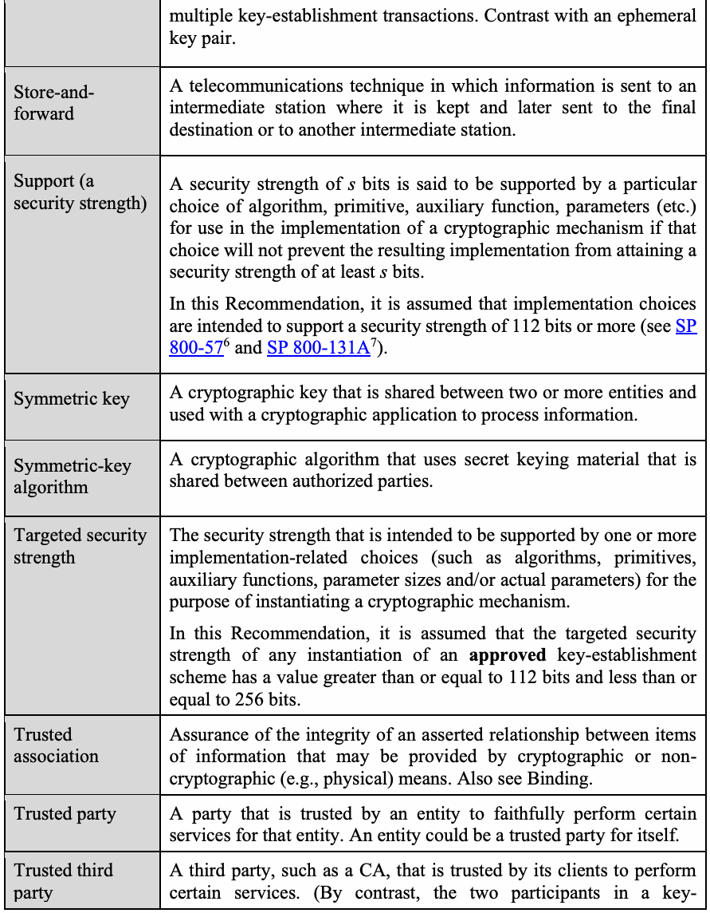
原本PDFの抜粋画像

原本PDFの抜粋画像

原本PDFの抜粋画像

原本PDFの抜粋画像

原本PDFの抜粋画像

3.2 Symbols and Abbreviations
3.2 記号および略語
未レビュー訳General:
一般：
未レビュー訳原本PDFの抜粋画像
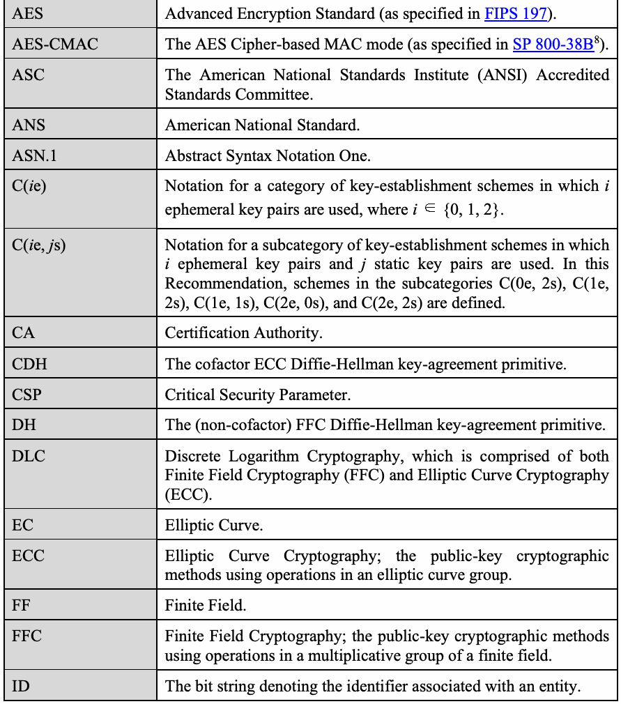
原本PDFの抜粋画像
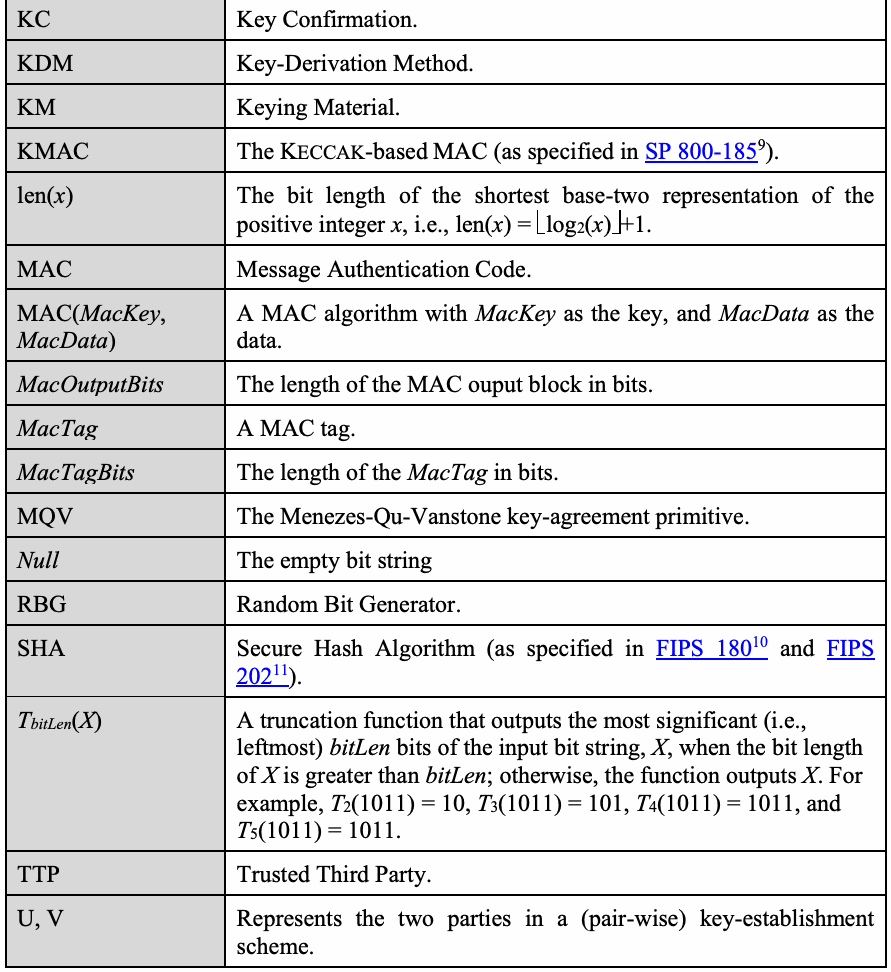
原本PDFの抜粋画像
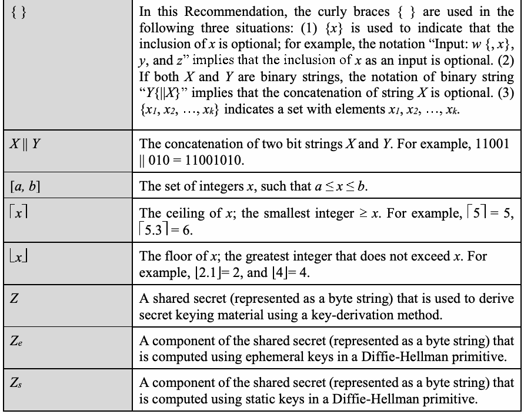
The following notations are used for FFC and ECC in this Recommendation. Note that the
以下の記法は本勧告でFFCおよびECCに使用する。なお、
未レビュー訳notation sometimes differs between the two scheme types due to the differing notations used
本勧告の基礎となる2つの標準で
未レビュー訳in the two standards on which this Recommendation is based (i.e., ANS X9.42 and ANS
使用されている記法が異なるため、方式の種類によって記法が異なることがある（ANS X9.42およびANS
未レビュー訳X9.63).
X9.63）。
未レビュー訳FFC:
FFC：
未レビュー訳原本PDFの抜粋画像
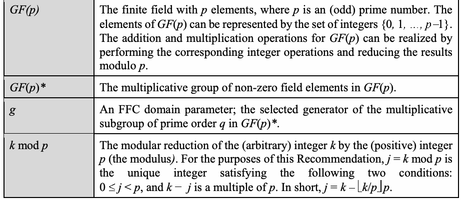
原本PDFの抜粋画像
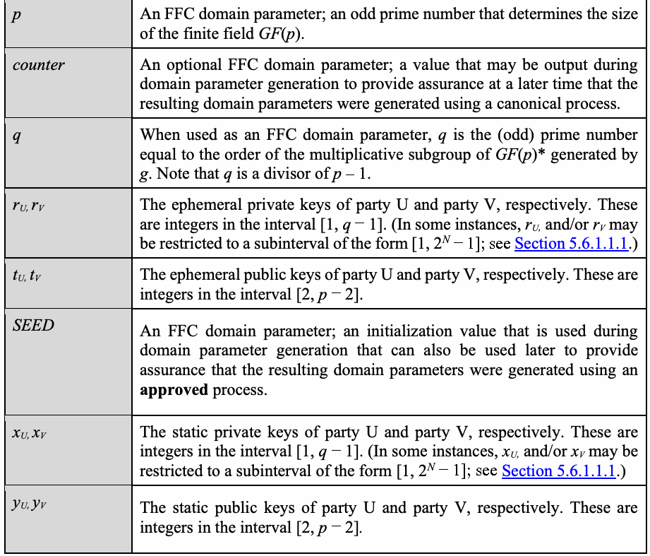
ECC:
ECC：
未レビュー訳原本PDFの抜粋画像
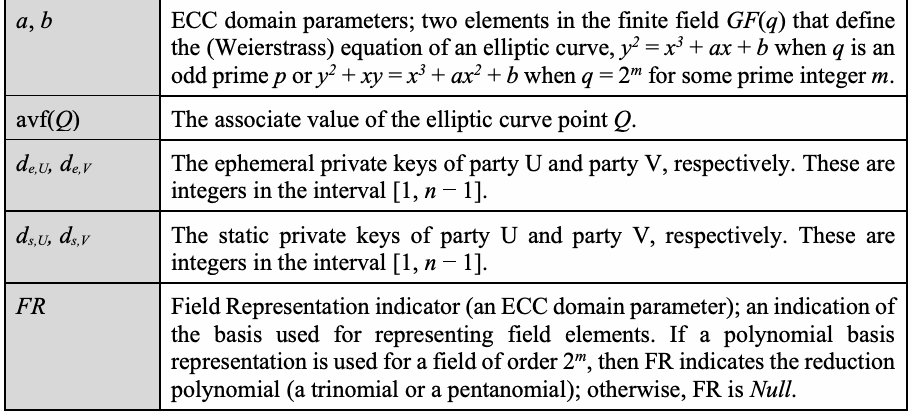
原本PDFの抜粋画像
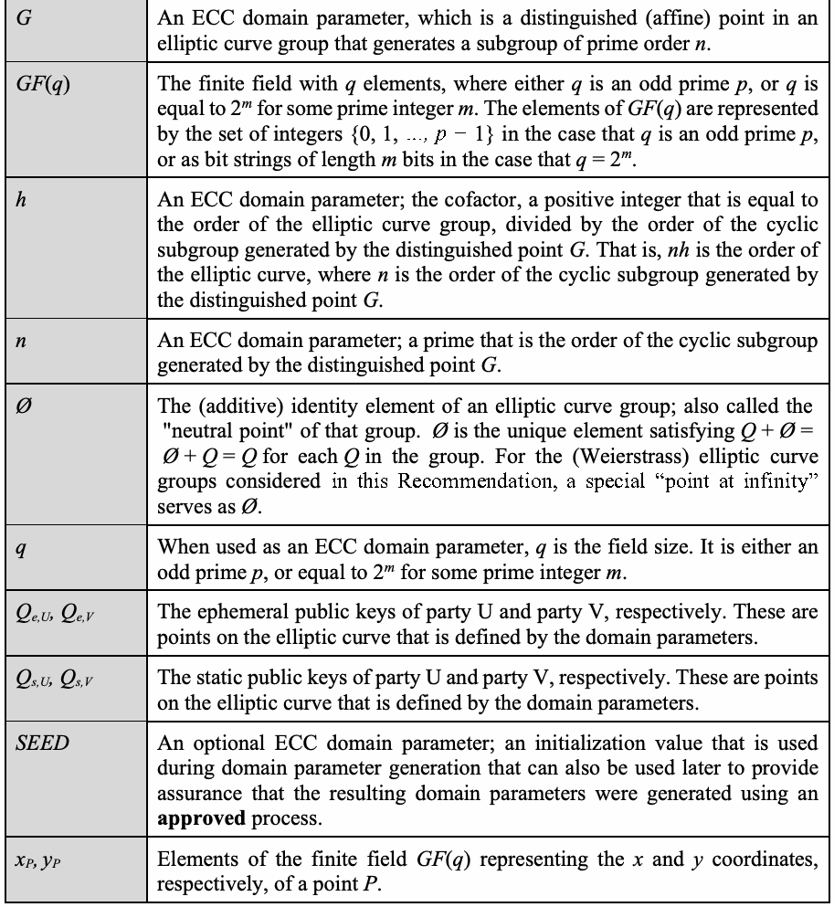
4. Overview of Key-Establishment Schemes
4. 鍵確立方式の概要
未レビュー訳Secret cryptographic keying material may be electronically established between parties by using a key-establishment scheme, that is, by using either a key-agreement scheme or a key-transport scheme. This Recommendation specifies key-agreement schemes; however, Section 4.3 discusses how key transport may be conducted using the keying material derived during a key-agreement transaction.
秘密の暗号鍵素材は、鍵確立方式、すなわち鍵共有方式または鍵転送方式を用いて当事者間で電子的に確立できる。本勧告は鍵共有方式を規定する。ただし、第4.3節では、鍵共有取引中に導出された鍵素材を用いて鍵転送を行う方法を説明する。
未レビュー訳During a pair-wise key-agreement scheme, the secret keying material to be established is not sent directly from one entity to another. Instead, the two parties exchange information from which they each compute a shared secret that is used (along with other exchanged/known data) to derive the secret keying material. The method used to combine the information made
ペアワイズ鍵共有方式では、確立する秘密鍵素材を一方の主体から他方へ直接送信しない。代わりに、両当事者は情報を交換し、それぞれが共有秘密を計算する。共有秘密は、交換済みまたは既知の他のデータとともに、秘密鍵素材の導出に用いられる。両当事者に提供された情報を組み合わせる方法により、
未レビュー訳available to both parties provides assurance that neither party can control the output of the
鍵共有プロセスの出力をいずれの当事者も制御できないことが保証される。
未レビュー訳key-agreement process.
鍵共有プロセス。
未レビュー訳The key-agreement schemes described in this Recommendation employ public-key
本勧告に記載する鍵共有方式は、公開鍵
未レビュー訳techniques utilizing Discrete Logarithm Cryptography (DLC). The security of these DLC-
離散対数暗号（DLC）を用いる技法を採用する。これらのDLCベースの
未レビュー訳based key-agreement schemes depends upon the intractability of the discrete logarithm
鍵共有方式の安全性は、特定の設定における離散対数
未レビュー訳problem in certain settings.
問題の困難性に依存する。
未レビュー訳In this Recommendation, the approved key-agreement schemes are described in terms of
本勧告では、承認済み鍵共有方式を、
未レビュー訳the roles played by parties “U” and “V.” These are specific labels that are used to distinguish
Party “U”とParty “V”が担う役割により記述する。このラベルは、
未レビュー訳between the two participants engaged in key agreement – irrespective of the actual labels
鍵共有に参加する2者を区別するために用いる固有の呼称であり、
未レビュー訳that may be used by a protocol employing a given approved key-agreement scheme.
承認済み鍵共有方式を使うプロトコルで実際に使用される呼称にかかわらない。
未レビュー訳To be in conformance with this Recommendation, a protocol employing any of the approved
本勧告に適合するには、承認済みペアワイズ鍵共有方式を用いるプロトコルは、
未レビュー訳pair-wise key-agreement schemes shall unambiguously assign the roles of party U and party
Party UおよびParty
未レビュー訳V to the participants by clearly defining which participant performs the actions ascribed by
Vの役割を参加者に明確に割り当てなければならない（shall）。具体的には、本勧告でParty Uに割り当てる動作を実行する参加者と、
未レビュー訳this Recommendation to party U, and which performs the actions ascribed herein to party V.
Party Vに割り当てる動作を実行する参加者を明確に定義する。
未レビュー訳This Recommendation specifies several processes that are associated with key establishment
本勧告は、鍵確立に関連する複数のプロセスを規定する。
未レビュー訳(including processes for generating domain parameters and for deriving secret keying
これには、ドメインパラメータの生成や、共有秘密から秘密鍵素材を
未レビュー訳material from a shared secret). Some of these processes are used to provide assurance (for
導出するプロセスが含まれる。一部のプロセスは保証を提供するために用いられる。例えば、
未レビュー訳example, assurance of the arithmetic validity of a public key or assurance of the possession
公開鍵が算術的に有効であること、または公開鍵に対応する秘密鍵を保有していることの保証などである。
未レビュー訳of a private key associated with a public key). The party that provides the assurance is called
保証を提供する当事者を
未レビュー訳the “provider” (of the assurance), and the party that obtains the assurance is called the
保証の「提供者」、保証を受け取る当事者を
未レビュー訳“recipient” (of the assurance). For any of the specified processes, equivalent processes may
「受信者」と呼ぶ。規定されたプロセスについては、同等のプロセスを
未レビュー訳be used. Two processes are equivalent if, when the same values are input to each process
使用してよい（may）。2つのプロセスが同等であるとは、同じ値をそれぞれのプロセスに入力したとき、
未レビュー訳(either as input parameters or as values made available during the process), the same output
（入力パラメータとして、またはプロセス中に利用できる値として）、同じ出力
未レビュー訳is produced.
が生成されることをいう。
未レビュー訳The security of a key-establishment scheme depends on its implementation, and this document includes several practical recommendations for implementers. For example, good security practice dictates that implementations of procedures employed by primitives, operations, schemes, etc. include steps that destroy any potentially sensitive locally stored data that is created (and/or copied for use) during the execution of a given procedure, and whose continued local storage is not required after the procedure has been exited. The destruction of such locally stored data ideally occurs prior to or during any exit from the procedure. This is intended to limit opportunities for unauthorized access to sensitive information that might compromise a key-establishment process and to prevent its use for any other purpose. Explicit instructions for the destruction of certain potentially sensitive values that are likely to be locally stored by procedures are included in the specifications found in this Recommendation. Examples of such values include local copies of any portions of secret or private keys that are employed or generated during the execution of a procedure, intermediate results produced during computations, and locally stored duplicates of values that are ultimately output by a procedure. However, it is not possible to anticipate the form of all possible implementations of the specified primitives, operations, schemes, etc., making it impossible to enumerate all potentially sensitive data that might be locally stored by a procedure employed in a given implementation. Nevertheless, the destruction of any
鍵確立方式のセキュリティは実装に依存するため、本書には実装者向けの実践的な推奨事項を複数含める。例えば、適切なセキュリティ実務では、プリミティブ、演算、方式などで用いられる手順の実装において、手順の実行中に生成（および／または使用のため複製）され、終了後のローカル保存が不要となる、機微である可能性のあるデータを破棄する段階を含める。理想的には、そのローカルデータの破棄を手順の終了前または終了時に行う。これは、鍵確立プロセスを危険にさらす機微情報への不正アクセス機会を抑え、他の目的での利用を防ぐためである。本勧告の仕様には、手順がローカルに保存する可能性の高い特定の機微値を破棄する明示的な指示を含めている。例として、手順の実行中に使用または生成した秘密鍵・私有鍵の一部のローカルコピー、計算の中間結果、手順が最終的に出力する値のローカル複製がある。しかし、規定されたプリミティブ、演算、方式などの実装形態すべてを予測することはできないため、特定の実装で用いられる手順がローカル保存する可能性のあるすべての機微データを列挙することは不可能である。それでも、
未レビュー訳potentially sensitive locally stored data is an obligation of all implementations.
機微である可能性のあるローカル保存データを破棄することは、すべての実装に課される義務である。
未レビュー訳Sections 4.1 and 4.2 describe the various steps that may be performed to establish secret
第4.1節と第4.2節では、鍵共有中に秘密
未レビュー訳keying material during key agreement.
鍵素材を確立するために実行する手順を説明する。
未レビュー訳4.1 Key Establishment Preparations
4.1 鍵確立の準備
未レビュー訳The owner of a private/public key pair is the entity that is authorized to use the private key
秘密鍵／公開鍵ペアの所有者とは、その鍵ペアの秘密鍵を使用する権限を持つ主体である。
未レビュー訳of that key pair. The precise steps required may depend upon the key-establishment scheme
必要な具体的手順は鍵確立方式および鍵ペアの種類により異なることがある（may）。
未レビュー訳and the type of key pair (static or ephemeral).
（静的またはエフェメラル）。
未レビュー訳The first step is to obtain appropriate domain parameters, as specified in Section 5.5.1 from
最初の手順として、第5.5.1節で規定する適切なドメインパラメータを
未レビュー訳an approved list (see Appendix D) or (in the FFC case) generated as specified in Section 5.5
承認済みリスト（付録D参照）から取得するか、FFCの場合は第5.5節で規定する方法で生成する。
未レビュー訳by a trusted party. These parameters will determine the type of arithmetic used to generate
信頼できる主体が生成してもよい。これらのパラメータは鍵ペア生成に用いる算術の種類と
未レビュー訳key pairs and compute shared secrets. The owner must have assurance of the validity of these
共有秘密の計算方法を決定する。所有者はこれらのドメインパラメータの有効性を保証されなければならない（must）。
未レビュー訳domain parameters; approved methods for obtaining this assurance are provided in Section
この保証を得るための承認済み方法は第
未レビュー訳5.5.2.
5.5.2節に記載する。
未レビュー訳If the owner will be using a key-establishment scheme that requires that the owner have a
所有者が、静的鍵ペアを必要とする鍵確立方式を使用する場合、
未レビュー訳static key pair, the owner obtains this key pair. Either the owner or a trusted third party
所有者はその鍵ペアを取得する。所有者本人または信頼できる第三者が
未レビュー訳generates the key pair as specified in Section 5.6.1. If the key pair is generated by a trusted
第5.6.1節に従って鍵ペアを生成する。信頼できる第三者が鍵ペアを生成した場合、
未レビュー訳third party, then the key pair shall be transported to the owner in a protected manner
その鍵ペアは保護された方法で所有者に転送しなければならない（shall）。
未レビュー訳(providing source authentication and integrity protection for the entire key pair, and
鍵ペア全体の生成元認証および完全性保護、ならびに
未レビュー訳confidentiality protection of (at least) the private key). If the key-establishment scheme
少なくとも秘密鍵の機密性保護を提供する。鍵確立方式が
未レビュー訳requires an ephemeral key pair, the owner generates it (as close to the time of use as possible)
エフェメラル鍵ペアを必要とする場合、所有者はその鍵ペアを可能な限り使用時に近い時点で生成する。
未レビュー訳as specified in Section 5.6.1. Before using a static or ephemeral key pair in a key-
第5.6.1節の規定に従う。静的またはエフェメラル鍵ペアを鍵
未レビュー訳establishment transaction, its owner is required to confirm its validity by obtaining the
確立取引で使用する前に、所有者は第5.6.2.1節に定める保証を取得して
未レビュー訳assurances specified in Section 5.6.2.1.
その有効性を確認する必要がある。
未レビュー訳An identifier is used to label the entity that owns a static key pair used in a key-establishment transaction; an identifier may also be used to label the owner of an ephemeral key pair. This label may uniquely distinguish the owner from all other entities, in which case it could rightfully be considered an identity. However, the label may be something less specific – an organization, nickname, etc. – hence, the term identifier is used in this Recommendation, rather than the term identity. For example, an identifier could be “NIST123”, rather than an identifier that names a given person. A key pair’s owner (or an agent trusted to act on the owner’s behalf) is responsible for ensuring that an identifier associated with its static public key is appropriate for the applications in which it will be used. For each static key pair, this Recommendation assumes that there is a trusted association between the owner’s identifier(s) and the owner’s static public key. The association may be provided using cryptographic mechanisms or by physical means. The use of cryptographic mechanisms may require the use of a binding authority (i.e., a trusted authority) that binds the information in a manner that can be verified by others; an example of such a trusted authority is a registration authority working with a CA who creates a certificate containing both the static public key and the identifier. The binding authority shall verify the owner’s intent to associate a specific identifier chosen for the owner and the public key; the means for accomplishing this is beyond the scope of this Recommendation. The binding authority
鍵確立取引で使用する静的鍵ペアの所有主体を識別するため、識別子を用いる。エフェメラル鍵ペアの所有者の識別にも識別子を用いてよい。識別子は所有者を他のすべての主体から一意に区別する場合があり、その場合は身元（identity）とみなすこともできる。しかし、識別子は組織名やニックネームなど、それほど特定的でない場合もある。そのため、本勧告では「身元」ではなく「識別子」という語を使う。例えば、特定の人物名ではなく「NIST123」を識別子としてもよい。鍵ペアの所有者（または代理として行動することを信頼された代理人）は、静的公開鍵に関連付ける識別子が、その鍵を使用するアプリケーションに適切であることを確認する責任を負う。本勧告では、各静的鍵ペアについて、所有者の識別子と静的公開鍵との間に信頼できる関連付けがあるものとする。この関連付けは暗号手段または物理的方法で提供できる。暗号手段を使う場合、他者が検証できる形で情報を結び付けるバインディング機関（すなわち信頼できる機関）が必要となることがある。例として、静的公開鍵と識別子の両方を含む証明書を作成する認証局（CA）と連携する登録局がある。バインディング機関は、所有者が自身のために選択した特定の識別子と公開鍵を関連付ける意思を確認しなければならない（shall）。その実現方法は本勧告の適用範囲外である。バインディング機関は
未レビュー訳shall also obtain assurance of the validity of the domain parameters associated with the
所有者の鍵ペアに関連付けられたドメインパラメータの有効性も保証しなければならない（shall）。
未レビュー訳owner’s key pair, the arithmetic validity of the owner’s static public key, and the owner’s
また、所有者の静的公開鍵の算術的有効性、および所有者が
未レビュー訳possession of the static private key corresponding to that static public key (see Section 5.5.2,
当該静的公開鍵に対応する静的秘密鍵を保有していることを保証する（第5.5.2節、
未レビュー訳Section 5.6.2.2.1 [method 1], and Section 5.6.2.2.3, respectively.)
第5.6.2.2.1節［方法1］、第5.6.2.2.3節をそれぞれ参照）。
未レビュー訳As an alternative to reliance upon a binding authority, trusted associations between
バインディング機関に依存する代わりに、識別子と静的公開鍵の信頼できる関連付けを、
未レビュー訳identifiers and static public keys may be established by the direct exchange of this
相互に信頼する方法（例えば、信頼できる運搬者または
未レビュー訳information between entities using a mutually trusted method (e.g., a trusted courier or a
対面での交換）によって主体間で直接情報交換して確立してもよい（may）。この場合、識別子と関連する
未レビュー訳face-to-face exchange). In this case, each entity receiving an identifier and the associated
静的公開鍵を受け取る各主体は、
未レビュー訳static public key shall be responsible for obtaining the same assurances that would have been
バインディング機関が代わりに取得していたはずの保証と同じ保証を取得する責任を負う（shall）。
未レビュー訳obtained on their behalf by a binding authority (see the previous paragraph). Entities shall
（前段落参照）。主体はさらに、
未レビュー訳also be responsible for maintaining (by cryptographic or other means) the trusted associations
このような交換で受け取った識別子と静的公開鍵の信頼できる関連付けを、暗号手段その他の方法で維持する責任を負う（shall）。
未レビュー訳between any identifiers and static public keys received through such exchanges.
交換で受け取った各識別子と静的公開鍵との信頼できる関連付けを維持する。
未レビュー訳If an entity engaged in a key-establishment transaction owns a static key pair that is employed
鍵確立取引に参加する主体が取引で用いる静的鍵ペアを所有する場合、
未レビュー訳during the transaction, then the identifier used to label that party shall be one that has a
その当事者を示す識別子は、当該鍵ペアの静的公開鍵と
未レビュー訳trusted association with the static public key of that key pair. If an entity engaged in a key-
信頼できる関連付けを持つものでなければならない（shall）。取引中に静的鍵ペアを使用せず、
未レビュー訳establishment transaction contributes only an ephemeral public key during the transaction,
エフェメラル公開鍵のみを提供する主体についても、
未レビュー訳but an identifier is still desired/required for that party, then a non-null identifier shall be
その当事者の識別子が必要または望ましい場合は、空でない識別子を
未レビュー訳selected/assigned in accordance with the requirements of the protocol relying upon the
当該プロトコルの要件に従って選択／割当しなければならない（shall）。
未レビュー訳transaction.
取引。
未レビュー訳Figure_1 depicts the steps that may be required of an owner to obtain its key pair(s) in
図1は、鍵確立の準備として所有者が鍵ペアを取得するために必要となることがある（may）
未レビュー訳preparation for key establishment.
手順を示す。
未レビュー訳Obtain domain parameters (5.5.1)
ドメインパラメータを取得（5.5.1）
未レビュー訳Obtain assurance of domain parameter validity (5.5.2)
ドメインパラメータの有効性を保証する情報を取得（5.5.2）
未レビュー訳Generate
生成
未レビュー訳Obtain static key
静的鍵ペアを取得
未レビュー訳ephemeral key pair
エフェメラル鍵ペアを
未レビュー訳pair (5.6.1)
取得（5.6.1）
未レビュー訳(5.6.1)
（5.6.1）
未レビュー訳Scheme dependent
方式に依存
未レビュー訳Establish trusted association with identifiers (4.1)
識別子との信頼できる関連付けを確立（4.1）
未レビュー訳Obtain required assurances (5.6.2)
必要な保証を取得（5.6.2）
未レビュー訳Ready for key establishment
鍵確立の準備完了
未レビュー訳Figure 1: Owner key-establishment preparations
図1：所有者による鍵確立の準備
未レビュー訳4.2 Key-Agreement Process
4.2 鍵共有プロセス
未レビュー訳A key-agreement process specified in this Recommendation consists of a sequence of ordered steps. Figure 2 depicts the steps that may be required of an entity when establishing secret keying material with another entity using one of the key-agreement schemes described in this Recommendation. Some discrepancies in the order of the steps may occur, depending upon the communication protocol in which the key-agreement process is performed. Depending on the key-agreement scheme and the available keys, the party whose actions are described could be either of the two participants in the key-agreement scheme (i.e., either party U or party V).
本勧告で規定する鍵共有プロセスは、順序付けられた一連の手順で構成される。図2は、本勧告に記載する鍵共有方式のいずれかを用いて、他の主体と秘密鍵素材を確立するときに主体が実行することのある手順を示す。鍵共有プロセスを行う通信プロトコルによっては、手順の順序に差異が生じることがある。鍵共有方式と利用可能な鍵に応じて、ここに記述する動作を行う当事者は、鍵共有方式の参加者（Party UまたはParty V）のいずれでもよい。
未レビュー訳Figure 2: Key-agreement process
図2：鍵共有プロセス
未レビュー訳Receive other
相手の
未レビュー訳Generate a nonce
ノンスを生成
未レビュー訳party’s ephemeral
当事者のエフェメラル
未レビュー訳and/or an ephemeral
鍵ペアおよび／またはエフェメラル
未レビュー訳Obtain other party’s
相手の
未レビュー訳public key and/or
公開鍵および／または
未レビュー訳key pair
鍵ペアを受信
未レビュー訳static public key
静的公開鍵
未レビュー訳other public data
その他の公開データを取得
未レビュー訳(5.4 & 5.6.1)
（5.4および5.6.1）
未レビュー訳Obtain required
必要な保証を取得
未レビュー訳Obtain required
必要な保証を取得
未レビュー訳Provide ephemeral
エフェメラル公開鍵および／または
未レビュー訳assurance for other
相手の
未レビュー訳assurance for other
相手の
未レビュー訳public key and/or
その他の公開データを
未レビュー訳party’s static public
静的公開鍵に関する
未レビュー訳party’s ephemeral
エフェメラル公開鍵に関する
未レビュー訳other public data to
相手に提供
未レビュー訳key (5.6.2.2)
保証（5.6.2.2）
未レビュー訳public key (5.6.2.2)
保証（5.6.2.2）
未レビュー訳other party
相手の当事者に
未レビュー訳Generate shared secret and derive keying material
共有秘密を生成し、鍵素材を導出
未レビュー訳Complete key
鍵
未レビュー訳(6 & 5.8)
（6および5.8）
未レビュー訳confirmation (5.9 & 6)
確認を完了（5.9および6）
未レビュー訳Obtain assurance of p o s se s si o n o f p r iv a te k e y s (5.6.2.2)
秘密鍵の保有を保証（5.6.2.2）
未レビュー訳Destroy shared sec re t , e p h e m e
共有秘密、エフェメラル
未レビュー訳ral
秘密鍵、
未レビュー訳p ri v a t e k e y , MacKey, etc.
MacKeyなどを破棄
未レビュー訳Key agreement completed
鍵共有完了
未レビュー訳Figure 2: Key-agreement process. Note that some of the actions shown in Figure 2 may be absent from certain schemes. The
図2：鍵共有プロセス。図2の動作の一部は方式によっては省略できる（may）。
未レビュー訳specifications of this Recommendation indicate when an action is required. If required by the key-agreement scheme, a party generates an ephemeral key pair (in accordance with Section 5.6.1) and provides the ephemeral public key of that key pair to the other entity; the ephemeral private key is not provided to the other party.
本勧告の仕様では、各動作が必須となる場合を示す。鍵共有方式で必要な場合、当事者は（第5.6.1節に従い）エフェメラル鍵ペアを生成し、その鍵ペアのエフェメラル公開鍵を相手の主体に提供する。エフェメラル秘密鍵は相手に提供しない。
未レビュー訳If required or desired for use in the key-agreement transaction, a party generates a nonce (as specified in Section 5.4) and provides it to the other party.
鍵共有取引でノンスを必要または望ましい場合、当事者は第5.4節に従ってノンスを生成し、相手に提供する。
未レビュー訳Depending upon the circumstances, additional public information (e.g., a party’s static public key, an identifier, etc.) may be provided to or obtained from the other party.
状況に応じて、追加の公開情報（例えば、当事者の静的公開鍵、識別子など）を相手に提供するか、相手から取得してよい（may）。
未レビュー訳If required by the key-agreement scheme, a party that requires the other entity’s static public key acquires that key (as well as the associated identifier) and obtains assurance of its validity. Approved methods for obtaining assurance of the validity of the other entity’s static public key are provided in Section 5.6.2.2.1. Assurance that the other entity is in possession of the corresponding static private key must also be obtained prior to using the derived keying material for purposes beyond those of the key-agreement transaction itself. (Note: this restriction does not prohibit the use of derived keying material for key confirmation performed during the key-agreement transaction.) See Section 5.6.2.2.3 for approved methods for obtaining this assurance.
鍵共有方式で必要な場合、相手の静的公開鍵を必要とする当事者は、その鍵（および関連する識別子）を取得し、有効性の保証を得る。相手の静的公開鍵の有効性を保証する承認済み方法は第5.6.2.2.1節に示す。導出した鍵素材を鍵共有取引自体以外の目的に使う前に、相手が対応する静的秘密鍵を保有していることの保証も取得しなければならない（must）。ただし、この制限は鍵共有取引中に実施する鍵確認で導出済み鍵素材を使うことを妨げない。保証取得の承認済み方法は第5.6.2.2.3節を参照。
未レビュー訳If a party receives an ephemeral public key from the other entity for use in the key-agreement transaction, that party must obtain assurance of its validity. Approved methods for obtaining
当事者が鍵共有取引で相手からエフェメラル公開鍵を受け取る場合、その有効性の保証を取得しなければならない（must）。相手のエフェメラル公開鍵の有効性を保証する承認済み方法は
未レビュー訳assurance of the validity of the other entity’s ephemeral public key are provided in Section
第5.6.2.2.2節に
未レビュー訳5.6.2.2.2.
示す。
未レビュー訳If either of the participants in the key-agreement transaction requires evidence that the other
鍵共有取引の参加者のいずれかが、相手も同じ共有秘密を計算し、
未レビュー訳participant has computed the same shared secret and/or derived the same secret keying
同じ秘密鍵素材を導出したことの証拠を必要とする場合、
未レビュー訳material, (unilateral or bilateral) key confirmation may be performed as specified in Section
第5.9節に規定する一方向または双方向の鍵確認を実施してよい（may）。
未レビュー訳5.9.
5.9節に規定する。
未レビュー訳4.3 DLC-based Key-Transport Process
4.3 DLCベースの鍵転送プロセス
Key transport is a key-establishment procedure whereby one party (the sender) selects a
鍵転送とは、一方の当事者（送信者）が
未レビュー訳value for the secret keying material and then securely distributes that value to another party
秘密鍵素材の値を選択し、その値を別の当事者に安全に配布する鍵確立手順である。
未レビュー訳(the receiver). Key transport may be performed using an approved key-wrapping algorithm
（受信者）。鍵転送は承認済み鍵ラッピングアルゴリズムを使って行ってよい（may）。
未レビュー訳(see SP 800-38F12) and a key-wrapping key established during the execution of a key-
（SP 800-38F¹²参照）。その鍵ラッピング鍵は、
未レビュー訳agreement scheme specified in Section 6. The security properties for this key-establishment
第6節で規定する鍵共有方式の実行中に確立する。
未レビュー訳process depend on the key-agreement scheme, key-wrapping algorithm and communication
この鍵確立プロセスのセキュリティ特性は、鍵共有方式、鍵ラッピングアルゴリズムおよび通信
未レビュー訳protocol used; the roles assumed by the participants during the process; and all other parameters used.
プロトコル、プロセス中に参加者が担う役割、ならびに使用するその他すべてのパラメータに依存する。
未レビュー訳5. Cryptographic Elements
5. 暗号要素
未レビュー訳This section describes the basic computations that are performed and the assurances that need to be obtained when performing DLC-based key establishment. The schemes described in Section 6 are based upon the correct implementation of these computations and assurances.
本節では、DLCベースの鍵確立で行う基本計算と、取得すべき保証を説明する。第6節に記載する方式は、これらの計算と保証が正しく実装されていることを前提とする。
5.1 Cryptographic Hash Functions
5.1 暗号ハッシュ関数
In this Recommendation, cryptographic hash functions may be used in key derivation and in MAC-tag computation during key confirmation. An approved hash function shall be used when a hash function is required. FIPS 180 and FIPS 202 specify approved hash functions.
本勧告では、鍵導出および鍵確認中のMACタグ計算に暗号ハッシュ関数を使用してよい（may）。ハッシュ関数が必要な場合は、承認済みハッシュ関数を使用しなければならない（shall）。承認済みハッシュ関数はFIPS 180およびFIPS 202で規定する。
未レビュー訳5.2 Message Authentication Code (MAC) Algorithm
5.2 メッセージ認証コード（MAC）アルゴリズム
A Message Authentication Code (MAC) algorithm defines a family of cryptographic
メッセージ認証コード（MAC）アルゴリズムは、暗号関数の族を定める。
未レビュー訳functions that is parameterized by a symmetric key. It is computationally infeasible to
その関数は対称鍵でパラメータ化される。MacKeyを知らずに、新たに生成したMacData値のMACを
未レビュー訳determine the MAC of a (newly formed) MacData value without knowledge of the MacKey
求めることは計算上実行不可能である。MacKey値を知らなければ、
未レビュー訳value (even if one has seen the MACs corresponding to other MacData values that were
同じMacKeyで計算された他のMacData値のMACを見ていても、
未レビュー訳computed using that same MacKey value).
この性質は変わらない。
未レビュー訳The input to a MAC algorithm includes a symmetric key, called MacKey and a binary data
MACアルゴリズムへの入力には、MacKeyと呼ぶ対称鍵および
未レビュー訳string called MacData that serves as the “message.” That is, a MAC computation is
「メッセージ」データとして使うMacDataという二進
未レビュー訳represented as MAC(MacKey, MacData). In this Recommendation, a MAC algorithm is used
文字列が含まれる。すなわち、MAC計算はMAC(MacKey, MacData)と表す。本勧告では、MACアルゴリズムを
未レビュー訳if key confirmation is performed during key establishment (see Section 5.9); a (possibly
鍵確立中に鍵確認を行う場合に使用する（第5.9節参照）。鍵導出プロセスで必要となるMACアルゴリズムは、（場合により別のものを）
未レビュー訳different) MAC algorithm may be used for the required key-derivation process (see Section
使用してよい（may）。第
未レビュー訳5.8 and SP 800-56C).
5.8節およびSP 800-56Cを参照。
未レビュー訳Key confirmation requires the use of an approved MAC algorithm, i.e., HMAC, AES-
鍵確認では、HMAC、AES-
未レビュー訳CMAC or KMAC. HMAC is specified in FIPS 198 and requires the use of an approved hash
CMACまたはKMACなどの承認済みMACアルゴリズムを用いる。HMACはFIPS 198で規定され、承認済みハッシュ
未レビュー訳function. AES-CMAC is specified in SP 800-38B for the AES block cipher algorithm
関数を必要とする。AES-CMACはSP 800-38Bで規定され、FIPS 197で規定されるAESブロック暗号
未レビュー訳specified in FIPS 197. KMAC is specified in SP 800-185.
アルゴリズムに用いる。KMACはSP 800-185で規定される。
未レビュー訳When used for key confirmation, an entity is required to compute a MAC tag on received or
鍵確認で使用する場合、主体は共有秘密から導出したMacKeyを用いるMACアルゴリズムで、受信または
未レビュー訳derived data using a MAC algorithm with a MacKey that is derived from a shared secret. The
導出したデータのMACタグを計算する必要がある。
未レビュー訳MAC tag is sent to the other entity participating in the key-establishment scheme in order to
そのMACタグは、共有秘密または導出済み鍵素材が正しく計算されたことを保証するため、
未レビュー訳provide assurance that the shared secret or derived keying material was correctly computed.
鍵確立方式に参加する相手の主体へ送信する。
未レビュー訳MAC-tag computation and verification are defined in Sections 5.2.1 and 5.2.2.
MACタグの計算と検証は第5.2.1節および第5.2.2節で規定する。
If a MAC algorithm is employed in key derivation, an approved MAC algorithm shall be
MACアルゴリズムを鍵導出に使用する場合、承認済みMACアルゴリズムを
未レビュー訳selected and used in accordance with SP 800-56C.
選択し、SP 800-56Cに従って使用しなければならない（shall）。
未レビュー訳5.2.1 MAC Tag Computation for Key Confirmation
5.2.1 鍵確認のためのMACタグ計算
Key confirmation can be performed as part of a key-agreement scheme. The computation of a MAC tag (denoted MacTag) is represented as follows:
鍵確認は鍵共有方式の一部として実行できる。MACタグ（MacTagと表記）の計算は次のように表す。
MacTag = T [MAC(MacKey, MacData)].
MacTag = T[MAC(MacKey, MacData)]。
未レビュー訳MacTagBits
MacTagBits
未レビュー訳To compute a MacTag:
MacTagを計算するには、次の手順に従う。
1.The agreed-upon MAC algorithm (see Section 5.2) is used with MacKey to compute the MAC of MacData, where MacKey is a symmetric key, and MacData represents the input “message” data. The minimum length of MacKey is specified in Table 5 of Section 5.9.3.
1.合意済みMACアルゴリズム（第5.2節参照）をMacKeyとともに用いて、MacDataのMACを計算する。MacKeyは対称鍵、MacDataは入力「メッセージ」データである。MacKeyの最小長は第5.9.3節の表5に規定する。
MacKey is obtained from the DerivedKeyingMaterial (when a key-agreement scheme employs key confirmation), as specified in Section 5.9.1. The output of the MAC algorithm is a bit string whose length (in bits) is MacOutputBits.
鍵共有方式で鍵確認を行う場合、MacKeyは第5.9.1節に従いDerivedKeyingMaterialから取得する。MACアルゴリズムの出力は、長さ（ビット単位）がMacOutputBitsであるビット列となる。
未レビュー訳2.Those bits are input to the truncation function T , which returns the leftmost MacTagBits (i.e., initial) bits of MacTagBits to be used as the value of MacTag. MacTagBits shall
2.そのビット列を切り詰め関数Tに入力する。Tは左端（すなわち先頭）のMacTagBitsビットを返し、それをMacTagの値として用いる。MacTagBitsは
未レビュー訳be less than or equal to MacOutputBits. (When MacTagBits equals MacOutputBits,
MacOutputBits以下でなければならない（shall）。MacTagBitsがMacOutputBitsに等しい場合は、
未レビュー訳T_{MacTagBits}
未レビュー訳acts as the identity function.) The minimum value for MacTagBits is 64, as
恒等関数として動作する。MacTagBitsの最小値は64である。
未レビュー訳MacTagBits
MacTagBits
未レビュー訳specified in Section 5.9.3.
第5.9.3節に規定する。
未レビュー訳5.2.2 MAC Tag Verification for Key Confirmation
5.2.2 鍵確認のためのMACタグ検証
To verify a received MacTag (i.e., received during key confirmation), a new MAC tag,
受信したMacTag（鍵確認中に受信したもの）を検証するには、新たなMACタグ
未レビュー訳MacTagis computed using the values of MacKey, MacTagBits, and MacData possessed by
MacTag′を、受信者が保持するMacKey、MacTagBits、MacDataを用いて計算する。
未レビュー訳the recipient (as specified in Section 5.2.1). MacTagis compared with the received MacTag.
（第5.2.1節で規定）。MacTag′と受信したMacTagを比較する。
未レビュー訳If their values are equal, then it may be inferred that the same MacKey, MacTagBits, and
両方の値が等しければ、同じMacKey、MacTagBits、および
未レビュー訳MacData values were used in the two MAC tag computations.
2つのMACタグ計算ではMacData値が使用された。
未レビュー訳5.3 Random Number Generation
5.3 乱数生成
Whenever this Recommendation requires the use of a randomly generated value (for
本勧告がランダムに生成された値（例えば、鍵またはnonceの取得）の使用を要求する場合は常に、
未レビュー訳example, for obtaining keys or nonces), the values shall be generated using an approved
その値は承認済みの
未レビュー訳random bit generator that supports the targeted security strength (see the SP 800-9013 series
対象とするセキュリティ強度をサポートする乱数ビット生成器（SP 800-90シリーズの刊行物を参照）を使用して生成しなければならない。
未レビュー訳of publications).
の刊行物。
未レビュー訳5.4 Nonce
5.4 nonce
A nonce is a time-varying value that has an acceptably small chance of repeating (where the
nonceとは、再度出現する可能性が許容できるほど小さい、時間とともに変化する値である（「許容できるほど小さい」の意味は
未レビュー訳meaning of “acceptably small” may be application specific). In certain schemes specified in
用途によって異なる場合がある）。本勧告で規定する特定の方式では、当事者は、
未レビュー訳this Recommendation, a party may be required to provide a (public) nonce that is used for
鍵共有および／または鍵確認に使用する（公開）nonceの提供を要求される場合がある。
未レビュー訳key-agreement and/or key-confirmation purposes. This circumstance arises when a scheme
これは、方式が
未レビュー訳does not require that a party provide an ephemeral public key to the other party as part of the
鍵確立プロセスの一部として、当事者が相手方に一時公開鍵を提供することを
未レビュー訳key-establishment process.
要求しない場合に生じる。
未レビュー訳This Recommendation requires the use of a nonce (supplied by Party U) in the C(0e, 2s) key-
本勧告は、6.3節に規定するC(0e, 2s)鍵共有方式において（当事者Uが提供する）nonceの使用を要求する。
未レビュー訳agreement schemes specified in Section 6.3. A nonce (supplied by party V) is also required by the C(1e, 2s) and C(0e, 2s) schemes when party V obtains key confirmation from party U in conformance with this Recommendation (see Section 6.2.1.5 and Section 6.3.3, respectively). A nonce may be composed of one (or more) of the following components (other components may also be appropriate):
当事者Vが本勧告に準拠して当事者Uから鍵確認を受ける場合、C(1e, 2s)方式およびC(0e, 2s)方式でも（当事者Vが提供する）nonceが必要となる（それぞれ6.2.1.5節および6.3.3節を参照）。nonceは以下の構成要素の1つ（または複数）から構成してよい（他の構成要素も適切な場合がある）。
未レビュー訳1.A random bit string that is generated anew for each nonce, using an approved random bit generator. A nonce containing a component of this type is called a random nonce.
1.承認済みの乱数ビット生成器を用いて各nonceについて新たに生成されるランダムビット文字列。この種の構成要素を含むnonceをランダムnonceと呼ぶ。
未レビュー訳2.A timestamp of sufficient resolution so that it is different each time it is used.
2.使用するたびに異なる値となるだけの十分な分解能を持つタイムスタンプ。
未レビュー訳3.A monotonically increasing sequence number, or
3.単調増加するシーケンス番号、または
4.A combination of a timestamp and a monotonically increasing sequence number,
4.タイムスタンプと単調増加するシーケンス番号の組み合わせであり、
未レビュー訳such that the sequence number is reset when and only when the timestamp changes.
シーケンス番号はタイムスタンプが変化した場合に限りリセットされる。
未レビュー訳(For example, a timestamp may show the date but not the time of day, so a sequence
（例えば、タイムスタンプが日付を示すものの時刻を示さない場合があり、そのため、特定の日に重複しない
未レビュー訳number is appended that will not repeat during a particular day.)
シーケンス番号を追加する。）
未レビュー訳The specified use of a nonce in key-derivation and/or key-confirmation computations does
鍵導出および／または鍵確認の計算においてnonceを指定どおりに使用しても、
未レビュー訳not provide the same benefits as the use of an ephemeral key pair in a key-agreement scheme.
鍵共有方式で一時鍵ペアを使用するのと同じ利点は得られない。
未レビュー訳(For example, party U’s contribution of a public nonce during the execution of a C(0e, 2s)
（例えば、C(0e, 2s)方式の実行中に当事者Uが公開nonceを提供しても、
未レビュー訳scheme does not protect the secrecy of derived keying material against a future compromise
将来、当事者Uの静的秘密鍵が漏えいした場合に、導出された鍵素材の機密性は保護されない。
未レビュー訳of party U’s static private key, but the use of an ephemeral key pair by party U during the
しかし、当事者UがC(1e, 2s)方式の実行中に一時鍵ペアを使用すれば、
未レビュー訳execution of a C(1e, 2s) scheme can provide such protection.) Still, the contribution of an
そのような保護を提供できる。）それでも、
未レビュー訳appropriately formed nonce can support some of the security goals (e.g., assurance of the
適切に形成されたnonceの提供は、一部のセキュリティ目標（例えば、導出された鍵素材の
未レビュー訳freshness of derived keying material) that might otherwise be supported by the contribution
新鮮性の保証）を支援できる。これは、
未レビュー訳of an ephemeral public key generated (and used) in conformance with this Recommendation.
本勧告に準拠して生成（および使用）された一時公開鍵の提供が、代わりに支援し得る目標である。
未レビュー訳Whenever a nonce is required for key-agreement and/or key-confirmation purposes as
本勧告で規定する鍵共有および／または鍵確認の目的でnonceが必要な場合は常に、
未レビュー訳specified in this Recommendation, it should be a random nonce containing a random bit
ランダムビットを含むランダムnonceとすることが望ましい。このランダムビットは、承認済み乱数ビット生成器からの
未レビュー訳string output from an approved random bit generator, where both the security strength
出力とし、その乱数ビット生成器のインスタンス化がサポートするセキュリティ強度と、ランダム
未レビュー訳supported by the instantiation of the random bit generator and the bit length of the random
ビット文字列のビット長の双方が、
未レビュー訳bit string are greater than or equal to the targeted security strength of the key-agreement
nonceが使用される鍵共有方式の目標セキュリティ強度以上であること。
未レビュー訳scheme in which the nonce is used; when feasible, the bit length of the random bit
実現可能な場合、ランダムビット文字列の
未レビュー訳string should be (at least) twice the targeted security strength.
ビット長は目標セキュリティ強度の少なくとも2倍であることが望ましい。
未レビュー訳For details concerning the security strength supported by an instantiation of a random bit
乱数ビット生成器のインスタンス化がサポートするセキュリティ強度の詳細については、
未レビュー訳generator, see SP 800-90.
SP 800-90を参照。
未レビュー訳As part of the proper implementation of this Recommendation, system users and/or agents
本勧告を適切に実装する一環として、システム利用者および／またはその代理として行動することを
未レビュー訳trusted to act on their behalf should determine that the components selected for inclusion in
信頼されたエージェントは、必要なnonceに含める構成要素が、各自のセキュリティ要件を満たすか
未レビュー訳any required nonces meet their security requirements. The application tasked with
判断することが望ましい。ある当事者に代わって鍵確立を実行するアプリケーションは、
未レビュー訳performing key establishment on behalf of a party should determine whether to proceed with a key-establishment transaction, based upon the perceived adequacy of the method(s) used to form the required nonces. Such knowledge may be explicitly provided to the application in some manner, or may be implicitly provided by the operation of the application itself.
必要なnonceを形成するために使用した方法の妥当性に関する認識に基づき、鍵確立トランザクションを続行するか判断することが望ましい。このような知識は、何らかの方法でアプリケーションに明示的に提供されてもよく、アプリケーション自体の動作によって暗黙に提供されてもよい。
未レビュー訳5.5 Domain Parameters
5.5 ドメインパラメータ
Discrete Logarithm Cryptography (DLC), which includes Finite Field Cryptography (FFC) and Elliptic Curve Cryptography (ECC), requires that the public and private key pairs be generated with respect to a set of domain parameters. Both parties executing a key-establishment scheme shall have assurance of domain-parameter validity prior to using them (e.g., to generate key pairs). Although domain parameters are public information, they shall be managed so that the correct correspondence between a given key pair and its set of domain parameters is maintained for all parties that use the key pair. Domain parameters may remain fixed for an extended period, and one set of domain parameters may be used with multiple key pairs and with multiple key-establishment schemes.
有限体暗号（FFC）および楕円曲線暗号（ECC）を含む離散対数暗号（DLC）では、ドメインパラメータの集合に基づいて公開鍵ペアと秘密鍵ペアを生成する必要がある。鍵確立方式を実行する両当事者は、ドメインパラメータを使用する（例えば鍵ペアを生成する）前に、その有効性の保証を得なければならない。ドメインパラメータは公開情報であるが、鍵ペアを使用するすべての当事者について、所定の鍵ペアとそのドメインパラメータ集合との正しい対応関係が維持されるよう管理しなければならない。ドメインパラメータは長期間固定してもよく、1つのドメインパラメータ集合を複数の鍵ペアおよび複数の鍵確立方式で使用してもよい。
未レビュー訳For this Recommendation, only one set of domain parameters shall be used during any key-
本勧告では、鍵
未レビュー訳establishment transaction. That is, when a key-establishment scheme uses both a static key
確立トランザクションの間に使用するドメインパラメータ集合は1つだけとする。すなわち、鍵確立方式が静的鍵ペアと
未レビュー訳pair and an ephemeral key pair, they shall be generated using the same set of domain
一時鍵ペアの両方を使用する場合、両者は同じドメインパラメータ集合を使用して
未レビュー訳parameters.
生成しなければならない。
未レビュー訳5.5.1 Domain-Parameter Selection/Generation
5.5.1 ドメインパラメータの選択／生成
5.5.1.1 FFC Domain Parameter Selection/Generation
5.5.1.1 FFCドメインパラメータの選択／生成
If p is a prime number, then GF(p) denotes the finite field with p elements, which can be
pが素数である場合、GF(p)はp個の要素を持つ有限体を表し、これは
未レビュー訳represented by the set of integers {0, 1, …, p −1}. The addition and multiplication operations
整数の集合{0, 1, …, p −1}で表すことができる。GF(p)の加算および乗算演算は、対応する整数演算を行い、
未レビュー訳for GF(p) can be realized by performing the corresponding integer operations and reducing
その結果をpを法として剰余化することで実現できる。
未レビュー訳the results modulo p. The multiplicative group of non-zero field elements is denoted by
0でない体要素の乗法群をGF(p)*と表す。本勧告では、FFC鍵確立方式は、
未レビュー訳GF(p)*. In this Recommendation, an FFC key-establishment scheme requires the use of
GF(p)*の一意な巡回部分群（素数位数q）に限定された
未レビュー訳public keys that are restricted to a (unique) cyclic subgroup of GF(p)* with prime order q
公開鍵を使用することを要求する（qはp − 1を割り切る）。gがこの巡回部分群の生成元である場合、その要素は
未レビュー訳(where q divides p – 1). If g is a generator of this cyclic subgroup, then its elements can be
{1, g mod p, g2 mod p, …, gq−1 mod p}と表すことができ、
未レビュー訳represented as {1, g mod p, g2 mod p, …, gq−1 mod p}, and 1 = gq mod p.
1 = gq mod pである。
未レビュー訳Domain parameters for an FFC scheme are of the form (p, q, g{, SEED, counter}), where p
FFC方式のドメインパラメータは(p, q, g{, SEED, counter})の形式である。ここでp
未レビュー訳is the (odd) prime field size, q is an (odd) prime divisor of p – 1, and g is a generator of the
は（奇数の）素数体の位数、qはp − 1の（奇数の）素因数、gは
未レビュー訳cyclic subgroup of GF(p)* of order q. The optional parameters, SEED and counter, are
位数qのGF(p)*の巡回部分群の生成元である。任意パラメータSEEDとcounterについては、以下に
未レビュー訳described below.
説明する。
未レビュー訳Two classes of domain parameters are approved for FFC key agreement: a class of “safe”
FFC鍵共有では、ドメインパラメータの2つのクラスが承認されている。承認済み安全素数群に関連付けられた「安全」
未レビュー訳domain parameters that are associated with approved safe-prime groups, and a class of
ドメインパラメータのクラスと、
未レビュー訳“FIPS 18614-type” domain parameters that conform to one of the FIPS 186-type parameter-
表1に示すFIPS 186型のパラメータサイズ集合のいずれかに準拠する「FIPS 186型」
未レビュー訳size sets that are listed in Table 1.
ドメインパラメータのクラスである。
未レビュー訳The safe-prime groups approved for use by U.S. Government applications are listed in Appendix D. The associated domain parameters have the form (p, q = (p – 1)/2, g = 2) for specific choices of p. (There are no SEED or counter values required for these groups as there are for the FIPS 186-type groups; see below.) Appendix D specifies the security strengths that can be supported by the approved safe-prime groups.
米国政府のアプリケーションでの使用が承認された安全素数群は、付録Dに記載されている。これらに関連するドメインパラメータは、特定のpの選択に対する(p, q = (p – 1)/2, g = 2)の形式である。（以下に示すFIPS 186型グループとは異なり、これらのグループではSEEDまたはcounter値は不要である。）付録Dは、承認済み安全素数群がサポートできるセキュリティ強度を規定する。
未レビュー訳The generation of FIPS 186-type domain parameters conforming to parameter-size set FB or FC from Table 1 shall be performed as specified in Appendix A of FIPS 186.15 The resulting domain parameters are of the form (p, q, g{, SEED, counter}), where SEED and counter are parameters used in an approved process for generating and validating p, q, and possibly g (depending on the method of generation). The party that generated the domain parameters should retain SEED and counter and make them available upon request for domain-parameter validation. When the targeted security strength for key establishment is greater than 112 bits, an approved safe-prime group capable of supporting that security strength shall be used. When the targeted security strength is 112 bits, an approved safe-prime group should be used. FIPS 186-type domain parameters should only be used for backward compatibility with
表1のパラメータサイズ集合FBまたはFCに準拠するFIPS 186型ドメインパラメータの生成は、FIPS 186の付録Aに規定されたとおりに行わなければならない。15 生成されたドメインパラメータは(p, q, g{, SEED, counter})の形式である。SEEDおよびcounterは、p、q、および場合によってはg（生成方法による）の生成と検証に使用する承認済みプロセスのパラメータである。ドメインパラメータを生成した当事者はSEEDとcounterを保持し、ドメインパラメータの検証のため要求に応じて提供することが望ましい。鍵確立の目標セキュリティ強度が112ビットを超える場合は、その強度をサポートできる承認済み安全素数群を使用しなければならない。目標セキュリティ強度が112ビットの場合、承認済み安全素数群を使用することが望ましい。FIPS 186型ドメインパラメータは、承認済み安全素数群を使用するようアップグレードできない
未レビュー訳existing applications that cannot be upgraded to use the approved safe-prime groups.
既存アプリケーションとの後方互換性のためにのみ使用することが望ましい。
未レビュー訳原本PDFの抜粋画像
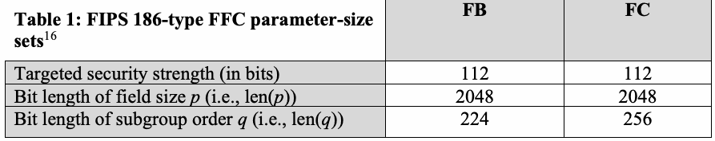
In the binary representation of each of the odd primes p and q, both the leftmost bit and the
奇数素数pおよびqのそれぞれの2進表現では、最左ビットと最右ビットの両方が
未レビュー訳rightmost bit shall be a 1 (i.e., no padding is permitted to artificially increase the bit lengths
1でなければならない（すなわち、表現のビット長を人為的に増やすための
未レビュー訳of their representations).
パディングは認められない）。
未レビュー訳The (safe or FIPS 186-type) domain parameters used for FFC key agreement shall be
FFC鍵共有で使用する（安全またはFIPS 186型）ドメインパラメータは、依存する鍵確立
未レビュー訳selected in accordance with the targeted security strength of the relying key-establishment
方式の目標セキュリティ強度に従って
未レビュー訳scheme. SP 800-57 provides guidance on determining security strengths that are appropriate
選択しなければならない。SP 800-57はFFC鍵共有に適したセキュリティ強度の決定に関する
未レビュー訳for FFC key agreement.
指針を示す。
未レビュー訳5.5.1.2 ECC Domain-Parameter Selection
5.5.1.2 ECCドメインパラメータの選択
For ECC, let GF(q) denote the finite field with q elements, where either q is an odd prime p,
ECCについて、GF(q)をq個の要素を持つ有限体とする。ここでqは奇素数pであるか、
未レビュー訳or q is equal to 2m for some prime integer m. For the purposes of this Recommendation,
またはある素数整数mに対する2mである。本勧告では、GF(q)上で定義される楕円曲線は、
未レビュー訳an elliptic curve defined over GF(q) is assumed to be defined by either an equation of the
次のいずれかの形式の方程式で定義されるものとする。
未レビュー訳form y2 = x3+ax+b (when q = p) or by an equation of the form y2+xy = x3+ax2+b (when q
q = pの場合はy2 = x3+ax+b、q = 2mの場合はy2+xy = x3+ax2+bであり、
未レビュー訳= 2m), where a and b are (appropriately chosen) elements of GF(q). In such an equation, the
aとbはGF(q)の（適切に選択された）要素である。このような方程式では、
未レビュー訳indicated arithmetic is performed in GF(q). (See SECG or SP 800-18617 for further
示された演算はGF(q)上で実行する。（有限体演算の詳細についてはSECGまたはSP 800-18617を参照。）本勧告では、対応する楕円曲線上のアフィン点Pは、指定された方程式を満たすGF(q)の要素を座標とする順序対(x, y)で
未レビュー訳information concerning arithmetic in finite fields.) For the purposes of this Recommendation, an affine point P on the corresponding elliptic curve is one that can be represented as an ordered pair (x , y ) whose coordinates are elements of GF(q) that satisfy the given equation.
表される点である。
未レビュー訳P P
x_P, y_P
未レビュー訳The set of elliptic curve points forms a group, given an appropriate binary operation “+” (elliptic-curve addition, as defined by the well-known secant-and-tangent rules) and the introduction of a special "point at infinity" to serve as “Ø” (the additive identity element). (See SECG or SP 800-186 for the details of elliptic-curve group operations.) As specified in this Recommendation, an ECC key-establishment scheme requires the use of public keys that are affine elliptic-curve points chosen from a specific cyclic subgroup with prime order n. Suppose that the point G is a generator for this cyclic subgroup. If, for each positive integer d, dG denotes
楕円曲線上の点の集合は、適切な二項演算「+」（よく知られた割線・接線規則で定義される楕円曲線加算）と、加法単位元「Ø」として機能する特別な「無限遠点」の導入により、群を形成する。（楕円曲線群演算の詳細はSECGまたはSP 800-186を参照。）本勧告で規定されるECC鍵確立方式は、素数位数nの特定の巡回部分群から選ばれたアフィン楕円曲線点である公開鍵を使用する。点Gがこの巡回部分群の生成元であるとする。各正整数dに対してdGを
未レビュー訳G + G +…+ G,
G + G +…+ G
未レビュー訳d terms
d個の項
未レビュー訳where “+” is the elliptic-curve addition operation, then the elements of the cyclic subgroup
（ここで「+」は楕円曲線加算演算）とすると、この巡回部分群の要素は
未レビュー訳can be represented as {Ø, G, 2G,…, (n – 1)G}. Note that nG = Ø. The full elliptic-curve
{Ø, G, 2G,…, (n – 1)G}と表すことができる。nG = Øである。楕円曲線群全体の位数はnhであり、整数hはGが生成する巡回部分群の余因子と呼ばれる。
未レビュー訳group has order nh, where the integer h is called a cofactor of the cyclic subgroup generated
原文のみ
by G.
原文のみ
Domain parameters for an ECC scheme have the form (q, FR, a, b{, SEED}, G, n, h). The
ECC方式のドメインパラメータは(q, FR, a, b{, SEED}, G, n, h)の形式である。
未レビュー訳parameter q is the field size. As noted above, q may be an odd prime p, or q may be equal to
パラメータqは体のサイズである。前述のようにqは奇素数pであるか、
未レビュー訳2m for some prime integer m. The field representation parameter FR is used to provide
またはある素数整数mに対する2mである。体表現パラメータFRは、有限体GF(q)の要素を表現する方法に関する追加情報を
未レビュー訳additional information (as specified in ANS X9.63 or the SECG) concerning the method used
提供する（ANS X9.63またはSECGで規定）。
未レビュー訳to represent elements of the finite field GF(q). FR is Null if q is equal to an odd prime p. In
qが奇素数pである場合、FRはNullである。この
未レビュー訳t hi s c a s e, th
場合、
未レビュー訳e e l e m e n t s
有限体の
未レビュー訳o f t he f i n i te
要素は
未レビュー訳f i eld a r e r e p
次のように表される。
未レビュー訳r e se n ted b y
整数
未レビュー訳t h e i n te g er s
の
未レビュー訳0 t h ro u gh p
0からp
未レビュー訳– 1 .
− 1。
未レビュー訳原文のみ
h e n
原文のみ
原文のみ
原文のみ
q = 2 , th e
q = 2^mである場合、GF(2^m)の各要素は長さmのビット文字列で表され、
未レビュー訳e l e m e n t s o f
原文のみ
原文のみ
原文のみ
( 2 ) a r e re p
原文のみ
r es e n t e d b y
原文のみ
bi t s t ri n g s
原文のみ
o f le n g t h
原文のみ
m , w ith e a
原文のみ
ch b i t
原文のみ
indicating the coefficient (0 or 1) of a specific element of a particular basis for GF(2m) viewed
各ビットは、GF(2^m)をGF(2)上のベクトル空間として見たときの特定の基底要素の係数（0または1）を示し、
未レビュー訳as a vector space over GF(2). FR is Null if q = 2m and the representation of field elements
FRはNullである（q = 2^mで、体要素の表現が
未レビュー訳corresponds to a Gaussian normal basis for GF(2m) (as specified in SP 800-186). If q = 2m,
SP 800-186に規定されたGF(2^m)のガウス正規基底に対応する場合）。q = 2^mであり、
未レビュー訳and the representation of field elements corresponds to a polynomial basis (as specified in
体要素の表現が多項式基底に対応する場合（
未レビュー訳SECG or SP 800-186), then FR specifies the reduction polynomial – either a trinomial or a
SECGまたはSP 800-186に規定）、FRは被約多項式（三項式または五項式）を指定する。
未レビュー訳pentanomial. The parameters a and b are elements of GF(q) that define the equation of an
パラメータaおよびbはGF(q)の要素であり、楕円曲線の方程式を定める。
未レビュー訳elliptic curve. G = (xG, yG) is an affine point on the elliptic curve determined by a and b that
G = (xG, yG)は、aおよびbで決まる楕円曲線上のアフィン点であり、
未レビュー訳is used to generate a cyclic subgroup of prime order n. The parameter h is the cofactor of the
素数位数nの巡回部分群を生成するために使用する。パラメータhは
未レビュー訳cyclic subgroup generated by G. The bit string SEED is an optional parameter used in an
Gが生成する巡回部分群の余因子である。ビット文字列SEEDは任意パラメータであり、
未レビュー訳approved process for generating and validating a, b, and possibly G (depending on the
a、b、および場合によってはG（生成方法による）の生成と検証に使用する承認済み
未レビュー訳method of generation).
プロセスで使用される。
未レビュー訳The ECC domain parameters for key establishment for U.S. Government applications shall
米国政府のアプリケーションにおける鍵確立用ECCドメインパラメータは、
未レビュー訳be selected only from the elliptic-curve domain parameters in SP 800-186 that are listed in Appendix D, along with the security strengths that can be supported by each curve. The curves to be used for ECC key agreement shall be selected in accordance with the targeted security strength of the relying key-establishment scheme. SP 800-57 provides guidance on determining the security-strength requirements that are appropriate for ECC key agreement.
付録Dに記載された各曲線でサポート可能なセキュリティ強度とともに、SP 800-186にある楕円曲線ドメインパラメータからのみ選択しなければならない。ECC鍵共有で使用する曲線は、依存する鍵確立方式の目標セキュリティ強度に従って選択しなければならない。SP 800-57はECC鍵共有に適したセキュリティ強度要件の決定に関する指針を示す。
未レビュー訳5.5.2 Assurances of Domain-Parameter Validity
5.5.2 ドメインパラメータ有効性の保証
Secure key establishment depends on the arithmetic validity of the domain parameters used by the parties. Therefore, each party shall have assurance of the validity of candidate domain parameters before they are used for key establishment. Each party shall obtain assurance that the candidate domain parameters are valid in one of the following ways:
安全な鍵確立は、当事者が使用するドメインパラメータの算術的妥当性に依存する。したがって各当事者は、鍵確立に使用する前に、候補ドメインパラメータの有効性について保証を得ていなければならない。各当事者は、次のいずれかの方法で候補ドメインパラメータが有効であるとの保証を得なければならない。
1.The domain parameters correspond to a specifically approved group:
1.ドメインパラメータが、特に承認されたグループに対応していること。
未レビュー訳a. For FFC: An approved safe-prime group, as listed in Appendix D. b. For ECC: An elliptic-curve group approved for use by the key-establishment schemes specified in this Recommendation, as listed in Appendix D and specified in SP 800-186.18
a. FFCの場合：付録Dに記載された承認済み安全素数群。b. ECCの場合：本勧告の鍵確立方式での使用が承認された楕円曲線群（付録Dに記載され、SP 800-18618に規定）。
未レビュー訳2.For FFC domain parameters that conform to a FIPS 186-type parameter-size set (see
2.FIPS 186型のパラメータサイズ集合（表1を参照）に準拠するFFCドメインパラメータについては、
未レビュー訳Table 1):
次のいずれかとする。
未レビュー訳a. The party has generated the domain parameters using a method specified in
a. 当事者がFIPS 186の付録Aに規定された方法を用いてドメインパラメータを生成している、
未レビュー訳Appendix A of FIPS 186 and/or
および／または
未レビュー訳b. The party has performed an explicit domain-parameter validation as specified in
b. 当事者が提供されたSEEDおよびcounter値を使用し、SP 800-8919,20に規定された
未レビュー訳SP 800-8919,20, using the provided SEED and counter values.
明示的なドメインパラメータ検証を実施している。
未レビュー訳(Method b can be used by the party that generated the FFC domain parameters to
（方法bは、FFCドメインパラメータを生成した当事者が、必要に応じてその有効性について
未レビュー訳obtain renewed assurance of their validity, as necessary.)
改めて保証を得るために使用できる。）
未レビュー訳3.A trusted third party (for example, a CA) has obtained assurance that the domain
3.信頼できる第三者（例えばCA）が、上記いずれかの方法に従ってドメイン
未レビュー訳parameters are valid in accordance with one of the methods above, and has
パラメータが有効であるとの保証を得て、その事実を
未レビュー訳communicated that fact through a trusted channel.
信頼できるチャネルを通じて伝達している。
未レビュー訳As part of the proper implementation of this Recommendation, system users and/or agents
本勧告を適切に実装する一環として、システム利用者および／またはその代理として行動することを
未レビュー訳trusted to act on their behalf should determine which of the methods above meet their
信頼されたエージェントは、上記方法のどれが各自の
未レビュー訳security requirements. The application tasked with performing key establishment on behalf
セキュリティ要件を満たすか判断することが望ましい。ある当事者に代わって鍵確立を実行するアプリケーションは、
未レビュー訳of a party should determine whether to proceed with a key-establishment transaction, based
ドメインパラメータの有効性を保証するために使用した方法の妥当性に関する認識に
未レビュー訳upon the perceived adequacy of the method(s) used to obtain assurance of domain-parameter
基づき、鍵確立トランザクションを続行するか判断することが望ましい。
未レビュー訳validity. Such knowledge may be explicitly provided to the application in some manner, or
そのような知識は何らかの方法でアプリケーションに明示的に提供されてもよく、
未レビュー訳may be implicitly provided by the operation of the application itself.
アプリケーション自体の動作によって暗黙に提供されてもよい。
未レビュー訳5.5.3 Domain Parameter Management
5.5.3 ドメインパラメータ管理
The set of domain parameters used shall be protected against modification or substitution
使用するドメインパラメータ集合は、不要となって無効化されるまで、改変または置換から
未レビュー訳until the set is deactivated (if it is no longer needed). Each private/public key pair shall be
保護しなければならない。各秘密鍵／公開鍵ペアは、
未レビュー訳correctly associated with its specific set of domain parameters.
対応する特定のドメインパラメータ集合と正しく関連付けられていなければならない。
未レビュー訳5.6 Key-Establishment Key Pairs
5.6 鍵確立鍵ペア
未レビュー訳This section specifies requirements for the generation of key pairs to be used in key-establishment transactions, provides methods for obtaining assurances that valid key pairs are used during key establishment, and specifies key-management requirements for the static and ephemeral key pairs used in key establishment.
本節では、鍵確立トランザクションで使用する鍵ペアの生成要件を規定し、鍵確立中に有効な鍵ペアが使用されるとの保証を得る方法を示し、鍵確立で使用する静的鍵ペアおよび一時鍵ペアの鍵管理要件を規定する。
未レビュー訳5.6.1 Key-Pair Generation
5.6.1 鍵ペアの生成
未レビュー訳These generation methods assume the use of valid domain parameters (see Section 5.5). Prior to performing key-pair generation with the selected domain parameters, the party generating the key pair shall obtain assurance of domain-parameter validity in accordance with Section 5.5.2.
これらの生成方法は、有効なドメインパラメータの使用を前提とする（5.5節を参照）。選択したドメインパラメータを用いて鍵ペアを生成する前に、鍵ペアを生成する当事者は5.5.2節に従ってドメインパラメータの有効性の保証を得なければならない。
未レビュー訳5.6.1.1 FFC Key-Pair Generation
5.6.1.1 FFC鍵ペアの生成
未レビュー訳Each FFC static and ephemeral key pair shall be generated using an approved method (see
各FFC静的鍵ペアおよび一時鍵ペアは、承認済みの方法（5.6.1.1.3節または5.6.1.1.4節を参照）と、選択された有効なドメインパラメータ(p, q, g{, SEED,
未レビュー訳Section 5.6.1.1.3 or 5.6.1.1.4) and the selected valid domain parameters (p, q, g{, SEED,
counter})を使用して生成しなければならない。
未レビュー訳counter}).
counter})。
未レビュー訳5.6.1.1.1 Using the Approved Safe-Prime Groups
5.6.1.1.1 承認済み安全素数群の使用
未レビュー訳When the domain parameters (p, q = (p – 1)/2, g = 2) correspond to an approved safe-prime
ドメインパラメータ(p, q = (p – 1)/2, g = 2)が承認済み安全素数群（付録Dに記載）に対応する場合、
未レビュー訳group (named in Appendix D), private keys are integers in the the interval [1, q – 1] whose
秘密鍵は区間[1, q – 1]の整数であり、その
未レビュー訳binary representations require no more than N bits, for an appropriate choice of N, and the
2進表現は、適切に選択したNビット以下でなければならない。また、
未レビュー訳corresponding public keys are in the interval [2, p – 2]. For the key-pair generation methods
対応する公開鍵は区間[2, p – 2]にある。5.6.1.1.3節および5.6.1.1.4節の鍵ペア生成方法では、入力パラメータsの値は当該安全素数群がサポートできる最大のセキュリティ強度でなければならず、
未レビュー訳i n
原文のみ
原文のみ
e c t io n s 5 .6 .
原文のみ
1. 1 . 3 a n d 5
原文のみ
.6 . 1 .1 . 4 , th e
原文のみ
va l u e o f t h e
原文のみ
i n p u t p ar am
原文のみ
e te r s s h a l l
原文のみ
b e t h e l a r g e
原文のみ
s t
原文のみ
s ec u ri t y s tr
原文のみ
en g t h t h a t c
原文のみ
a n b e s u p p o
原文のみ
r te d by t h e
原文のみ
n a m e d s a f e
原文のみ
-p r im e gr o u
原文のみ
p, a n d t h e v
原文のみ
a l u e f o r t h e
原文のみ
input parameter N (the requested maximum bit length of the private key) shall satisfy the
入力パラメータN（秘密鍵の要求最大ビット長）は
未レビュー訳inequalities 2s N len(q). The generated key pairs shall be used only for key-agreement
不等式2s ≤ N ≤ len(q)を満たさなければならない。生成された鍵ペアは鍵共有の目的にのみ使用しなければならない。
未レビュー訳purposes (see Section 6 for the approved key-agreement schemes).
（承認済み鍵共有方式については6節を参照。）
未レビュー訳5.6.1.1.2 Using the FIPS 186-Type FFC Parameter-size Sets
5.6.1.1.2 FIPS 186型FFCパラメータサイズ集合の使用
未レビュー訳When the domain parameters (p, q, g{, SEED, counter}) conform to a FIPS 186-type FFC
ドメインパラメータ(p, q, g{, SEED, counter})がFIPS 186型FFCパラメータサイズ集合（表1を参照）に準拠する場合、秘密鍵は区間[1, q – 1]で生成し、
未レビュー訳parameter-size set (see Table 1), private keys are generated in the interval [1, q – 1], and the
対応する公開鍵は区間[2, p – 2]にある。鍵ペア生成方法については、
未レビュー訳corresponding public keys are in the interval [2, p – 2]. For the key-pair generation methods
5.6.1.1.3節および5.6.1.1.4節において、入力パラメータNに使用する値はlen(q)でなければならず、
未レビュー訳in Sections 5.6.1.1.3 and 5.6.1.1.4, the value used for the input parameter N shall be len(q),
すなわちドメインパラメータqのビット長である。また、入力パラメータsに使用する値は
未レビュー訳i.e., the bit length of the domain parameter q, and the value used for the input parameter s
112でなければならない。これは、
未レビュー訳shall be 112, which is the security strength that can be supported by the FIPS 186-type FFC
FIPS 186型FFCパラメータサイズ集合がサポート可能なセキュリティ強度であり、
未レビュー訳parameter-size set that was used to generate the domain parameters (see Table 1). The
ドメインパラメータの生成に使用したパラメータサイズ集合に対応する（表1を参照）。生成された
未レビュー訳generated key pairs shall be used only for key-agreement purposes (see Section 6 for the approved key-agreement schemes), with the possible exception discussed in item 5 of Section 5.6.3.2.
鍵ペアは鍵共有の目的にのみ使用しなければならない（承認済み鍵共有方式については6節を参照）。ただし、5.6.3.2節の項目5で述べる例外があり得る。
未レビュー訳5.6.1.1.3 Key-Pair Generation Using Extra Random Bits
5.6.1.1.3 追加ランダムビットを用いる鍵ペア生成
未レビュー訳In this method, 64 more bits are requested from the random bit generator (RBG) than are needed for the private key so that bias produced by the mod function in process step 5 is negligible.
この方法では、処理手順5の剰余関数によって生じる偏りを無視できるよう、秘密鍵に必要なビット数より64ビット多く乱数ビット生成器（RBG）に要求する。
未レビュー訳The following process or its equivalent may be used to generate an FFC key pair.
次の処理または同等の処理をFFC鍵ペアの生成に使用してよい。
未レビュー訳Input:
入力：
1.(p, q, g) The FFC domain parameters used by this process. p, q and g shall either be provided as integers during input, or shall be converted to integers prior to use.
1.(p, q, g) この処理で使用するFFCドメインパラメータ。p、qおよびgは、入力時に整数として与えるか、使用前に整数に変換しなければならない。
未レビュー訳2. N
2. N
未レビュー訳The (maximum) bit length of the private key to be generated.
生成する秘密鍵の（最大）ビット長。
未レビュー訳3.s The maximum security strength to be supported by the key pair.
3.s 鍵ペアがサポートする最大セキュリティ強度。
未レビュー訳Output:
出力：
1.status The status returned from the key-pair generation process. The status will indicate SUCCESS or an ERROR.
1.status 鍵ペア生成処理から返されるステータス。ステータスはSUCCESSまたはERRORを示す。
2.(x, y) The generated private and public keys. If an error is encountered
2.(x, y) 生成された秘密鍵と公開鍵。生成処理中にエラーが発生した場合、
未レビュー訳during the generation process, invalid values for x and y should be
xおよびyの無効値を
未レビュー訳returned, as represented by Invalid_x and Invalid_y in the following
以下の仕様でInvalid_xおよびInvalid_yとして表して返すことが望ましい。
未レビュー訳specification; for example, both Invalid_x and Invalid_y could be 0.
例えば、Invalid_xとInvalid_yの両方を0としてもよい。
未レビュー訳Otherwise, x and y are returned as integers. The generated private key
それ以外の場合、xとyは整数として返される。生成された秘密鍵xは
未レビュー訳x is in the interval [1, min(2N − 1, q − 1)], and the public key y is in the
区間[1, min(2N − 1, q − 1)]にあり、公開鍵yは
未レビュー訳interval [2, p – 2].
区間[2, p – 2]にある。
未レビュー訳Process:
処理：
1.If s is not the maximum security strength that can be supported by (p, q, g), then
1.sが(p, q, g)でサポートできる最大セキュリティ強度でない場合、
未レビュー訳return an ERROR indication as the status and (Invalid_x, Invalid_y) as the key
ステータスとしてERRORを返し、鍵ペアとして(Invalid_x, Invalid_y)を
未レビュー訳pair; then exit the process without performing the remaining steps.
返す。その後、残りの手順を実行せずに処理を終了する。
未レビュー訳2.If ((N < 2s) or (N > len(q)), then return an ERROR indication as the status and
2.((N < 2s)または(N > len(q))の場合、ステータスとしてERRORを返し、
未レビュー訳(Invalid_x, Invalid_y) as the key pair; then exit the process without performing
鍵ペアとして(Invalid_x, Invalid_y)を返す。その後、残りの手順を実行せずに
未レビュー訳the remaining steps.
処理を終了する。
未レビュー訳3.Obtain a string of N + 64 returned_bits using an RBG with a security strength of
3.RBGを用いて、sビット以上のセキュリティ強度でN + 64ビットのreturned_bits文字列を取得する。
未レビュー訳s bits or more (see Section 5 in SP 800-13321). If an ERROR indication is
sビット以上（SP 800-13321の5節を参照）のセキュリティ強度を持つRBGを使用する。ERROR表示が
未レビュー訳returned, then return an ERROR indication as the status and (Invalid_x,
返された場合、ステータスとしてERRORを返し、鍵ペアとして(Invalid_x,
未レビュー訳Invalid_y) as the key pair; then exit the process without performing the remaining
Invalid_y)を返す。その後、残りの手順を実行せずに処理を終了する。
未レビュー訳steps.
手順。
未レビュー訳4.Convert returned_bits to the (non-negative) integer c in the interval
4.returned_bitsを区間内の（非負）整数cに変換する。
未レビュー訳[0, 2(N + 64) – 1] (see Appendix C.4).
[0, 2(N + 64) – 1]（付録C.4を参照）。
未レビュー訳5.Set M = min(2N, q), the minimum of 2N and q.
5.M = min(2N, q)、すなわち2Nとqの最小値を設定する。
未レビュー訳6.Set x = (c mod (M – 1)) + 1.
6.x = (c mod (M – 1)) + 1と設定する。
未レビュー訳7.Set y = gx mod p.
7.y = gx mod pと設定する。
未レビュー訳8.Return SUCCESS as the status and (x, y) as the key pair.
8.ステータスとしてSUCCESS、鍵ペアとして(x, y)を返す。
Output: SUCCESS and (x, y), or an ERROR indication and (Invalid_x, Invalid_y).
出力：SUCCESSおよび(x, y)、またはERROR表示および(Invalid_x, Invalid_y)。
未レビュー訳5.6.1.1.4 Key-Pair Generation by Testing Candidates
5.6.1.1.4 候補の検査による鍵ペア生成
未レビュー訳In this method, a random number is obtained and tested to determine whether it will produce a value for the private key in the correct interval. If the private key would be outside the interval, then another random number is obtained (i.e., the process is iterated until an acceptable value for the private key is obtained).
この方法では、乱数を取得し、その乱数が秘密鍵として正しい範囲内の値を生成するかどうかを検査する。秘密鍵が範囲外となる場合は、別の乱数を取得する（すなわち、秘密鍵として許容可能な値を得るまで処理を反復する）。
The following process or its equivalent may be used to generate an FFC key pair.
次の処理または同等の処理をFFC鍵ペアの生成に使用してよい。
Input:
入力：
1.(p, q, g) The FFC domain parameters used by for this process. p, q and g shall
1.(p, q, g) この処理で使用するFFCドメインパラメータ。p、qおよびgは、
未レビュー訳either be provided as integers during input, or shall be converted to
入力時に整数として与えるか、
未レビュー訳integers prior to use.
使用前に整数に変換しなければならない。
未レビュー訳2. N
2. N
未レビュー訳The (maximum) bit length of the private key to be generated.
生成する秘密鍵の（最大）ビット長。
未レビュー訳3.s The maximum security strength to be supported by the key pair.
3.s 鍵ペアがサポートする最大セキュリティ強度。
Output:
出力：
1.status The status returned from the key-pair generation process. The status
1.status 鍵ペア生成処理から返されるステータス。ステータスは
未レビュー訳will indicate SUCCESS or an ERROR.
SUCCESSまたはERRORを示す。
未レビュー訳2.(x, y) The generated private and public keys. If an error is encountered
2.(x, y) 生成された秘密鍵と公開鍵。生成中にエラーが発生した場合、
未レビュー訳during the generation process, invalid values for x and y should be
xおよびyの無効値を
未レビュー訳returned, as represented by Invalid_x and Invalid_y in the following
以下の仕様に示すInvalid_xおよびInvalid_yとして返すことが
未レビュー訳specification; for example, both Invalid_x and Invalid_y could be 0.
望ましい。例えばInvalid_xとInvalid_yの両方を0としてもよい。
未レビュー訳Otherwise, x and y are returned as integers. The generated private key
それ以外の場合、xとyは整数として返される。生成された秘密鍵
未レビュー訳x is in the interval [1, min(2N − 1, q − 1)], and the public key y is in the
xは区間[1, min(2N − 1, q − 1)]にあり、公開鍵yは
未レビュー訳interval [2, p – 2].
区間[2, p – 2]にある。
未レビュー訳Process:
処理：
1.If s is not the maximum security strength that can be supported by (p, q, g), then
1.sが(p, q, g)でサポートできる最大セキュリティ強度でない場合、
未レビュー訳return an ERROR indication as the status and (Invalid_x, Invalid_y) as the key
ステータスとしてERRORを返し、鍵ペアとして(Invalid_x, Invalid_y)を
未レビュー訳pair; then exit the process without performing the remaining steps.
返す。その後、残りの手順を実行せずに処理を終了する。
未レビュー訳2.If ((N < 2s) or (N > len(q)), then return an ERROR indication as the status and
2.((N < 2s)または(N > len(q))の場合、ステータスとしてERRORを返し、
未レビュー訳(Invalid_x, Invalid_y) as the key pair; then exit the process without performing
鍵ペアとして(Invalid_x, Invalid_y)を返す。その後、残りの手順を実行せずに
未レビュー訳the remaining steps.
処理を終了する。
未レビュー訳3.Obtain a string of N returned_bits using an RBG with a security strength of s bits
3.RBGを用いて、Nビットのreturned_bits文字列を取得する。RBGはsビット以上のセキュリティ強度を備えること。
未レビュー訳or more (see Section 5 of SP 800-133). If an ERROR indication is returned, then
（SP 800-133の5節を参照。）ERROR表示が返された場合は、
未レビュー訳return an ERROR indication as the status and (Invalid_x, Invalid_y) as the key pair; then exit the process without performing the remaining steps.
ステータスとしてERRORを返し、鍵ペアとして(Invalid_x, Invalid_y)を返す。その後、残りの手順を実行せずに処理を終了する。
未レビュー訳4.Convert returned_bits to the (non-negative) integer c in the interval [0, 2N – 1] (see Appendix C.4).
4.returned_bitsを区間[0, 2N − 1]内の（非負）整数cに変換する（付録C.4を参照）。
未レビュー訳5.Set M = min(2N, q), the minimum of 2N and q.
5.M = min(2N, q)、すなわち2Nとqの最小値を設定する。
未レビュー訳6.If (c > M – 2), then go to step 3.
6.(c > M − 2)の場合、手順3に進む。
7.x = c + 1.
7.x = c + 1。
未レビュー訳8.y = gx mod p.
8.y = gx mod p。
未レビュー訳9.Return SUCCESS as the status and (x, y) as the key pair.
9.ステータスとしてSUCCESS、鍵ペアとして(x, y)を返す。
未レビュー訳Output: SUCCESS and (x, y), or an ERROR indication and (Invalid_x, Invalid_y).
出力：SUCCESSおよび(x, y)、またはERROR表示および(Invalid_x, Invalid_y)。
5.6.1.2 ECC Key-Pair Generation
5.6.1.2 ECC鍵ペア生成
未レビュー訳For the ECC schemes, each static and ephemeral private key d and public key Q shall be generated using an approved method (see Section 5.6.1.2.1 and 5.6.1.2.2) and domain parameters that have been selected in accordance with Section 5.5.1.2. For the key-pair generation methods in Sections 5.6.1.2.1 and 5.6.1.2.2, the value of the input parameter s
ECC方式では、各静的および一時秘密鍵dと公開鍵Qを、承認済みの方法（5.6.1.2.1節および5.6.1.2.2節を参照）ならびに5.5.1.2節に従って選択したドメインパラメータを用いて生成しなければならない。5.6.1.2.1節および5.6.1.2.2節の鍵ペア生成方法では、入力パラメータsの値は
未レビュー訳shall be the maximum security strength that can be supported by the corresponding elliptic-
対応する楕円曲線群がサポートできる最大のセキュリティ強度（付録D参照）
未レビュー訳curve group, as specified in Appendix D.
しなければならない。
未レビュー訳Given valid domain parameters, each valid private key d is an integer that is randomly
有効なドメインパラメータが与えられた場合、有効な秘密鍵dはそれぞれ、ランダムに
未レビュー訳selected in the interval [1, n−1]. Whether static or ephemeral, each valid public key Q is
区間[1, n−1]から選択される整数である。静的か一時かを問わず、有効な公開鍵Qは、
未レビュー訳related to the corresponding (valid) private key d by the following formula: Q = (x
対応する（有効な）秘密鍵dと公開鍵Qは、次の式で関係付けられる。Q = (x_Q
未レビュー訳, y ) =
, y_Q) =
未レビュー訳Q Q
原文のみ
dG.
dG。
未レビュー訳5.6.1.2.1 Key Pair Generation Using Extra Random Bits
5.6.1.2.1 追加ランダムビットを用いる鍵ペア生成
In this method, 64 more bits are requested from the RBG than are needed for d so that bias
この方法では、mod関数による偏りが
未レビュー訳produced by the mod function in step 6 is negligible.
無視できるよう、dに必要なビット数より64ビット多くRBGに要求する。
未レビュー訳The following process or its equivalent may be used to generate an ECC key pair.
次の処理または同等の処理をECC鍵ペアの生成に使用してよい。
Input:
入力：
1.(q, FR, a, b {, domain_parameter_seed}, G, n, h)
1.(q, FR, a, b {, domain_parameter_seed}, G, n, h)
未レビュー訳The ECC domain parameters that are used for this process. n is a prime
この処理で使用するECCドメインパラメータ。nは素数であり、
未レビュー訳number, and G is a point on the elliptic curve (with additive order n).
Gは楕円曲線上の点（加法位数n）である。
未レビュー訳2.s The maximum security strength to be supported by the key pair.
2.s 鍵ペアがサポートする最大セキュリティ強度。
Output:
出力：
1.status The status returned from the key-pair generation procedure. The status
1.status 鍵ペア生成手順から返されるステータス。ステータスは
未レビュー訳will indicate SUCCESS or an ERROR.
SUCCESSまたはERRORを示す。
未レビュー訳2.(d, Q) The generated private and public keys. If an error is encountered during
2.(d, Q) 生成された秘密鍵と公開鍵。生成中にエラーが発生した場合、
未レビュー訳the generation process, invalid values for d and Q should be returned, as
dとQの無効値を
未レビュー訳represented by Invalid_d and Invalid_Q in the following specification; for
以下の仕様に示すInvalid_dおよびInvalid_Qとして返すことが望ましい。例えば、
未レビュー訳example, Invalid_d and Invalid_Q could be a point that is not on the elliptic curve defined by the domain parameters. The private key d is an integer in the interval [1, n – 1], and Q is an elliptic curve point.
Invalid_dとInvalid_Qは、ドメインパラメータで定義される楕円曲線上にない点であってもよい。秘密鍵dは区間[1, n – 1]の整数であり、Qは楕円曲線上の点である。
未レビュー訳Process:
処理：
1.If the domain parameters are not approved, then return an ERROR indication as the status and (Invalid_d, Invalid_Q) as the key pair; then exit the process without performing the remaining steps.
1.ドメインパラメータが承認されていない場合、ステータスとしてERRORを返し、鍵ペアとして(Invalid_d, Invalid_Q)を返す。その後、残りの手順を実行せずに処理を終了する。
未レビュー訳2.If s is not the maximum security strength that can be supported by the domain parameters, then return an ERROR indication as the status and (Invalid_d, Invalid_Q) as the key pair; then exit the process without performing the remaining steps.
2.sがドメインパラメータでサポートできる最大セキュリティ強度でない場合、ステータスとしてERRORを返し、鍵ペアとして(Invalid_d, Invalid_Q)を返す。その後、残りの手順を実行せずに処理を終了する。
3.L = len(n) + 64.
3.L = len(n) + 64。
未レビュー訳4.Obtain a string of L returned_bits using an RBG with a security strength of s bits or more (see Section 5 in SP 800-133). If an ERROR indication is returned, then return an ERROR indication as the status and (Invalid_d, Invalid_Q) as the key pair; then exit the process without performing the remaining steps.
4.RBGを用いてLビットのreturned_bits文字列を取得する。RBGはsビット以上のセキュリティ強度を備えること（SP 800-133の5節を参照）。ERROR表示が返された場合は、ステータスとしてERRORを返し、鍵ペアとして(Invalid_d, Invalid_Q)を返す。その後、残りの手順を実行せずに処理を終了する。
5.Convert returned_bits to the (non-negative) integer c in the interval
5.returned_bitsを区間内の（非負）整数cに変換する。
未レビュー訳[0, 2L – 1] (see Appendix C.4).
[0, 2L – 1]（付録C.4を参照）。
未レビュー訳6.d = (c mod (n – 1)) + 1.
6.d = (c mod (n – 1)) + 1。
未レビュー訳7.Q = dG.
7.Q = dG。
未レビュー訳8.Return SUCCESS as the status and (d, Q) as the key pair.
8.ステータスとしてSUCCESS、鍵ペアとして(d, Q)を返す。
Output: SUCCESS and (d, Q), or
出力：SUCCESSおよび(d, Q)、または
未レビュー訳an ERROR indication and (Invalid_d, Invalid_Q).
ERROR表示および(Invalid_d, Invalid_Q)。
未レビュー訳5.6.1.2.2 Key Pair Generation by Testing Candidates
5.6.1.2.2 候補の検査による鍵ペア生成
In this method, a random number is obtained and tested to determine whether or not it will
この方法では、乱数を取得し、それによってdが正しい範囲内の値となるかどうかを検査する。
未レビュー訳produce a value of d in the correct interval. If d would be outside the interval, another random
dが範囲外となる場合は、別の乱数を
未レビュー訳number is obtained (i.e., the process is iterated until an acceptable value of d is obtained).
取得する（すなわち、dとして許容可能な値を得るまで処理を反復する）。
未レビュー訳The following process or its equivalent may be used to generate an ECC key pair.
次の処理または同等の処理をECC鍵ペアの生成に使用してよい。
Input:
入力：
1.(q, FR, a, b {, domain_parameter_seed}, G, n, h)
1.(q, FR, a, b {, domain_parameter_seed}, G, n, h)
未レビュー訳The ECC domain parameters that are used for this process. n is a prime
この処理で使用するECCドメインパラメータ。nは素数であり、
未レビュー訳number, and G is a point on the elliptic curve (with the additive order n).
Gは楕円曲線上の点（加法位数n）である。
未レビュー訳2.s The maximum security strength to be supported by the key pair.
2.s 鍵ペアがサポートする最大セキュリティ強度。
Output:
出力：
1.status The status returned from the key pair generation procedure. The status
1.status 鍵ペア生成手順から返されるステータス。ステータスは
未レビュー訳will indicate SUCCESS or an ERROR.
SUCCESSまたはERRORを示す。
未レビュー訳2.(d, Q) The generated private and public keys. If an error is encountered during the generation process, invalid values for d and Q should be returned, as represented by Invalid_d and Invalid_Q in the following specification; for example, Invalid_d and Invalid_Q could be a point that is not on the elliptic curve defined by the domain parameters. d is an integer in the interval [1, n–1], and Q is an elliptic curve point.
2.(d, Q) 生成された秘密鍵と公開鍵。生成中にエラーが発生した場合、dとQの無効値を返すことが望ましい。以下の仕様に示すInvalid_dおよびInvalid_Qとして表し、例えばInvalid_dとInvalid_Qをドメインパラメータで定義される楕円曲線上にない点としてもよい。dは区間[1, n–1]の整数であり、Qは楕円曲線上の点である。
未レビュー訳Process:
処理：
1.If the domain parameters are not approved, then return an ERROR indication as the status and (Invalid_d, Invalid_Q) as the key pair; then exit the process without performing the remaining steps.
1.ドメインパラメータが承認されていない場合、ステータスとしてERRORを返し、鍵ペアとして(Invalid_d, Invalid_Q)を返す。その後、残りの手順を実行せずに処理を終了する。
未レビュー訳2.If s is not the maximum security strength that can be supported by the domain parameters, then return an ERROR indication as the status and (Invalid_d, Invalid_Q) as the key pair; then exit the process without performing the remaining steps.
2.sがドメインパラメータでサポートできる最大セキュリティ強度でない場合、ステータスとしてERRORを返し、鍵ペアとして(Invalid_d, Invalid_Q)を返す。その後、残りの手順を実行せずに処理を終了する。
未レビュー訳3.L = len(n).
3.L = len(n)。
未レビュー訳4.Obtain a string of L returned_bits using an RBG with a security strength of s bits
4.RBGを用いてLビットのreturned_bits文字列を取得する。RBGはsビットのセキュリティ強度を備えること。
未レビュー訳or more (see Section 5 in SP 800-133). If an ERROR indication is returned, then
またはそれ以上とする（SP 800-133の5節を参照）。ERROR表示が返された場合、
未レビュー訳return an ERROR indication as the status and (Invalid_d, Invalid_Q) as the key
ステータスとしてERRORを返し、鍵ペアとして(Invalid_d, Invalid_Q)を
未レビュー訳pair; then exit the process without performing the remaining steps.
返す。その後、残りの手順を実行せずに処理を終了する。
未レビュー訳5.Convert returned_bits to the (non-negative) integer c in the interval
5.returned_bitsを区間内の（非負）整数cに変換する。
未レビュー訳[0, 2L – 1] (see Appendix C.4).
[0, 2L – 1]（付録C.4を参照）。
未レビュー訳6.If (c > n – 2), then go to step 4.
6.(c > n – 2)の場合、手順4に進む。
7.d = c + 1.
7.d = c + 1。
未レビュー訳8.Q = dG.
8.Q = dG。
未レビュー訳9.Return SUCCESS as the status and (d, Q) as the key pair.
9.ステータスとしてSUCCESS、鍵ペアとして(d, Q)を返す。
Output: SUCCESS and (d, Q), or
出力：SUCCESSおよび(d, Q)、または
未レビュー訳an ERROR indication and (Invalid_d, Invalid_Q).
ERROR表示および(Invalid_d, Invalid_Q)。
未レビュー訳5.6.2 Required Assurances
5.6.2 必要な保証
未レビュー訳To explain the assurance requirements associated with key-establishment key pairs, some
鍵確立鍵ペアに関連する保証要件を説明するため、いくつかの
未レビュー訳terminology needs to be introduced. The owner of a static key pair is defined as the entity
用語を導入する必要がある。静的鍵ペアの所有者とは、
未レビュー訳that is authorized to use the private key that corresponds to the public key; this is independent
公開鍵に対応する秘密鍵の使用を許可された主体と定義される。これは
未レビュー訳of whether or not the owner generated the key pair. The recipient of a static public key is
所有者が鍵ペアを生成したかどうかとは無関係である。静的公開鍵の受領者とは、
未レビュー訳defined as the entity that is participating in a key-establishment transaction with the owner
鍵確立トランザクションで所有者と共に参加する主体と
未レビュー訳and obtains the key before or during the current transaction. The owner of an ephemeral
定義され、現在のトランザクションの前または最中に公開鍵を取得する。エフェメラル公開鍵の所有者とは、
未レビュー訳public key is the entity that generated the key as part of a key-establishment transaction. The
鍵確立トランザクションの一環としてその鍵を生成した主体である。エフェメラル公開鍵の
未レビュー訳recipient of an ephemeral public key is the entity that receives that public key during a key-
受領者とは、所有者との鍵確立トランザクション中に
未レビュー訳establishment transaction with its owner.
その公開鍵を受け取る主体である。
未レビュー訳Secure key establishment depends upon the use of valid key-establishment keys. Prior to
安全な鍵確立は、有効な鍵確立鍵の使用に依存する。この節に記載する保証を
未レビュー訳obtaining the assurances described in this section, the owner of a key pair and the recipient of the public key of that key pair shall obtain assurance of the validity of the associated domain parameters (see Section 5.5.2). The security of key-agreement schemes also depends on limiting knowledge of the private keys to those who have been authorized to use them (i.e., their respective owners) and to a trusted third party if that party generated them. In addition to preventing unauthorized entities from gaining access to private keys, it is also important that owners have access to their private keys. Note that as time passes, an owner may lose possession of the correct value of the private key component of their key pair, either by choice or due to an error; for this reason, current assurance of possession of a static private key can be of value for some applications, and renewing assurance of possession may be necessary. See Section 5.6.2.2.3.2 for techniques that the recipient of a static public key can use to directly obtain more current assurance of the owner’s possession of the corresponding private key. Prior to or during a key-establishment transaction, the participants in the transaction (i.e., parties U and V) shall obtain the appropriate assurances about the key pairs used during that transaction. The types of assurance that may be sought by one or both of the parties (U and/or
得る前に、鍵ペアの所有者とその鍵ペアの公開鍵の受領者は、関連するドメインパラメータの有効性の保証を得なければならない（5.5.2節を参照）。鍵共有方式のセキュリティは、秘密鍵の知識を、その使用を許可された者（すなわち各所有者）および秘密鍵を生成した場合の信頼できる第三者に限定することにも依存する。権限のない主体が秘密鍵にアクセスすることを防ぐことに加え、所有者が秘密鍵にアクセスできることも重要である。時間の経過に伴い、所有者は選択または誤りによって鍵ペアの秘密鍵部分の正しい値を失う場合がある。このため、一部のアプリケーションでは静的秘密鍵を保有していることの現時点での保証が有用であり、その保有保証の更新が必要となることがある。静的公開鍵の受領者が、対応する秘密鍵を所有者が保有していることについて、より新しい保証を直接得るために使用できる技法については5.6.2.2.3.2節を参照。鍵確立トランザクションの前または最中に、トランザクションの参加者（当事者UおよびV）は、そのトランザクションで使用する鍵ペアについて適切な保証を得なければならない。当事者の一方または両方（Uおよび／または
未レビュー訳V) concerning the components of a key pair (i.e., the private key and public key) are
V）が鍵ペアの構成要素（すなわち秘密鍵および公開鍵）について求める保証の種類は、
未レビュー訳discussed in Sections 5.6.2.1 and 5.6.2.2. The methods that will be specified to
5.6.2.1節および5.6.2.2節で
未レビュー訳provide/obtain these assurances presuppose the validity of the domain parameters associated
説明する。これらの保証を提供／取得するために規定する方法は、鍵ペアに関連付けられたドメインパラメータが有効であることを前提とする。
未レビュー訳with the key pair (see Section 5.5).
（5.5節を参照。）
未レビュー訳The following sections include tables that summarize the types of assurance that are required
次節以降には、鍵確立トランザクションの当事者に必要な保証の種類をまとめた表が含まれる。
未レビュー訳by the parties to a key-establishment transaction. Table 2 in Section 5.6.2.1 summarizes
5.6.2.1節の表2は、鍵ペア所有者が定期的に更新したいと考える可能性のある保証をまとめる。
未レビュー訳assurances that a key-pair owner may want to renew periodically. The shaded table entries
表の網掛けセルは、
未レビュー訳indicate a type of key pair (static or ephemeral) and a type of assurance that might be sought
鍵ペアの種類（静的または一時）と、その鍵ペアについて求められる可能性のある保証の種類を示す。
未レビュー訳for such a key pair. The unshaded table entries indicate who can perform the actions
網掛けのない表セルは、保証の取得に必要な措置を実行できる主体を
未レビュー訳necessary to obtain the assurance.
示す。
未レビュー訳5.6.2.1 Assurances Required by the Key Pair Owner
5.6.2.1 鍵ペア所有者に必要な保証
未レビュー訳Prior to the use of a static or ephemeral key pair in a key-establishment transaction, the key-
鍵確立トランザクションで静的または一時鍵ペアを使用する前に、鍵ペア
未レビュー訳pair owner shall confirm the validity of the key pair by obtaining the following assurances:
の所有者は、次の保証を得て鍵ペアの有効性を確認しなければならない。
未レビュー訳•Assurance of correct generation – assurance that the key pair was generated as
•正しく生成されたことの保証：鍵ペアが
未レビュー訳specified in Section 5.6.1 (see Section 5.6.2.1.1 for the methods for obtaining this
5.6.1節に規定されたとおりに生成されたことの保証（この保証を得る方法は5.6.2.1.1節を
未レビュー訳assurance).
参照）。
未レビュー訳•Assurance of private-key validity – assurance that the private key is an integer in the
•秘密鍵が有効であることの保証：秘密鍵が、
未レビュー訳correct interval, as determined by the domain parameters (see Section 5.6.2.1.2 for
ドメインパラメータにより定められた正しい範囲内の整数であることの保証（この保証を得る方法は5.6.2.1.2節を
未レビュー訳the methods for obtaining this assurance).
参照）。
未レビュー訳•Assurance of public-key validity – assurance that the public key has the correct
•公開鍵が有効であることの保証：公開鍵が、ドメインパラメータにより
未レビュー訳representation for a non-identity element of the correct cryptographic subgroup, as
一意に定められる正しい暗号部分群の非単位元を表す正しい
未レビュー訳uniquely determined by the domain parameters (see Section 5.6.2.1.3 for the methods
形式であることの保証（この保証を得る方法は5.6.2.1.3節を
未レビュー訳for obtaining this assurance).
参照）。
未レビュー訳•Assurance of pair-wise consistency – assurance that the private key and public key have the correct mathematical relationship to each other (see Section 5.6.2.1.4 for the methods for obtaining this assurance).
•ペア単位の整合性保証：秘密鍵と公開鍵が互いに正しい数学的関係にあることの保証（この保証を得る方法は5.6.2.1.4節を参照）。
Table 2 indicates the assurances to be obtained by the owner of a key pair for both static and ephemeral keys, identifies who can perform the actions necessary for the owner to obtain each assurance, and indicates the sections of this document where further information is provided.
表2は、静的鍵および一時鍵について、鍵ペア所有者が取得する保証、各保証を得るために必要な措置を誰が実行できるか、および詳細が記載された本書の節を示す。
未レビュー訳Table 2: Initial assurances required by the key-pair owner
表2：鍵ペア所有者に必要な初期保証
未レビュー訳| Types of assurance | ||||
| Key-pair | Correct | Private-key | Public-key | Pair-wise |
| type | generation | validation | validation | consistency |
| Static | Ownera or TTPb | Ownerc | Ownerd or TTPe | Ownerf |
| Ownera | Ownerc | Ownerd | Ownerf | |
| Ephemeral |
原本PDFの抜粋画像

| 保証の種類 | ||||
| 鍵ペア | 適正な | 秘密鍵の | 公開鍵の | ペア単位の |
| 種類 | 生成 | 有効性確認 | 有効性確認 | 整合性 |
| 静的 | 所有者aまたはTTPb | 所有者c | 所有者dまたはTTPe | 所有者f |
| 所有者a | 所有者c | 所有者d | 所有者f | |
| 一時 |
a See Section 5.6.2.1.1, method a.
a 5.6.2.1.1節、方法aを参照。
未レビュー訳b See Section 5.6.2.1.1, method b
b 5.6.2.1.1節、方法bを参照。
未レビュー訳c See Section 5.6.2.1.2
c 5.6.2.1.2節を参照。
未レビュー訳d See Section 5.6.2.1.3, methods a and b.
d 5.6.2.1.3節、方法aおよびbを参照。
未レビュー訳e See Section 5.6.2.1.3, method c.
e 5.6.2.1.3節、方法cを参照。
未レビュー訳f See Section 5.6.2.1.4.
f 5.6.2.1.4節を参照。
未レビュー訳A static key-pair owner may optionally renew certain assurances regarding its key pair at any
静的鍵ペアの所有者は、任意の時点で、その鍵ペアに関する特定の保証を任意に更新してよい。
未レビュー訳time. Table 3 indicates which of the assurances obtained by the owner of a static key pair
表3は、静的鍵ペアの所有者が取得した保証のうち、
未レビュー訳can be renewed and indicates the sections of this document where further information is
更新可能なもの、および詳細が記載された本書の節を示す。
未レビュー訳provided. Note that for ephemeral key pairs, only initial assurances are required; renewed
一時鍵ペアの場合、必要なのは初期保証のみであり、更新後の保証は該当しない点に留意すること。
未レビュー訳assurance for ephemeral key pairs is not applicable, since ephemeral key pairs are short-
これは一時鍵ペアの有効期間が短いためである。また、静的鍵ペアが適正に生成されたとの保証は更新できない点にも留意すること。
未レビュー訳lived. Also, note that assurance of the correct generation of a static key pair is not renewable
事後に、その秘密鍵部分がランダムに
未レビュー訳since, after the fact, it is not feasible to verify that its private component was randomly
選択されたことを検証するのは実現可能でないためである。
未レビュー訳selected.
選択された。
未レビュー訳Table 3: Optional renewal of assurances by the key-pair owner
表3：鍵ペア所有者による保証の任意更新
未レビュー訳| Types of assurance | ||||
| Key-pair | Correct | Private-key | Public-key | Pair-wise |
| type | generation | validation | validation | consistency |
| Static | Infeasible | Ownera | Ownerb | Ownerc |
原本PDFの抜粋画像

| 保証の種類 | ||||
| 鍵ペア | 適正な | 秘密鍵の | 公開鍵の | ペア単位の |
| 種類 | 生成 | 有効性確認 | 有効性確認 | 整合性 |
| 静的 | 実現不可能 | 所有者a | 所有者b | 所有者c |
a. See Section 5.6.2.1.2.
a. 5.6.2.1.2節を参照。
未レビュー訳b. See Section 5.6.2.1.3.
b. 5.6.2.1.3節を参照。
未レビュー訳c. See Section 5.6.2.1.4.
c. 5.6.2.1.4節を参照。
未レビュー訳Note that the methods used to obtain the required assurances are not necessarily independent.
必要な保証を得るために使用する方法は、必ずしも相互に独立しているとは限らない。
For example, the key-pair owner may employ a key-generation routine that is consistent with
例えば、鍵ペア所有者は、
未レビュー訳the criteria of Section 5.6.1 and also incorporates the actions required to provide (initial)
5.6.1節の基準に適合し、さらに生成された鍵ペアの秘密鍵・公開鍵の
未レビュー訳assurance of the validity and consistency of the private and public components of the resulting key pair. As part of the proper implementation of this Recommendation, system users and/or agents trusted to act on their behalf should determine which of the methods above meet their security requirements. The application tasked with performing key establishment on behalf of a party should determine whether to proceed with a key-establishment transaction, based upon the perceived adequacy of the method(s) used to obtain the above assurances.
有効性と整合性の（初期）保証に必要な措置も組み込んだ鍵生成ルーチンを使用してよい。本勧告を適切に実装する一環として、システム利用者および／またはその代理として行動することを信頼されたエージェントは、上記の方法のどれが各自のセキュリティ要件を満たすか判断することが望ましい。ある当事者に代わって鍵確立を実行するアプリケーションは、上記保証を得るために使用した方法の妥当性に関する認識に基づき、鍵確立トランザクションを続行するか判断することが望ましい。
未レビュー訳5.6.2.1.1 Owner Assurance of Correct Generation
5.6.2.1.1 所有者による適正な生成の保証
Prior to the use of a key pair in a key-establishment transaction, the owner of a static or ephemeral key-establishment key pair shall obtain an initial assurance that the key pair has been correctly formed (in a manner that is consistent with the criteria of Section 5.6.1) using one of the following methods: a. For both a static and ephemeral key pair: The owner generates the key pair as
鍵確立トランザクションで鍵ペアを使用する前に、静的または一時鍵確立鍵ペアの所有者は、次のいずれかの方法を用いて、鍵ペアが適切に形成されたこと（5.6.1節の基準に適合する方法であること）の初期保証を得なければならない。a. 静的鍵ペアおよび一時鍵ペアの両方：所有者が
未レビュー訳specified in Section 5.6, or b. For a static key pair (only): A trusted third party (TTP) (trusted by the owner and any recipient of the public key) generates the key pair as specified in Section 5.6.1 and provides it to the owner. Note that, in this case, the TTP needs to be trusted by both the owner and any public-key recipient to generate the key pair as specified in Section
5.6節に規定されたとおりに鍵ペアを生成する。またはb. 静的鍵ペアのみ：信頼できる第三者（TTP）（公開鍵の所有者および受領者が信頼する者）が5.6.1節に規定されたとおりに鍵ペアを生成し、所有者に提供する。この場合、鍵ペアが5.6.1節に従って生成され、かつ所有者の秘密鍵を用いて所有者になりすまさないよう、TTPは所有者と公開鍵の受領者の両方から信頼される必要があることに留意。
未レビュー訳5.6.1 and not to use the owner’s private key to masquerade as the owner. This method
5.6.1節に従い、所有者の秘密鍵を用いて所有者になりすまさないようにする必要がある。この方法は
未レビュー訳is not appropriate for ephemeral key pairs, since the owner generates ephemeral keys.
この方法は、エフェメラル鍵ペアには適切でない。エフェメラル鍵は所有者が生成するためである。
未レビュー訳5.6.2.1.2 Owner Assurance of Private-Key Validity
5.6.2.1.2 所有者による秘密鍵有効性の保証
Prior to the use of a key pair in a key-establishment transaction, the owner of a static or
鍵確立トランザクションで鍵ペアを使用する前に、静的または
未レビュー訳ephemeral key-establishment key pair shall obtain an initial assurance that the private key is
一時鍵確立鍵ペアの所有者は、秘密鍵が
未レビュー訳an integer in the correct interval, which depends on the type of domain parameters that are
使用されるドメインパラメータの種類に応じた
未レビュー訳used to generate key pairs.
正しい範囲内の整数であるとの初期保証を得なければならない。
未レビュー訳•When FFC domain parameters (p, q, g{, SEED, counter}) are used that conform to a
•表1のFIPS 186型FFCパラメータサイズ集合に準拠するFFCドメインパラメータ(p, q, g{, SEED, counter})を
未レビュー訳FIPS 186-type FFC parameter-size set from Table 1, private keys are in the interval
使用する場合、秘密鍵は区間
未レビュー訳[1, q – 1].
[1, q – 1]にある。
未レビュー訳•When an approved safe-prime group is used (see Section 5.5.1.1), and the
•承認済み安全素数群を使用し（5.5.1.1節を参照）、
未レビュー訳corresponding FFC domain parameters are (p, q = (p – 1)/2, g = 2), the private keys
対応するFFCドメインパラメータが(p, q = (p – 1)/2, g = 2)である場合、秘密鍵は
未レビュー訳are in the interval [1, M – 1], where M = min(2N, q), and N is the agreed-upon
区間[1, M – 1]にあり、ここでM = min(2N, q)、Nは合意された
未レビュー訳(maximum) bit length, satisfying 2s N len(q), where s is the maximum security
（最大）ビット長であり、不等式2s ≤ N ≤ len(q)を満たす。sは、
未レビュー訳strength that can be supported by the safe-prime group, as specified in Appendix D.
付録Dに規定された安全素数群がサポートできる最大セキュリティ強度である。
未レビュー訳•When an approved elliptic-curve group is used, and the corresponding ECC domain
•承認済み楕円曲線群を使用し、対応するECCドメイン
未レビュー訳parameters are (q, FR, a, b{, SEED}, G, n, h), the private keys are in the interval [1,
パラメータが(q, FR, a, b{, SEED}, G, n, h)である場合、秘密鍵は区間[1,
未レビュー訳n – 1].
n – 1]にある。
未レビュー訳The owner of a static or ephemeral key-establishment key pair shall obtain an initial
静的または一時鍵確立鍵ペアの所有者は、次のいずれかの方法を用いて、秘密鍵が正しい範囲内の整数であるとの初期
未レビュー訳assurance that the private key is an integer in the correct interval by using one of the
保証を得なければならない。
未レビュー訳following methods:
次の方法による。
未レビュー訳a. For both a static and ephemeral key pair: The owner generates the key pair as
a. 静的鍵ペアおよび一時鍵ペアの両方：所有者が
未レビュー訳specified in Section 5.6.1, or b. For a static key pair (only): After receiving a static key pair from a trusted third party (trusted by the owner), the owner performs a separate check to determine that the private key is in the correct interval. (While an entity can accept ownership of a static key pair that was generated by a TTP, an ephemeral key pair shall only be generated by its owner.)
5.6.1節に規定されたとおりに鍵ペアを生成する。またはb. 静的鍵ペアのみ：信頼できる第三者（所有者が信頼する者）から静的鍵ペアを受け取った後、所有者が秘密鍵が正しい範囲内にあることを別途確認する。（主体はTTPが生成した静的鍵ペアの所有権を受け入れてよいが、一時鍵ペアは所有者自身だけが生成しなければならない。）
未レビュー訳To renew this assurance for a static key pair (if desired), the owner shall perform a separate check to determine that the private key is in the correct interval as determined by the domain parameters.
静的鍵ペアについてこの保証を更新する場合（任意）、所有者は、ドメインパラメータによって定められた正しい範囲内に秘密鍵があることを別途確認しなければならない。
5.6.2.1.3 Owner Assurance of Public-Key Validity
5.6.2.1.3 所有者による公開鍵有効性の保証
Prior to a key-establishment transaction, the owner of a key pair shall obtain an initial assurance that the public key has the expected representation for a non-identity element of the correct cryptographic subgroup, as determined by the domain parameters, using one of the following methods: a. For either a static key pair or an ephemeral key pair: The owner generates the key pair as specified in Section 5.6.1 and performs a full public-key validation or an
鍵確立トランザクションの前に、鍵ペア所有者は、ドメインパラメータによって定められた正しい暗号部分群の非単位元について公開鍵が期待される形式であることの初期保証を、次のいずれかの方法で得なければならない。a. 静的鍵ペアまたは一時鍵ペアのいずれの場合も、所有者は5.6.1節の規定に従って鍵ペアを生成し、その生成過程の一部として完全な公開鍵検証または
未レビュー訳equivalent procedure as part of its generation process (see Section 5.6.2.3.1 for FFC,
同等の手順を実行する（FFCについては5.6.2.3.1節を、
未レビュー訳and Section 5.6.2.3.3 for ECC); or
ECCについては5.6.2.3.3節を参照）。または
未レビュー訳b. For either a static key pair or an ephemeral key pair: The owner performs a full
b. 静的鍵ペアまたは一時鍵ペアのいずれの場合も、所有者が完全な
未レビュー訳public-key validation as a separate process from the key-pair generation process (see
公開鍵検証を鍵ペア生成手順とは別に実施する（
未レビュー訳Sections 5.6.2.3.1 and 5.6.2.3.3) (either the owner or a TTP could have generated a
5.6.2.3.1節および5.6.2.3.3節を参照）。静的鍵ペアは所有者またはTTPが生成してよく、
未レビュー訳static key pair; only the owner can generate an ephemeral key pair); or
一時鍵ペアを生成できるのは所有者のみである。または
未レビュー訳c. For a static key pair (only): A trusted third party (TTP) (trusted by the owner)
c. 静的鍵ペアのみ：所有者が信頼する信頼できる第三者（TTP）が
未レビュー訳performs a full public-key validation (see Sections 5.6.2.3.1 and 5.6.2.3.3) and
完全な公開鍵検証を実施し（5.6.2.3.1節および5.6.2.3.3節を参照）、
未レビュー訳provides the validation result to the owner. This TTP could, for example, be a binding
検証結果を所有者に提供する。このTTPは例えば、バインディング機関（
未レビュー訳authority (see Section 4.1) and/or a TTP that generated the key pair (see method b in
4.1節を参照）および／または鍵ペアを生成したTTP（5.6.2.1.1節の方法bを参照）でよい。TTPが鍵ペアを生成した場合、TTPは
未レビュー訳Section 5.6.2.1.1). In the case of TTP generation, the TTP shall either employ a key-
鍵生成ルーチンの一部として完全な公開鍵検証（または同等の手順）を行うか、
未レビュー訳generation routine that performs a full public-key validation (or an equivalent
鍵生成処理の後、別の手順として完全な公開鍵
未レビュー訳procedure) as part of its key-pair generation process, or perform a full public-key
検証を実施しなければならない。
未レビュー訳validation as a separate process, following its key-pair generation process.
鍵ペア生成処理の後に、別個の処理として公開鍵検証を実施する。
未レビュー訳To renew this assurance for a static public key (if desired), the owner shall perform a
静的公開鍵についてこの保証を更新する場合（任意）、所有者は
未レビュー訳successful full public-key validation (see Section 5.6.2.3.1 for FFC, and Section 5.6.2.3.3 for
完全な公開鍵検証に成功しなければならない（FFCについては5.6.2.3.1節、ECCについては5.6.2.3.3節を参照）。
未レビュー訳ECC). Note that renewed assurance of validity for an ephemeral public key is not applicable,
ECCについては5.6.2.3.3節を参照）。一時公開鍵の有効性保証の更新は該当しない点に留意する。
未レビュー訳since ephemeral key pairs are short-lived.
一時鍵ペアの有効期間は短いためである。
未レビュー訳5.6.2.1.4 Owner Assurance of Pair-wise Consistency
5.6.2.1.4 所有者によるペア単位整合性の保証
Prior to a key-establishment transaction, the owner of a key pair shall obtain an initial
鍵確立トランザクションの前に、鍵ペア所有者は、秘密鍵と公開鍵が互いに正しい数学的関係にあることについて初期
未レビュー訳assurance that the private key and public key have the correct mathematical relationship to
保証を得なければならない。
未レビュー訳each other by using one of the following methods:
互いに正しい数学的関係を持つことについて、次のいずれかの方法を用いて保証を得る。
未レビュー訳a. For either a static key pair or an ephemeral key pair: The owner generates the key
a. 静的鍵ペアまたは一時鍵ペアのいずれの場合も、所有者は鍵
未レビュー訳pair as specified in Section 5.6.1, or b. For a static key pair (only): Subsequent to the generation of a static key pair by the owner or a trusted third party as specified in Section 5.6.1, the owner performs one of the following consistency tests (as appropriate for the FFC or ECC domain parameters used during the generation process).
ペアを5.6.1節の規定に従って生成する。またはb. 静的鍵ペアのみ：所有者または信頼できる第三者が5.6.1節に従って静的鍵ペアを生成した後、所有者が、生成に使用したFFCまたはECCドメインパラメータに適した次の整合性試験のいずれかを行う。
未レビュー訳•For an FFC key pair (x, y): Use the private key, x, along with the generator g and prime modulus p included in the domain parameters associated with the key pair
•FFC鍵ペア(x, y)の場合：鍵ペアに関連するドメインパラメータに含まれる秘密鍵x、生成元gおよび素数法pを使用して、gx mod pを
未レビュー訳to compute gx mod p. Compare the result to the public key, y. If gx mod p is not equal to y, then the pair-wise consistency test fails.
計算する。結果と公開鍵yを比較する。gx mod pがyと等しくなければ、ペア単位整合性試験は失敗する。
未レビュー訳•For an ECC key pair (d, Q): Use the private key, d, along with the generator G and other domain parameters associated with the key pair, to compute dG (according to the rules of elliptic-curve arithmetic). Compare the result to the public key, Q. If dG is not equal to Q, then the pair-wise consistency test fails.
•ECC鍵ペア(d, Q)の場合：秘密鍵dを、鍵ペアに関連する生成元Gおよびその他のドメインパラメータとともに用いて、楕円曲線演算規則に従ってdGを計算する。結果を公開鍵Qと比較する。dGがQと等しくなければ、ペア単位整合性試験は失敗する。
The static public key shall be successfully recomputed from the private key and the domain parameters to obtain assurance (via method b) that the private and public keys are consistent. If this pair-wise consistency test fails, the tested key pair shall not be used.
（方法bによる）秘密鍵と公開鍵の整合性の保証を得るには、静的公開鍵を秘密鍵とドメインパラメータから正常に再計算しなければならない。このペア単位整合性試験に失敗した場合、試験対象の鍵ペアを使用してはならない。
未レビュー訳To renew assurance of pair-wise consistency for a static key pair (if desired), method b shall
静的鍵ペアのペア単位整合性保証を更新する場合（任意）、方法bを
未レビュー訳be employed by the owner. Note that renewed assurance for ephemeral key pairs is not
所有者が用いなければならない。一時鍵ペアの保証更新は
未レビュー訳applicable, since ephemeral key pairs are short-lived.
該当しない。一時鍵ペアの有効期間は短いためである。
未レビュー訳5.6.2.1.5 Owner Assurance of Possession of the Private Key
5.6.2.1.5 所有者による秘密鍵保有の保証
Prior to a key-establishment transaction, the owner of a key pair shall obtain an initial
鍵確立トランザクションの前に、鍵ペア所有者は、次のいずれかの方法で秘密鍵を保有していることの初期
未レビュー訳assurance of possession of the private key using one of the following methods:
保証を得なければならない。
未レビュー訳a. For either a static key pair or an ephemeral key pair: The owner generates the key pair as
a. 静的鍵ペアまたは一時鍵ペアのいずれの場合も、所有者は鍵ペアを
未レビュー訳specified in Section 5.6.1, or
5.6.1節の規定に従って生成する。または
未レビュー訳b. For a static key pair (only): When a trusted third party (trusted by the owner) generates a
b. 静的鍵ペアのみ：所有者が信頼する信頼できる第三者が静的鍵ペアを生成して
未レビュー訳static key pair and provides it to the owner, the owner performs the appropriate pair-wise
所有者に提供した場合、所有者は5.6.2.1.4節の方法bに規定された適切なペア単位
未レビュー訳consistency test in method b of Section 5.6.2.1.4; if the pair-wise consistency test fails,
整合性試験を実施する。この試験に失敗した場合、
未レビュー訳the tested key pair shall not be used.
試験対象の鍵ペアを使用してはならない。
未レビュー訳To renew this assurance for a static private key (if desired), the appropriate pair-wise
静的秘密鍵についてこの保証を更新する場合（任意）、所有者は5.6.2.1.4節の方法bに定められた適切な
未レビュー訳consistency tests in method b of Section 5.6.2.1.4 shall be employed by the owner. Note that
ペア単位整合性試験を実施しなければならない。一時秘密鍵の保有保証の更新は
未レビュー訳renewed assurance of the possession of an ephemeral private key is not applicable, since
該当しない。一時
未レビュー訳ephemeral key pairs are short-lived.
鍵ペアの有効期間は短いためである。
未レビュー訳5.6.2.2 Assurances Required by a Public Key Recipient
5.6.2.2 公開鍵受領者に必要な保証
未レビュー訳To successfully employ any of the schemes specified in this Recommendation, each
本勧告に規定されるいずれの方式を正常に使用するにも、鍵確立トランザクションの各
未レビュー訳participant in a key-establishment transaction must receive at least one public key owned by
参加者は、他方の参加者が所有する少なくとも1つの公開鍵を受け取らなければならない。
未レビュー訳the other participant. The public key(s) may be received during the transaction (which is
公開鍵はトランザクション中に受け取る場合（通常は一時公開鍵の場合）もあれば、
未レビュー訳usually the case for an ephemeral public key) or prior to the transaction (as is sometimes the
トランザクション前に受け取る場合（静的公開鍵の場合に見られる）もある。
未レビュー訳case for a static public key). Regardless of the timing, a transaction participant is said to be
時期を問わず、トランザクション参加者は他方の参加者の公開鍵を受け取ったとき、
未レビュー訳acting as a “public-key recipient” when it receives the other participant's public key(s). Note that besides the participants (i.e., party U and party V), a binding authority (e.g., a CA) may be a public key recipient (e.g., when obtaining assurance of possession). Prior to or during a key-establishment transaction, the recipient of a public key shall obtain assurance of public-key validity and/or private-key possession as required below:
「公開鍵受領者」として行動しているという。参加者（当事者UおよびV）に加えて、バインディング機関（例えばCA）も公開鍵受領者となる場合がある（例えば保有保証を得る場合）。鍵確立トランザクションの前または最中に、公開鍵の受領者は以下に従って、公開鍵の有効性および／または秘密鍵の保有について必要な保証を得なければならない。
未レビュー訳•Assurance of public-key validity – assurance that the public key of the other party (i.e., the claimed owner of the public key) has the (unique) correct representation for a non-identity element of the correct cryptographic subgroup, as determined by the
•公開鍵有効性の保証：他方の当事者（すなわち公開鍵の名義上の所有者）の公開鍵が、ドメインパラメータによって定められた正しい暗号部分群の非単位元について、一意に正しい表現を有するという
未レビュー訳domain parameters. Recipients of static public keys are required to obtain this assurance (see Section 5.6.2.2.1). Recipients of ephemeral public keys are also required to obtain this assurance.
保証である。静的公開鍵の受領者はこの保証を得なければならない（5.6.2.2.1節を参照）。一時公開鍵の受領者もこの保証を得なければならない。
未レビュー訳•Assurance of private-key possession – assurance that the claimed owner of a public key-establishment key (i.e., the other party) actually has the (correct) private key associated with that public key. Recipients of static public keys are required to obtain this assurance (see Section 5.6.2.2.3). Recipients of ephemeral public keys are encouraged (but not required) to obtain this assurance; (optional) methods for obtaining this assurance are discussed in Section 5.6.2.2.4.
•秘密鍵保有の保証：公開鍵（鍵確立用）の名義上の所有者（すなわち他方の当事者）が、その公開鍵に対応する（正しい）秘密鍵を実際に保有することの保証である。静的公開鍵の受領者はこの保証を得なければならない（5.6.2.2.3節を参照）。一時公開鍵の受領者もこの保証を得ることが推奨されるが、必須ではない。この保証を得るための（任意の）方法は5.6.2.2.4節で説明する。
Table 4 summarizes the assurances required by a public-key recipient for both the static and ephemeral public keys of the other party, identifying the party that may perform the actions
表4は、他方の当事者の静的および一時公開鍵について、公開鍵受領者に必要な保証をまとめ、措置を実施できる当事者を示す。
未レビュー訳necessary for the recipient to obtain the assurance and indicating the sections in this
表4は、他方当事者の静的および一時公開鍵について、公開鍵受領者に必要な保証をまとめるとともに、保証取得に必要な措置を実行できる当事者、および関連情報を記載した本書の節を
未レビュー訳document where further information is provided.
示す。
未レビュー訳Table 4: Assurances required by a public-key recipient
表4：公開鍵受領者に必要な保証
未レビュー訳| Type of assurance | ||
| Key-pair | Public-key | Private-key |
| type | validation | possession |
| Static | Recipienta or TTPb | Recipientd or TTPe |
| Ephemeral | Recipientc | Not Requiredf |
原本PDFの抜粋画像

| 保証の種類 | ||
| 鍵ペア | 公開鍵の | 秘密鍵の |
| 種類 | 有効性確認 | 保有 |
| 静的 | 受領者aまたはTTPb | 受領者dまたはTTPe |
| 一時 | 受領者c | 不要f |
a See Section 5.6.2.2.1, method 1.
a 5.6.2.2.1節、方法1を参照。
未レビュー訳b See Section 5.6.2.2.1, method 2.
b 5.6.2.2.1節、方法2を参照。
未レビュー訳c See Section 5.6.2.2.2.
c 5.6.2.2.2節を参照。
未レビュー訳d. See Section 5.6.2.2.3.2.
d 5.6.2.2.3.2節を参照。
未レビュー訳e. See Section 5.6.2.2.3.1.
e 5.6.2.2.3.1節を参照。
未レビュー訳f However, see Section 5.6.2.2.4.
f ただし、5.6.2.2.4節を参照。
未レビュー訳As part of the proper implementation of this Recommendation, system users and/or agents
本勧告を適切に実装する一環として、システム利用者および／またはその代理として行動することを信頼されたエージェントは、
未レビュー訳trusted to act on their behalf should determine which of the indicated methods for obtaining
示された保証取得方法のうち、必要な（および／または望ましい）保証が各自のセキュリティ要件を満たすものを判断することが望ましい。受領者に代わって鍵確立を実施するよう割り当てられたアプリケーションは、
未レビュー訳the required (and/or desired) assurances meet their security requirements. The application
上述の保証を得るために用いた方法の妥当性に関する認識に基づいて、
未レビュー訳tasked with performing key establishment on behalf of the recipient should determine
鍵確立トランザクションを続行するかどうかを判断することが望ましい。
未レビュー訳whether to proceed with a key-establishment transaction, based upon the perceived adequacy
使用した方法の妥当性に関する認識に基づき、鍵確立トランザクションを続行するか判断することが望ましい。
未レビュー訳of the method(s) used to obtain the assurances described above.
上述の保証を得るために用いる方法の妥当性に基づく。
未レビュー訳Once the necessary steps have been taken to provide the recipient of a static public key with
静的公開鍵の受領者にその公開鍵の有効性を保証するために必要な措置を講じると、
未レビュー訳assurance of its validity, the assurance obtained by the recipient may endure for a protracted period without the need to reconfirm the validity of that public key. The same may be true of assurance provided to the recipient that the owner of the static public key possesses the corresponding static private key. This could be the case, for example, when the source of the assurance is a trusted CA whose (valid) signature on a certificate containing the static public key indicates to the recipient that the arithmetic validity of the static public key has been confirmed by the CA and that the owner’s possession of the corresponding static private key has been established to the CA’s satisfaction. Alternatively, a party could maintain a record
その受領者が得た有効性保証は、その公開鍵の有効性を再確認することなく長期間継続する場合がある。静的公開鍵の所有者が対応する静的秘密鍵を保有しているとの受領者への保証についても同様の場合がある。例えば、保証の提供元が信頼できるCAであり、静的公開鍵を含む証明書に付された有効な署名によって、静的公開鍵の算術的有効性がCAによって確認され、対応する静的秘密鍵を所有者が保有していることもCAが満足する水準で確立されたと受領者に示される場合がこれに当たる。別の方法として、当事者は記録を保持してよい。
未レビュー訳(i.e., an integrity-protected record) of previously received static public keys whose validity was confirmed and/or whose owners have provided assurance of private-key possession. On the other hand, the recipient of a static public key may choose to obtain renewed assurance of its validity and/or choose to obtain renewed assurance that the owner of the static public key (i.e., the other party) possesses the corresponding static private key. Deciding how often (if at all) to seek renewed assurance is a determination that should be made by the recipient (or an agent trusted to act on the recipient’s behalf), based on the recipient’s security needs. Renewed assurance of the validity of a received ephemeral public key and renewed assurance that the other party is in possession of the corresponding ephemeral private key are not addressed in this Recommendation, since ephemeral key pairs are short-lived.
すなわち、以前に受領し、有効性が確認された静的公開鍵、および／または所有者が秘密鍵保有の保証を提供した静的公開鍵の完全性保護された記録である。一方、静的公開鍵の受領者は、その有効性の保証を更新すること、および／またはその所有者（すなわち他方の当事者）が対応する静的秘密鍵を保有しているとの保証を改めて得ることを選んでもよい。保証を更新する頻度（または更新するかどうか）は、受領者（または受領者の代理として行動することを信頼されたエージェント）が、受領者のセキュリティ上の必要性に基づいて決定することが望ましい。受領した一時公開鍵の有効性に関する保証の更新、および他方の当事者が対応する一時秘密鍵を保有しているとの保証の更新は、一時鍵ペアの有効期間が短いため、本勧告では扱わない。
未レビュー訳5.6.2.2.1 Recipient Assurance of Static Public-Key Validity
5.6.2.2.1 受領者による静的公開鍵有効性の保証
未レビュー訳The recipient of another party’s static public key shall obtain assurance of the validity of that
他の当事者の静的公開鍵の受領者は、その公開鍵の有効性について
未レビュー訳public key in one or more of the following ways:
次の1つ以上の方法で保証を得なければならない。
未レビュー訳1.The recipient performs a successful full public-key validation of the received public key
1.受領者が受領した公開鍵について完全な公開鍵検証を正常に実施する
未レビュー訳(see Sections 5.6.2.3.1 for FFC domain parameters and Section 5.6.2.3.3 for ECC domain
（FFCドメインパラメータについては5.6.2.3.1節、ECCドメイン
未レビュー訳parameters).
パラメータについては5.6.2.3.3節を参照）。
未レビュー訳2.The recipient receives assurance that a trusted third party (trusted by the recipient) has
2.受領者が、受領者から信頼されている信頼できる第三者が
未レビュー訳performed a successful full public-key validation of the received public key (see Sections
受領した公開鍵の完全な公開鍵検証を正常に実施したとの保証を得る（
未レビュー訳5.6.2.3.1 and 5.6.2.3.3). This TTP could, for example, be a binding authority, such as a
5.6.2.3.1節および5.6.2.3.3節を参照）。このTTPは、例えば、
未レビュー訳CA (see Section 4.1).
CAなどのバインディング機関でよい（4.1節を参照）。
未レビュー訳5.6.2.2.2 Recipient Assurance of Ephemeral Public-Key Validity
5.6.2.2.2 受領者による一時公開鍵有効性の保証
The recipient of another party’s ephemeral public key shall obtain assurance of its validity
他の当事者の一時公開鍵の受領者は、その有効性について
未レビュー訳by using one of the following methods:
次のいずれかの方法で保証を得なければならない。
未レビュー訳1.When an approved FFC safe-prime group or an approved elliptic curve group is
1.鍵確立方式で、承認済みFFC安全素数群または承認済み楕円曲線群を
未レビュー訳used by the key-establishment scheme:
使用する場合：
未レビュー訳•The recipient performs a successful partial public-key validation on the received
•受領者が、受領した公開鍵について部分的な公開鍵検証を正常に実施する
未レビュー訳public key (see Section 5.6.2.3.2 for FFC domain parameters and Section
（FFCドメインパラメータについては5.6.2.3.2節、
未レビュー訳5.6.2.3.4 for ECC domain parameters)
ECCドメインパラメータについては5.6.2.3.4節を参照）。
未レビュー訳(As part of the proper implementation of this Recommendation, system users
（本勧告を適切に実装する一環として、システム利用者
未レビュー訳and/or agents trusted to act on their behalf should determine whether a partial
および／または代理として行動することを信頼されたエージェントは、一時公開鍵の部分
未レビュー訳validation of ephemeral public keys is sufficient to meet their security
検証が各自のセキュリティ
未レビュー訳requirements. If it is determined that partial public-key validation is insufficient, then full public-key validation shall be performed.)
要件を満たすのに十分かを判断することが望ましい。部分的な公開鍵検証が不十分と判断される場合、完全な公開鍵検証を実施しなければならない。）
未レビュー訳•The recipient performs a successful full public-key validation on the received public key (see Section 5.6.2.3.1 for FFC domain parameters and Section 5.6.2.3.3 for ECC domain parameters).
•受領者は、受領した公開鍵について完全な公開鍵検証を正常に実施する（FFCドメインパラメータについては5.6.2.3.1節、ECCドメインパラメータについては5.6.2.3.3節を参照）。
未レビュー訳2.When FIPS 186-type FFC domain parameters are used in the key-establishment scheme: The recipient performs a successful full public-key validation on the received public key (see Section 5.6.2.3.1 for FFC domain parameters).
2.鍵確立方式でFIPS 186型FFCドメインパラメータを使用する場合：受領者は受領した公開鍵について完全な公開鍵検証を正常に実施する（FFCドメインパラメータについては5.6.2.3.1節を参照）。
5.6.2.2.3 Recipient Assurance of the Owner’s Possession of a Static Private Key
5.6.2.2.3 受領者による所有者の静的秘密鍵保有の保証
The recipient of another party’s static public key shall obtain an initial assurance that the other party (i.e., the claimed owner of the public key) possesses the associated private key, either prior to or concurrently with performing a key-agreement transaction with that other party. Assurance of the validity of the corresponding public key shall be obtained prior to obtaining this assurance (unless the assurance of public-key validity and assurance of private-key possession are obtained simultaneously from a trusted third party).
他の当事者の静的公開鍵の受領者は、その他方の当事者（すなわち公開鍵の名義上の所有者）が対応する秘密鍵を保有しているとの初期保証を、当該当事者との鍵共有トランザクションの前または同時に得なければならない。この保証を得る前に、対応する公開鍵が有効であるとの保証を得る（公開鍵の有効性と秘密鍵保有の保証を信頼できる第三者から同時に得る場合を除く）。
未レビュー訳As part of the proper implementation of this Recommendation, system users and/or agents
本勧告を適切に実装する一環として、システム利用者および／またはエージェントは、
未レビュー訳trusted to act on their behalf should determine which of the methods for obtaining assurance
その代理として行動することを信頼される者であり、保有保証を得る方法のうちどれが
未レビュー訳of possession meet their security requirements. The application tasked with performing key
各自のセキュリティ要件を満たすか判断することが望ましい。鍵
未レビュー訳establishment on behalf of a party should determine whether to proceed with a key-
確立を当事者に代わって実施するアプリケーションは、
未レビュー訳establishment transaction, based upon the perceived adequacy of the method(s) used. Such
使用した方法の妥当性に関する認識に基づき、鍵確立トランザクションを続行するか判断することが望ましい。そのような
未レビュー訳knowledge may be explicitly provided to the application in some manner, or may be
知識は何らかの方法でアプリケーションに明示的に提供されてもよく、または
未レビュー訳implicitly provided by the operation of the application itself.
アプリケーション自体の動作によって暗黙に提供されてもよい。
未レビュー訳A binding authority can be used to bind the key-pair owner’s identifier to his static public
バインディング機関を用いて、鍵ペア所有者の識別子をその静的公開鍵に
未レビュー訳key. In this case, at the time of binding an owner’s identifier to his static public key, the
結び付けることができる。この場合、所有者の識別子を静的公開鍵に結び付ける時点で、
未レビュー訳binding authority (i.e., a trusted third party, such as a CA) shall obtain assurance that the
バインディング機関（CAなどの信頼できる第三者）は、
未レビュー訳owner is in possession of the correct static private key. This assurance shall either be
所有者が正しい静的秘密鍵を保有しているとの保証を得なければならない。この保証は、
未レビュー訳obtained using one of the methods specified in Section 5.6.2.2.3.2 (e.g., with the binding
5.6.2.2.3.2節に規定された方法（例えば、バインディング機関が公開鍵受領者として行動する）を用いて
未レビュー訳authority acting as the public-key recipient) or (only if using the FIPS 186-type domain
得るか、または（FIPS 186型ドメインパラメータまたは承認済みECCドメインパラメータを使用する場合に限り）
未レビュー訳parameters or the approved ECC domain parameters) by using an approved alternative (see
承認済みの代替方法（
未レビュー訳SP 800-57, Sections 5.2 and 8.1.5.1.1.2). Note that the use of the signature-based
SP 800-57の5.2節および8.1.5.1.1.2節を参照）を用いて得なければならない。SP 800-57に記載された署名ベースの
未レビュー訳alternative described in SP 800-57 is not approved for the safe-prime domain
代替方法は、安全素数ドメイン
未レビュー訳parameters.
パラメータには承認されていない点に注意。
未レビュー訳Recipients not acting in the role of a binding authority shall obtain this assurance – either
バインディング機関の役割を担わない受領者は、この保証を
未レビュー訳through a trusted third party (see Section 5.6.2.2.3.1) or directly from the owner (i.e., the
信頼できる第三者から得る（5.6.2.2.3.1節を参照）か、所有者（すなわち
未レビュー訳other party) (see Section 5.6.2.2.3.2) before using the derived keying material for purposes
他方の当事者）から直接得なければならず（5.6.2.2.3.2節を参照）、鍵共有トランザクション自体で必要な目的を
未レビュー訳beyond those required during the key-agreement transaction itself. If the recipient chooses
超える用途に導出鍵素材を使用する前に取得する。受領者が
未レビュー訳to obtain this assurance directly from the other party (i.e., the claimed owner of that public
他方の当事者（すなわち当該公開鍵の名義上の所有者）から直接保証を得ることを選ぶ場合、
未レビュー訳key), then to comply with this Recommendation, the recipient shall use one of the methods
本勧告に準拠するには、受領者は次のいずれかの方法を
未レビュー訳specified in Section 5.6.2.2.3.2.
5.6.2.2.3.2節に規定された方法から使用しなければならない。
未レビュー訳5.6.2.2.3.1 Recipient Obtains Assurance from a Trusted Third Party
5.6.2.2.3.1 受領者が信頼できる第三者から保証を取得する
The recipient of a static public key may receive assurance that its owner (i.e., the other party in the key-agreement transaction) is in possession of the correct static private key from a trusted third party (trusted by the recipient) either before or during a key-agreement transaction that makes use of that static public key. The methods used by a third party trusted by the recipient to obtain that assurance are beyond the scope of this Recommendation (however, see the discussion in Section 5.6.2.2.3 above).
静的公開鍵の受領者は、その静的公開鍵を使用する鍵共有トランザクションの前または最中に、所有者（すなわち鍵共有トランザクションの他方の当事者）が正しい静的秘密鍵を保有しているとの保証を、受領者が信頼する信頼できる第三者から得てもよい。受領者が信頼する第三者がその保証を得るために使用する方法は、本勧告の適用範囲外である（ただし、上記5.6.2.2.3節の説明を参照）。
未レビュー訳5.6.2.2.3.2 Recipient Obtains Assurance Directly from the Claimed Owner (i.e., the Other
5.6.2.2.3.2 受領者が名義上の所有者（すなわち他方の
未レビュー訳Party)
当事者）から直接保証を取得する
未レビュー訳When two parties engage in a key-agreement transaction, there is (at least) an implicit claim of ownership made whenever a static public key is provided on behalf of a given party. That party is considered to be a claimed owner of the corresponding static key pair – as opposed to being a true owner – until adequate assurance can be obtained that the party is actually the one authorized to use the static private key. The claimed owner can provide such assurance by demonstrating its knowledge of that private key. If all the following conditions are met during a key-agreement transaction that incorporates key confirmation as specified in this Recommendation, then while establishing keying material, the recipient of a static public key may be able to directly obtain (initial or renewed)
2者が鍵共有トランザクションを行うとき、ある当事者のために静的公開鍵が提示されるたびに、少なくとも暗黙の所有権主張がなされる。その当事者は、静的秘密鍵の使用を実際に許可されている者であるとの適切な保証が得られるまでは、対応する静的鍵ペアの真の所有者ではなく、名義上の所有者とみなされる。名義上の所有者は、その秘密鍵を知っていることを実証することで保証を提供できる。本勧告で規定する鍵確認を組み込んだ鍵共有トランザクションで、以下の条件がすべて満たされる場合、鍵素材の確立中に静的公開鍵の受領者は、名義上の所有者（すなわち他方の当事者）が対応する静的秘密鍵を現在保有しているとの（初期または更新後の）
未レビュー訳assurance of the claimed owner’s (i.e., the other party’s) current possession of the
保証を
未レビュー訳corresponding static private key:
直接得られる場合がある。
未レビュー訳1.The recipient of the static public key contributes an ephemeral public key to the key-
1.静的公開鍵の受領者が、鍵
未レビュー訳agreement process, one that is intended to be arithmetically combined with the
共有プロセスに一時公開鍵を提供する。この鍵は、
未レビュー訳claimed owner’s (i.e., the other party’s) static private key in computations performed
名義上の所有者（すなわち他方の当事者）の静的秘密鍵と算術的に組み合わせて、名義上の所有者が行う
未レビュー訳by the claimed owner. (If an appropriate key-agreement scheme is employed, the
計算に用いることを意図している。（適切な鍵共有方式を使用する場合、
未レビュー訳claimed owner will be challenged to demonstrate current knowledge of his static
名義上の所有者は、その静的
未レビュー訳private key by successfully performing those computations during the transaction.)
秘密鍵を現在知っていることを、トランザクション中に計算を正常に実行して証明するよう求められる。）
未レビュー訳2.The recipient of the static public key is also a key-confirmation recipient, with the
2.静的公開鍵の受領者は、鍵確認の受領者でもあり、
未レビュー訳claimed owner (i.e., other party) serving as the key-confirmation provider. (By
名義上の所有者（すなわち他方の当事者）が鍵確認の提供者として行動する。（
未レビュー訳successfully providing key confirmation, the claimed owner can demonstrate
鍵確認を正常に提供することで、名義上の所有者が実証できるのは、
未レビュー訳ownership of the received static public key and current knowledge of the
受領した静的公開鍵の所有権と、
未レビュー訳corresponding static private key.)
対応する静的秘密鍵に関する現在の知識である。)
未レビュー訳There are several key-agreement schemes specified in this Recommendation that can be used
本勧告には、上記の両条件を満たして使用できる鍵共有方式が複数規定されている。
未レビュー訳s ://d while satisfying both of the conditions above. To claim conformance with this o i.o Recommendation, the key-agreement transaction during which the recipient of a static public rg key seeks to obtain assurance of its owner’s current possession of the corresponding static /1 0 private key shall employ one of the following approved key-agreement schemes, .6 02 incorporating key confirmation as specified in the indicated sections, with the recipient of that 8 N/ static public key acting as party U and serving as a key-confirmation recipient: IS T
本勧告への適合を主張するには、静的公開鍵の受領者が、その所有者による対応する静的秘密鍵の現在の保有について保証を得ようとする鍵共有トランザクションにおいて、指定された節に定める鍵確認を組み込む次の承認済み鍵共有方式のいずれかを使用し、当該静的公開鍵の受領者が当事者Uかつ鍵確認受領者として行動しなければならない。
未レビュー訳•dhHybridOneFlow (see Section 6.2.1.1, and either Section 6.2.1.5.2 or Section
•dhHybridOneFlow（6.2.1.1節、および6.2.1.5.2節または
未レビュー訳6.2.1.5.3),
6.2.1.5.3節を参照）、
未レビュー訳•(Cofactor) One-Pass Unified Model (see Section 6.2.1.2, and either Section 6.2.1.5.2
•（コファクタ）One-Pass Unified Model（6.2.1.2節、および6.2.1.5.2節
未レビュー訳or Section 6.2.1.5.3),
または6.2.1.5.3節を参照）、
未レビュー訳•MQV1 (see Sections 6.2.1.3, and either Section 6.2.1.5.2 or Section 6.2.1.5.3),
•MQV1（6.2.1.3節、および6.2.1.5.2節または6.2.1.5.3節を参照）、
•One-Pass MQV (see Section 6.2.1.4, and either Section 6.2.1.5.2 or Section 6.2.1.5.3),
•One-Pass MQV（6.2.1.4節、および6.2.1.5.2節または6.2.1.5.3節を参照）、
•dhOneFlow (see Sections 6.2.2.1 and 6.2.2.3.1), or
•dhOneFlow（6.2.2.1節および6.2.2.3.1節を参照）、または
未レビュー訳•(Cofactor) One-Pass Diffie-Hellman (see Sections 6.2.2.2 and 6.2.2.3.1).
•（コファクタ）One-Pass Diffie-Hellman（6.2.2.2節および6.2.2.3.1節を参照）。
5.6.2.2.4 Recipient Assurance of the Owner’s Possession of an Ephemeral Private
5.6.2.2.4 受領者による所有者の一時秘密
未レビュー訳Key
鍵保有の保証
未レビュー訳This Recommendation does not require the recipient of an ephemeral public key to obtain assurance of the possession of the corresponding ephemeral private key by its claimed owner (i.e., the other participant in a key-establishment transaction). However, such assurance may be desired by the recipient, insisted upon by the recipient’s organization, and/or required by an application. Assurance of the validity of the ephemeral public key shall be obtained prior to obtaining assurance of possession of the private key. Ephemeral key pairs are generated by their owner when needed, and their private components are destroyed shortly thereafter (see Section 5.6.3.3 for details). Thus, the opportunity for the recipient of an ephemeral public key to obtain assurance that its claimed owner is in
本勧告は、一時公開鍵の受領者に対し、名義上の所有者（すなわち鍵確立トランザクションの他方の参加者）が対応する一時秘密鍵を保有しているとの保証を得ることを要求しない。ただし、受領者がそのような保証を望む場合、受領者の組織が要求する場合、および／またはアプリケーションが要求する場合がある。秘密鍵保有の保証を得る前に、一時公開鍵が有効であるとの保証を得なければならない。一時鍵ペアは必要なときに所有者が生成し、その秘密鍵部分はまもなく破棄される（詳細は5.6.3.3節を参照）。したがって、一時公開鍵の受領者が、名義上の所有者が対応する一時秘密鍵を保有しているとの保証を得る機会は
未レビュー訳possession of the corresponding ephemeral private key is limited to the (single) key-
その公開鍵を受領した（1回の）鍵
未レビュー訳establishment transaction during which it was received.
確立トランザクションに限られる。
未レビュー訳If all the following conditions are met during a key-agreement transaction that incorporates
本勧告で規定する鍵確認を組み込んだ鍵共有トランザクションにおいて、以下の条件がすべて満たされる場合、
未レビュー訳key confirmation as specified in this Recommendation, then in the course of establishing
鍵素材の確立過程で
未レビュー訳keying material, the recipient of an ephemeral public key may be able to obtain assurance
一時公開鍵の受領者は、他の参加者（すなわち当該一時公開鍵の名義上の所有者）が
未レビュー訳that the other participant (i.e., the claimed owner of that ephemeral public key) is in
対応する一時秘密鍵を保有していることの保証を
未レビュー訳possession of the corresponding ephemeral private key:
得られる場合がある。
未レビュー訳1.The recipient of the ephemeral public key also receives a static public key that is
1.一時公開鍵の受領者は、他方の当事者が所有すると推定される静的公開鍵も受領し、それを
未レビュー訳presumed to be owned by the other party and is used in the key-agreement
鍵共有
未レビュー訳transaction. (Therefore, the other party is the claimed owner of both the received
トランザクションで使用する。（したがって、他方の当事者は受領した静的公開鍵と
未レビュー訳static public key and the received ephemeral public key.)
一時公開鍵の両方の名義上の所有者である。）
未レビュー訳2.The recipient of the static and ephemeral public keys contributes its own (distinct)
2.静的公開鍵と一時公開鍵の受領者は、自身の（別個の）
未レビュー訳ephemeral public key to the key-agreement process, one that is intended to be
一時公開鍵を鍵共有プロセスに提供する。この鍵は、受領した
未レビュー訳arithmetically combined with the private key corresponding to the received
一時公開鍵に対応する秘密鍵と算術的に組み合わせて、受領した
未レビュー訳ephemeral public key in computations performed by the claimed owner of the
静的公開鍵および一時公開鍵の名義上の所有者が行う
未レビュー訳received static and ephemeral public keys. (If an appropriate key-agreement scheme
計算に用いることを意図している。（適切な鍵共有方式を
未レビュー訳is employed, the claimed owner of the received public keys will be challenged to
使用する場合、受領した公開鍵の名義上の所有者は、トランザクション中に計算を正常に実行して
未レビュー訳demonstrate current knowledge of his ephemeral private key by successfully
自身の一時秘密鍵を現在知っていることを実証するよう求められる
未レビュー訳performing those computations during the transaction.)
。）
未レビュー訳3.The recipient of the static and ephemeral public keys is also a key confirmation
3.静的公開鍵と一時公開鍵の受領者は、鍵確認の
未レビュー訳recipient, with the claimed owner of the received public keys serving as the key-
受領者でもあり、受領した公開鍵の名義上の所有者が鍵
未レビュー訳confirmation provider. (By successfully providing key confirmation, the claimed
確認の提供者として行動する。（鍵確認を正常に提供することで、名義上の
未レビュー訳owner of the received public keys can demonstrate that he is the owner of the received
所有者は受領した
未レビュー訳static public key and that he knows the ephemeral private key corresponding to the
静的公開鍵の所有者であり、受領した一時公開鍵に対応する一時秘密鍵を知っていることを実証できる。）
未レビュー訳received ephemeral public key.) There are a limited number of key-agreement schemes specified in this Recommendation that can be used while satisfying all three of the conditions above. To claim conformance with this Recommendation, the key-agreement transaction during which the recipient of an ephemeral public key seeks to obtain assurance of the claimed owner’s possession of the corresponding ephemeral private key shall employ one of the following approved key-agreement schemes, incorporating key confirmation as specified in the indicated sections, with the recipient of the ephemeral public key serving as a key-confirmation recipient:
上記3条件を満たして使用できる鍵共有方式は、本勧告に規定されたもののうち限られている。本勧告への適合を主張するには、一時公開鍵の受領者が、名義上の所有者による対応する一時秘密鍵の保有について保証を得ようとする鍵共有トランザクションで、指定された節に規定された鍵確認を組み込む次の承認済み鍵共有方式のいずれかを使用し、一時公開鍵の受領者が鍵確認受領者として行動しなければならない。
未レビュー訳•dhHybrid1 (see Section 6.1.1.1 and Section 6.1.1.5) or
•dhHybrid1（6.1.1.1節および6.1.1.5節を参照）、または
•(Cofactor) Full Unified Model (see Section 6.1.1.2 and Section 6.1.1.5).
•（コファクタ）Full Unified Model（6.1.1.2節および6.1.1.5節を参照）。
未レビュー訳Note: If key confirmation is provided in both directions in a key-agreement transaction employing one of the schemes above, then each party can obtain assurance of the other party’s possession of their ephemeral private key.
注：上記方式を用いた鍵共有トランザクションで双方向に鍵確認を行う場合、各当事者は他方当事者がその一時秘密鍵を保有しているとの保証を得られる。
5.6.2.3 Public Key Validation Routines
5.6.2.3 公開鍵検証ルーチン
Public-key validation refers to the process of checking the arithmetic properties of a
公開鍵検証とは、
未レビュー訳candidate public key. Both full and partial validation routines are provided for public keys
候補公開鍵の算術的性質を確認する処理をいう。FFCまたはECCドメインパラメータに関連付けられた公開鍵について、完全検証および部分検証の両方のルーチンを
未レビュー訳that are associated with either FFC or ECC domain parameters. Public-key validation does
用意する。公開鍵の検証に関連する秘密鍵の知識は
未レビュー訳not require knowledge of the associated private key and so may be done at any time by
公開鍵検証では関連する秘密鍵の知識は不要であり、そのためいつでも誰でも実施してよい。
未レビュー訳anyone. However, these routines assume a prior validation of the domain parameters
ただし、これらのルーチンはドメインパラメータが事前に検証済みであることを前提とする。
未レビュー訳5.6.2.3.1 FFC Full Public-Key Validation Routine
5.6.2.3.1 FFC完全公開鍵検証ルーチン
FFC full public-key validation refers to the process of checking the arithmetic properties of
FFC完全公開鍵検証とは、候補FFC公開鍵の算術的性質を確認し、期待される表現を持ち、関連する
未レビュー訳a candidate FFC public key to ensure that it has the expected representation and is in the
候補FFC公開鍵の算術的性質を確認し、期待される表現を持ち、関連する
未レビュー訳correct subgroup of the multiplicative group of the finite field specified by the associated
FFCドメインパラメータが指定する有限体の乗法群の
未レビュー訳FFC domain parameters.
正しい部分群に属することを確認する処理をいう。
未レビュー訳This routine shall be used when assurance of full public-key validity is required (or desired)
静的または一時FFC公開鍵の完全な有効性の保証が必要（または望ましい）な場合、このルーチンを
未レビュー訳for a static or ephemeral FFC public key.
使用しなければならない。
未レビュー訳Input:
入力：
1.(p, q, g{, SEED, counter}): A valid set of FFC domain parameters, and
1.(p, q, g{, SEED, counter})：有効なFFCドメインパラメータ一式、および
2.y: A candidate FFC public key.
2.y：候補FFC公開鍵。
Process:
処理：
1.Verify that 2 y p − 2.
1.2 ≤ y ≤ p − 2であることを検証する。
未レビュー訳Success at this stage ensures that y has the expected representation for a nonzero field
この段階の成功により、yが0でない体要素（
未レビュー訳element (i.e., an integer in the interval [1, p – 1]) and that y is in the proper range for
すなわち区間[1, p – 1]の整数）として期待される表現を持ち、yが
未レビュー訳a properly generated public key.
適正に生成された公開鍵として正しい範囲内にあることが保証される。
未レビュー訳2.Verify22 that 1 = yq mod p.
2.22 1 = yq mod pであることを検証する。
未レビュー訳Success at this stage ensures that y has the correct order and thus, is a non-identity
この段階の成功により、yの位数が正しく、したがって非単位元であることが保証される。
未レビュー訳element in the correct subgroup of GF(p)*.
さらに、GF(p)*の正しい部分群に属する要素であることも保証される。
未レビュー訳Output: If any of the above verifications fail, immediately output an error indicator and exit without further processing. Otherwise, output an indication of successful validation.
出力：上記検証のいずれかが失敗した場合、エラー表示を直ちに出力し、以後の処理を行わず終了する。それ以外の場合、検証成功の表示を出力する。
5.6.2.3.2 FFC Partial Public-Key Validation Routine
5.6.2.3.2 FFC部分公開鍵検証ルーチン
FFC partial public-key validation refers to the process of performing only the first step of a full public-key validation, omitting the check that determines whether the candidate FFC public key is in the correct subgroup. This routine shall only be used with ephemeral FFC public keys generated using the approved safe-prime groups when assurance of the partial validity of such keys is to be obtained as specified in Section 5.6.2.2.2. Input:
FFC部分公開鍵検証とは、完全な公開鍵検証の最初の手順だけを実施し、候補FFC公開鍵が正しい部分群に属するかを判定する検査を省略する処理をいう。このルーチンは、5.6.2.2.2節に規定された部分的有効性の保証を得るために、承認済み安全素数群を用いて生成された一時FFC公開鍵に限り使用しなければならない。入力：
未レビュー訳1.(p, q = (p –1)/2, g = 2) A valid set of "safe" FFC domain parameters corresponding to a safe-prime group (see Section 5.5.1.1), and
1.(p, q = (p –1)/2, g = 2) 安全素数群に対応する「安全」FFCドメインパラメータの有効な一式（5.5.1.1節を参照）、および
未レビュー訳2.y: A candidate FFC public key.
2.y：候補FFC公開鍵。
Process:
処理：
Verify that 2 y p − 2.
2 ≤ y ≤ p − 2であることを検証する。
未レビュー訳Success at this stage ensures that y has the expected representation for a nonzero field
この段階の成功により、yが0でない体要素（
未レビュー訳element (i.e., an integer in the interval [1, p – 1]) and that y is in the proper range for
すなわち区間[1, p – 1]の整数）として期待される表現を持ち、yが
未レビュー訳a properly generated public key.
適正に生成された公開鍵として正しい範囲内にあることが保証される。
未レビュー訳Output: If the above verification fails, output an error indicator. Otherwise, output an
出力：上記検証が失敗した場合、エラー表示を出力する。それ以外の場合、検証成功の
未レビュー訳indication of successful validation.
表示を出力する。
未レビュー訳5.6.2.3.3 ECC Full Public-Key Validation Routine
5.6.2.3.3 ECC完全公開鍵検証ルーチン
ECC full public-key validation refers to the process of checking all the arithmetic properties
ECC完全公開鍵検証とは、候補ECC公開鍵のすべての算術的性質を確認し、期待される表現を持つこと、および適切な楕円曲線群の
未レビュー訳of a candidate ECC public key to ensure that it has the expected representation for a non-
正しい部分群に属する非単位元であることを
未レビュー訳identity element of the correct subgroup of the appropriate elliptic-curve group, as specified
関連するECCドメインパラメータの規定に従って確認する処理を
未レビュー訳by the associated ECC domain parameters.
いう。
未レビュー訳This routine shall be used when assurance of full public-key validity is required (or desired)
静的または一時ECC公開鍵の完全な有効性の保証が必要（または望ましい）な場合、このルーチンを
未レビュー訳for a static or ephemeral ECC public key.
使用しなければならない。
未レビュー訳Input:
入力：
1.(q, FR, a, b{, SEED}, G, n, h): A valid set of ECC domain parameters, and
1.(q, FR, a, b{, SEED}, G, n, h)：有効なECCドメインパラメータ一式、および
未レビュー訳2.Q = (x , y ): A candidate ECC public key.
2.Q = (x_Q, y_Q)：候補ECC公開鍵。
未レビュー訳Q Q
原文のみ
Process:
処理：
1.Verify that Q is not the identity element Ø.
1.Qが単位元Øでないことを検証する。
Success at this stage ensures that Q is not the identity element of the elliptic-curve
この段階の成功により、Qが楕円曲線群の単位元ではないことが保証される（
未レビュー訳group (which would never be the value of a properly generated public key).
適正に生成された公開鍵の値が単位元になることはない）。
未レビュー訳2.Verify that x and y are integers in the interval [0, p − 1] in the case that q is an odd Q Q prime p, or that x and y are bit strings of length m bits in the case that q = 2m. Q Q
2.qが奇素数pの場合、x_Qとy_Qが区間[0, p − 1]の整数であることを検証する。q = 2mの場合は、x_Qとy_Qが長さmビットのビット文字列であることを検証する。
未レビュー訳Success at this stage ensures that each coordinate of the public key has the expected representation for an element in the underlying field, GF(q).
この段階の成功により、公開鍵の各座標が基礎体GF(q)の要素として期待される表現を持つことが保証される。
未レビュー訳3.Verify that Q is on the curve. In particular,
3.Qが曲線上にあることを検証する。具体的には、
未レビュー訳•If q is an odd prime p, verify that (y )2 = ((x )3 + ax + b) mod p. Q Q Q
•qが奇素数pの場合、(y_Q)^2 = ((x_Q)^3 + ax_Q + b) mod pであることを検証する。
未レビュー訳•If q = 2m, verify that (y )2 + x y = (x )3 + a(x )2 + b in GF(2m), where the Q Q Q Q Q arithmetic is performed as dictated by the field representation parameter FR.
•q = 2^mの場合、(y_Q)^2 + x_Qy_Q = (x_Q)^3 + a(x_Q)^2 + bがGF(2^m)上で成り立つことを検証する。演算は体表現パラメータFRで定められたとおりに実行する。
未レビュー訳Success at this stage ensures that the public key is a point on the correct elliptic curve.
この段階の成功により、公開鍵が正しい楕円曲線上の点であることが保証される。
4.Compute nQ (using elliptic curve arithmetic), and verify that nQ = Ø.
4.nQを楕円曲線演算で計算し、nQ = Øであることを検証する。
未レビュー訳Success at this stage ensures that the public key has the correct order. Along with the successful verifications in the previous steps, this step ensures that the public key is in the correct elliptic-curve subgroup and is not the identity element.
この段階の成功により公開鍵の位数が正しいことが保証される。前段階の検証成功と併せて、公開鍵が正しい楕円曲線部分群に属し、単位元ではないことも保証される。
未レビュー訳Output: If any of the above verifications fail, immediately output an error indicator and
出力：上記検証のいずれかが失敗した場合、エラー表示を直ちに出力し、以後の処理を行わず終了する。それ以外の場合、
未レビュー訳exit without further processing. Otherwise, output an indication of successful validation.
検証成功の表示を出力する。
未レビュー訳5.6.2.3.4 ECC Partial Public-Key Validation Routine
5.6.2.3.4 ECC部分公開鍵検証ルーチン
ECC partial public-key validation refers to the process of checking some (but not all) of the
ECC部分公開鍵検証とは、候補ECC公開鍵の算術的性質の一部（すべてではない）を確認し、
未レビュー訳arithmetic properties of a candidate ECC public key to ensure that it has the expected
期待される
未レビュー訳representation for a non-identity element of the correct elliptic-curve group, as specified by
表現を持ち、適切な楕円曲線群の非単位元であることを
未レビュー訳the associated ECC domain parameters. ECC partial public-key validation omits the
関連するECCドメインパラメータに従って確認する処理をいう。部分検証では
未レビュー訳validation of subgroup membership23, and therefore, is usually faster than ECC full public-
部分群への所属確認23を省略するため、通常、ECC完全公開鍵
未レビュー訳key validation.
検証より高速である。
未レビュー訳This routine shall only be used when assurance of partial public-key validity is acceptable
このルーチンは、部分的な公開鍵有効性の保証で十分と認められる
未レビュー訳for an ephemeral ECC public key.
一時ECC公開鍵に限り使用しなければならない。
未レビュー訳Input:
入力：
1.(q, FR, a, b{, SEED}, G, n, h): A valid set of ECC domain parameters, and
1.(q, FR, a, b{, SEED}, G, n, h)：有効なECCドメインパラメータ一式、および
未レビュー訳2.Q = (xQ, yQ): A candidate ECC public key.
2.Q = (x_Q, y_Q)：候補ECC公開鍵。
未レビュー訳Process:
処理：
1.Verify that Q is not the identity element Ø.
1.Qが単位元Øでないことを検証する。
Success at this stage ensures that Q is not the identity element of the elliptic-curve
この段階の成功により、Qが楕円曲線群の単位元ではないことが保証される（
未レビュー訳group (which would never be the value of a properly generated public key).
適正に生成された公開鍵が単位元になることはない）。
未レビュー訳2.Verify that xQ and yQ are integers in the interval [0, p − 1] in the case that q is an odd
2.qが奇素数pの場合、x_Qおよびy_Qが区間[0, p − 1]の整数であることを検証する。
未レビュー訳prime p, or that x and y are bit strings of length m bits in the case that q = 2m.
q = 2^mの場合、x_Qおよびy_Qが長さmビットのビット文字列であることを検証する。
未レビュー訳Q Q
原文のみ
Success at this stage ensures that each coordinate of the public key has the expected
この段階の成功により、公開鍵の各座標が基礎体GF(q)の要素として期待される
未レビュー訳representation for an element in the underlying field, GF(q).
表現を持つことが保証される。
未レビュー訳3.Verify that Q is on the curve. In particular,
3.Qが曲線上にあることを検証する。具体的には、
未レビュー訳) 2 = ((x
原文のみ
)3 + ax
原文のみ
•If q is an odd prime p, verify that (y + b) mod p. Q Q Q
•qが奇素数pの場合、(y_Q)^2 = ((x_Q)^3 + ax_Q + b) mod pであることを検証する。
未レビュー訳•If q = 2m, verify that (y )2 + x y = (x )3 + a(x )2 + b in GF(2m), where the Q Q Q Q Q arithmetic is performed as dictated by the field representation parameter FR.
•q = 2^mの場合、(y_Q)^2 + x_Qy_Q = (x_Q)^3 + a(x_Q)^2 + bがGF(2^m)上で成り立つことを検証する。演算は体表現パラメータFRで定められたとおりに実行する。
未レビュー訳Together with the successful verifications in the previous steps, success at this stage ensures that the public key is a (finite) point on the correct elliptic curve.
前段階の検証成功と併せて、この段階の成功により公開鍵が正しい楕円曲線上の（有限）点であることが保証される。
未レビュー訳(Note: Since its order is not verified, there is no check that the public key is in the correct elliptic curve subgroup. The cofactor multiplication employed by the ECC primitives used to compute a shared secret is intended to compensate for this omission.)
（注：位数は検証しないため、公開鍵が正しい楕円曲線部分群に属するかの検査は行われない。共有秘密の計算に用いるECCプリミティブのコファクタ乗算は、この省略を補うことを意図している。）
Output: If any of the above verifications fail, immediately output an error indicator and exit without further processing. Otherwise, output an indication of validation success.
出力：上記検証のいずれかが失敗した場合、エラー表示を直ちに出力し、以後の処理を行わず終了する。それ以外の場合、検証成功の表示を出力する。
5.6.3 Key Pair Management
5.6.3 鍵ペア管理
未レビュー訳5.6.3.1 Common Requirements on Static and Ephemeral Key Pairs
5.6.3.1 静的鍵ペアおよび一時鍵ペアに共通する要件
The following are requirements on both static and ephemeral FFC and ECC key pairs:
以下は、静的および一時FFC/ECC鍵ペアの両方に適用される要件である。
1.Each private/public key pair shall be correctly associated with its corresponding
1.各秘密鍵／公開鍵ペアは、対応する
未レビュー訳specific set of domain parameters. A key pair shall not be used with more than one
特定のドメインパラメータ集合と正しく関連付けなければならない。鍵ペアを複数の
未レビュー訳set of domain parameters.
ドメインパラメータ集合で使用してはならない。
未レビュー訳2.Each key pair shall be generated as specified in Section 5.6.1.
2.各鍵ペアは5.6.1節に規定されたとおりに生成しなければならない。
3.Private keys shall be protected from unauthorized access, disclosure, modification
3.秘密鍵は、権限のないアクセス、開示、改変
未レビュー訳and substitution.
および置換から保護しなければならない。
未レビュー訳4.Public keys shall be protected from unauthorized modification and substitution. This
4.公開鍵は、権限のない改変および置換から保護しなければならない。これは、しばしば
未レビュー訳is often accomplished for static public keys by using public-key certificates that have
静的公開鍵について、認証局（CA）が署名した公開鍵証明書を用いて
未レビュー訳been signed by a Certification Authority (CA). Ephemeral public keys may be
実現される。一時公開鍵は、通信中に
未レビュー訳protected during communication using digital signatures or other protocol-specific
デジタル署名またはプロトコル固有の他の
未レビュー訳methods.
方法を用いて保護してよい。
未レビュー訳5.6.3.2 Specific Requirements on Static Key Pairs
5.6.3.2 静的鍵ペアに関する個別要件
未レビュー訳The additional specific requirements for static key pairs are as follows:
静的鍵ペアに関する追加の個別要件は以下のとおりである。
1.The owner of a static key pair shall confirm the validity of the key pair by obtaining
1.静的鍵ペアの所有者は、鍵ペアが有効であることを確認するため、
未レビュー訳assurance of the correct generation of the key pair, private and public-key validity,
鍵ペアの適正な生成、秘密鍵および公開鍵の有効性、
未レビュー訳and pair-wise consistency. The owner shall know the methods used to provide/obtain
ならびにペア単位の整合性について保証を得なければならない。所有者は、これらの保証を提供／取得する
未レビュー訳these assurances. See Section 5.6.2.1 for further details.
方法を把握しなければならない。詳細は5.6.2.1節を参照。
未レビュー訳2.A recipient of a static public key shall be assured of the integrity and correct association of (a) the public key, (b) the set of domain parameters for that key, and (c) an identifier for the entity that owns the key pair (that is, the party with whom the recipient intends to establish secret keying material). This assurance is often provided by verifying a public-key certificate that was signed by a trusted third party (for example, a CA), but may be provided by direct distribution of the keying material
2.静的公開鍵の受領者は、(a)公開鍵、(b)その鍵に対するドメインパラメータ集合、(c)鍵ペア所有者（すなわち受領者が秘密鍵素材を確立しようとする相手方）の識別子が完全性を保たれ、正しく関連付けられているとの保証を得なければならない。この保証は、通常、信頼できる第三者（例えばCA）が署名した公開鍵証明書を検証して得るが、受領者が所有者を信頼する場合、所有者から鍵素材を直接配布する方法で提供してもよい。
未レビュー訳from the owner, provided that the recipient trusts the owner to do this. See Section 4.1.
所有者から提供される。ただし、受領者は所有者を信頼しなければならない。4.1節を参照。
未レビュー訳3.A recipient of a static public key shall obtain assurance of the validity of the public key. This assurance may be provided, for example, through the use of a public-key certificate if the CA obtains sufficient assurance of public-key validity as part of its certification process. See Section 5.6.2.2.1.
3.静的公開鍵の受領者は公開鍵の有効性の保証を得なければならない。例えば、CAが認証プロセスの一部として公開鍵有効性について十分な保証を得ている場合、公開鍵証明書を用いてこの保証を提供してよい。5.6.2.2.1節を参照。
4.A recipient of a static public key shall have assurance of the owner’s possession of the corresponding private key (see Section 5.6.2.2.3). The recipient shall know the method used to provide assurance to the recipient of the owner’s possession of the private key. This assurance may be provided, for example, using a public-key certificate if the CA obtains sufficient assurance of possession as part of its
4.静的公開鍵の受領者は、対応する秘密鍵を所有者が保有しているとの保証を得なければならない（5.6.2.2.3節を参照）。受領者は、所有者の秘密鍵保有を受領者に保証するために使われた方法を把握しなければならない。この保証は、例えば、CAがその
未レビュー訳certification process.
認証プロセスの一部として保有保証を十分に得ている場合、公開鍵証明書で提供してよい。
未レビュー訳5.A static key pair may be used in more than one key-establishment scheme. However,
5.静的鍵ペアは複数の鍵確立方式で使用してよい。ただし、
未レビュー訳one static public/private key pair shall not be used for different purposes (for
1つの静的公開鍵／秘密鍵ペアを異なる目的に
未レビュー訳example, a digital-signature key pair is not to be used for key establishment or vice
使用してはならない（例えば、デジタル署名用鍵ペアを鍵確立に使用しては
未レビュー訳versa; key-usage restrictions could be enforced by a CA when generating certificates)
ならず、その逆も同様である。証明書を生成する際、CAは鍵用途の制限を適用できる）。
未レビュー訳with the following possible exception for ECC and FIPS 186-type FFC domain
ECCおよびFIPS 186型FFCドメインパラメータについて、次の例外が考えられる。
未レビュー訳parameters: when requesting the (initial) certificate for a public static key-
パラメータ：公開静的鍵確立鍵の初期証明書を要求する際、
未レビュー訳establishment key, the key-establishment private key associated with the public key
当該公開鍵に対応する鍵確立用秘密鍵は
未レビュー訳may be used to sign the certificate request. See SP 800-57 on Key Usage for further
証明書要求への署名に使用してよい。鍵用途の詳細はSP 800-57を参照。さらに
未レビュー訳information. A key-establishment key pair generated using safe-prime domain
情報として、安全素数ドメインパラメータを用いて生成された鍵確立鍵ペアは
未レビュー訳parameters shall not ever be used for the generation of a digital signature.
デジタル署名の生成に決して使用してはならない。
未レビュー訳5.6.3.3 Specific Requirements on Ephemeral Key Pairs
5.6.3.3 一時鍵ペアに関する個別要件
The additional specific requirements on ephemeral key pairs are as follows:
一時鍵ペアに関する追加の個別要件は以下のとおりである。
未レビュー訳1.An ephemeral private key shall be used in exactly one key-establishment transaction.
1.一時秘密鍵は、鍵確立トランザクションでちょうど1回だけ使用しなければならない。
未レビュー訳After its use, an ephemeral private key shall be destroyed as soon as possible. Until
使用後、一時秘密鍵は可能な限り速やかに破棄しなければならない。
未レビュー訳the private key is destroyed, its confidentiality shall be protected. An ephemeral
秘密鍵が破棄されるまで、その機密性を保護しなければならない。一時
未レビュー訳private key shall not be backed up or archived.
秘密鍵をバックアップまたはアーカイブしてはならない。
未レビュー訳2.An ephemeral key pair should be generated as close to its time of use as possible.
2.一時鍵ペアは、可能な限り使用時に近い時点で生成することが望ましい。
Ideally, an ephemeral key pair is generated just before the ephemeral public key is
理想的には、一時鍵ペアは一時公開鍵を
未レビュー訳transmitted.
送信する直前に生成する。
未レビュー訳3.The owner of an ephemeral key pair shall confirm the validity of the key pair by
3.一時鍵ペアの所有者は、
未レビュー訳obtaining assurance of correct generation, private- and public-key validity, and pair-
適正な生成、秘密鍵および公開鍵の有効性、ならびにペア単位の整合性について保証を得ることで、鍵ペアの有効性を確認しなければならない。所有者は、これらの保証を提供／取得する方法を把握しなければならない。
未レビュー訳wise consistency. The owner shall know the methods used to provide/obtain these assurances. These assurances can be obtained by the technique used by the owner to generate the ephemeral key pair. See Section 5.6.2.1 for further details.
これらの保証は、所有者が一時鍵ペアを生成するために用いた技法によって得ることができる。詳細は5.6.2.1節を参照。
未レビュー訳4.A recipient of an ephemeral public key shall have assurance of the full or partial validity of the public key as specified in Section 5.6.2.2.2.
4.一時公開鍵の受領者は、5.6.2.2.2節に規定するとおり、公開鍵の完全または部分的な有効性について保証を得なければならない。
5.If a recipient of an ephemeral public key requires assurance that the claimed owner of that public key has possession of the corresponding private key, then, to obtain
5.一時公開鍵の受領者が、その公開鍵の名義上の所有者が対応する秘密鍵を保有しているとの保証を必要とする場合、その保証を
未レビュー訳that assurance in compliance with this Recommendation, such assurance shall be obtained as specified in Section 5.6.2.2.4. Although other methods are sometimes used to provide such assurance, this Recommendation makes no statement as to their adequacy.
本勧告に準拠して得るには、5.6.2.2.4節に規定するとおりに取得しなければならない。この保証を提供するために他の方法が使われることもあるが、本勧告はそれらの妥当性について述べない。
未レビュー訳5.7 DLC Primitives
5.7 DLCプリミティブ
A primitive is a relatively simple operation that is defined to facilitate implementation in hardware or in a software subroutine. Each key-establishment scheme shall use exactly one DLC primitive. Each scheme in Section 6 shall use an appropriate primitive from the following list:
プリミティブとは、ハードウェアまたはソフトウェアのサブルーチンで実装しやすくするために定義された比較的単純な操作である。各鍵確立方式は、DLCプリミティブをちょうど1つ使用しなければならない。6節の各方式は、次のリストから適切なプリミティブを使用しなければならない。
1.The FFC DH primitive (see Section 5.7.1.1): This primitive shall be used by the
1.FFC DHプリミティブ（5.7.1.1節を参照）：このプリミティブは、
未レビュー訳dhHybrid1, dhEphem, dhHybridOneFlow, dhOneFlow and dhStatic schemes, which
dhHybrid1、dhEphem、dhHybridOneFlow、dhOneFlowおよびdhStatic方式で使用しなければならない。これらは
未レビュー訳are based on finite field cryptography and the Diffie-Hellman algorithm.
有限体暗号とDiffie-Hellmanアルゴリズムに基づく。
未レビュー訳2.The ECC CDH primitive (called the Modified Diffie-Hellman primitive in ANS
2.ECC CDHプリミティブ（ANS X9.63ではModified Diffie-Hellmanプリミティブと呼ばれる。以下の5.7.1.2節を参照）：このプリミティブは、
未レビュー訳X9.63; see Section 5.7.1.2 below): This primitive shall be used by the Full Unified
Full Unified Model、
未レビュー訳Model, Ephemeral Unified Model, One-Pass Unified Model, One-Pass Diffie-
Ephemeral Unified Model、One-Pass Unified Model、One-Pass Diffie-
未レビュー訳Hellman and Static Unified Model schemes, which are based on elliptic curve
HellmanおよびStatic Unified Model方式で使用しなければならない。これらは楕円曲線
未レビュー訳cryptography and the Diffie-Hellman algorithm.
暗号とDiffie-Hellmanアルゴリズムに基づく。
未レビュー訳3.The FFC MQV primitive (see Section 5.7.2.1): This primitive shall be used by the
3.FFC MQVプリミティブ（5.7.2.1節を参照）：このプリミティブは、
未レビュー訳MQV2 and MQV1 schemes, which are based on finite field cryptography and the
MQV2およびMQV1方式で使用しなければならない。これらは
未レビュー訳MQV algorithm.
有限体暗号とMQVアルゴリズムに基づく。
未レビュー訳4.The ECC MQV primitive (see Section 5.7.2.3): This primitive shall be used by the
4.ECC MQVプリミティブ（5.7.2.3節を参照）：このプリミティブは、
未レビュー訳Full MQV and One-Pass MQV schemes, which are based on elliptic curve
Full MQVおよびOne-Pass MQV方式で使用しなければならない。これらは楕円曲線
未レビュー訳cryptography and the MQV algorithm.
暗号とMQVアルゴリズムに基づく。
未レビュー訳The shared secret output from these primitives shall be used as input to a key-derivation
これらのプリミティブから出力される共有秘密は、鍵導出
未レビュー訳method (see Section 5.8).
方式への入力として使用しなければならない（5.8節を参照）。
未レビュー訳5.7.1 Diffie-Hellman Primitives
5.7.1 Diffie-Hellmanプリミティブ
5.7.1.1 Finite Field Cryptography Diffie-Hellman (FFC DH) Primitive
5.7.1.1 有限体暗号Diffie-Hellman（FFC DH）プリミティブ
A shared secret Z is computed using the domain parameters (p, q, g{, SEED, counter}), the
ドメインパラメータ (p, q, g{, SEED, counter})、
未レビュー訳other party’s public key and one’s own private key. This primitive is used in Section 6 by
相手方の公開鍵、および自身の秘密鍵を用いて共有秘密Zを計算する。このプリミティブは、6節の
未レビュー訳the dhHybrid1, dhEphem, dhHybridOneFlow, dhOneFlow and dhStatic schemes. Assume
dhHybrid1、dhEphem、dhHybridOneFlow、dhOneFlowおよびdhStatic方式で使用する。
未レビュー訳that the party performing the computation is party A, and the other party is party B. Note that
計算を行う当事者を当事者A、相手方を当事者Bとする。なお、
未レビュー訳party A could be either party U or party V. Input:
当事者Aは当事者Uまたは当事者Vのいずれでもよい。入力：
未レビュー訳1.(p, q, g{, SEED, counter}): Domain parameters,
1.(p, q, g{, SEED, counter})：ドメインパラメータ、
未レビュー訳2.x : One’s own private key, and A
2.x_A：自身の秘密鍵、および
未レビュー訳3.y : The other party’s public key . B
3.y_B：相手方の公開鍵。
未レビュー訳Process:
処理：
1.z = y xA mod p . B
1.z = y_B^x_A mod p。
未レビュー訳2.If ((z ≤ 1) OR (z = p – 1)), destroy all intermediate values used in the attempted computation of Z (including z), then output an error indicator, and exit this process without further processing.
2.((z ≤ 1) OR (z = p − 1))の場合、Zの計算を試みる際に使用したすべての中間値（zを含む）を破棄し、エラー表示を出力して、それ以上の処理を行わずにこの処理を終了する。
未レビュー訳3.Else, convert z to Z using the integer-to-byte-string conversion routine defined in Appendix C.1.
3.それ以外の場合、付録C.1に定義された整数からバイト文字列への変換ルーチンを用いてzをZに変換する。
4.Destroy the results of all intermediate calculations used in the computation of Z (including z).
4.Zの計算で使用したすべての中間計算結果（zを含む）を破棄する。
5.Output Z.
5.Zを出力する。
Output: The shared secret Z or an error indicator.
出力：共有秘密Zまたはエラー表示。
5.7.1.2 Elliptic Curve Cryptography Cofactor Diffie-Hellman (ECC CDH)
5.7.1.2 楕円曲線暗号コファクタDiffie-Hellman（ECC CDH）
未レビュー訳Primitive
プリミティブ
未レビュー訳A shared secret Z is computed using the domain parameters (q, FR, a, b{, SEED}, G, n, h),
ドメインパラメータ (q, FR, a, b{, SEED}, G, n, h)、
未レビュー訳the other party’s public key, and one’s own private key. This primitive is used in Section 6
相手方の公開鍵、および自身の秘密鍵を用いて共有秘密Zを計算する。このプリミティブは、6節の
未レビュー訳by the Full Unified Model, Ephemeral Unified Model, One-Pass Unified Model, One-Pass
Full Unified Model、Ephemeral Unified Model、One-Pass Unified Model、One-Pass
未レビュー訳Diffie-Hellman and Static Unified Model schemes. Assume that the party performing the
Diffie-HellmanおよびStatic Unified Model方式で使用する。
未レビュー訳computation is party A, and the other party is party B. Note that party A could be either party
計算を行う当事者を当事者A、相手方を当事者Bとする。なお、
未レビュー訳U or party V.
当事者Aは当事者Uまたは当事者Vのいずれでもよい。
未レビュー訳Input:
入力：
1.(q, FR, a, b{, SEED}, G, n, h): Domain parameters,
1.(q, FR, a, b{, SEED}, G, n, h)：ドメインパラメータ、
未レビュー訳2.d : One’s own private key, and
2.d_A：自身の秘密鍵、
未レビュー訳原文のみ
3. Q
Q_B：相手方の公開鍵。
未レビュー訳: The other party’s public key
原文のみ
原文のみ
原文のみ
Process:
処理：
1.Compute the point P = hd Q .
1.点 P = h d_A Q_B を計算する。
未レビュー訳A B
原文のみ
2.If P = Ø, destroy all intermediate values used in the attempted computation of P, then
2.P = Øの場合、Pの計算を試みる際に使用したすべての中間値を破棄し、
未レビュー訳output an error indicator, and exit this process without further processing.
エラー表示を出力して、それ以上の処理を行わずにこの処理を終了する。
未レビュー訳3.Else, set z = xP, where xP is the x-coordinate of P, and convert z to Z, using the field-
3.それ以外の場合、z = x_P（Pのx座標）とし、
未レビュー訳element-to-byte string conversion routine defined in Appendix C.2.
付録C.2に定義された体要素からバイト文字列への変換ルーチンを用いてzをZに変換する。
未レビュー訳4.Destroy the results of all intermediate calculations used in the computation of Z
4.Zの計算で使用したすべての中間計算結果を破棄する。
未レビュー訳(including P and z).
（Pおよびzを含む。）
未レビュー訳5.Output Z.
5.Zを出力する。
Output: The shared secret Z or an error indicator.
出力：共有秘密Zまたはエラー表示。
未レビュー訳5.7.2 MQV Primitives
5.7.2 MQVプリミティブ
5.7.2.1 Finite Field Cryptography MQV (FFC MQV) Primitive
5.7.2.1 有限体暗号MQV（FFC MQV）プリミティブ
A shared secret Z is computed using the domain parameters (p, q, g{, SEED, pgenCounter}), the other party’s public keys and one’s own public and private keys. Assume that the party performing the computation is party A, and the other party is party B. Note that party A could be either party U or party V. Input:
ドメインパラメータ (p, q, g{, SEED, pgenCounter})、相手方の公開鍵、および自身の公開鍵と秘密鍵を用いて共有秘密Zを計算する。計算を行う当事者を当事者A、相手方を当事者Bとする。なお、当事者Aは当事者Uまたは当事者Vのいずれでもよい。入力：
未レビュー訳1.(p, q, g{, SEED, counter}): Domain parameters,
1.(p, q, g{, SEED, counter})：ドメインパラメータ、
2.x : One’s own static private key, A
2.x_A：自身の静的秘密鍵、
未レビュー訳3.y : The other party’s static public key ,
3.y_B：相手方の静的公開鍵、
未レビュー訳原文のみ
4.r : One’s own second private key,24 A
4.r_A：自身の第2秘密鍵、24
未レビュー訳5.t : One’s own second public key, and A
5.t_A：自身の第2公開鍵、および
未レビュー訳6.tB : The other party’s second public key.
6.t_B：相手方の第2公開鍵。
未レビュー訳Process:
処理：
1
原文のみ
1.w = log q .
1.w = ⌈(1/2) log₂ q⌉。
未レビュー訳2 2
原文のみ
mod 2w) + 2w .
原文のみ
2. T
2. T_A = (t_A mod 2^w) + 2^w。
未レビュー訳= (t
原文のみ
A A
原文のみ
3.S = (r + T x )mod q . A A A A
3.S_A = (r_A + T_A x_A) mod q。
未レビュー訳4.T = (t mod 2w) + 2w . B B
4.T_B = (t_B mod 2^w) + 2^w。
未レビュー訳5.z = ((t (y TB ))SA )mod p .
5.z = ((t_B · y_B^T_B)^S_A) mod p。
未レビュー訳B B
原文のみ
6.If ((z ≤ 1) OR (z = p – 1)), destroy all intermediate values (including T , S , and T )
6.((z ≤ 1) OR (z = p − 1))の場合、zの計算を試みる際に使用したすべての中間値（T_A、S_A、T_Bを含む）を
未レビュー訳A A B
原文のみ
used in the attempted computation of z, then output an error indicator, and exit this
破棄し、エラー表示を出力して、
未レビュー訳process without further processing.
それ以上の処理を行わずにこの処理を終了する。
未レビュー訳7.Else, convert z to Z using the integer-to-byte-string conversion routine defined in
7.それ以外の場合、付録C.1に定義された整数からバイト文字列への変換ルーチンを用いてzをZに変換する。
未レビュー訳Appendix C.1.
原文のみ
8.Destroy the results of all intermediate calculations used in the computation of Z (including T , S , T , and z). A A B
8.Zの計算で使用したすべての中間計算結果（T_A、S_A、T_Bおよびzを含む）を破棄する。
未レビュー訳9.Output Z.
9.Zを出力する。
Output: The shared secret Z or an error indicator.
出力：共有秘密Zまたはエラー表示。
5.7.2.1.1 MQV2 Form of the FFC MQV Primitive
5.7.2.1.1 FFC MQVプリミティブのMQV2形式
This form of invoking the FFC MQV primitive is used in Section 6.1.1.3 by the MQV2 scheme. In this form, each party uses both a static key pair and an ephemeral key pair. Assume that the party performing the computation is party A, and the other party is party B. Note that party A could be either party U or party V. In this form, one’s own second private and public keys (items 4 and 5 of the input list in Section 5.7.2.1) are one’s own ephemeral private and public keys (r and t ), and the other
この形式のFFC MQVプリミティブ呼出しは、6.1.1.3節のMQV2方式で使用する。この形式では各当事者が静的鍵ペアと一時鍵ペアの両方を使用する。計算を行う当事者を当事者A、相手方を当事者Bとする。なお、当事者Aは当事者Uまたは当事者Vのいずれでもよい。この形式では、自身の第2秘密鍵および公開鍵（5.7.2.1節の入力項目4および5）は、自身の一時秘密鍵および公開鍵 (r
未レビュー訳A A
_A、t_A) であり、相手方の
未レビュー訳party’s second public key (item 6 in Section 5.7.2.1) is the other party’s ephemeral public key (t ).
第2公開鍵（5.7.2.1節の項目6）は、相手方の一時公開鍵 (t
未レビュー訳_B) である。
未レビュー訳5.7.2.1.2 MQV1 Form of the FFC MQV Primitive
5.7.2.1.2 FFC MQVプリミティブのMQV1形式
This form of invoking the FFC MQV primitive is used in Section 6.2.1.3 by the MQV1
この形式のFFC MQVプリミティブ呼出しは、6.2.1.3節のMQV1
未レビュー訳scheme. In this form, party U uses a static key pair and an ephemeral key pair, but party V
方式で使用する。この形式では、当事者Uは静的鍵ペアと一時鍵ペアを使用するが、当事者Vは
未レビュー訳uses only a static key pair. One-Pass MQV uses the MQV primitive with party V’s static key
静的鍵ペアのみを使用する。One-Pass MQVは、当事者Vの静的鍵ペアを
未レビュー訳pair as the second key pair (as party V has no ephemeral key pair).
第2の鍵ペアとしてMQVプリミティブで使用する（当事者Vには一時鍵ペアがないため）。
未レビュー訳Party U uses party V’s static public key for the other party’s second public key; that is, when
当事者Uは、当事者Vの静的公開鍵を相手方の第2公開鍵として使用する。すなわち、
未レビュー訳party U uses the algorithm in Section 5.7.2.1, item 6 of the input list is party V’s static public
当事者Uが5.7.2.1節のアルゴリズムを使用するとき、入力リストの項目6は当事者Vの静的公開鍵
未レビュー訳key (y ).
(y_B)
未レビュー訳である。
未レビュー訳Party V uses his/her static private key for the second private key; that is, when party V uses
当事者Vは、自身の静的秘密鍵を第2秘密鍵として使用する。すなわち、当事者Vが
未レビュー訳t h e al go r i th
原文のみ
m in
原文のみ
原文のみ
e c ti o n 5 .7 . 2 .
原文のみ
1 , it e m 4 o
原文のみ
f the input list is party V’s static private key xA, and
5.7.2.1節のアルゴリズムを使用するとき、入力リストの項目4は当事者Vの静的秘密鍵 x_A であり、
未レビュー訳i te m 5 b e c o
原文のみ
me s h i s s t at
原文のみ
ic p u b l i c k e
原文のみ
y (y ).
項目5は当事者Vの静的公開鍵 (y_A) となる。
未レビュー訳原文のみ
5.7.2.2 ECC MQV Associate Value Function
5.7.2.2 ECC MQV関連値関数
The associate value function is used by the ECC MQV family of key-agreement schemes to
関連値関数は、ECC MQVファミリーの鍵共有方式で、楕円曲線点に関連付けられる整数を
未レビュー訳compute an integer that is associated with an elliptic curve point. This Recommendation
計算するために使用する。本勧告では、
未レビュー訳defines avf(Q) to be the associate value function of a public key Q using the domain
ドメインパラメータ
未レビュー訳parameters (q, FR, a, b{, SEED}, G, n, h).
(q, FR, a, b{, SEED}, G, n, h)を用いる公開鍵Qの関連値関数をavf(Q)と定義する。
未レビュー訳Input:
入力：
1.(q, FR, a, b{, SEED}, G, n, h): Domain parameters, and
1.(q, FR, a, b{, SEED}, G, n, h)：ドメインパラメータ、および
未レビュー訳2.Q: A public key (that is, Q is a point in the subgroup of order n and not equal to the
2.Q：公開鍵（すなわち、Qは位数nの部分群に属し、
未レビュー訳identity element Ø).
単位元Øではない点）。
未レビュー訳Process:
処理：
1.Convert x to an integer xqi using the convention specified in Appendix C.3.
1.付録C.3に規定された規約に従い、x_Qを整数x_qiに変換する。
未レビュー訳原文のみ
2.Calculate
2.次を計算する。
未レビュー訳xqm = xqi mod 2f /2 (where f = log n ).
x_qm = x_qi mod 2^⌈f/2⌉（ただし、f = ⌈log₂ n⌉）。
未レビュー訳原文のみ
3.Calculate the associate value function
3.関連値関数を計算する。
未レビュー訳avf(Q) = xqm + 2f /2 . (See footnote25).
avf(Q) = x_qm + 2^ceil(f/2)。脚注25を参照。
未レビュー訳Output: avf(Q), the associate value of Q.
出力：avf(Q)、すなわちQの関連値。
5.7.2.3 Elliptic Curve Cryptography MQV (ECC MQV) Primitive
5.7.2.3 楕円曲線暗号MQV（ECC MQV）プリミティブ
未レビュー訳The ECC MQV primitive is computed using the domain parameters (q, FR, a, b{, SEED}, G, n, h), the other party’s public keys, and one’s own public and private keys. Assume that the party performing the computation is party A, and the other party is party B. Note that party A could be either party U or party V. Input:
ECC MQVプリミティブは、ドメインパラメータ (q, FR, a, b{, SEED}, G, n, h)、相手方の公開鍵、および自身の公開鍵と秘密鍵を用いて計算する。計算を行う当事者を当事者A、相手方を当事者Bとする。なお、当事者Aは当事者Uまたは当事者Vのいずれでもよい。入力：
未レビュー訳1.(q, FR, a, b{, SEED}, G, n, h): Domain parameters,
1.(q, FR, a, b{, SEED}, G, n, h)：ドメインパラメータ、
未レビュー訳2.d : One’s own static private key, s,A
2.d_s,A：自身の静的秘密鍵、
未レビュー訳3.Q : The other party’s static public key,
3.Q_s,B：相手方の静的公開鍵、
未レビュー訳s,B
原文のみ
4.d : One’s own second private key,26 e,A
4.d_e,A：自身の第2秘密鍵、26
未レビュー訳5.Qe,A : One’s own second public key, and
5.Q_e,A：自身の第2公開鍵、および
未レビュー訳6.Q : The other party’s second public key. e,B
6.Q_e,B：相手方の第2公開鍵。
未レビュー訳Process:
処理：
1.implicitsig = (d + avf(Q )d ) mod n. A e,A e,A s,A
1.implicit_sig_A = (d_e,A + avf(Q_e,A)d_s,A) mod n。
未レビュー訳2.P = h(implicitsig )(Q + avf(Q )Q ).
2.P = h(implicit_sig_A)(Q_e,B + avf(Q_e,B)Q_s,B)。
未レビュー訳A e,B e,B s,B
原文のみ
3.If P = Ø, destroy all intermediate values used in the attempted computation of P, then
3.P = Øの場合、Pの計算を試みる際に使用したすべての中間値を破棄し、
未レビュー訳output an error indicator, and exit this process without further processing.
エラー表示を出力して、それ以上の処理を行わずにこの処理を終了する。
未レビュー訳4.Else, set z = xP, where xP is the x-coordinate of P, and convert z to Z, using the field-
4.それ以外の場合、z = x_P（Pのx座標）とし、
未レビュー訳element-to-byte string conversion routine defined in Appendix C.2.
付録C.2に定義された体要素からバイト文字列への変換ルーチンを用いてzをZに変換する。
未レビュー訳5.Destroy the results of all intermediate calculations used in the computation of Z
5.Zの計算で使用したすべての中間計算結果を破棄する。
未レビュー訳(including P and z).
（Pおよびzを含む。）
未レビュー訳6.Output Z.
6.Zを出力する。
Output: The shared secret Z or an error indicator.
出力：共有秘密Zまたはエラー表示。
未レビュー訳5.7.2.3.1 Full MQV Form of the ECC MQV Primitive
5.7.2.3.1 ECC MQVプリミティブのFull MQV形式
This form of invoking the ECC MQV primitive is used in Section 6.1.1.4 by the Full MQV
ECC MQVプリミティブを呼び出すこの形式は、6.1.1.4節のFull MQV
未レビュー訳scheme. In this form, each party has both a static key pair and an ephemeral key pair. Assume
方式で使用する。この形式では各当事者が静的鍵ペアと一時鍵ペアの両方を持つ。次のように仮定する。
未レビュー訳that the party performing the computation is party A, and the other party is party B. Note that
計算を行う当事者をA、相手方をBとする。なお、
未レビュー訳party A could be either party U or party V. In this form, one’s own second private and public keys (item 4 and 5 of the input list in Section 5.7.2.3) are one’s own ephemeral private and public keys (d and Q ), and the other
当事者Aは当事者Uまたは当事者Vのいずれでもよい。この形式では、自身の第2秘密鍵および公開鍵（5.7.2.3節の入力項目4および5）は、自身の一時秘密鍵および公開鍵 (d
未レビュー訳e,A e,A
_e,A、Q_e,A) であり、相手方の
未レビュー訳party’s second public key (item 6 of the input list in Section 5.7.2.3) is the other party’s ephemeral public key (Q ).
第2公開鍵（5.7.2.3節の入力項目6）は、相手方の一時公開鍵 (Q
未レビュー訳e,B
_e,B) である。
未レビュー訳5.7.2.3.2 One-Pass Form of the ECC MQV Primitive
5.7.2.3.2 ECC MQVプリミティブのOne-Pass形式
This form of invoking the ECC MQV primitive is used in Section 6.2.1.4 by the One-Pass MQV scheme. In this form, party U has a static key pair and an ephemeral key pair, but party V has only a static key pair. One-Pass MQV uses the MQV primitive with party V’s static key pair as the second key pair (as party V has no ephemeral keys). Party U uses party V’s static public key as the other party’s second public key. When party U uses the algorithm in Section 5.7.2.3, item 6 of the input list is party V’s static public key
この形式のECC MQVプリミティブ呼出しは、6.2.1.4節のOne-Pass MQV方式で使用する。この形式では当事者Uは静的鍵ペアと一時鍵ペアを持つが、当事者Vは静的鍵ペアのみを持つ。One-Pass MQVは、当事者Vの静的鍵ペアを第2の鍵ペアとしてMQVプリミティブで使用する（当事者Vには一時鍵ペアがない）。当事者Uは、当事者Vの静的公開鍵を相手方の第2公開鍵として使用する。5.7.2.3節のアルゴリズムを用いる場合、入力項目6は当事者Vの静的公開鍵
未レビュー訳(Q ).
(Q_s,B)である。
未レビュー訳s,B Party V uses his static private key as his second private key. When party V uses the algorithm in Section 5.7.2.3, item 4 of the input list is V’s static private key d , and item 5 is his static
当事者Vは、自身の静的秘密鍵を第2秘密鍵として使用する。5.7.2.3節のアルゴリズムを用いる場合、入力項目4は当事者Vの静的秘密鍵 d
未レビュー訳s,A
_s,A であり、
未レビュー訳public key (Qs,A).
入力項目5は当事者Vの静的公開鍵 (Q_s,A) である。
未レビュー訳5.8 Key-Derivation Methods for Key-Agreement Schemes
5.8 鍵共有方式の鍵導出方法
An approved key-derivation method shall be used to derive keying material from the shared
承認済みの鍵導出方法を使用して、
未レビュー訳secret, Z, that is computed during the execution of a key-agreement scheme specified in this
本勧告に規定する鍵共有方式の実行中に計算される共有秘密Zから鍵素材を導出しなければならない。
未レビュー訳Recommendation. The shared secret shall be used only by an approved key-derivation
共有秘密は、承認済みの鍵導出
未レビュー訳method (as specified in SP 800-56C) and shall not be used for any other purpose.
方法（SP 800-56Cに規定）によってのみ使用し、それ以外の目的に使用してはならない。
未レビュー訳When employed during the execution of a key-agreement scheme as specified in this
本勧告に規定するとおり鍵共有方式を実行する際に用いる場合、
未レビュー訳Recommendation, the agreed-upon key-derivation method uses input that includes a freshly
合意された鍵導出方法は、新たに
未レビュー訳computed shared secret Z, along with other information. The derived keying material shall
計算された共有秘密Zを他の情報とともに入力として使用する。導出する鍵素材は
未レビュー訳be computed in its entirety before outputting any portion of it, and (each copy of) Z shall be
全体を計算してからでなければ、その一部を出力してはならない。また、Zの各コピーは
未レビュー訳treated as a critical security parameter in a cryptographic module and destroyed immediately
暗号モジュール内の重要なセキュリティパラメータとして扱い、使用後直ちに
未レビュー訳following its use.
破棄しなければならない。
未レビュー訳The output produced by a key-derivation method using input that includes the shared secret
共有秘密を入力に含む鍵導出方法が生成する出力は、
未レビュー訳computed during the execution of any key-agreement scheme specified in this
本勧告に規定する鍵共有方式の実行中に計算された
未レビュー訳Recommendation shall only be used as secret keying material – such as a symmetric key
共有秘密に基づく。この出力は秘密鍵素材としてのみ使用しなければならず、例えば、対称鍵
未レビュー訳used for data encryption or message integrity, a secret initialization vector, or, perhaps, a
（データ暗号化またはメッセージ完全性に用いるもの）、秘密の初期化ベクトル、あるいは
未レビュー訳key-derivation key that will be used to generate additional keying material (possibly using a
追加の鍵素材を生成するための鍵導出鍵（別のプロセスを用いる場合もある。
未レビュー訳different process – see SP 800-10827). The derived keying material shall not be used as a key
SP 800-10827を参照）。導出された鍵素材を
未レビュー訳stream for a stream cipher. Non-secret keying material (such as a non-secret initialization
ストリーム暗号のキーストリームとして使用してはならない。非秘密鍵素材（非秘密の初期化
未レビュー訳vector) shall not be generated using a key-derivation method that includes the shared secret,
ベクトルなど）を、共有秘密Zを入力に含む鍵導出方法によって生成してはならない
未レビュー訳Z, as input (this restriction applies to all one-step and two-step key-derivation methods).
（この制限は、すべての一段階および二段階の鍵導出方法に適用される）。
未レビュー訳5.8.1 Performing the Key Derivation
5.8.1 鍵導出の実行
Approved methods for key derivation from a shared secret are specified in SP 800-56C28.
共有秘密から鍵を導出する承認済みの方法はSP 800-56C28に規定されている。
未レビュー訳These methods can be accessed using the following call:
これらの方法は、次の呼出し形式で利用できる。
KDM(Z, OtherInput),
KDM(Z, OtherInput)、
未レビュー訳where
ここで、
未レビュー訳1.Z is a byte string that represents the shared secret,
1.Zは共有秘密を表すバイト文字列である。
未レビュー訳2.OtherInput consists of additional input information that may be required by a given key-derivation method, for example:
2.OtherInputは、特定の鍵導出方法で必要となる追加の入力情報から構成され、例えば次を含む。
•L − an integer that indicates the length (in bits) of the secret keying material to be derived.
•L − 導出する秘密鍵素材の長さ（ビット単位）を示す整数。
未レビュー訳•salt − a byte string.
•salt − バイト文字列。
未レビュー訳•IV – a bit string used as an initialization value.
•IV − 初期化値として使用するビット文字列。
未レビュー訳•FixedInfo – a bit sting of context-specific data (see Section 5.8.2).
•FixedInfo − コンテキスト固有データのビット文字列（5.8.2節を参照）。
See SP 800-56C for details concerning the appropriate form of OtherInput.
OtherInputの適切な形式の詳細はSP 800-56Cを参照。
5.8.2 FixedInfo
5.8.2 FixedInfo
The bit string FixedInfo should be used to ensure that the derived keying material is
FixedInfoビット文字列を使用することが望ましい。これにより、導出される鍵素材を
未レビュー訳adequately “bound” to the context of the key-agreement transaction. Although other methods
鍵共有トランザクションのコンテキストに十分に「結び付ける」。鍵素材をコンテキストに結び付けるために他の方法を
未レビュー訳may be used to bind keying material to the transaction context, this Recommendation makes
トランザクションのコンテキストに用いてもよいが、本勧告は
未レビュー訳no statement as to the adequacy of these other methods. Failure to adequately bind the
それら他の方法の妥当性について述べない。導出された鍵素材をコンテキストに十分結び付けないと、
未レビュー訳derived keying material to the transaction context could adversely affect the types of
特定の鍵共有方式が提供できる保証の種類に悪影響を及ぼす
未レビュー訳assurance that can be provided by certain key-agreement schemes.
可能性がある。
未レビュー訳Context-specific information that may be appropriate for inclusion in FixedInfo:
FixedInfoに含めるのが適切な場合があるコンテキスト固有情報：
•Public information about parties U and V, such as their identifiers.
•当事者UおよびVに関する公開情報（識別子など）。
•The public keys contributed by each party to the key-agreement transaction. (In the
•各当事者が鍵共有トランザクションに提供した公開鍵。（
未レビュー訳case of a static public key, one could include a certificate that contains the public
静的公開鍵の場合、公開鍵を含む証明書を
未レビュー訳key.)
含めてもよい。）
未レビュー訳•Other public and/or private information shared between parties U and V before or
•トランザクションの前または
未レビュー訳during the transaction, such as nonces or pre-shared secrets.
実行中に当事者UとVが共有したその他の公開情報および／または秘密情報（ノンスまたは事前共有秘密など）。
未レビュー訳•An indication of the protocol or application employing the key-derivation method.
•鍵導出方法を使用するプロトコルまたはアプリケーションの識別情報。
•Protocol-related information, such as a label or session identifier.
•ラベルまたはセッション識別子などのプロトコル関連情報。
•Agreed-upon encodings (as bit strings) of the values of one or more of the other
•その他のパラメータ値の1つ以上について合意した（ビット文字列としての）
未レビュー訳parameters used as additional input to the KDM (e.g., L, salt, and/or IV).
符号化。これらの値はKDMへの追加入力として用いられる（例：L、salt、および／またはIV）。
未レビュー訳•An indication of the key-agreement scheme and/or key-derivation method used.
•使用する鍵共有方式および／または鍵導出方法の識別情報。
未レビュー訳•An indication of the domain parameters associated with the asymmetric key pairs
•鍵確立に用いる非対称鍵ペアに関連付けられたドメインパラメータの
未レビュー訳employed for key establishment.
識別情報。
未レビュー訳•An indication of other parameter or primitive choices (e.g., the agreed-upon hash/MAC algorithms, the bit lengths of any MAC tags used for key confirmation, etc.).
•その他のパラメータまたはプリミティブの選択（例：合意されたハッシュ／MACアルゴリズム、鍵確認に用いるMACタグのビット長など）を示す情報。
•An indication of how the derived keying material should be parsed, including an indication of which algorithm(s) will use the (parsed) keying material.
•導出された鍵素材をどのように解析（分割）すべきかを示す情報。これには、その（解析後の）鍵素材をどのアルゴリズムが使用するかの情報を含む。
For rationale in support of including entity identifiers, scheme identifiers, and/or other information in FixedInfo, see Appendix B. When FixedInfo is used, the meaning of each information item and each item’s position within the FixedInfo bit string shall be specified. In addition, each item of information included in FixedInfo shall be unambiguously represented. For example, each item of information could take the form of a fixed-length bit string, or, if greater flexibility is needed, an item of information could be represented in a Datalen || Data format, where Data is a variable-length string of zero or more (eight-bit) bytes, and Datalen is a fixed-length, big-endian counter that indicates the length (in bytes) of Data. These requirements can be satisfied, for example, by using ASN.1 DER encoding for FixedInfo, as specified in Section 5.8.2.1.2.
FixedInfoにエンティティ識別子、方式識別子、および／または他の情報を含める根拠は、付録Bを参照。FixedInfoを使用する場合、各情報項目の意味およびFixedInfoビット文字列内での位置を規定しなければならない。
未レビュー訳SP 800-56C specifies both one-step key-derivation methods (i.e., key-derivation functions)
SP 800-56Cは、一段階鍵導出方法（すなわち鍵導出関数）と
未レビュー訳and two-step key-derivation methods (i.e., key-derivation procedures). The following
二段階鍵導出方法（すなわち鍵導出手順）の両方を規定する。以下の
未レビュー訳subsections discuss possibilities for the form and format of FixedInfo when it is used by those
小節では、それらの承認済み鍵導出方法で使用するFixedInfoの形式およびフォーマットの
未レビュー訳approved key-derivation methods.
選択肢について論じる。
未レビュー訳5.8.2.1 One-step Key Derivation
5.8.2.1 一段階鍵導出
Recommended formats for FixedInfo when used by a one-step key-derivation method are
一段階鍵導出方法で使用するFixedInfoの推奨フォーマットは、
未レビュー訳specified in Sections 5.8.2.1.1 and 5.8.2.1.2. One of those two formats should be used by a
5.8.2.1.1節および5.8.2.1.2節に規定する。この2種類のいずれかを、
未レビュー訳one-step key-derivation method specified in SP 800-56C when the auxiliary function
補助関数が
未レビュー訳employed is H = hash.
H = hashである場合、SP 800-56Cで規定する一段階鍵導出方法に使用することが望ましい。
未レビュー訳When FixedInfo is included during the key-derivation process, and the recommended formats
鍵導出処理にFixedInfoを含め、推奨フォーマットを使用する場合、
未レビュー訳are used, the included items of information shall be divided into (three, four, or five)
含める情報項目を以下に定義する（3つ、4つ、または5つの）
未レビュー訳subfields as defined below.
サブフィールドに分割しなければならない。
未レビュー訳AlgorithmID: A required non-null subfield that indicates how the derived keying material
AlgorithmID：導出された鍵素材の
未レビュー訳will be parsed and for which algorithm(s) the derived secret keying material will be used.
分割方法と、その秘密鍵素材を使用するアルゴリズムを示す、必須かつ空でないサブフィールド。
未レビュー訳For example, AlgorithmID might indicate that bits 1-112 are to be used as a 112-bit
例えば、AlgorithmIDは、ビット1～112を112ビットの
未レビュー訳HMAC key and that bits 113-240 are to be used as a 128-bit AES key.
HMAC鍵として、ビット113～240を128ビットのAES鍵として使用することを示してよい。
未レビュー訳PartyUInfo: A required non-null subfield containing public information about party U.
PartyUInfo：当事者Uに関する公開情報を含む、必須かつ空でないサブフィールド。
At a minimum, PartyUInfo shall include ID , an identifier for party U, as a distinct item U
少なくとも、PartyUInfoは当事者Uの識別子であるID_Uを、独立した情報項目として含めなければならない。
未レビュー訳of information. This subfield could also include information about the public key(s)
このサブフィールドには、
未レビュー訳contributed to the key-agreement transaction by party U. The nonce provided by party U
当事者Uが鍵合意トランザクションに提供した公開鍵に関する情報も含めてよい。当事者UがC(0e, 2s)方式で必要とされるノンス（6節を参照）を提供した場合、
未レビュー訳as required in a C(0e, 2s) scheme (see Section 6.3) shall be included in this subfield.
そのノンスをこのサブフィールドに含めなければならない。
未レビュー訳PartyVInfo: A required non-null subfield containing public information about party V.
PartyVInfo：当事者Vに関する公開情報を含む、必須かつ空でないサブフィールド。
At a minimum, PartyVInfo shall include ID , an identifier for party V, as a distinct item V of information. This subfield could also include information about the public key(s) contributed to the key-agreement transaction by party V. The nonce provided by party V when acting as a key-confirmation recipient in a C(1e, 2s) scheme or a C(0e, 2s) scheme shall be included in this field (see Sections 6.2.1.5 and 6.3.3).
少なくともPartyVInfoは、当事者Vの識別子ID_Vを独立した情報項目として含めなければならない。このサブフィールドには、当事者Vが鍵合意トランザクションに提供した公開鍵に関する情報も含めてよい。C(1e, 2s)方式またはC(0e, 2s)方式で鍵確認を行う当事者Vがノンスを提供する場合、そのノンスはこのフィールドに含めなければならない（6.2.1.5節および6.3.3節を参照）。
未レビュー訳SuppPubInfo: An optional subfield that contains additional, mutually known public information (e.g., L, the domain parameters associated with the keys used to derive the shared secret, an identifier for the particular key-agreement scheme that was used to form
SuppPubInfo：追加の相互に既知の公開情報を含む任意サブフィールド（例：L、共有秘密Zの導出に用いる鍵に関連するドメインパラメータ、Zを形成するために用いた特定の鍵合意方式の識別子、
未レビュー訳Z, an indication of the protocol or application employing that scheme, a session identifier, etc.; this is particularly useful if these aspects of the key-agreement transaction can vary – see Appendix B for further discussion). While an implementation may be capable of including this subfield, the subfield may be Null for a given transaction.
その方式を用いるプロトコルまたはアプリケーションの表示、セッション識別子など。鍵合意トランザクションのこれらの要素が変化し得る場合、特に有用である（詳しくは付録Bを参照）。実装がこのサブフィールドを含める場合でも、特定のトランザクションではNullとしてよい。
未レビュー訳SuppPrivInfo: An optional subfield that contains additional, mutually known private information (e.g., a shared symmetric key that has been communicated through a separate channel or established by other means). While an implementation may be capable of including this subfield, the subfield may be Null for a given transaction.
SuppPrivInfo：追加の相互に既知の秘密情報を含む任意サブフィールド（例：別経路で通信された、または他の手段で確立された共有対称鍵）。実装がこのサブフィールドを含める能力を持つ場合でも、特定のトランザクションではこのサブフィールドをNullとしてよい。
5.8.2.1.1 The Concatenation Format for FixedInfo
5.8.2.1.1 FixedInfoの連結フォーマット
This section specifies the concatenation format for FixedInfo. This format has been designed
この節では、FixedInfoの連結フォーマットを規定する。このフォーマットは、
未レビュー訳to provide a simple means of binding the derived keying material to the context of the key-
依拠するアプリケーションが他にどのような措置を講じるかにかかわらず、導出された鍵素材を鍵
未レビュー訳agreement transaction, independent of other actions taken by the relying application. Note:
合意トランザクションのコンテキストに結び付ける簡便な方法を提供するよう設計されている。注：
未レビュー訳When the one-step key-derivation method specified in SP 800-56C is used with H = hash as
SP 800-56Cで規定する一段階鍵導出方法を補助関数H = hashと
未レビュー訳the auxiliary function and this concatenation format for FixedInfo, the resulting key-
このFixedInfo連結フォーマットで使用する場合、得られる鍵
未レビュー訳derivation method is the Concatenation Key-Derivation Function specified in the original
導出方法は、SP 800-56Aの初版で規定された
未レビュー訳version of SP 800-56A.
連結鍵導出関数となる。
未レビュー訳For this format, FixedInfo is a bit string equal to the following concatenation:
このフォーマットでは、FixedInfoは次の連結に等しいビット文字列である。
AlgorithmID || PartyUInfo || PartyVInfo {|| SuppPubInfo }{|| SuppPrivInfo },
AlgorithmID || PartyUInfo || PartyVInfo {|| SuppPubInfo }{|| SuppPrivInfo }
未レビュー訳where the five subfields are bit strings comprised of items of information as described in
ここで、5つのサブフィールドは、
未レビュー訳Section 5.8.2.
5.8.2節に記載した情報項目から構成されるビット文字列である。
未レビュー訳Each of the three required subfields AlgorithmID, PartyUInfo, and PartyVInfo shall be the
必須の3つのサブフィールドAlgorithmID、PartyUInfoおよびPartyVInfoは、それぞれ
未レビュー訳concatenation of a pre-determined sequence of substrings in which each substring represents
異なる情報項目を表す部分文字列の、あらかじめ定めた順序での連結でなければならない。各部分文字列は、
未レビュー訳a distinct item of information. Each such substring shall have one of these two formats: either
次のいずれか2つの形式をとらなければならない。固定長ビット文字列、または
未レビュー訳it is a fixed-length bit string, or it has the form Datalen || Data – where Data is a variable-
Datalen || Data形式。ここでDataは0個以上の（8ビット）バイトからなる可変長文字列であり、
未レビュー訳length string of zero or more (eight-bit) bytes, and Datalen is a fixed-length, big-endian
DatalenはDataの長さ（バイト単位）を示す固定長のビッグエンディアン
未レビュー訳counter that indicates the length (in bytes) of Data. (In this variable-length format, a null
カウンタである。（この可変長形式で、データが空の
未レビュー訳string of data shall be represented by a zero value for Datalen, indicating the absence of
文字列の場合、後続データが存在しないことを示すため、Datalenの値を0で表さなければならない。）FixedInfoにこの形式を用いるプロトコルは、
未レビュー訳following data.) A protocol using this format for FixedInfo shall specify the number,
各サブフィールドに含める情報を担う部分文字列の数、
未レビュー訳ordering and meaning of the information-bearing substrings that are included in each of the
順序および意味を指定しなければならない。
未レビュー訳subfields AlgorithmID, PartyUInfo, and PartyVInfo, and shall also specify which of the two
また、AlgorithmID、PartyUInfoおよびPartyVInfoの各サブフィールドに含まれる情報項目を表す部分文字列ごとに、次の2形式のいずれを
未レビュー訳formats (fixed-length or variable-length) is used by each such substring to represent its
使用するか（固定長または可変長）も指定しなければならない。
未レビュー訳distinct item of information. The protocol shall specify the lengths for all fixed-length
プロトコルは、固定長
未レビュー訳quantities, including the Datalen counters.
データ長カウンタを含むすべての固定長値の長さを指定しなければならない。
未レビュー訳Each of the optional subfields SuppPrivInfo and SuppPubInfo (when allowed by the protocol
一段階鍵導出方法を使用するプロトコルが許可する場合、任意のSuppPrivInfoおよびSuppPubInfoサブフィールドはそれぞれ、
未レビュー訳employing the one-step key-derivation method) shall be the concatenation of a pre-determined sequence of substrings representing additional items of information that may be used during key derivation upon mutual agreement of parties U and V. Each substring representing an item of information shall be of the form Datalen || Data, where Data is a variable-length string of zero or more (eight-bit) bytes and Datalen is a fixed-length, big-endian value that indicates the length (in bytes) of Data; the use of this form for the information allows parties U and V to omit an information item without confusion about the meaning of the other information that is provided in the SuppPrivInfo or SuppPubInfo subfield. The substrings representing items of information that parties U and V choose not to contribute are set equal to Null, and are represented in this variable-length format by setting Datalen equal to zero. If a protocol allows the use of the SuppPrivInfo and/or SuppPubInfo subfield(s), then the protocol shall specify the number, ordering and meaning of additional items of information that may be used in the allowed subfield(s) and shall specify the fixed-length of the Datalen values.
一段階鍵導出方法を用いるプロトコルが許す場合、任意のSuppPrivInfoおよびSuppPubInfoサブフィールドは、当事者UとVの相互合意に基づいて鍵導出中に使用する追加情報項目を表す、あらかじめ定められた順序の部分文字列の連結としなければならない。各情報項目を表す部分文字列はDatalen || Data形式としなければならない。ここでDataは0個以上の8ビットバイトからなる可変長文字列であり、DatalenはDataの長さ（バイト単位）を示す固定長ビッグエンディアン値である。この形式を用いれば、SuppPrivInfoまたはSuppPubInfoサブフィールドに含める他の情報の意味を曖昧にすることなく、当事者UとVは情報項目を省略できる。当事者UとVが提供しないことを選んだ情報項目を表す部分文字列はNullとし、この可変長形式ではDatalenを0にして表す。プロトコルがSuppPrivInfoおよび／またはSuppPubInfoサブフィールドの使用を許す場合、許可するサブフィールドで使用できる追加情報項目の数、順序および意味を指定し、Datalen値の固定長も指定しなければならない。
未レビュー訳5.8.2.1.2 The ASN.1 Format for FixedInfo
5.8.2.1.2 FixedInfoのASN.1フォーマット
The ASN.1 format for FixedInfo provides an alternative means of binding the derived keying material to the context of the key-agreement transaction, independent of other actions taken by the relying application. Note: When the one-step key-derivation method specified in SP 800-56C is used with H = hash as the auxiliary function and this ASN.1 format for FixedInfo,
FixedInfoのASN.1フォーマットは、依拠するアプリケーションが他に講じる措置とは独立して、導出された鍵素材を鍵合意トランザクションのコンテキストに結び付ける別の方法を提供する。注：SP 800-56Cで規定する一段階鍵導出方法を
未レビュー訳the resulting key-derivation method is the ASN.1 Key-Derivation Function specified in the
使用した場合、得られる鍵導出方法は、
未レビュー訳original version of SP 800-56A.
SP 800-56Aの初版で規定されたASN.1鍵導出関数となる。
未レビュー訳For the ASN.1 format, FixedInfo is a bit string resulting from the ASN.1 DER encoding (see
ASN.1フォーマットでは、FixedInfoは、データ構造をASN.1 DER符号化（ISO/IEC 8825-1を参照）して得られるビット文字列である。データ構造は、
未レビュー訳ISO/IEC 8825-1) of a data structure comprised of a sequence of three required subfields
必須の3つのサブフィールドAlgorithmID、PartyUInfoおよびPartyVInfo、ならびに
未レビュー訳AlgorithmID, PartyUInfo, and PartyVInfo, and, optionally, a SuppPubInfo subfield and/or a
任意のSuppPubInfoサブフィールドおよび／または
未レビュー訳SuppPrivInfo subfield – as described in Section 5.8.2. A protocol using this format for
任意のSuppPrivInfoサブフィールドから成る（5.8.2節を参照）。この形式を用いるプロトコルは、
未レビュー訳FixedInfo shall specify the type, ordering and number of distinct items of information
使用する（3つ、4つ、または5つの）サブフィールドそれぞれに含まれる
未レビュー訳included in each of the (three, four, or five) subfields employed.
異なる情報項目の型、順序および数を指定しなければならない。
未レビュー訳5.8.2.2 Two-step Key-Derivation (Extraction-then-Expansion)
5.8.2.2 二段階鍵導出（抽出後に展開）
For the two-step key-derivation method specified in SP 800-56C, FixedInfo is a bit string
SP 800-56Cで規定する二段階鍵導出方法では、FixedInfoはビット文字列であり、
未レビュー訳that contains component data fields such as a Label, Context information, and [L]
Label、Context情報および[L]
未レビュー訳, where: 2
_2などの構成データフィールドを含む。ここで、
未レビュー訳•Label is a binary string that identifies the purpose of the derived keying material. The
•Labelは、導出された鍵素材の目的を識別するバイナリ文字列である。
未レビュー訳encoding method for the label is defined in a larger context, for example, in a protocol
Labelの符号化方法は、例えば鍵導出方法を用いるプロトコルなど、より大きなコンテキストで
未レビュー訳using the key-derivation method.
定義される。
未レビュー訳•Context is a binary string containing information relating to the derived keying
•Contextは、導出された鍵素材に関連する情報を含むバイナリ文字列である。
未レビュー訳material. Section 5.8.2 provides a list of context-specific information that may be
5.8.2節には、この文字列に含めるのが適切な場合があるコンテキスト固有情報の
未レビュー訳appropriate for the inclusion in this string.
一覧がある。
未レビュー訳• [L]
• [L]_2
未レビュー訳is a binary string that specifies the length (in bits) of the keying material to be
は、導出する鍵素材の長さ（ビット単位）を指定するバイナリ文字列である。
未レビュー訳原文のみ
derived.
原文のみ
Different orderings of the component data fields of FixedInfo may be used, and one or more of
FixedInfoの構成データフィールドは、異なる順序で配置してよく、1つ以上の
未レビュー訳the data fields may be combined (or omitted under certain circumstances). See Section 5 in SP
データフィールドを結合してもよい（または特定の状況下では省略してもよい）。詳細はSP
未レビュー訳800-56C, and Sections 5, 7.4, 7.5 and 7.6 in SP 800-108 for details
800-56Cの5節、およびSP 800-108の5節、7.4節、7.5節、7.6節を参照。
未レビュー訳5.8.2.3 Other Formats for FixedInfo
5.8.2.3 FixedInfoのその他の形式
Formats other than those provided in Sections 5.8.2.1 and 5.8.2.2 (e.g., those providing the items of information in a different arrangement) may be used for FixedInfo, but context-specific information should be included (see the discussion in Section 5.8.2). This Recommendation makes no statement as to the adequacy of other formats.
5.8.2.1節および5.8.2.2節の形式以外の形式（例：情報項目を異なる配置で示す形式）もFixedInfoに使用してよいが、コンテキスト固有情報を含めることが望ましい（5.8.2節の説明を参照）。本勧告は、これ以外の形式の妥当性について述べない。
未レビュー訳5.9 Key Confirmation
5.9 鍵確認
The term key confirmation (KC) refers to actions taken to provide assurance to one party (the key-confirmation recipient) that another party (the key-confirmation provider) is in possession of a (supposedly) shared secret and/or confirm that the other party has the correct version of keying material that was derived during a key-establishment transaction. (Correct, that is, from the perspective of the key-confirmation recipient.) Such actions are said to provide unilateral key confirmation when they provide this assurance to only one of the participants in the key-establishment transaction; the actions are said to provide bilateral key confirmation when this assurance is provided to both participants (i.e., when unilateral key confirmation is provided in both directions). Oftentimes, key confirmation is obtained (at least implicitly) by some means external to the
鍵確認（KC）とは、ある当事者（鍵確認受領者）に対し、別の当事者（鍵確認提供者）が（共有されていると想定される）秘密を保有しているとの保証を与える、および／または相手方がトランザクションで用いた鍵確立方式に対応する正しい鍵素材を保有していることを確認する措置をいう。（これは鍵確認受領者の視点での正しさを指す。）鍵確立トランザクションの参加者の一方だけに保証を与える場合、その措置は一方的鍵確認と呼ばれる。両参加者に保証が与えられる場合、すなわち両方向に一方的鍵確認を行う場合は、双方向鍵確認と呼ばれる。多くの場合、鍵確認は少なくとも暗黙的には、トランザクションで用いる鍵確立方式の外部の手段で得られる。例えば、
未レビュー訳key-establishment scheme employed during a transaction (e.g., by using a symmetric key
トランザクション中に確立された対称鍵を用いて、
未レビュー訳that was established during the transaction to decrypt an encrypted message sent later by the
鍵確認提供者が後で送信した暗号化メッセージを復号する方法がある。ただし、常にそうとは限らない。状況によっては、
未レビュー訳key-confirmation provider), but this is not always the case. In some circumstances, it may be
明示的な鍵確認情報の交換を
未レビュー訳appropriate to incorporate the exchange of explicit key-confirmation information as an
鍵確立方式自体の不可欠な一部として組み込むのが適切な
未レビュー訳integral part of the key-establishment scheme itself. The inclusion of key confirmation may
場合がある。鍵確認を含めることで、
未レビュー訳enhance the security services that can be offered by a key-establishment scheme. For
鍵確立方式が提供できるセキュリティサービスを強化できる。
未レビュー訳example, when certain key-agreement schemes incorporate key confirmation (as described
例えば、特定の鍵合意方式に本勧告で説明する鍵確認を組み込むと、
未レビュー訳in this Recommendation), they can be used to provide the recipient with assurance that the
受領者に対し、
未レビュー訳provider is in possession of the private key corresponding to a particular public key, from
提供者が特定の公開鍵に対応する秘密鍵を保有しているとの保証を与えることができる。
未レビュー訳which the recipient may infer that the provider is the owner of that key pair (see Sections
受領者はそこから、提供者がその鍵ペアの所有者であると推論してよい（
未レビュー訳5.6.2.2.3 and 5.6.2.2.4).
5.6.2.2.3節および5.6.2.2.4節を参照）。
未レビュー訳For key confirmation to comply with this Recommendation, key confirmation shall be
本勧告に準拠する鍵確認では、
未レビュー訳incorporated into an approved key-establishment scheme as specified in Sections 5.9.1 and
5.9.1節および
未レビュー訳5.9.2 for keying material derived during the execution of a key-agreement scheme.
5.9.2節に規定するとおり、承認済み鍵確立方式に鍵確認を組み込まなければならない。これは鍵合意方式の実行中に導出される鍵素材に適用する。
未レビュー訳5.9.1 Unilateral Key Confirmation for Key-Agreement Schemes
5.9.1 鍵合意方式における一方的鍵確認
As specified in this Recommendation, unilateral key confirmation occurs when one
本勧告に規定するとおり、一方的鍵確認は、鍵合意方式の実行中に、
未レビュー訳participant in the execution of a key-agreement scheme (the key-confirmation “provider”)
一方の参加者（鍵確認「提供者」）が、
未レビュー訳demonstrates to the satisfaction of the other participant (the key-confirmation “recipient”)
他方の参加者（鍵確認「受領者」）を納得させる形で、
未レビュー訳that both the provider and the recipient have possession of the same secret MacKey.
提供者および受領者の双方が同じ秘密MacKeyを保有していると実証した場合に行われる。
未レビュー訳MacKey is a symmetric key derived using the (shared) secret Z that was computed by each
MacKeyは対称鍵であり、各当事者が計算した（共有）秘密Zから導出される。
未レビュー訳party during that particular execution of the key-agreement scheme (see Section 5.8 about
このZは、当該鍵合意方式の実行中に計算される（鍵導出方法は5.8節を参照）。MacKeyおよび特定のコンテキスト固有MacData（ステップ2を参照）は、
未レビュー訳key-derivation methods). MacKey and certain context-specific MacData (see step 2 below)
提供者が承認済みMACアルゴリズムへの入力に用いてMacTagを得るために使用し、受領者に送信する。受領者はMacTagを独立に計算する。もし
未レビュー訳are used by the provider as input to an approved MAC algorithm to obtain a MacTag that is
受領者が計算したMacTag値が提供者から受信した値と一致すれば、
未レビュー訳sent to the recipient. The recipient performs an independent computation of the MacTag. If
鍵確認は成功である。MacTagの生成と検証は5.2節を、MacTagの安全性に関する考察は5.9.3節を参照。
未レビュー訳the MacTag value computed by the key-confirmation recipient matches the MacTag value received from the key-confirmation provider, then key confirmation is successful. See Section 5.2 for MacTag generation and verification, and Section 5.9.3 for a MacTag security discussion. Successful key confirmation provides assurance to the recipient that the same Z value has been computed by both parties and that the two parties have used Z in the same way to derive shared keying material.
鍵確認が成功すると、同じZが両当事者によって計算され、双方がZを同じ方法で用いて共有鍵素材を導出したとの保証が受領者に与えられる。
未レビュー訳Unilateral key confirmation is an optional feature that can be incorporated into any key-agreement scheme in which the key-confirmation provider is required to own a static key-establishment key pair that is used in the key-establishment process. If the intended key-confirmation recipient is not required to contribute an ephemeral public key to the key-establishment process, then the recipient shall instead contribute a nonce that is used as part of the input to the key-derivation method employed by the scheme. Each party shall have an identifier, chosen in accordance with the assumptions stated for the key-agreement scheme. To include unilateral key confirmation from a provider (who has a static key pair) to a recipient, the following steps shall be incorporated into the scheme. Additional details will be provided for each scheme in the appropriate subsections of Section 6. In the discussion that follows, the key-confirmation provider, P, may be either party U or party V, as long as
一方的鍵確認は任意機能であり、鍵確認提供者が鍵確立プロセスで使う静的鍵確立鍵ペアを所有しなければならない鍵合意方式に組み込める。意図する鍵確立方式で鍵確認受領者が一時公開鍵を提供する必要がない場合、受領者は代わりに、その方式の鍵導出方法への入力として用いるノンスを提供しなければならない。各当事者は、鍵合意方式について述べられた前提に従って選んだ識別子を持たなければならない。静的鍵ペアを持つ提供者から受領者への一方的鍵確認を含めるには、次の手順を方式に組み込まなければならない。各方式の詳細は6節の該当する小節に示す。以下では、鍵確認提供者Pは当事者Uまたは当事者Vのいずれでもよいが、
未レビュー訳P has a static key pair. The key-confirmation recipient, R, is the other party.
Pは静的鍵ペアを持つものとする。鍵確認受領者Rは他方の当事者である。
未レビュー訳1.If the recipient, R, is not required to generate an ephemeral key pair as part of the
1.受領者Rが鍵合意方式の一部として一時鍵ペアを生成する必要がない場合、
未レビュー訳key-agreement scheme, then R shall contribute a nonce to be used (in addition to the
Rは、方式の鍵導出方法への入力として（共有秘密Zに加えて）使用するノンスを提供しなければならない。この
未レビュー訳shared secret Z) as input to the key-derivation method employed by the scheme; that
ノンスは、方式で使う鍵導出方法への入力となり、
未レビュー訳nonce will also be used as part of the ephemeral data input to the MAC tag
鍵確認中に行うMACタグ計算への一時データ入力の一部としても使用する。
未レビュー訳computations performed during key conformation. See Section 5.4 for a discussion
鍵確認中に実施するMACタグ計算で使うノンスの
未レビュー訳of the length and security strength required for the nonce.
長さおよび必要なセキュリティ強度については5.4節を参照。
未レビュー訳2.The provider, P, computes
2.提供者Pは、次を計算する。
未レビュー訳MacData = message_string || ID || ID || EphemData || EphemData {|| Text }
MacData_P = message_string || ID_P || ID_R || EphemData_P || EphemData_R {|| Text_P}
未レビュー訳原文のみ
P P R
原文のみ
原文のみ
R P
原文のみ
where
ここで、
未レビュー訳- message_string
- message_string
未レビュー訳is a six byte string with a value of “KC_1_U” when party U is P
は6バイトの文字列であり、当事者UがPとしてMacTagを提供する場合は「KC_1_U」、
未レビュー訳providing the MacTag, or “KC_1_V” when party V is providing the MacTag.
当事者VがMacTagを提供する場合は「KC_1_V」である。
未レビュー訳(Note that these values will be changed for bilateral key confirmation, as specified
（双方向鍵確認では、これらの値を
未レビュー訳in Section 5.9.2.)
5.9.2節のとおり変更する。）
未レビュー訳- ID
- ID_P
未レビュー訳is the identifier used to label the key-confirmation provider. P
は、鍵確認提供者を識別するために用いる識別子である。
未レビュー訳- IDR is the identifier used to label the key-confirmation recipient.
- ID_Rは、鍵確認受領者を識別するために用いる識別子である。
未レビュー訳- EphemData and EphemData are ephemeral values (corresponding to ephemeral
- EphemData_PとEphemData_Rは一時値（提供者と受領者がそれぞれ提供する一時公開鍵またはノンスに対応する）
未レビュー訳原文のみ
原文のみ
public keys or nonces) contributed by the provider and recipient, respectively.
である。
未レビュー訳The ephemeral data is specified in the subsections of Section 6 that describe how
一時データは、本勧告の6節に含まれる各方式に鍵確認を組み込む方法を説明する小節で
未レビュー訳key confirmation can be incorporated into the particular schemes included in this
規定する。
未レビュー訳Recommendation.
原文のみ
o EphemData is Null only in the case that the provider has contributed neither
○ EphemData_PがNullとなるのは、提供者が方式中に一時公開鍵もノンスも
未レビュー訳提供しない場合に限る。例えば、
未レビュー訳an ephemeral public key nor a nonce during the scheme. For example, in a C(1e, 2s) scheme with unilateral key confirmation from party V to party U as introduced in Section 6.2.1.5.2, party V only contributes a static key pair; in this case, EphemData can be Null.
6.2.1.5.2節で導入する、当事者Vから当事者Uへの一方的鍵確認を伴うC(1e, 2s)方式では、当事者Vは静的鍵ペアだけを提供する。この場合、EphemData_VはNullでよい。
未レビュー訳原文のみ
o When EphemData , (where i is P or R) is an ephemeral public key, the public
○ EphemData_i（iはPまたはR）が一時公開鍵である場合、公開
未レビュー訳鍵EphemPubKey_iは次のとおり決定するバイト文字列である。
未レビュー訳key EphemPubKey is a byte string determined as follows:
原文のみ
原文のみ
For FFC schemes, i’s ephemeral public key, t , is converted from a field
FFC方式では、iの一時公開鍵t_iを体GF(p)の要素からバイト文字列に変換する。
未レビュー訳原文のみ
element in GF(p) to a byte string by representing the field element as an integer in the interval [2, p − 2], and then converting the integer to a byte string as specified in Appendix C.1. For ECC schemes, the coordinates of i’s ephemeral public key, Q , are
体要素を区間[2, p − 2]の整数で表し、その後、付録C.1に従い整数をバイト文字列に変換する。ECC方式では、iの一時公開鍵Q_e,iの座標を
未レビュー訳e,i
付録C.2に従い体要素からバイト文字列に変換し、
未レビュー訳converted from field elements to byte strings as specified in Appendix C.2 and concatenated (with the x coordinate first) to form a single byte string. - Text is an optional byte string that may be used during key confirmation and P that is known by both parties. The content of each of the components that are concatenated to form MacData shall
付録C.2に従い体要素からバイト文字列に変換し、x座標を先頭に連結して1つのバイト文字列を作る。Text_Pは鍵確認中に使用してよい、両当事者が知っている任意のバイト文字列である。MacData_Pを構成する各要素の内容は、
未レビュー訳原文のみ
be precisely defined and unambiguously represented. A component’s content may be
正確に定義され、曖昧さなく表現されなければならない。各要素の内容は、例えば固定長ビット文字列、またはDatalen || Data形式で
未レビュー訳represented, for example, as a fixed-length bit string or in the form Datalen || Data,
表現してよい。ここでDataは0個以上の（8ビット）バイトからなる可変長文字列であり、Datalen
未レビュー訳where Data is a variable-length string of zero or more (eight-bit) bytes, and Datalen
はDataの長さ（バイト単位）を示す固定長ビッグエンディアン
未レビュー訳is a fixed-length, big-endian counter that indicates the length (in bytes) of Data.
カウンタである。
未レビュー訳These requirements could also be satisfied by using a specific ASN.1 DER encoding
これらの要件は、各要素に対して特定のASN.1 DER符号化を用いることでも満たせる。
未レビュー訳of each component. It is imperative that the provider and recipient have agreed upon
各要素について。提供者と受領者は、
未レビュー訳the content and format that will be used for each component of MacData .
MacData_Pの各要素に用いる内容と形式について合意していなければならない。
未レビュー訳原文のみ
3.After computing the shared secret Z and applying the key-derivation method to obtain
3.共有秘密Zを計算し、鍵導出方法を適用して
未レビュー訳DerivedKeyingMaterial (see Section 5.8 and SP 800-56C), the provider uses agreed-
DerivedKeyingMaterial（5.8節およびSP 800-56Cを参照）を得た後、提供者は合意済みの
未レビュー訳upon bit lengths to parse DerivedKeyingMaterial into two parts, MacKey and
ビット長を用いてDerivedKeyingMaterialをMacKeyと
未レビュー訳KeyData, of the pre-agreed lengths:
事前に合意した長さを持つKeyDataの2つに分割する。
未レビュー訳MacKey || KeyData = DerivedKeyingMaterial.
MacKey || KeyData = DerivedKeyingMaterial。
未レビュー訳4.Using an agreed-upon bit length for MacTagBits, the provider computes MacTagP
4.MacTagBitsの合意済みビット長を用いて、提供者はMacTag_Pを計算する
未レビュー訳(see Sections 5.2.1 and 5.9.3):
（5.2.1節および5.9.3節を参照）：
未レビュー訳MacTag = T [MAC (MacKey, MacData )],
MacTag_P = T_MacTagBits[MAC(MacKey, MacData_P)]、
未レビュー訳P MacTagBits
原文のみ
原文のみ
and sends it to the recipient.
これを受領者に送信する。
未レビュー訳5.The recipient forms MacData , determines MacKey, computes MacTag in the same
5.受領者はMacData_Pを構成し、MacKeyを求め、
未レビュー訳原文のみ
原文のみ
manner as the provider, and then verifies that the computed MacTag is equal to the
提供者と同じ方法でMacTag_Pを計算し、算出したMacTag_Pが
未レビュー訳原文のみ
value received from the provider. If the values are equal, then the recipient is assured
提供者から受信した値と等しいことを検証する。値が一致すれば、受領者は
未レビュー訳that the provider has derived the same value for MacKey and that the provider shares
提供者が同じ値のMacKeyを導出し、受領者のMacData_Pの値も共有していると確信できる。
未レビュー訳the recipient’s value of MacData . The assurance of a shared value for MacKey
MacKeyの共有値に関する保証は、
未レビュー訳原文のみ
provides assurance to the recipient that the provider also shares the secret value (Z)
提供者も秘密値Zを共有しているとの保証を受領者に与える。
未レビュー訳from which MacKey and KeyData are derived. Thus, the recipient also has assurance
このZからMacKeyおよびKeyDataが導出される。したがって、受領者は
未レビュー訳that the provider could compute KeyData correctly.
提供者がKeyDataを正しく計算できるとの保証も得る。
未レビュー訳Both parties shall destroy the MacKey once it is no longer needed to provide or obtain key confirmation. If, during a key-agreement transaction, it happens that MacTag cannot be verified by the
両当事者は、鍵確認の提供または取得にMacKeyが不要になった時点でこれを破棄しなければならない。鍵合意トランザクション中に受領者がMacTag_Pを検証できない場合、
未レビュー訳原文のみ
recipient, then key confirmation has failed, and all of the derived keying material (MacKey and KeyData) shall be destroyed by each participant. In particular, DerivedKeyingMaterial shall not be revealed by either participant to any other party (not even to the other participant), and the derived keying material shall not be used for any further purpose. In the case of a key-confirmation failure, the key-agreement transaction shall be discontinued. Unilateral key confirmation may be added in either direction to any of the C(2e, 2s), C(1e, 2s) and C(0e, 2s) schemes; it may also be added to the C(1e, 1s) schemes, but only when party V (the party contributing the static key pair) is the key-confirmation provider, and party U is the key-confirmation recipient. See the relevant subsections of Section 6.
鍵確認は失敗であり、各参加者は導出されたすべての鍵素材（MacKeyおよびKeyData）を破棄しなければならない。特に、DerivedKeyingMaterialをいずれの参加者も他の当事者（相手方を含む）に明かしてはならず、導出した鍵素材を他の目的に使用してはならない。鍵確認に失敗した場合、鍵合意トランザクションを中止しなければならない。一方的鍵確認はC(2e, 2s)、C(1e, 2s)、C(0e, 2s)方式のいずれにも双方向のどちらかで追加できる。またC(1e, 1s)方式にも追加できるが、静的鍵ペアを提供する当事者Vが鍵確認提供者で、当事者Uが鍵確認受領者である場合に限る。6節の該当小節を参照。
未レビュー訳5.9.2 Bilateral Key Confirmation for Key-Agreement Schemes
5.9.2 鍵合意方式における双方向鍵確認
未レビュー訳Bilateral key confirmation is an optional feature that can be incorporated into any key-agreement scheme in which each party is required to own a static key-establishment key pair that is used in the key-establishment process. Bilateral key confirmation is accomplished by
双方向鍵確認は任意機能であり、各当事者が鍵確立プロセスで使用する静的鍵確立鍵ペアを保有しなければならない鍵合意方式に組み込める。双方向鍵確認は、
未レビュー訳performing unilateral key confirmation in both directions (with party U providing MacTag
同一の鍵合意トランザクション中に両方向で一方的鍵確認を行うことで実現する（当事者UがMacTag_Uを提供し、
未レビュー訳原文のみ
to recipient party V, and party V providing MacTag to recipient party U) during the same
受領者Vに送り、当事者VがMacTag_Vを提供して受領者Uに送る）。鍵合意
未レビュー訳原文のみ
key-agreement transaction. If a party is not also required to contribute an ephemeral public
トランザクションで、一方の当事者が鍵確立プロセスに一時公開鍵を提供する必要がない場合は、
未レビュー訳key to the key-establishment process, then that party shall instead contribute a nonce that is
その当事者は代わりに、方式で用いる鍵導出方法への入力の一部となるノンスを提供しなければならない。このノンスは、
未レビュー訳used as part of the input to the key-derivation method employed by the scheme; the nonce
方式の鍵導出方法への入力の一部として使用され、
未レビュー訳will also be used as part of the ephemeral data input to the MAC tag computations performed
鍵確認中に行うMACタグ計算への一時データ入力の一部としても使用する。
未レビュー訳during key conformation. See Section 5.4 for a discussion of the length and security strength
ノンスに必要な長さとセキュリティ強度については5.4節を参照。
未レビュー訳required for the nonce. Each party shall have an identifier, chosen in accordance with the
各当事者は、
未レビュー訳assumptions stated for the key-agreement scheme.
鍵合意方式について述べられた前提に従って選択した識別子を持たなければならない。
未レビュー訳To include bilateral key confirmation, two instances of unilateral key confirmation (as
双方向鍵確認を含めるには、
未レビュー訳specified in Section 5.9.1, subject to the modifications listed below) shall be incorporated
5.9.1節に規定する一方的鍵確認の2つのインスタンスを、以下の変更を加えて方式に組み込まなければならない。
未レビュー訳into the scheme, once with party U as the key-confirmation provider (i.e., P = U and R = V)
一方では当事者Uを鍵確認提供者とし（P = U、R = V）、
未レビュー訳and once with party V as the provider (i.e., P = V and R = U). Additional details will be
もう一方では当事者Vを提供者とする（P = V、R = U）。各方式の詳細は、
未レビュー訳provided for each scheme in the appropriate subsections of Section 6.
6節の該当する小節に示す。
未レビュー訳In addition to setting P = U and R = V in one instance of the unilateral key-confirmation procedure described in Section 5.9.1 and setting P = V and R = U in a second instance, the
5.9.1節の一方的鍵確認手順の一方でP = U、R = Vとし、もう一方でP = V、R = Uとすることに加えて、
未レビュー訳following changes/clarifications apply when using the procedure for bilateral key
双方向鍵確認でこの手順を使う場合、
未レビュー訳confirmation:
以下の変更および明確化を適用する。
未レビュー訳1.When computing MacTag , the value of the six-byte message_string that forms the
1.一方的鍵確認の提供者をUとするMacTag_Uの計算では、MacData_Uの先頭部分を構成する6バイトのmessage_stringの値を
未レビュー訳原文のみ
原文のみ
initial segment of MacData is “KC_2_U”.
「KC_2_U」とする。
未レビュー訳原文のみ
2.When computing MacTag , the value of the six-byte message_string that forms the
2.提供者をVとするMacTag_Vの計算では、MacData_Vの先頭部分を構成する6バイトのmessage_stringの値を
未レビュー訳原文のみ
原文のみ
initial segment of MacData
「KC_2_V」
未レビュー訳is “KC_2_V”.
とする。
未レビュー訳原文のみ
3.If used at all, the value of the (optional) byte string Text used to form the final U
3.任意のバイト文字列Text_Uを使う場合、MacData
未レビュー訳segment of MacData can be different than the value of the (optional) byte string
_Uの最終部分を構成するその値は、任意のバイト文字列
未レビュー訳Text_V
未レビュー訳Text used to form the final segment of MacData , provided that both parties are V
を使ってMacData
未レビュー訳_V
未レビュー訳aware of the value(s) used.
の最終部分を構成する値と異なってもよい。ただし、両当事者は使用した値を認識していなければならない。
未レビュー訳Bilateral key confirmation may be added to the C(2e, 2s), C(1e, 2s) and C(0e, 2s) schemes, as specified in the relevant subsections of Section 6.
6節の該当小節に規定するとおり、双方向鍵確認はC(2e, 2s)、C(1e, 2s)およびC(0e, 2s)方式に追加してよい。
未レビュー訳5.9.3 Selecting the MAC and Other Key-Confirmation Parameters
5.9.3 MACおよびその他の鍵確認パラメータの選択
Key confirmation as specified in this Recommendation requires that a MacKey of an appropriate length be generated as part of the derived keying material (see Section 5.9.1). The MacKey is then used with a MAC algorithm to generate a MAC; the length of the MAC output by the MAC algorithm is MacOutputBits. The MAC is subsequently used to form a MAC tag (see Section 5.9.1 for the generation of the MAC and Section 5.2.1 for the formation of the MAC tag from the MAC). Table 5 provides a list of approved MAC algorithms for key confirmation and the security strengths that each can support, along with the corresponding value of MacOutputBits and permissible MacKey lengths for each MAC algorithm. Table 5: Approved MAC algorithms for key confirmation.
本勧告に規定する鍵確認では、適切な長さのMacKeyを導出鍵素材の一部として生成する必要がある（5.9.1節を参照）。MacKeyをMACアルゴリズムとともに用いてMACを生成する。MACアルゴリズムの出力長をMacOutputBitsという。次にMACを用いてMACタグを作る（MACの生成については5.9.1節、MACからMACタグを作る方法については5.2.1節を参照）。表5に、鍵確認用の承認済みMACアルゴリズム、それぞれがサポートできるセキュリティ強度、MacOutputBitsの値、および各MACアルゴリズムで許容されるMacKey長を示す。表5：鍵確認用の承認済みMACアルゴリズム。
未レビュー訳| MAC Algorithm | MacOutputBits | Permissable MacKey Lengths ( bits) | Supported Security |
| Strengths for Key | |||
| Confirmation | |||
| (s bits) | |||
| HMAC_SHA-1 | 160 | s 512 | 112 s 256 |
| HMAC_SHA-224 | 224 | ||
| HMAC_SHA-512/224 | 224 | ||
| HMAC_SHA-256 | 256 | ||
| HMAC_SHA-512/256 | 256 | ||
| HMAC_SHA-384 | 384 | ||
| HMAC_SHA-512 | 512 | ||
| HMAC_SHA3-224 | 224 | ||
| HMAC_SHA3-256 | 256 | ||
| HMAC_SHA3-384 | 384 | ||
| HMAC_SHA3-512 | 512 | ||
| KMAC128 | 22040 – 1 (see * below) | 112 s 128 | |
| KMAC256 | 112 s 256 | ||
| AES-128-CMAC | 128 | = 128 | 112 s 128 |
| AES-192-CMAC | 128 | = 192 | 112 s 192 |
| AES-256-CMAC | 128 | = 256 | 112 s 256 |
原本PDFの抜粋画像
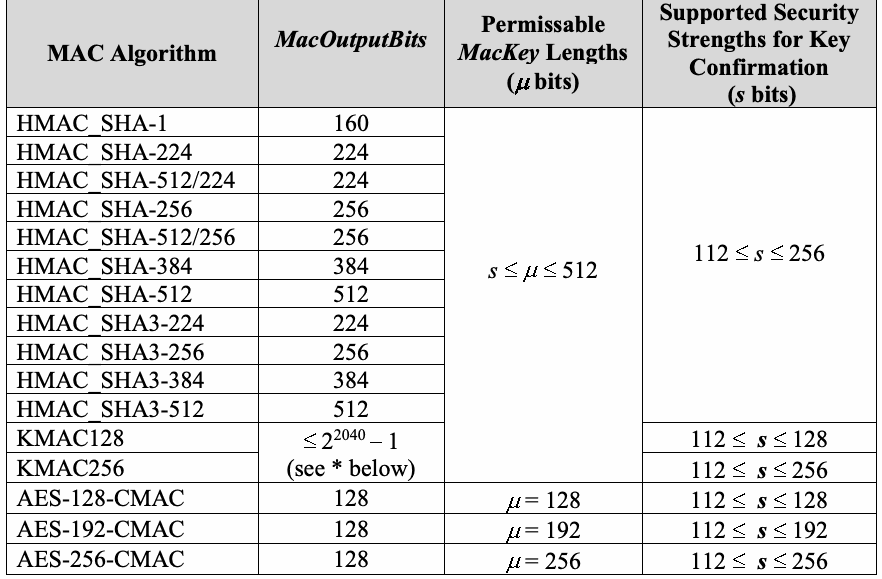
| MACアルゴリズム | MacOutputBits | 許容されるMacKey長（μビット） | 鍵確認でサポートされる |
| セキュリティ | |||
| 強度 | |||
| (sビット) | |||
| HMAC_SHA-1 | 160 | s ≤ μ ≤ 512 | 112 ≤ s ≤ 256 |
| HMAC_SHA-224 | 224 | ||
| HMAC_SHA-512/224 | 224 | ||
| HMAC_SHA-256 | 256 | ||
| HMAC_SHA-512/256 | 256 | ||
| HMAC_SHA-384 | 384 | ||
| HMAC_SHA-512 | 512 | ||
| HMAC_SHA3-224 | 224 | ||
| HMAC_SHA3-256 | 256 | ||
| HMAC_SHA3-384 | 384 | ||
| HMAC_SHA3-512 | 512 | ||
| KMAC128 | ≤ 2^2040 − 1（下記*を参照） | 112 ≤ s ≤ 128 | |
| KMAC256 | 112 ≤ s ≤ 256 | ||
| AES-128-CMAC | 128 | μ = 128 | 112 ≤ s ≤ 128 |
| AES-192-CMAC | 128 | μ = 192 | 112 ≤ s ≤ 192 |
| AES-256-CMAC | 128 | μ = 256 | 112 ≤ s ≤ 256 |
原本PDFの抜粋画像
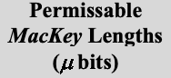
原本PDFの抜粋画像
* Although KMAC128 and KMAC256 can accommodate values as large as 22040 − 1
* KMAC128およびKMAC256はMacOutputBitsとして最大2^2040 − 1の値を扱えるが、
未レビュー訳for MacOutputBits, practical considerations dictate that the lengths of
実用上の考慮から、
未レビュー訳transmitted MAC tags be limited to sizes that are more realistic and commensurate
送信するMACタグの長さは、
未レビュー訳with the actual performance/security requirements of the relying applications.
依拠するアプリケーションの実際の性能／セキュリティ要件に見合う現実的な大きさに制限する。
未レビュー訳The MAC algorithm used to compute a key-confirmation MAC tag in compliance with this Recommendation shall be selected from among the approved MAC algorithms capable of supporting a security strength s that is at least as large as the targeted security strength of the key-establishment scheme (as indicated in Table 5 above). Note that when an HMAC or KMAC algorithm is used for key confirmation as specified in this Recommendation, MacKey lengths can be no greater than 512 bits (an upper bound that is at least twice the maximum supported security strength). This upper bound is smaller than any of the upper bounds imposed in the HMAC or KMAC algorithm specifications, but is sufficient for this application. In the case of HMAC, the 512-bit upper bound has the advantage of being less than the input block length of whatever hash function is used in the algorithm’s implementation. If MacKey were allowed to be longer than the input block length, it would be hashed down to a string of length MacOutputBits during the HMAC computation (see step 2 in Table 1 of FIPS 198); allowing MacKey to be longer than the input block length would not be an efficient use of keying material. The length of the MAC tag for key confirmation also needs to be selected. Note that in many cases, the length of the MAC tag (MacTagBits) has been selected by the protocol in which the key-establishment is conducted. MacTagBits shall be at least 64 bits, and its maximum length shall be no more than the MacOutputBits for the MAC algorithm selected for key
本勧告に準拠して鍵確認MACタグを計算するMACアルゴリズムは、承認済みMACアルゴリズムの中から選択しなければならない。そのアルゴリズムは、表5に示す鍵確立方式の目標セキュリティ強度以上のセキュリティ強度sをサポートできるものでなければならない。なお、本勧告に規定するとおりHMACまたはKMACを鍵確認に用いる場合、MacKey長は512ビット以下でなければならない（この上限は、サポートされる最大セキュリティ強度の少なくとも2倍である）。この上限はHMACまたはKMACの仕様が課す上限より小さいが、本用途には十分である。HMACでは、512ビット上限により、アルゴリズム実装で使うハッシュ関数の入力ブロック長未満にできる利点がある。MacKeyが入力ブロック長より長い場合、HMAC計算時に入力ブロック長へハッシュされる（FIPS 198の表1のステップ2を参照）。入力ブロック長を超えるMacKeyを許すことは、鍵素材の効率的な利用ではない。鍵確認用MACタグの長さも選択する必要がある。多くの場合、MACタグ長（MacTagBits）は鍵確立を行うプロトコルによって選ばれている。MacTagBitsは64ビット以上でなければならず、その最大長は選択したMACアルゴリズムのMacOutputBitsを超えてはならない。
未レビュー訳confirmation. The 64-bit minimum for the MAC tag length assumes that the protocol imposes
鍵確認用MACタグの64ビット最小長は、プロトコルが
未レビュー訳a limit on the number of retries for key confirmation.
鍵確認の再試行回数に上限を設けることを前提とする。
未レビュー訳6. Key Agreement Schemes
6. 鍵合意方式
未レビュー訳This Recommendation provides three categories of key-agreement schemes (see Table 6). The classification of the categories is based on the number of ephemeral keys used by the two parties to the key-agreement process, parties U and V. In category C(ie), parties U and V have a total of i ephemeral key pairs. The first category, C(2e), consists of schemes requiring the generation of ephemeral key pairs by both parties; a C(2e) scheme is suitable for an interactive key-establishment protocol. The second category, C(1e), consists of schemes requiring the generation of an ephemeral key pair by only one party; a C(1e) scheme is suitable for a store-and-forward scenario, but may also be used in an interactive key-establishment protocol. The third category, C(0e), consists of schemes that do not use ephemeral keys.
本勧告は、3種類の鍵合意スキームのカテゴリを示す（表6を参照）。カテゴリ分類は、鍵合意プロセスにおける2つの当事者UおよびVが使用するエフェメラル鍵の数に基づく。カテゴリC(ie)では、当事者UおよびVが合計i個のエフェメラル鍵ペアを持つ。第1カテゴリC(2e)は、両当事者によるエフェメラル鍵ペアの生成を必要とするスキームから成り、C(2e)スキームは対話型鍵確立プロトコルに適している。第2カテゴリC(1e)は、一方の当事者のみによるエフェメラル鍵ペアの生成を必要とするスキームから成り、C(1e)スキームはストア・アンド・フォワードのシナリオに適するが、対話型鍵確立プロトコルでも使用してよい。第3カテゴリC(0e)は、エフェメラル鍵を使用しないスキームから成る。
未レビュー訳Key confirmation may be added to many of these schemes to provide assurance that the
これらの方式の多くには、
未レビュー訳participants share the same keying material; see Section 5.9 for details on key confirmation.
参加者が同じ鍵素材を共有しているとの保証を与えるため、鍵確認を追加してよい（詳細は5.9節を参照）。
未レビュー訳Each party should have such assurance. Although other methods are often used to provide
各当事者はそのような保証を得ることが望ましい。保証の提供には他の方法がしばしば用いられるが、
未レビュー訳this assurance, this Recommendation makes no statement as to the adequacy of these other
本勧告は、そうした他の
未レビュー訳methods.
方法の妥当性について述べない。
未レビュー訳Table 6: Key-agreement scheme categories.
表6：鍵合意スキームのカテゴリ。
| Category | Comment |
| C(2e): Two ephemeral key pairs | Each party generates an ephemeral key pair. |
| C(1e): One ephemeral key pair | Only party U generates an ephemeral key pair. |
| C(0e): Zero ephemeral key pairs | No ephemeral keys are used. |
原本PDFの抜粋画像

| カテゴリ | 説明 |
| C(2e)：2つの一時鍵ペア | 各当事者が一時鍵ペアを生成する。 |
| C(1e)：1つの一時鍵ペア | 当事者Uだけが一時鍵ペアを生成する。 |
| C(0e)：一時鍵ペアなし | 一時鍵を使用しない。 |
Each category is comprised of one or more subcategories that are classified by the use of
各カテゴリは、次の用途によって分類される1つ以上のサブカテゴリから構成される。
未レビュー訳static keys by the parties (see Table 7). In subcategory C(ie, js), parties U and V have a total
当事者による静的鍵の使用（表7参照）。サブカテゴリ C(iₑ, jₛ) では、当事者 U および V は合計
未レビュー訳of i ephemeral key pairs and j static key pairs. The suitability for interactive or store-and-
i 個のエフェメラル鍵ペアと j 個の静的鍵ペアを持つ。各サブカテゴリが対話型プロトコルまたはストア・アンド・
未レビュー訳forward protocols of each subcategory is discussed in Section 7.
フォワード型プロトコルに適するかどうかは、Section 7で説明する。
未レビュー訳Table 7: Key-agreement scheme subcategories.
表7：鍵合意スキームのサブカテゴリ。
| Category | Subcategory |
| C(2e): Two ephemeral key pairs | C(2e, 2s): Each party generates an ephemeral key pair and uses a static key pair. |
| C(2e, 0s): Each party generates an ephemeral key pair; no static key pairs are used. | |
| C(1e): One ephemeral key pair | C(1e, 2s): Party U generates an ephemeral key pair and uses a static key pair; party V uses only a static key pair. |
原本PDFの抜粋画像

| カテゴリ | サブカテゴリ |
| C(2e)：2つのエフェメラル鍵ペア | C(2e, 2s)：各当事者がエフェメラル鍵ペアを生成し、静的鍵ペアを使用する。 |
| C(2e, 0s)：各当事者がエフェメラル鍵ペアを生成し、静的鍵ペアは使用しない。 | |
| C(1e)：1つのエフェメラル鍵ペア | C(1e, 2s)：当事者Uはエフェメラル鍵ペアを生成し静的鍵ペアを使用する。当事者Vは静的鍵ペアのみを使用する。 |
| Category | Subcategory |
| C(1e, 1s): Party U generates an ephemeral key pair, but uses no static key pair; party V uses only a static key pair. | |
| C(0e): Zero ephemeral key pairs | C(0e, 2s): Each party uses only a static key pair. |
原本PDFの抜粋画像

| カテゴリ | サブカテゴリ |
| C(1e, 1s)：当事者Uはエフェメラル鍵ペアを生成するが静的鍵ペアは使用せず、当事者Vは静的鍵ペアのみを使用する。 | |
| C(0e)：エフェメラル鍵ペアなし | C(0e, 2s)：各当事者は静的鍵ペアのみを使用する。 |
The schemes may be further classified by whether they use finite field cryptography (FFC) or elliptic curve cryptography (ECC). A scheme may use either Diffie-Hellman or MQV primitives (see Section 5.7). Thus, for example, notation C(2e, 2s, FFC DH) completely classifies the dhHybrid1 scheme of Section 6.1.1.1 as a scheme with two ephemeral keys and
スキームは、有限体暗号（FFC）または楕円曲線暗号（ECC）のどちらを使用するかによって、さらに分類できる。スキームはDiffie-HellmanまたはMQVプリミティブを使用する（Section 5.7参照）。したがって、例えば C(2e, 2s, FFC DH) という表記により、Section 6.1.1.1のdhHybrid1スキームが、エフェメラル鍵を2つ、静的鍵を2つ使用し、
未レビュー訳two static keys that uses finite field cryptography and a Diffie-Hellman primitive (see Table
有限体暗号とDiffie-Hellmanプリミティブを使用するスキームとして完全に分類される（表8参照）。これらのスキーム名は
未レビュー訳8). The names of these schemes are taken from ANS X9.42 and ANS X9.63.
ANS X9.42およびANS X9.63に由来する。
未レビュー訳Table 8: Key-agreement schemes.
表8：鍵合意スキーム。
| Category | Subcategory | Primitive | Scheme | Notation |
| C(2e) | C(2e, 2s) | FFC DH | dhHybrid1 | C(2e, 2s, FFC DH) |
| C(2e) | C(2e, 2s) | ECC CDH | (Cofactor) Full Unified Model | C(2e, 2s, ECC CDH) |
| C(2e) | C(2e, 2s) | FFC MQV | MQV2 | C(2e, 2s, FFC MQV) |
| C(2e) | C(2e, 2s) | ECC MQV | Full MQV | C(2e, 2s, ECC MQV) |
| C(2e) | C(2e, 0s) | FFC DH | dhEphem | C(2e, 0s, FFC DH) |
| C(2e) | C(2e, 0s) | ECC CDH | (Cofactor) Ephemeral Unified Model | C(2e, 0s, ECC CDH) |
| C(1e) | C(1e, 2s) | FFC DH | dhHybridOneFlow | C(1e, 2s, FFC DH) |
| C(1e) | C(1e, 2s) | ECC CDH | (Cofactor) One-Pass Unified Model | C(1e, 2s, ECC CDH) |
| C(1e) | C(1e, 2s) | FFC MQV | MQV1 | C(1e, 2s, FFC MQV) |
| C(1e) | C(1e, 2s) | ECC MQV | One-Pass MQV | C(1e, 2s, ECC MQV) |
| C(1e) | C(1e, 1s) | FFC DH | dhOneFlow | C(1e, 1s, FFC DH) |
原本PDFの抜粋画像

| カテゴリ | サブカテゴリ | プリミティブ | スキーム | 表記 |
| C(2e) | C(2e, 2s) | FFC DH | dhHybrid1 | C(2e, 2s, FFC DH) |
| C(2e) | C(2e, 2s) | ECC CDH | （コファクタ）Full Unified Model | C(2e, 2s, ECC CDH) |
| C(2e) | C(2e, 2s) | FFC MQV | MQV2 | C(2e, 2s, FFC MQV) |
| C(2e) | C(2e, 2s) | ECC MQV | Full MQV | C(2e, 2s, ECC MQV) |
| C(2e) | C(2e, 0s) | FFC DH | dhEphem | C(2e, 0s, FFC DH) |
| C(2e) | C(2e, 0s) | ECC CDH | （コファクタ）Ephemeral Unified Model | C(2e, 0s, ECC CDH) |
| C(1e) | C(1e, 2s) | FFC DH | dhHybridOneFlow | C(1e, 2s, FFC DH) |
| C(1e) | C(1e, 2s) | ECC CDH | （コファクタ）One-Pass Unified Model | C(1e, 2s, ECC CDH) |
| C(1e) | C(1e, 2s) | FFC MQV | MQV1 | C(1e, 2s, FFC MQV) |
| C(1e) | C(1e, 2s) | ECC MQV | One-Pass MQV | C(1e, 2s, ECC MQV) |
| C(1e) | C(1e, 1s) | FFC DH | dhOneFlow | C(1e, 1s, FFC DH) |
| Category | Subcategory | Primitive | Scheme | Notation |
| C(1e) | C(1e, 1s) | ECC CDH | (Cofactor) One-Pass Diffie-Hellman | C(1e, 1s, ECC CDH) |
| C(0e) | C(0e, 2s) | FFC DH | dhStatic | C(0e, 2s, FFC DH) |
| C(0e) | C(0e, 2s) | ECC CDH | (Cofactor) Static Unified Model | C(0e, 2s, ECC CDH) |
原本PDFの抜粋画像

| カテゴリ | サブカテゴリ | プリミティブ | スキーム | 表記 |
| C(1e) | C(1e, 1s) | ECC CDH | （コファクタ）One-Pass Diffie-Hellman | C(1e, 1s, ECC CDH) |
| C(0e) | C(0e, 2s) | FFC DH | dhStatic | C(0e, 2s, FFC DH) |
| C(0e) | C(0e, 2s) | ECC CDH | （コファクタ）Static Unified Model | C(0e, 2s, ECC CDH) |
Each party in a key-agreement process shall use the same set of valid domain parameters. These parameters shall be established, and assurance of their validity shall be obtained prior
鍵共有プロセスにおける各当事者は、同一の有効なドメインパラメータの集合を使用しなければならない。これらのパラメータは確立され、鍵ペアの生成および鍵共有プロセスの開始に先立って、その有効性の保証を得なければならない。
未レビュー訳to the generation of key pairs and the initiation of the key-agreement process. See Section
ドメインパラメータの議論についてはSection
未レビュー訳5.5 for a discussion of domain parameters.
5.5を参照。
未レビュー訳If party U uses a static key pair in a key-agreement transaction, then party U shall have an
当事者Uが鍵共有トランザクションで静的鍵ペアを使用する場合、当事者Uは
未レビュー訳identifier, ID
識別子 ID
未レビュー訳, that has an association with the static key pair that is known (or discoverable) U
を持たなければならず、この識別子は静的鍵ペアと関連付けられ、その関連付けは当事者Vに知られている（または発見可能であり）、
未レビュー訳and trusted by party V (i.e., there shall be a trusted association between ID and party U’s
当事者Vから信頼されているものとする（すなわち、IDと当事者Uの
未レビュー訳U
未レビュー訳static public key). If party U does not contribute a static public key as part of a key-agreement
静的公開鍵との間に信頼できる関連付けがなければならない）。当事者Uが鍵共有トランザクションの一部として静的公開鍵を提供しない場合、
未レビュー訳transaction, then ID
識別子 ID
未レビュー訳(if required for that transaction) is a non-null identifier selected in
（そのトランザクションで必要な場合）は、
未レビュー訳U
未レビュー訳accordance with the relying application/protocol. Similar rules apply to Party V’s identifier,
依拠するアプリケーション／プロトコルに従って選択された非NULLの識別子である。同様の規則が当事者Vの識別子
未レビュー訳ID .
ID
未レビュー訳に適用される。
未レビュー訳A general flow diagram is provided for each subcategory of schemes. The dotted-line arrows
各スキームのサブカテゴリについて、一般的なフロー図を示す。点線の矢印は静的公開鍵の配布を
未レビュー訳represent the distribution of static public keys that may be distributed by the parties
表し、当事者自身または認証局（CA）などの第三者が配布する場合がある。実線の矢印は、鍵
未レビュー訳themselves or by a third party, such as a Certification Authority (CA). The solid-line arrows
共有または鍵確認プロセス中に発生するエフェメラル公開鍵またはノンスの配布を
未レビュー訳represent the distribution of ephemeral public keys or nonces that occur during the key-
表す。この勧告のフロー図では、必要となる各種の検証チェックを
未レビュー訳agreement or key-confirmation process. Note that the flow diagrams in this Recommendation
明示的に示していないことに注意する。この勧告のフロー図および
未レビュー訳omit explicit mention of various validation checks that are required. The flow diagrams and
説明は、鍵確立プロセスが正常に完了することを前提としている。
未レビュー訳descriptions in this Recommendation assume a successful completion of the key-
エラー条件はプロセスの本文で扱う。
未レビュー訳establishment process. The error conditions are handled in the process text.
鍵確立プロセス。エラー条件はプロセス本文で扱う。
未レビュー訳For each scheme, there are conditions that must be satisfied to enable proper use of that
各スキームを適切に使用するには、満たすべき条件がある。
未レビュー訳scheme. These conditions are listed as the assumptions. Failure to meet all such conditions
これらの条件は前提条件として列挙される。すべての条件を満たさないと、
未レビュー訳could yield undesirable results, such as the inability to communicate or the loss of security.
通信不能やセキュリティの喪失など、望ましくない結果が生じる可能性がある。
未レビュー訳As part of the proper implementation of this Recommendation, system users and/or agents
この勧告を適切に実装する一環として、システム利用者および／またはその代理として行動することを
未レビュー訳trusted to act on their behalf (including application developers, system installers, and system
信頼されたエージェント（アプリケーション開発者、システム設置担当者、システム
未レビュー訳administrators) are responsible for ensuring that all assumptions are satisfied at the time a
管理者を含む）は、鍵確立トランザクションの実行時にすべての前提条件が
未レビュー訳key-establishment transaction takes place.
満たされていることを確認する責任を負う。
未レビュー訳6.1 Schemes Using Two Ephemeral Key Pairs, C(2e)
6.1 2つのエフェメラル鍵ペアを使用するスキーム C(2e)
In this category, each party generates an ephemeral key pair and sends the ephemeral public key to the other party. This category consists of two subcategories that are determined by the static keys used by the parties. In the first subcategory, each party contributes both static and ephemeral keys to the key-agreement computations (see Section 6.1.1), while in the second subcategory, each party contributes only ephemeral keys (see Section 6.1.2).
このカテゴリでは、各当事者がエフェメラル鍵ペアを生成し、そのエフェメラル公開鍵を相手方に送信する。このカテゴリは、当事者が使用する静的鍵によって決まる2つのサブカテゴリから成る。最初のサブカテゴリでは、各当事者が静的鍵とエフェメラル鍵の両方を鍵共有計算に提供する（Section 6.1.1参照）。2番目では、各当事者がエフェメラル鍵のみを提供する（Section 6.1.2参照）。
未レビュー訳6.1.1 C(2e, 2s) Schemes
6.1.1 C(2e, 2s)スキーム
未レビュー訳Figure_3 depicts a typical flow for a C(2e, 2s) scheme. For these schemes, each party (U and V) contributes a static key pair and generates an ephemeral key pair during the key-agreement process. All key pairs shall be generated using the same domain parameters. Party U and party V obtain each other’s static public keys, which have been generated prior to the key-establishment process. Both parties generate ephemeral private/public key pairs and exchange the ephemeral public keys. Using the static and ephemeral keys, both parties generate a shared secret. The secret keying material is derived from the shared secret.
図3は、C(2e, 2s)スキームの典型的なフローを示す。これらのスキームでは、各当事者（UおよびV）が静的鍵ペアを提供し、鍵共有プロセス中にエフェメラル鍵ペアを生成する。すべての鍵ペアは同じドメインパラメータを用いて生成しなければならない。当事者UとVは、鍵確立プロセスより前に生成された互いの静的公開鍵を取得する。両当事者はエフェメラル秘密鍵／公開鍵ペアを生成し、エフェメラル公開鍵を交換する。静的鍵とエフェメラル鍵を用いて、両当事者は共有秘密を生成する。共有秘密から秘密鍵素材を導出する。
未レビュー訳U
未レビュー訳V
未レビュー訳U’s Static Public Key
Uの静的公開鍵
未レビュー訳Obtain static public
静的公開鍵を取得
未レビュー訳図3：C(2e, 2s)方式の鍵交換フロー
V’s Static Public Key
Vの静的公開鍵
未レビュー訳keys
鍵
未レビュー訳U’s Ephemeral Public Key
Uのエフェメラル公開鍵
未レビュー訳Exchange
交換
未レビュー訳ephemeral
エフェメラル
未レビュー訳V’s Ephemeral Public Key
Vのエフェメラル公開鍵
未レビュー訳public keys
公開鍵
未レビュー訳Figure 3: C(2e, 2s) schemes: each party contributes a static and an ephemeral key
図3：C(2e, 2s)スキーム：各当事者が静的鍵ペアとエフェメラル鍵
未レビュー訳pair
ペアを提供する
未レビュー訳Assumptions: In order to execute a C(2e, 2s) key-establishment scheme in compliance with
前提条件：この勧告に準拠してC(2e, 2s)鍵確立スキームを実行するため、
未レビュー訳this Recommendation, the following assumptions shall be true.
以下の前提条件が満たされなければならない。
未レビュー訳1.Each party has an authentic copy of the same set of domain parameters, D, that are
1.各当事者は、使用が承認された同一のドメインパラメータ集合Dの真正な複製を持つ
未レビュー訳approved for use (see Section 5.5.1). For FFC schemes, D = (p, q, g{, SEED,
（Section 5.5.1参照）。FFCスキームでは、D = (p, q, g{, SEED,
未レビュー訳counter}); for ECC schemes, D = (q, FR, a, b{, SEED}, G, n, h). Furthermore, each
counter})、ECCスキームでは、D = (q, FR, a, b{, SEED}, G, n, h) である。さらに各
未レビュー訳party has obtained assurance of the validity of these domain parameters as specified
当事者は、これらのドメインパラメータの有効性について、指定された
未レビュー訳in Section 5.5.2.
Section 5.5.2の保証を得ている。
未レビュー訳2.Each party has been designated as the owner of a static key pair that was generated
2.各当事者は、ドメインパラメータ集合Dを用いてSection 5.6.1に従い生成された静的鍵ペアの所有者として指定されている。
未レビュー訳as specified in Section 5.6.1 using the set of domain parameters, D. For FFC schemes, the static key pair is (x, y); for ECC schemes, the static key pair is (d , Q ). Each party
FFCスキームでは静的鍵ペアは (x, y)、ECCスキームでは (dₛ, Qₛ) である。各当事者
未レビュー訳s s
ₛ, Qₛ
未レビュー訳has obtained assurance of the validity of its own static public key as specified in Section 5.6.2.1.3 and has obtained assurance of its possession of the correct value for its own private key as specified in Section 5.6.2.1.5.
はSection 5.6.2.1.3に従って自身の静的公開鍵の有効性保証を取得し、Section 5.6.2.1.5に従って自身の秘密鍵の正しい値を保有している保証を得ている。
未レビュー訳3.The parties have agreed upon an approved key-derivation method, as well as an approved algorithm to be used with that method (e.g., a hash function) and other associated parameters to be used for key derivation (see Section 5.8).
3.当事者は、承認済みの鍵導出方式、およびその方式で使用する承認済みアルゴリズム（例：ハッシュ関数）と鍵導出に用いるその他の関連パラメータについて合意している（Section 5.8参照）。
未レビュー訳4.If key confirmation is used, the parties have also agreed upon an approved MAC and associated parameters, including the lengths of MacKey and MacTag, as specified in Section 5.9.3).
4.鍵確認を使用する場合、当事者はSection 5.9.3に規定されたとおり、MacKeyおよびMacTagの長さを含め、承認済みMACと関連パラメータについても合意している。
5.Prior to or during the key-agreement process, each party receives the other party’s static public key in a trusted manner (e.g., from a certificate signed by a trusted CA or directly from the other party, who is trusted by the recipient). Each party has obtained assurance of the validity of the other party’s static public key as specified in Section 5.6.2.2.
5.鍵共有プロセスの前または実行中に、各当事者は信頼できる方法（例：信頼されたCAが署名した証明書、または受信者が信頼する相手方から直接受け取る方法）で相手方の静的公開鍵を受信する。各当事者はSection 5.6.2.2に従って相手方の静的公開鍵の有効性保証を得ている。
未レビュー訳6.The recipient of a static public key has obtained assurance that its (claimed) owner is (or was) in possession of the corresponding static private key, as specified in Section 5.6.2.2.3.
6.静的公開鍵の受信者は、（主張された）所有者が対応する静的秘密鍵を保有している（または保有していた）という保証を、Section 5.6.2.2.3に従って得ている。
7.When an identifier is used to label a party during the key-agreement process, that
7.鍵共有プロセス中に当事者を識別するため識別子を使用する場合、その
未レビュー訳identifier has a trusted association to that party’s static public key. (In other words,
識別子は当該当事者の静的公開鍵と信頼できる形で関連付けられている（言い換えると、
未レビュー訳whenever both the identifier and static public key of one participant are employed in
鍵共有プロセスで参加者の識別子と静的公開鍵の両方が用いられるときは常に、
未レビュー訳the key-agreement process, they are associated in a manner that is trusted by the other
それらは他方の参加者が信頼する方法で関連付けられている）。識別子を用いて当事者を識別する
未レビュー訳participant.) When an identifier is used to label a party during the key-agreement
場合、鍵共有プロセス中に、
未レビュー訳process, both parties are aware of the identifier employed for that purpose.
両当事者はその目的で使用される識別子を認識している。
未レビュー訳6.1.1.1 dhHybrid1, C(2e, 2s, FFC DH) Scheme
6.1.1.1 dhHybrid1、C(2e, 2s, FFC DH)スキーム
This section describes the dhHybrid1 scheme. Assurance of secure key establishment using
この節ではdhHybrid1スキームを説明する。このスキームを用いて安全な鍵確立を
未レビュー訳this scheme can only be obtained when the assumptions in Section 6.1.1 are true. In
保証できるのは、Section 6.1.1の前提条件が満たされる場合に限られる。特に、当事者Uは
未レビュー訳particular, it is assumed that party U has obtained the static public key y
当事者Vの静的公開鍵 y
未レビュー訳of party V, and
を取得しており、
未レビュー訳V
未レビュー訳party V has obtained the static public key yU of party U.
当事者Vは当事者Uの静的公開鍵 yU を取得していると仮定する。
未レビュー訳With the exception of key derivation, the dhHybrid1 scheme is “symmetric” in the actions
鍵導出を除き、dhHybrid1スキームにおける当事者UとVの動作は「対称」である。
未レビュー訳of parties U and V. Only the actions performed by party U are specified here; a specification
ここでは当事者Uの動作のみを規定する。当事者Vの動作は、以下の動作にある文字
未レビュー訳of the actions performed by party V may be obtained by systematically replacing the letter
「U」を「V」に（およびその逆に）体系的に置き換えることで
未レビュー訳“U” by “V” (and vice versa) in the actions listed below. Note, however, that parties U and V
得られる。ただし、当事者UとVは鍵導出方式に入力するビット列の順序を
未レビュー訳must use identical orderings of the bit strings that are input to the key-derivation method.
同一にしなければならない。
未レビュー訳Party U shall execute the following actions to a) establish a shared secret value Z with party
当事者Uは、a) 当事者Vとの共有秘密値Zを確立し、b) Zから秘密鍵素材を
未レビュー訳V, and b) derive secret keying material from Z.
導出するため、以下の動作を実行しなければならない。
未レビュー訳Actions: Party U generates a shared secret and derives secret keying material as follows:
動作：当事者Uは、次のように共有秘密を生成し、秘密鍵素材を導出する。
未レビュー訳1.Generate an ephemeral key pair (r t ) from the domain parameters D as specified in
1.ドメインパラメータDからSection 5.6.1.1に従ってエフェメラル鍵ペア (r
未レビュー訳U, U
U, tU)
未レビュー訳Section 5.6.1.1. Send the public key t to party V. Receive an ephemeral public key
を生成する。公開鍵 tU を当事者Vに送信する。
未レビュー訳tU
未レビュー訳tV (purportedly) from party V. If tV is not received, destroy the ephemeral private key
当事者Vからエフェメラル公開鍵 tV（とされるもの）を受信する。tVを受信しなかった場合、エフェメラル秘密鍵
未レビュー訳r , then output an error indicator, and exit this process without performing the U remaining actions.
rUを破棄し、エラー標識を出力して、残りの動作を実行せずにこのプロセスを終了する。
未レビュー訳2.Verify that t is a valid ephemeral public key for the parameters D as specified in V Section 5.6.2.3. If assurance of public key validity cannot be obtained, destroy the ephemeral private key r ; then, output an error indicator, and exit this process without U performing the remaining actions.
2.Section 5.6.2.3に従って、tVがパラメータDに対する有効なエフェメラル公開鍵であることを検証する。公開鍵の有効性保証を得られない場合、エフェメラル秘密鍵rUを破棄し、エラー標識を出力して、残りの動作を実行せずにこのプロセスを終了する。
未レビュー訳3.Use the FFC DH primitive in Section 5.7.1.1 to derive a shared secret Z from the set s of domain parameters D, party U’s static private key x , and party V’s static public U
3.Section 5.7.1.1のFFC DHプリミティブを用い、ドメインパラメータ集合D、当事者Uの静的秘密鍵xU、および当事者Vの静的公開鍵yVから共有秘密Zₛを導出する。
未レビュー訳key y . If the call to the FFC DH primitive outputs an error indicator, destroy the
FFC DHプリミティブの呼び出しがエラー標識を出力した場合、
未レビュー訳yVを用いた
未レビュー訳ephemeral private key r , and destroy the results of all intermediate calculations used
計算の試行において使用したすべての中間計算結果を破棄する。続いて、
未レビュー訳エフェメラル秘密鍵rUを破棄し、
未レビュー訳in the attempted computation of Z ; then output an error indicator, and exit this s process without performing the remaining actions.
エラー標識を出力して、残りの動作を実行せずにこのプロセスを終了する。
未レビュー訳4.Use the FFC DH primitive to derive a shared secret Z from the set of domain e parameters D, party U’s ephemeral private key r , and party V’s ephemeral public U key t If this call to the FFC DH primitive outputs an error indicator, destroy Z and V. s the ephemeral private key r , and destroy the results of all intermediate calculations U , used in the attempted computation of Z ; then, output an error indicator, and exit this e process without performing the remaining actions.
4.FFC DHプリミティブを用い、ドメインパラメータ集合D、当事者Uのエフェメラル秘密鍵rU、および当事者Vのエフェメラル公開鍵tVから共有秘密Zₑを導出する。この呼び出しがエラー標識を出力した場合、Zₛ、エフェメラル秘密鍵rU、およびZₑの計算の試行で使用したすべての中間計算結果を破棄し、エラー標識を出力して残りの動作を実行せずに終了する。
未レビュー訳5.Compute the shared secret Z = Z || Z . Destroy Z and Z .
5.共有秘密 Z = Zₑ || Zₛ を計算する。ZₑおよびZₛを破棄する。
未レビュー訳e s
Zₑ
未レビュー訳e s
Zₛ
未レビュー訳6.Use the agreed-upon key-derivation method to derive secret keying material with the
6.合意済みの鍵導出方式を用い、共有秘密値Zおよびその他の入力から指定された長さの秘密鍵素材を導出する
未レビュー訳specified length from the shared secret value Z and other input (see Section 5.8). If
（Section 5.8参照）。
未レビュー訳the key-derivation method outputs an error indicator, destroy all copies of Z and the
鍵導出方式がエラー標識を出力した場合、Zのすべての複製と
未レビュー訳ephemeral private key r , then output an error indicator, and exit this process without
エフェメラル秘密鍵rUを破棄し、エラー標識を出力して、残りの動作を実行せずに
未レビュー訳U
未レビュー訳performing the remaining actions.
このプロセスを終了する。
未レビュー訳7.Destroy r and all copies of the shared secret Z. U
7.rUおよび共有秘密Zのすべての複製を破棄する。
未レビュー訳8.Output the derived keying material.
8.導出した鍵素材を出力する。
未レビュー訳Output: The derived keying material or an error indicator.
出力：導出された鍵素材またはエラー標識。
未レビュー訳Note: Key confirmation can be incorporated into this scheme. See Section 6.1.1.5 for details.
注：このスキームには鍵確認を組み込むことができる。詳細はSection 6.1.1.5を参照。
未レビュー訳dhHybrid1 is summarized in Table 9.
dhHybrid1を表9に要約する。
未レビュー訳Table 9: dhHybrid1 key-agreement scheme summary
表9：dhHybrid1鍵共有スキームの要約
未レビュー訳| Party U | Party V | |
| Domain | D = (p, q, g{, SEED, counter}) | D = (p, q, g{, SEED, counter}) |
| parameters | ||
| Static Data | Static private key x U Static public key y U | Static private key x V Static public key y V |
| Ephemeral Data | Ephemeral private key r U Ephemeral public key t U | Ephemeral private key r V Ephemeral public key t V |
| Computation | 1. Compute Z by calling FFC s DH using x and y U V 2. Compute Z by calling FFC e DH using r and t U V 3. Compute Z = Z || Z e s | 1. Compute Z by calling FFC DH s using x and y V U 2. Compute Z by calling FFC DH e using r and t V U 3. Compute Z = Z || Z e s |
原本PDFの抜粋画像
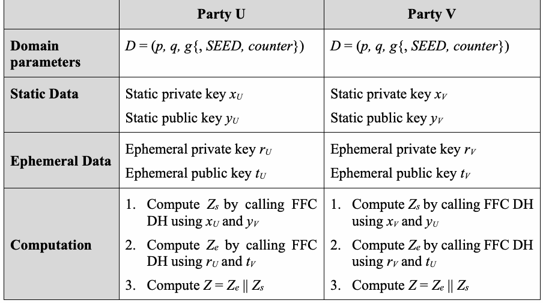
| 当事者U | 当事者V | |
| ドメイン | D = (p, q, g{, SEED, counter}) | D = (p, q, g{, SEED, counter}) |
| パラメータ | ||
| 静的データ | 静的秘密鍵 x U 静的公開鍵 y U | 静的秘密鍵 x V 静的公開鍵 y V |
| エフェメラルデータ | エフェメラル秘密鍵 r U エフェメラル公開鍵 t U | エフェメラル秘密鍵 r V エフェメラル公開鍵 t V |
| 計算 | 1. 計算 Z を呼び出して FFC s DH を用いて x and y U V 2. 計算 Z を呼び出して FFC e DH を用いて r and t U V 3. 計算 Z = Z || Z e s | 1. 計算 Z を呼び出して FFC DH s を用いて x and y V U 2. 計算 Z を呼び出して FFC DH e を用いて r and t V U 3. 計算 Z = Z || Z e s |
| Derive Secret Keying Material | 1. Compute DerivedKeyingMaterial 2. Destroy Z | 1. Compute DerivedKeyingMaterial 2. Destroy Z |
原本PDFの抜粋画像
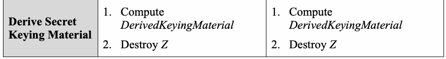
| 秘密鍵素材の導出 | 1. 計算 DerivedKeyingMaterial 2. 破棄 Z | 1. 計算 DerivedKeyingMaterial 2. 破棄 Z |
原本PDFの抜粋画像
6.1.1.2 (Cofactor) Full Unified Model, C(2e, 2s, ECC CDH) Scheme
6.1.1.2（コファクタ）Full Unified Model、C(2e, 2s, ECC CDH)スキーム
未レビュー訳This section describes the Full Unified Model scheme. Assurance of secure key establishment using this scheme can only be obtained when the assumptions in Section 6.1.1 are true. In particular, it is assumed that party U has obtained the static public key Q
この節ではFull Unified Modelスキームを説明する。このスキームを用いて安全な鍵確立を保証できるのは、Section 6.1.1の前提条件が満たされる場合に限られる。特に、当事者Uは静的公開鍵Q
未レビュー訳of s,V
ₛ,V
未レビュー訳party V, and party V has obtained the static public key Q of party U.
を取得しており、当事者Vは当事者Uの静的公開鍵Qₛ,Uを取得していると仮定する。
未レビュー訳s,U
ₛ,U
未レビュー訳With the exception of key derivation, the Full Unified Model scheme is “symmetric” in the
鍵導出を除き、Full Unified Modelスキームにおける当事者UとVの動作は「対称」である。
未レビュー訳actions of parties U and V. Only the actions performed by party U are specified here; a
ここでは当事者Uの動作のみを規定する。当事者Vの動作は、以下の動作にある文字
未レビュー訳specification of the actions performed by party V may be obtained by systematically
「U」を「V」に（およびその逆に）体系的に置き換えることで
未レビュー訳replacing the letter “U” by “V” (and vice versa) in the actions listed below. Note, however,
得られる。ただし、
未レビュー訳that parties U and V must use identical orderings of the bit strings that are input to the key-
当事者UとVは鍵導出方式へのビット列入力の順序を同一に
未レビュー訳derivation method.
しなければならない。
未レビュー訳Party U shall execute the following actions to a) establish a shared secret value Z with party
当事者Uは、a) 当事者Vとの共有秘密値Zを確立し、
未レビュー訳V, and b) derive secret keying material from Z.
b) Zから秘密鍵素材を導出するため、以下の動作を実行しなければならない。
未レビュー訳Actions: Party U generates a shared secret and derives secret keying material as follows:
動作：当事者Uは、次のように共有秘密を生成し、秘密鍵素材を導出する。
未レビュー訳1.Generate an ephemeral key pair (d
1.エフェメラル鍵ペア (d
未レビュー訳,Q
e,U
未レビュー訳) from the domain parameters D as specified
) をドメインパラメータ集合Dから生成する。
未レビュー訳e,U e,U
e,U
未レビュー訳in Section 5.6.1.2. Send the public key Q to party V. Receive an ephemeral public e,U
Section 5.6.1.2に従う。公開鍵Qₑ,Uを当事者Vに送信する。
未レビュー訳key Q
Qₑ,V
未レビュー訳(purportedly) from party V. If Q
Qₑ,V
未レビュー訳is not received, destroy the ephemeral
Qₑ,V
未レビュー訳e,V
ₑ,V
未レビュー訳e,V
ₑ,V
未レビュー訳private key d ; then output an error indicator, and exit this process without
秘密鍵 dₑ,U を破棄し、エラー標識を出力して、
未レビュー訳e,U
dₑ,U
未レビュー訳performing the remaining actions.
残りの動作を実行せずにこのプロセスを終了する。
未レビュー訳2.Verify that Q is a valid ephemeral public key for the parameters D as specified in e,V
2.Section 5.6.2.3に従って、Qₑ,VがパラメータDに対する有効なエフェメラル公開鍵であることを検証する。
未レビュー訳Section 5.6.2.3. If assurance of public key validity cannot be obtained, destroy the
公開鍵の有効性保証を得られない場合、
未レビュー訳ephemeral private key d
dₑ,U
未レビュー訳, then output an error indicator, and exit this process
を破棄し、エラー標識を出力して、このプロセスを終了する。
未レビュー訳e,U
dₑ,U
未レビュー訳without performing the remaining actions.
残りの動作を実行せずに。
未レビュー訳3.Use the ECC CDH primitive in Section 5.7.1.2 to derive a shared secret Z from the
3.Section 5.7.1.2のECC CDHプリミティブを用いて、次から共有秘密Zₛを導出する。
未レビュー訳Zₛ
未レビュー訳set of domain parameters D, party U’s static private key d , and party V’s static
ドメインパラメータ集合D、当事者Uの静的秘密鍵dₛ,U、および当事者Vの静的
未レビュー訳s,U
dₛ,U
未レビュー訳public key Q . If the call to the ECC CDH primitive outputs an error indicator,
公開鍵Qₛ,V。ECC CDHプリミティブの呼び出しがエラー標識を出力した場合、
未レビュー訳s,V
Qₛ,V
未レビュー訳destroy the ephemeral private key d
エフェメラル秘密鍵dₑ,Uを
未レビュー訳, and destroy the results of all intermediate e,U
dₑ,U
未レビュー訳calculations used in the attempted computation of Z ; then output an error indicator,
Zₛの計算試行に使用したすべての中間計算結果も破棄する。続いてエラー標識を出力し、
未レビュー訳Zₛ
未レビュー訳and exit this process without performing the remaining actions.
残りの動作を実行せずにこのプロセスを終了する。
未レビュー訳4.Use the ECC CDH primitive to derive a shared secret Z from the set of domain e parameters D, party U’s ephemeral private key d , and party V’s ephemeral public e,U key Q . If this call to the ECC CDH primitive outputs an error indicator, destroy Z s e,V and the ephemeral private key d , and destroy the results of all intermediate e,U calculations used in the attempted computation of Z ; then output an error indicator, e and exit this process without performing the remaining actions.
4.ECC CDHプリミティブを用いて、ドメインパラメータ集合D、当事者Uのエフェメラル秘密鍵dₑ,U、および当事者Vのエフェメラル公開鍵Qₑ,Vから共有秘密Zₑを導出する。この呼び出しがエラー標識を出力した場合、Zₛ、エフェメラル秘密鍵dₑ,U、およびZₑの計算試行に使用したすべての中間計算結果を破棄し、エラー標識を出力して残りの動作を実行せずに終了する。
未レビュー訳5.Compute the shared secret Z = Z || Z . Destroy Z and Z . e s e s
5.共有秘密 Z = Zₑ || Zₛ を計算する。ZₑおよびZₛを破棄する。
未レビュー訳6.Use the agreed-upon key-derivation method to derive secret keying material with the specified length from the shared secret value Z and other input (see Section 5.8). If the key-derivation method outputs an error indicator, destroy all copies of Z and the ephemeral private key d ; then output an error indicator, and exit this process e,U without performing the remaining actions.
6.合意済みの鍵導出方式を用い、共有秘密値Zおよびその他の入力から指定された長さの秘密鍵素材を導出する（Section 5.8参照）。鍵導出方式がエラー標識を出力した場合、Zのすべての複製とエフェメラル秘密鍵dₑ,Uを破棄し、エラー標識を出力して残りの動作を実行せずにこのプロセスを終了する。
未レビュー訳7.Destroy d and all copies of the shared secret Z. e,U
7.dₑ,Uおよび共有秘密Zのすべての複製を破棄する。
未レビュー訳8.Output the derived keying material.
8.導出した鍵素材を出力する。
Output: The derived keying material or an error indicator. Note: Key confirmation can be incorporated into this scheme. See Section 6.1.1.5 for details. The Full Unified Model is summarized in Table 10.
出力：導出された鍵素材またはエラー標識。注：このスキームには鍵確認を組み込むことができる。詳細はSection 6.1.1.5を参照。Full Unified Modelを表10に要約する。
未レビュー訳Table 10: Full unified model key-agreement scheme summary
表10：Full Unified Model鍵共有スキームの要約
未レビュー訳| Party U | Party V | |
| Domain | D = (q, FR, a, b{, SEED}, G, n, h) | D = (q, FR, a, b{, SEED}, G, n, h) |
| parameters | ||
| Static data | Static private key d s,U Static public key Q s,U | Static private key d s,V Static public key Q s,V |
| Ephemeral data | Ephemeral private key d e,U Ephemeral public key Q e,U | Ephemeral private key d e,V Ephemeral public key Q e,V |
| Computation | 1. Compute Z by calling ECC s CDH using d and Q s,U s,V 2. Compute Z by calling ECC e CDH using d and Q e,U e,V 3. Compute Z = Z || Z e s | 1. Compute Z by calling ECC s CDH using d and Q s,V s,U 2. Compute Z by calling ECC e CDH using d and Q e,V e,U 3. Compute Z = Z || Z e s |
| Derive secret keying material | 1. Compute DerivedKeyingMaterial 2. Destroy Z | 1. Compute DerivedKeyingMaterial 2. Destroy Z |
原本PDFの抜粋画像
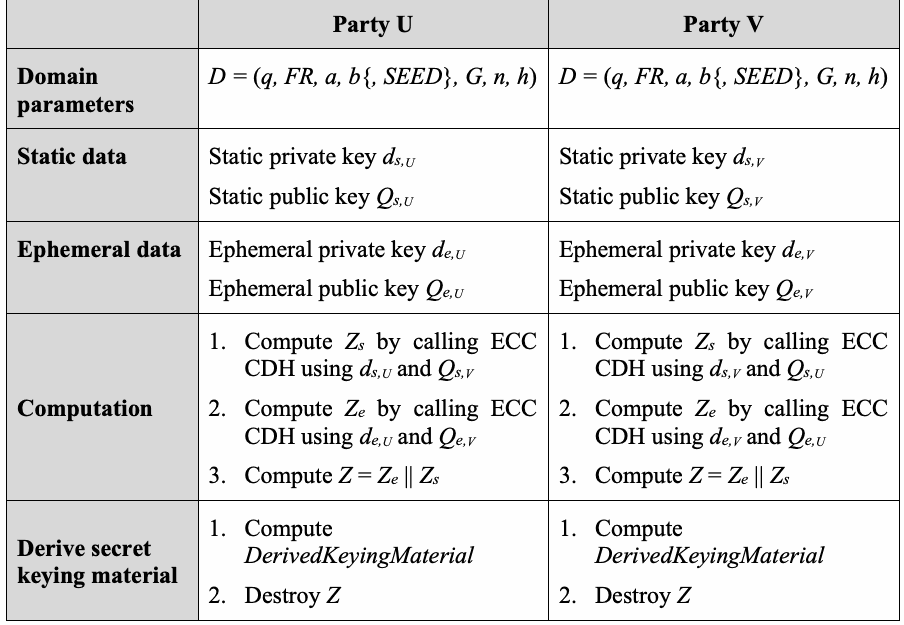
| 当事者U | 当事者V | |
| ドメイン | D = (q, FR, a, b{, SEED}, G, n, h) | D = (q, FR, a, b{, SEED}, G, n, h) |
| パラメータ | ||
| 静的データ | 静的秘密鍵 d s,U 静的公開鍵 Q s,U | 静的秘密鍵 d s,V 静的公開鍵 Q s,V |
| エフェメラルデータ | エフェメラル秘密鍵 d e,U エフェメラル公開鍵 Q e,U | エフェメラル秘密鍵 d e,V エフェメラル公開鍵 Q e,V |
| 計算 | 1. 計算 Z を呼び出して ECC s CDH を用いて d and Q s,U s,V 2. 計算 Z を呼び出して ECC e CDH を用いて d and Q e,U e,V 3. 計算 Z = Z || Z e s | 1. 計算 Z を呼び出して ECC s CDH を用いて d and Q s,V s,U 2. 計算 Z を呼び出して ECC e CDH を用いて d and Q e,V e,U 3. 計算 Z = Z || Z e s |
| 秘密鍵素材の導出 | 1. 計算 DerivedKeyingMaterial 2. 破棄 Z | 1. 計算 DerivedKeyingMaterial 2. 破棄 Z |
原本PDFの抜粋画像
6.1.1.3 MQV2, C(2e, 2s, FFC MQV) Scheme
6.1.1.3 MQV2、C(2e, 2s, FFC MQV)スキーム
This section describes the MQV2 scheme. Assurance of secure key establishment using this scheme can only be obtained when the assumptions in Section 6.1.1 are true. In particular, it is assumed that party U has obtained the static public key y of party V, and party V has
この節ではMQV2スキームを説明する。このスキームを用いて安全な鍵確立を保証できるのは、Section 6.1.1の前提条件が満たされる場合に限られる。特に、当事者Uは当事者Vの静的公開鍵yVを取得しており、当事者Vは
未レビュー訳yV
未レビュー訳obtained the static public key y of party U.
当事者Uの静的公開鍵yUを取得していると仮定する。
未レビュー訳yU
未レビュー訳With the exception of key derivation, MQV2 is “symmetric” in the actions of parties U and V. Only the actions performed by party U are specified here; a specification of the actions performed by party V may be obtained by systematically replacing the letter “U” by “V” (and vice versa) in the actions listed below. Note, however, that parties U and V must use identical orderings of the bit strings that are input to the key-derivation method. Party U shall execute the following actions to a) establish a shared secret value Z with party V, and b) derive secret keying material from Z. Actions: Party U generates a shared secret and derives secret keying material as follows:
鍵導出を除き、MQV2の当事者UとVの動作は「対称」である。ここでは当事者Uの動作のみを規定する。当事者Vの動作は、以下に列挙する動作の文字「U」を「V」に（およびその逆に）体系的に置き換えることで得られる。ただし、当事者UとVは鍵導出方式へのビット列入力の順序を同一にしなければならない。当事者Uは、a) 当事者Vとの共有秘密値Zを確立し、b) Zから秘密鍵素材を導出するため、以下の動作を実行しなければならない。動作：当事者Uは次のように共有秘密を生成し、秘密鍵素材を導出する。
未レビュー訳1.Generate an ephemeral key pair (r t ) from the domain parameters D as specified in U, U Section 5.6.1.1. Send the public key t to party V. Receive an ephemeral public key U t (purportedly) from party V. If t is not received, destroy the ephemeral private key V V r ; then output an error indicator, and exit this process without performing the U
1.ドメインパラメータDからSection 5.6.1.1に従ってエフェメラル鍵ペア (rU, tU) を生成する。公開鍵tUを当事者Vに送信する。当事者Vからエフェメラル公開鍵tV（とされるもの）を受信する。tVを受信しなかった場合、エフェメラル秘密鍵rUを破棄し、エラー標識を出力して残りの動作を実行せずにこのプロセスを終了する。
未レビュー訳remaining actions.
残りの動作を実行せずに。
未レビュー訳2.Verify that t is a valid ephemeral public key for the parameters D as specified in
2.Section 5.6.2.3に従って、tVがパラメータDに対する有効なエフェメラル公開鍵であることを検証する。
未レビュー訳tV
未レビュー訳Section 5.6.2.3. If assurance of public key validity cannot be obtained, destroy the
公開鍵の有効性保証を得られない場合、
未レビュー訳ephemeral private key r
rU
未レビュー訳; then output an error indicator, and exit this process without U
を破棄し、エラー標識を出力して、このプロセスを終了する。
未レビュー訳performing the remaining actions.
残りの動作を実行せずに。
未レビュー訳3.Use the MQV2 form of the FFC MQV primitive in Section 5.7.2.1 to derive a shared
3.Section 5.7.2.1のFFC MQVプリミティブのMQV2形式を用いて、次から共有秘密
未レビュー訳secret Z from the set of domain parameters D, party U’s static private key x , party
Zを導出する：ドメインパラメータ集合D、当事者Uの静的秘密鍵x
未レビュー訳xU
未レビュー訳V’s static public key y
、当事者Vの静的公開鍵yV、当事者Uのエフェメラル秘密鍵rU、
未レビュー訳, party U’s ephemeral private key r
、および当事者Uのエフェメラル
未レビュー訳, party U’s ephemeral
、当事者Uのエフェメラル
未レビュー訳V
未レビュー訳U
未レビュー訳public key t , and party V’s ephemeral public key t . If the call to the FFC MQV
公開鍵tUと当事者Vのエフェメラル公開鍵tV。このFFC MQV
未レビュー訳tU
未レビュー訳tV
未レビュー訳primitive outputs an error indicator, destroy the ephemeral private key rU, and destroy
プリミティブがエラー標識を出力した場合、エフェメラル秘密鍵rUを破棄し、
未レビュー訳the results of all intermediate calculations used in the attempted computation of Z;
Zの計算試行に用いたすべての中間計算結果も破棄する。
未レビュー訳then output an error indicator, and exit this process without performing the remaining
その後、エラー標識を出力して、残りの動作を実行せずにこのプロセスを
未レビュー訳actions.
終了する。
未レビュー訳4.Use the agreed-upon key-derivation method to derive secret keying material with the
4.合意済みの鍵導出方式を用いて、共有秘密値Zおよびその他の入力から指定された長さの
未レビュー訳specified length from the shared secret value Z and other input (see Section 5.8). If
秘密鍵素材を導出する（Section 5.8参照）。
未レビュー訳the key-derivation method outputs an error indicator, destroy all copies of Z and the
鍵導出方式がエラー標識を出力した場合、Zのすべての複製と
未レビュー訳ephemeral private key r
rU
未レビュー訳; then output an error indicator, and exit this process without U
を破棄し、エラー標識を出力してこのプロセスを終了する。
未レビュー訳performing the remaining actions.
残りの動作を実行せずに。
未レビュー訳5.Destroy r and all copies of the shared secret Z.
5.rUおよび共有秘密Zのすべての複製を破棄する。
未レビュー訳rU
未レビュー訳6.Output the derived keying material.
6.導出した鍵素材を出力する。
未レビュー訳Output: The derived keying material or an error indicator.
出力：導出された鍵素材またはエラー標識。
未レビュー訳Note: Key confirmation can be incorporated into this scheme. See Section 6.1.1.5 for details.
注：このスキームには鍵確認を組み込むことができる。詳細はSection 6.1.1.5を参照。
未レビュー訳MQV2 is summarized in Table 11.
MQV2を表11に要約する。
未レビュー訳Table 11: MQV2 key-agreement scheme summary
表11：MQV2鍵共有スキームの要約
未レビュー訳| Party U | Party V | |
| Domain | D = (p, q, g{, SEED, counter}) | D = (p, q, g{, SEED, counter}) |
| parameters |
原本PDFの抜粋画像
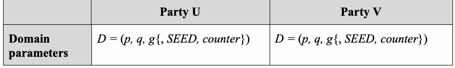
| 当事者U | 当事者V | |
| ドメイン | D = (p, q, g{, SEED, counter}) | D = (p, q, g{, SEED, counter}) |
| パラメータ |
| Static data | Static private key x U Static public key y U | Static private key x V Static public key y V |
| Ephemeral | Ephemeral private key r U Ephemeral public key t U | Ephemeral private key r V Ephemeral public key t V |
| data | ||
| Computation | Compute Z by calling FFC MQV using x , y , r , t , and t U V U U V | Compute Z by calling FFC MQV using x , y , r , t , and t V U V V U |
| Derive secret | 1. Compute DerivedKeyingMaterial 2. Destroy Z | 1. Compute DerivedKeyingMaterial 2. Destroy Z |
| keying | ||
| material |
原本PDFの抜粋画像
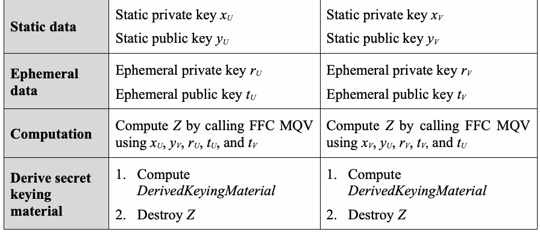
| 静的データ | 静的秘密鍵 x U 静的公開鍵 y U | 静的秘密鍵 x V 静的公開鍵 y V |
| Ephemeral | エフェメラル秘密鍵 r U エフェメラル公開鍵 t U | エフェメラル秘密鍵 r V エフェメラル公開鍵 t V |
| data | ||
| 計算 | 計算 Z を呼び出して FFC MQV を用いて x , y , r , t , and t U V U U V | 計算 Z を呼び出して FFC MQV を用いて x , y , r , t , and t V U V V U |
| 秘密鍵素材の導出 | 1. 計算 DerivedKeyingMaterial 2. 破棄 Z | 1. 計算 DerivedKeyingMaterial 2. 破棄 Z |
| 鍵 | ||
| 素材 |
6.1.1.4 Full MQV, C(2e, 2s, ECC MQV) Scheme
6.1.1.4 Full MQV、C(2e, 2s, ECC MQV)スキーム
This section describes the Full MQV scheme. Assurance of secure key establishment using
この節ではFull MQVスキームを説明する。このスキームを用いて安全な鍵確立を
未レビュー訳this scheme can only be obtained when the assumptions in Section 6.1.1 are true. In
保証できるのは、Section 6.1.1の前提条件が満たされる場合に限られる。
未レビュー訳particular, it is assumed that party U has obtained the static public key Qs,V of party V, and
特に、当事者Uは当事者Vの静的公開鍵Qₛ,Vを取得しており、
未レビュー訳party V has obtained the static public key Q
Qₛ,U
未レビュー訳of party U. s,U
を取得していると仮定する。
未レビュー訳With the exception of key derivation, the Full MQV scheme is “symmetric” in the actions of
鍵導出を除き、Full MQVスキームにおける当事者UとVの動作は「対称」である。
未レビュー訳parties U and V. Only the actions performed by party U are specified here; a specification of
ここでは当事者Uの動作のみを規定する。当事者Vの動作は、
未レビュー訳the actions performed by party V may be obtained by systematically replacing the letter “U”
以下の動作にある文字「U」を「V」に
未レビュー訳by “V” (and vice versa) in the actions listed below. Note, however, that parties U and V must
（およびその逆に）体系的に置き換えることで得られる。ただし、当事者UとVは
未レビュー訳use identical orderings of the bit strings that are input to the key-derivation method.
鍵導出方式に入力するビット列の順序を同一にしなければならない。
未レビュー訳Party U shall execute the following actions to a) establish a shared secret value Z with party
当事者Uは、a) 当事者Vとの共有秘密値Zを確立し、
未レビュー訳V, and b) derive secret keying material from Z.
b) Zから秘密鍵素材を導出するため、以下の動作を実行しなければならない。
未レビュー訳Actions: Party U generates a shared secret and derives secret keying material as follows:
動作：当事者Uは次のように共有秘密を生成し、秘密鍵素材を導出する。
未レビュー訳1.Generate an ephemeral key pair (d
1.エフェメラル鍵ペア (d
未レビュー訳,Q
e,U
未レビュー訳) from the domain parameters D as specified
) をドメインパラメータ集合Dから生成する。
未レビュー訳e,U e,U
e,U
未レビュー訳in Section 5.6.1.2. Send the public key Qe,U to party V. Receive an ephemeral public key Qe,V (purportedly) from party V. If Qe,V is not received, destroy the ephemeral
Section 5.6.1.2に従う。公開鍵Qₑ,Uを当事者Vに送信する。当事者Vからエフェメラル公開鍵Qₑ,V（とされるもの）を受信する。Qₑ,Vを受信しなかった場合、エフェメラル
未レビュー訳private key de,U; then output an error indicator, and exit this process without
秘密鍵dₑ,Uを破棄し、エラー標識を出力して、
未レビュー訳performing the remaining actions.
残りの動作を実行せずにこのプロセスを終了する。
未レビュー訳2.Verify that Q is a valid ephemeral public key for the parameters D as specified in
2.Section 5.6.2.3に従ってQ
未レビュー訳e,V
Qₑ,V
未レビュー訳Section 5.6.2.3. If assurance of public key validity cannot be obtained, destroy the
が有効なエフェメラル公開鍵であることを検証する。公開鍵の有効性保証を得られない場合、エフェメラル秘密鍵dₑ,Uを破棄し、
未レビュー訳ephemeral private key d ; then output an error indicator, and exit this process
エフェメラル秘密鍵 dₑ,U を破棄し、エラー標識を出力して、このプロセスを終了する。
未レビュー訳e,U without performing the remaining actions.
残りの動作を実行せずに。
未レビュー訳3.Use the Full MQV form of the ECC MQV primitive in Section 5.7.2.3.1 to derive a shared secret value Z from the set of domain parameters D, party U’s static private key d , party V’s static public key Q , party U’s ephemeral private key d , party s,U s,V e,U U’s ephemeral public key Q , and party V’s ephemeral public key Q . If the call to e,U e,V the ECC MQV primitive outputs an error indicator, destroy the ephemeral private key d , and destroy the results of all intermediate calculations used in the attempted e,U
3.Section 5.7.2.3.1のECC MQVプリミティブのFull MQV形式を用い、ドメインパラメータ集合D、当事者Uの静的秘密鍵dₛ,U、当事者Vの静的公開鍵Qₛ,V、当事者Uのエフェメラル秘密鍵dₑ,U、当事者Uのエフェメラル公開鍵Qₑ,U、および当事者Vのエフェメラル公開鍵Qₑ,Vから共有秘密値Zを導出する。ECC MQVプリミティブがエラー標識を出力した場合、エフェメラル秘密鍵dₑ,Uを破棄し、Zの計算試行で使用したすべての中間計算結果を破棄する。
未レビュー訳computation of Z; then output an error indicator, and exit this process without performing the remaining actions.
続いてエラー標識を出力し、残りの動作を実行せずにこのプロセスを終了する。
未レビュー訳4.Use the agreed-upon key-derivation method to derive secret keying material with the specified length from the shared secret value Z and other input (see Section 5.8). If the key-derivation method outputs an error indicator, destroy all copies of Z and the ephemeral private key d ; then output an error indicator, and exit this process e,U without performing the remaining actions.
4.合意済みの鍵導出方式を用い、共有秘密値Zおよびその他の入力から指定された長さの秘密鍵素材を導出する（Section 5.8参照）。鍵導出方式がエラー標識を出力した場合、Zのすべての複製とエフェメラル秘密鍵dₑ,Uを破棄し、エラー標識を出力して残りの動作を実行せずにこのプロセスを終了する。
未レビュー訳5.Destroy d and all copies of the shared secret Z. e,U
5.dₑ,Uおよび共有秘密Zのすべての複製を破棄する。
未レビュー訳6.Output the derived keying material.
6.導出した鍵素材を出力する。
Output: The derived keying material or an error indicator.
出力：導出された鍵素材またはエラー標識。
Note: Key confirmation can be incorporated into this scheme. See Section 6.1.1.5 for details.
注：このスキームには鍵確認を組み込むことができる。詳細はSection 6.1.1.5を参照。
The Full MQV is summarized in Table 12.
Full MQVを表12に要約する。
未レビュー訳Table 12: Full MQV key-agreement scheme summary
表12：Full MQV鍵共有スキームの要約
未レビュー訳| Party U | Party V | |
| Domain | D = (q, FR, a, b{, SEED}, G, n, h) | D = (q, FR, a, b{, SEED}, G, n, h) |
| parameters | ||
| Static data | 1. Static private key d s,U 2. Static public key Q s,U | 1. Static private key d s,V 2. Static public key Q s,V |
| Ephemeral data | 1. Ephemeral private key d e,U 2. Ephemeral public key Q e,U | 1. Ephemeral private key d e,V 2. Ephemeral public key Q e,V |
| Computation | Compute Z by calling ECC MQV using d s,U , Q s,V , d e,U , Q e,U , and Q e,V | Compute Z by calling ECC MQV using d s,V , Q s,U , d e,V , Q e,V , and Q e,U |
| Derive secret keying material | 1. Compute DerivedKeyingMaterial 2. Destroy Z | 1. Compute DerivedKeyingMaterial 2. Destroy Z |
原本PDFの抜粋画像
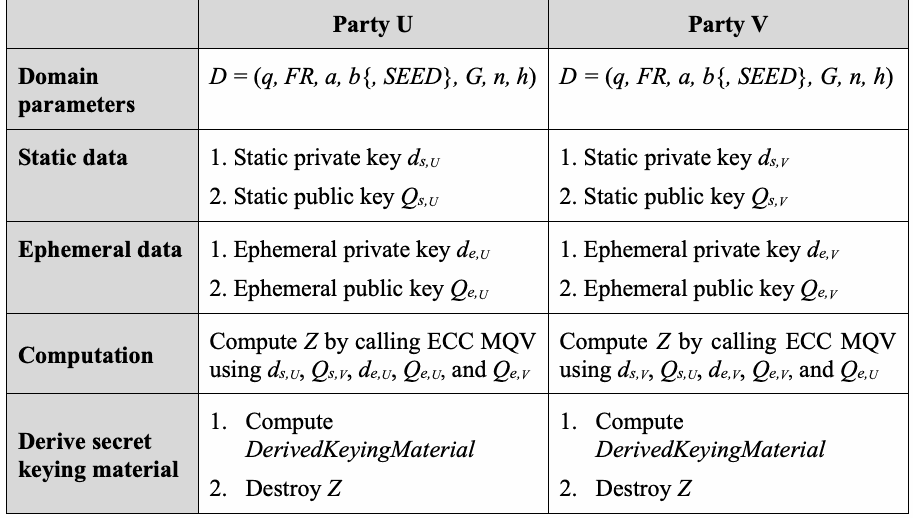
| 当事者U | 当事者V | |
| ドメイン | D = (q, FR, a, b{, SEED}, G, n, h) | D = (q, FR, a, b{, SEED}, G, n, h) |
| パラメータ | ||
| 静的データ | 1. 静的秘密鍵 d s,U 2. 静的公開鍵 Q s,U | 1. 静的秘密鍵 d s,V 2. 静的公開鍵 Q s,V |
| エフェメラルデータ | 1. エフェメラル秘密鍵 d e,U 2. エフェメラル公開鍵 Q e,U | 1. エフェメラル秘密鍵 d e,V 2. エフェメラル公開鍵 Q e,V |
| 計算 | ECC MQVを用いてZを計算： d s,U , Q s,V , d e,U , Q e,U , and Q e,V | ECC MQVを用いてZを計算： d s,V , Q s,U , d e,V , Q e,V , and Q e,U |
| 秘密鍵素材の導出 | 1. DerivedKeyingMaterialを計算 2. Zを破棄 | 1. DerivedKeyingMaterialを計算 2. Zを破棄 |
原本PDFの抜粋画像

6.1.1.5 Incorporating Key Confirmation into a C(2e, 2s) Scheme
6.1.1.5 C(2e, 2s)スキームへの鍵確認の組み込み
The subsections that follow illustrate how to incorporate key confirmation (as described in Section 5.9) into the C(2e, 2s) key-agreement schemes described above. The flow depictions separate the key-establishment flow from the key-confirmation flow. The depictions and accompanying discussions presume that the assumptions of the scheme have been satisfied, that the key-agreement transaction has proceeded successfully through key derivation, and that the received MacTags are successfully verified as specified in Section 5.2.2.
以下の各節では、前述のC(2e, 2s)鍵共有スキームに、Section 5.9で説明する鍵確認を組み込む方法を示す。フロー図では鍵確立の流れと鍵確認の流れを分けている。図と付随する説明は、スキームの前提条件が満たされ、鍵共有トランザクションが鍵導出まで正常に進み、受信したMacTagがSection 5.2.2に従って正常に検証されることを前提とする。
未レビュー訳6.1.1.5.1 C(2e, 2s) Scheme with Unilateral Key Confirmation Provided by Party U to
6.1.1.5.1 当事者Uから当事者Vへの一方向鍵確認を伴うC(2e, 2s)スキーム
未レビュー訳Party V
当事者V
未レビュー訳Figure_4 depicts a typical flow for a C(2e, 2s) scheme with unilateral key confirmation from party U to party V. In this scenario, party U and party V assume the roles of key-confirmation provider and recipient, respectively. The successful completion of this process provides party V with a) assurance that party U has derived the same secret Z value, and b) assurance that party U has actively participated in the process.
図4は、当事者Uから当事者Vへの一方向鍵確認を伴うC(2e, 2s)スキームの典型的なフローを示す。この場合、当事者UとVはそれぞれ鍵確認提供者および受信者の役割を担う。このプロセスが正常に完了すると、当事者Vは、a) 当事者Uが同じ秘密値Zを導出したこと、およびb) 当事者Uがプロセスに能動的に参加したことの保証を得る。
未レビュー訳U
未レビュー訳V
未レビュー訳U’s Static Public Key
Uの静的公開鍵
未レビュー訳Obtain static
静的
未レビュー訳public keys
公開鍵を取得
未レビュー訳V’s Static Public Key
Vの静的公開鍵
未レビュー訳
当事者UからVへの一方向鍵確認フロー（静的鍵の取得とエフェメラル鍵の交換）
U’s Ephemeral Public Key
Uのエフェメラル公開鍵
未レビュー訳Exchange
交換
未レビュー訳ephemeral
エフェメラル
未レビュー訳当事者UからVへの鍵確認メッセージの送信
V’s Ephemeral Public Key
Vのエフェメラル公開鍵
未レビュー訳public keys
公開鍵
未レビュー訳UからVへ送信されるMacTag
MacTag U
MacTag_U
未レビュー訳U’s key-
Uの鍵
未レビュー訳confirmation
確認
未レビュー訳Figure 4: C(2e, 2s) scheme with unilateral key confirmation from party U to party V
図4：当事者Uから当事者Vへの一方向鍵確認を伴うC(2e, 2s)スキーム
未レビュー訳To provide (and receive) key confirmation (as described in Section 5.9.1), party U (and party
Section 5.9.1で説明する鍵確認を提供（および受信）するため、当事者U（および当事者
未レビュー訳V) set
V）は次のように設定する。
未レビュー訳EphemData
EphemData
未レビュー訳= EphemPubKey
= EphemPubKey
未レビュー訳, and EphemData
, および EphemData
未レビュー訳= EphemPubKey
= EphemPubKey
未レビュー訳。
未レビュー訳U
未レビュー訳U
未レビュー訳V
未レビュー訳V
未レビュー訳Party U provides MacTag to party V (as specified in Section 5.9.1, with P = U and R = V),
当事者Uは、Section 5.9.1に規定するとおり（P = U、R = Vとして）、MacTag_Uを当事者Vに提供する。
未レビュー訳U
未レビュー訳where MacTag is computed (as specified in Section 5.2.1) using
MacTag_Uは、以下を用いて計算する（Section 5.2.1の規定による）。
未レビュー訳U
未レビュー訳MacData = “KC_1_U” || ID || ID || EphemPubKey || EphemPubKey {|| Text }.
MacData = “KC_1_U” || ID_U || ID_V || EphemPubKey_U || EphemPubKey_V {|| Text_U}.
未レビュー訳U
未レビュー訳U V
U、V
未レビュー訳U
未レビュー訳V U
V、U
未レビュー訳Party V (the key-confirmation recipient) uses the same format for MacData to compute its
当事者V（鍵確認の受信者）はMacDataに同じ形式を使用して、
未レビュー訳U
未レビュー訳own version of MacTag , and then verifies that the newly computed MacTag matches the
MacTag_Uの自身の値を計算し、新たに計算したMacTagが
未レビュー訳U
未レビュー訳U
未レビュー訳value provided by party U. Party U shall destroy its copy of MacKey immediately after computing MacTag . Party V
当事者Uから提供された値と一致することを検証する。当事者UはMacTag_Uを計算した直後にMacKeyの複製を破棄しなければならない。当事者Vは、受信したMacTagと新たに計算したMacTagが一致するかを判定した後、直ちにMacKeyの複製を破棄しなければならない。一致しない場合、当事者Vはさらに
未レビュー訳U
未レビュー訳shall immediately destroy its copy of MacKey after determining whether or not the received and newly computed MacTag values match. If they do not match, then party V shall also
DerivedKeyingMaterialのKeyData部分（Section 5.9.1参照）を破棄し、MacTagを検証できなかったことを当事者Uに通知しなければならない。この場合、当事者Uも
未レビュー訳U destroy the KeyData portion of the DerivedKeyingMaterial (see Section 5.9.1) and notify party U that MacTag could not be verified. In this case, party U shall also destroy the
MacTag_U
未レビュー訳U KeyData portion of the DerivedKeyingMaterial.
DerivedKeyingMaterialのKeyData部分を破棄しなければならない。
未レビュー訳6.1.1.5.2 C(2e, 2s) Scheme with Unilateral Key Confirmation Provided by Party V to
6.1.1.5.2 当事者Vから当事者Uへの一方向鍵確認を伴うC(2e, 2s)スキーム
未レビュー訳Party U
当事者U
未レビュー訳Figure_5 depicts a typical flow for a C(2e, 2s) scheme with unilateral key confirmation from party V to party U. In this scenario, party V and party U assume the roles of key-confirmation provider and recipient, respectively. The successful completion of the key-confirmation process provides party U with a) assurance that party V has derived the same secret Z value, and b) assurance that party V has actively participated in the process.
図5は、当事者Vから当事者Uへの一方向鍵確認を伴うC(2e, 2s)スキームの典型的なフローを示す。この場合、当事者VとUはそれぞれ鍵確認提供者および受信者の役割を担う。鍵確認プロセスが正常に完了すると、当事者Uは、a) 当事者Vが同じ秘密値Zを導出したこと、およびb) 当事者Vがプロセスに能動的に参加したことの保証を得る。
未レビュー訳U
未レビュー訳V
未レビュー訳U’s Static Public Key
Uの静的公開鍵
未レビュー訳Obtain static
静的鍵を取得
未レビュー訳V’s Static Public Key
Vの静的公開鍵
未レビュー訳public keys
公開鍵
未レビュー訳U’s Ephemeral Public Key
Uのエフェメラル公開鍵
未レビュー訳U sends an
Uはエフェメラル
未レビュー訳ephemeral
エフェメラル
未レビュー訳public key
公開鍵を送信
未レビュー訳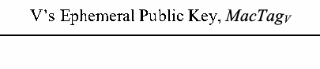
当事者VからUへの一方向鍵確認フロー（エフェメラル公開鍵の送信）
V’s Ephemeral Public Key, MacTagV
Vのエフェメラル公開鍵、MacTag_V
未レビュー訳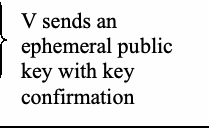
VからUへ送信される鍵確認付きエフェメラル鍵メッセージ
V sends an
Vはエフェメラル
未レビュー訳ephemeral public
公開鍵を
未レビュー訳k ey w ith k e y co nf irm at io n
鍵確認付きで送信
未レビュー訳Figure 5: C(2e, 2s) scheme with unilateral key confirmation from party V to party U
図5：当事者Vから当事者Uへの一方向鍵確認を伴うC(2e, 2s)スキーム
未レビュー訳To provide (and receive) key confirmation (as described in Section 5.9.1), party V (and party
Section 5.9.1で説明する鍵確認を提供（および受信）するため、当事者V（および当事者
未レビュー訳U) set
U）は次のように設定する。
未レビュー訳EphemData = EphemPubKey , and EphemData = EphemPubKey .
EphemData = EphemPubKey_V、および EphemData = EphemPubKey_U。
未レビュー訳V
未レビュー訳V
未レビュー訳U
未レビュー訳U
未レビュー訳Party V provides MacTag to party U (as specified in Section 5.9.1, with P = V and R = U),
当事者Vは、Section 5.9.1に規定するとおり（P = V、R = Uとして）、MacTag_Vを当事者Uに提供する。
未レビュー訳V
未レビュー訳where MacTag is computed (as specified in Section 5.2.1) using
MacTag_Vは、以下を用いて計算する（Section 5.2.1の規定による）。
未レビュー訳V
未レビュー訳MacData = “KC_1_V” || ID || ID || EphemPubKey || EphemPubKey {|| Text }.
MacData = “KC_1_V” || ID_V || ID_U || EphemPubKey_V || EphemPubKey_U {|| Text_V}.
未レビュー訳V
未レビュー訳V U
V、U
未レビュー訳V
未レビュー訳U V
U、V
未レビュー訳Party U (the key-confirmation recipient) uses the same format for MacData to compute its
当事者U（鍵確認の受信者）はMacDataに同じ形式を使用して、
未レビュー訳V
未レビュー訳own version of MacTag and then verifies that the newly computed MacTag matches the
MacTag_Vの自身の値を計算し、新たに計算したMacTagが
未レビュー訳V
未レビュー訳V
未レビュー訳value provided by party V. Note that in Figure_5, party V’s ephemeral public key (EphemPubKey ) and the MacTag
当事者Vから提供された値と一致することを検証する。図5では、当事者Vのエフェメラル公開鍵（EphemPubKey_V）とMacTag_Vが、
未レビュー訳V
未レビュー訳(MacTag ) are depicted as being sent in the same message (to reduce the number of passes
（鍵共有／鍵確認を組み合わせたプロセスのパス数を減らすため）同じメッセージで送信されるものとして示されている。これらは別々に送信してもよい。当事者VはMacTag_Vを計算した直後にMacKeyの複製を破棄しなければならない。当事者Uは、受信値と新たに計算したMacTagが一致するかどうかを判定した後、直ちにMacKeyの複製を破棄しなければならない。一致しない場合、当事者Uはさらに
未レビュー訳V in the combined key-agreement/key-confirmation process). They may also be sent separately. Party V shall destroy its copy of MacKey immediately after computing MacTag . Party U
MacTag_V
未レビュー訳V
未レビュー訳shall immediately destroy its copy of MacKey after determining whether or not the received and newly computed MacTag values match. If they do not match, then party U shall also
V
未レビュー訳V
未レビュー訳destroy the KeyData portion of the DerivedKeyingMaterial (see Section 5.9.1) and notify party V that MacTag could not be verified. In this case, party V shall also destroy the
DerivedKeyingMaterialのKeyData部分（Section 5.9.1参照）を破棄し、MacTagを検証できなかったことを当事者Vに通知しなければならない。この場合、当事者Vも
未レビュー訳V KeyData portion of the DerivedKeyingMaterial.
DerivedKeyingMaterialのKeyData部分を破棄しなければならない。
未レビュー訳6.1.1.5.3 C(2e, 2s) Scheme with Bilateral Key Confirmation
6.1.1.5.3 双方向鍵確認を伴うC(2e, 2s)スキーム
未レビュー訳Figure_6 depicts a typical flow for a C(2e, 2s) scheme with bilateral key confirmation. In
図6は、双方向鍵確認を伴うC(2e, 2s)スキームの典型的なフローを示す。この
未レビュー訳this method, party U and party V assume the roles of both the provider and the recipient in
方式では、当事者UとVが提供者と受信者の両方の役割を担い、
未レビュー訳order to obtain bilateral key confirmation. The successful completion of the key-confirmation
双方向鍵確認を実現する。この鍵確認
未レビュー訳process provides each party with a) assurance that the other party has derived the same secret
プロセスが正常に完了すると、各当事者は、a) 相手方が同じ秘密値
未レビュー訳Z value, and b) assurance that the other party has actively participated in the process.
Zを導出したこと、およびb) 相手方がプロセスに能動的に参加したことの保証を得る。
未レビュー訳U
未レビュー訳V
未レビュー訳U’s Static Public Key
Uの静的公開鍵
未レビュー訳V’s Static Public Key
Vの静的公開鍵
未レビュー訳Obtain static
静的公開鍵を
未レビュー訳public keys
取得
未レビュー訳U’s Ephemeral Public Key
Uのエフェメラル公開鍵
未レビュー訳U sends an ephemeral
Uはエフェメラル
未レビュー訳public key
公開鍵を送信
未レビュー訳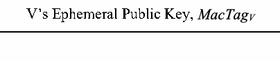
双方向鍵確認のフロー：静的鍵交換とUのエフェメラル公開鍵送信
V’s Ephemeral Public Key, MacTag
Vのエフェメラル公開鍵、MacTag_V
未レビュー訳V sends an ephemeral
Vはエフェメラル
未レビュー訳V
未レビュー訳public key with key
公開鍵を鍵
未レビュー訳confirmation
確認付きで送信
未レビュー訳MacTag U
MacTag_U
未レビュー訳U’s key
Uの鍵
未レビュー訳confirmation
確認
未レビュー訳Figure 6: C(2e, 2s) scheme with bilateral key confirmation
図6：双方向鍵確認を伴うC(2e, 2s)スキーム
未レビュー訳To provide bilateral key confirmation (as described in Section 5.9.2), party U and party V exchange and verify MacTags that have been computed (as specified in Section 5.2.1) using
双方向鍵確認を提供するため（Section 5.9.2の説明に従う）、当事者UとVはMacTagを交換し、次を用いて計算されたMacTagを検証する（Section 5.2.1の規定による）。
未レビュー訳EphemData = EphemPubKey , and EphemData = EphemPubKey .
EphemData = EphemPubKey_V、および EphemData = EphemPubKey_U。
未レビュー訳V
未レビュー訳U
未レビュー訳U
未レビュー訳V
未レビュー訳Party V provides MacTag to party U (as specified in Sections 5.9.1 and 5.9.2, with P = V
当事者Vは、Section 5.9.1および5.9.2の規定に従い（P = V
未レビュー訳V
未レビュー訳and R = U); MacTag is computed by party V (and verified by party U) using
かつR = Uとして）、MacTag_Vを計算する（当事者Uが検証）。計算には
未レビュー訳V
未レビュー訳MacData = “KC_2_V” || ID || ID || EphemPubKey || EphemPubKey {|| Text }.
MacData = “KC_2_V” || ID_V || ID_U || EphemPubKey_V || EphemPubKey_U {|| Text_V}.
未レビュー訳V
未レビュー訳V U
V、U
未レビュー訳V
未レビュー訳U V
U、V
未レビュー訳Party U provides MacTag to party V (as specified in Sections 5.9.1 and 5.9.2, with P = U
当事者Uは、Section 5.9.1および5.9.2の規定に従い（P = U
未レビュー訳U
未レビュー訳and R = V); MacTag is computed by party U (and verified by party V) using
かつR = Vとして）、MacTag_Uを当事者Uが計算し、当事者Vが検証する。計算には
未レビュー訳U
未レビュー訳MacData = “KC_2_U” || ID || ID || EphemPubKey || EphemPubKey {|| Text }.
MacData = “KC_2_U” || ID_U || ID_V || EphemPubKey_U || EphemPubKey_V {|| Text_U}.
未レビュー訳U
未レビュー訳U V
U、V
未レビュー訳U
未レビュー訳V U
V、U
未レビュー訳Note that in Figure_6, party V’s ephemeral public key (EphemPubKey ) and the MacTag
図6では、当事者Vのエフェメラル公開鍵（EphemPubKey_V）とMacTag_Vが、
未レビュー訳V
未レビュー訳(MacTag ) are depicted as being sent in the same message (to reduce the number of passes
（鍵共有／鍵確認を組み合わせたプロセスのパス数を減らすため）同じメッセージで送信されるものとして示されている。これらは別々に送信してもよく、別々に送信する場合はMacTagの送信順序を逆にしてもよい。各当事者は、1) 相手方に送信するMACタグの生成にMacKeyを使用した後、および2) 受信したMACタグが自身で計算したMACタグと一致するかどうかを判定した後、直ちにMacKeyの複製を破棄しなければならない。ただし、受信したMACタグを検証できない当事者は、さらにDerivedKeyingMaterialのKeyData部分（Section 5.9.1参照）を破棄し、失敗を相手方に通知しなければならない。この
未レビュー訳V
未レビュー訳in the combined key-agreement/key-confirmation process). They may also be sent separately, and if sent separately, then the order in which the MacTags are sent could be reversed. Each party shall destroy its copy of MacKey immediately after 1) using it to generate a MAC tag to be sent to the other party and 2) determining whether or not the MAC tag received
場合、相手方は（まだ破棄していない場合）MacKeyとDerivedKeyingMaterialの
未レビュー訳from the other party matches the MAC tag that it computed. However, if either party is not
相手方から
未レビュー訳able to verify the received MAC tag, that party shall also destroy the KeyData portion of the
KeyData部分も破棄しなければならない。
未レビュー訳DerivedKeyingMaterial (see Section 5.9.1) and notify the other party of the failure. In this
この
未レビュー訳case, the other party shall destroy both the MacKey (if it has not already done so) as well as
他方の当事者は、MacKey（まだ破棄していない場合）と
未レビュー訳the KeyData portion of the DerivedKeyingMaterial.
DerivedKeyingMaterialのKeyData部分の両方を破棄しなければならない。
未レビュー訳6.1.2 C(2e, 0s) Schemes
6.1.2 C(2e, 0s)スキーム
未レビュー訳For this category, only Diffie-Hellman schemes are specified. Each party generates
このカテゴリでは、Diffie-Hellmanスキームのみを規定する。各当事者は
未レビュー訳ephemeral key pairs with the same domain parameters. The two parties exchange ephemeral
同じドメインパラメータを用いてエフェメラル鍵ペアを生成する。両当事者はエフェメラル
未レビュー訳public keys and then compute the shared secret. The secret keying material is derived using
公開鍵を交換してから共有秘密を計算する。共有秘密を用いて秘密鍵素材を
未レビュー訳the shared secret (see Figure 7).
導出する（図7参照）。
未レビュー訳U
未レビュー訳V
未レビュー訳各当事者がエフェメラル鍵ペアを生成する鍵共有フロー
U’s Ephemeral Public Key
Uのエフェメラル公開鍵
未レビュー訳Exchange
交換
未レビュー訳ephemeral
エフェメラル
未レビュー訳UとVによるエフェメラル公開鍵の交換
V’s Ephemeral Public Key
Vのエフェメラル公開鍵
未レビュー訳public keys
公開鍵
未レビュー訳Figure 7: C(2e, 0s) schemes: each party contributes only an ephemeral key pair
図7：C(2e, 0s)スキーム：各当事者がエフェメラル鍵ペアのみを提供
未レビュー訳Assumptions: In order to execute a C(2e, 0s) key-establishment scheme in compliance with this Recommendation, the following assumptions shall be true.
前提条件：この勧告に準拠してC(2e, 0s)鍵確立スキームを実行するには、以下の前提条件が満たされなければならない。
未レビュー訳1.Each party has an authentic copy of the same set of domain parameters, D. These parameters are either approved for use in the intended application (see Section 5.5.1). For FFC schemes, D = (p, q, g{, SEED, counter}); for ECC schemes, D = (q, FR, a, b{, SEED}, G, n, h). Furthermore, each party has obtained assurance of the validity of these domain parameters as specified in Section 5.5.2.
1.各当事者は、同じドメインパラメータ集合Dの真正な複製を持つ。これらのパラメータは、意図された用途での使用が承認されている（Section 5.5.1参照）。FFCスキームではD = (p, q, g{, SEED, counter})、ECCスキームではD = (q, FR, a, b{, SEED}, G, n, h)である。さらに各当事者は、Section 5.5.2に従ってこれらのドメインパラメータの有効性保証を得ている。
未レビュー訳2.The parties have agreed upon an approved key-derivation method, as well as an approved algorithm to be used with that method (e.g., a hash function) and other associated parameters to be used (see Section 5.8).
2.当事者は、承認済みの鍵導出方式、およびその方式で使用する承認済みアルゴリズム（例：ハッシュ関数）と、使用するその他の関連パラメータについて合意している（Section 5.8参照）。
3.When an identifier is used to label a party during the key-agreement process, it has been selected/assigned in accordance with the requirements of the protocol relying upon the use of the key-agreement scheme, and its value is known to both parties.
3.鍵共有プロセス中に当事者を識別するため識別子を使用する場合、その識別子は鍵共有スキームの利用に依拠するプロトコルの要件に従って選択／割当てされ、その値は両当事者に知られている。
未レビュー訳6.1.2.1 dhEphem, C(2e, 0s, FFC DH) Scheme
6.1.2.1 dhEphem、C(2e, 0s, FFC DH)スキーム
This section describes the dhEphem scheme. Assurance of secure key establishment using this scheme can only be obtained when the assumptions in Section 6.1.2 are true.
この節ではdhEphemスキームを説明する。このスキームを用いて安全な鍵確立を保証できるのは、Section 6.1.2の前提条件が満たされる場合に限られる。
With the exception of key derivation, the dhEphem scheme is “symmetric” in the actions of
鍵導出を除き、dhEphemスキームにおける当事者UとVの動作は「対称」である。
未レビュー訳parties U and V. Only the actions performed by party U are specified here; a specification of
ここでは当事者Uの動作のみを規定する。当事者Vの動作は、
未レビュー訳the actions performed by party V may be obtained by systematically replacing the letter “U”
以下に列挙する動作の文字「U」を「V」に
未レビュー訳by “V” (and vice versa) in the actions listed below. Note, however, that parties U and V must
（およびその逆に）体系的に置き換えることで得られる。ただし、当事者UとVは
未レビュー訳use identical orderings of the bit strings that are input to the key-derivation method.
鍵導出方式に入力するビット列の順序を同一にしなければならない。
未レビュー訳Party U shall execute the following actions to a) establish a shared secret value Z with party
当事者Uは、a) 当事者Vとの共有秘密値Zを確立し、
未レビュー訳V, and b) derive secret keying material from Z.
b) Zから秘密鍵素材を導出するため、以下の動作を実行しなければならない。
未レビュー訳Actions: Party U generates a shared secret and derives secret keying material as follows:
動作：当事者Uは次のように共有秘密を生成し、秘密鍵素材を導出する。
未レビュー訳1.Generate an ephemeral key pair (r t ) from the domain parameters D as specified in U, U
1.ドメインパラメータDからSection 5.6.1.1に従ってエフェメラル鍵ペア (rU, tU) を生成する。
未レビュー訳Section 5.6.1.1. Send the public key t to party V. Receive an ephemeral public key
Section 5.6.1.1に従う。公開鍵tUを当事者Vに送信する。当事者Vからエフェメラル公開鍵
未レビュー訳tU
未レビュー訳t (purportedly) from party V. If t is not received, destroy the ephemeral private key
tV（とされるもの）を受信する。tVを受信しなかった場合、エフェメラル秘密鍵
未レビュー訳rU
未レビュー訳V
未レビュー訳r ; then output an error indicator, and exit this process without performing the U
rUを破棄し、エラー標識を出力して、このプロセスを終了する。
未レビュー訳remaining actions.
残りの動作を実行せずに。
未レビュー訳2.Verify that tV is a valid ephemeral public key for the parameters D as specified in
2.Section 5.6.2.3に従ってtVがパラメータDに対する有効なエフェメラル公開鍵であることを検証する。
未レビュー訳Section 5.6.2.3. If assurance of public key validity cannot be obtained, destroy the
公開鍵の有効性保証を得られない場合、
未レビュー訳ephemeral key r ; then output an error indicator, and exit this process without
エフェメラル秘密鍵r
未レビュー訳Uを破棄し、エラー標識を出力してこのプロセスを終了する。
未レビュー訳performing the remaining actions.
残りの動作を実行せずに。
未レビュー訳3.Use the FFC DH primitive in Section 5.7.1.1 to derive a shared secret Z from the set
3.Section 5.7.1.1のFFC DHプリミティブを用いて、次から共有秘密Zを導出する：
未レビュー訳of domain parameters D, party U’s ephemeral private key rU, and party V’s ephemeral
ドメインパラメータ集合D、当事者Uのエフェメラル秘密鍵rU、および当事者Vのエフェメラル
未レビュー訳public key t . Then destroy the ephemeral private key r . If the call to the FFC DH
公開鍵tV。その後、エフェメラル秘密鍵rUを破棄する。FFC DH
未レビュー訳プリミティブが
未レビュー訳プリミティブが
未レビュー訳primitive outputs an error indicator, destroy the results of all intermediate calculations
エラー標識を出力した場合、計算の試行で使用したすべての中間計算結果を破棄する。
未レビュー訳used in the attempted computation of Z; then output an error indicator, and exit this
続いてエラー標識を出力し、残りの動作を実行せずにこの
未レビュー訳process without performing the remaining actions.
プロセスを終了する。
未レビュー訳4.Use the agreed-upon key-derivation method to derive secret keying material with the
4.合意済みの鍵導出方式を用いて、共有秘密値Zおよびその他の入力から指定された長さの秘密鍵素材を導出する（Section 5.8参照）。鍵導出方式がエラー標識を出力した場合、Zのすべての複製を破棄し、エラー標識を出力して残りの動作を実行せずにこのプロセスを終了する。
未レビュー訳specified length from the shared secret value Z and other input (see Section 5.8). If the key-derivation method outputs an error indicator, destroy all copies of Z; then output an error indicator, and exit this process without performing the remaining action.
共有秘密Zのすべての複製を破棄し、導出した鍵素材を出力する。
未レビュー訳5.Destroy all copies of the shared secret Z and output the derived keying material.
5.共有秘密Zのすべての複製を破棄し、導出した鍵素材を出力する。
Output: The derived keying material or an error indicator. dhEphem is summarized in Table 13.
出力：導出された鍵素材またはエラー標識。dhEphemを表13に要約する。
未レビュー訳Table 13: dhEphem key-agreement scheme summary
表13：dhEphem鍵共有スキームの要約
未レビュー訳| Party U | Party V | |
| Domain | (p, q, g{, SEED, counter}) | (p, q, g{, SEED, counter}) |
| parameters | ||
| Static data | N/A | N/A |
| Ephemeral data | Ephemeral private key r U Ephemeral public key t U | Ephemeral private key r V Ephemeral public key t V |
| Computation | Compute Z by calling FFC DH using r and t U V | Compute Z by calling FFC DH using r and t V U |
| Derive secret keying material | 1. Compute DerivedKeyingMaterial 2. Destroy Z | 1. Compute DerivedKeyingMaterial 2. Destroy Z |
原本PDFの抜粋画像
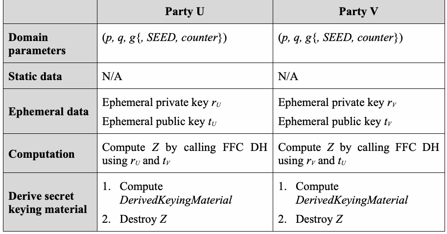
| 当事者U | 当事者V | |
| ドメイン | (p, q, g{, SEED, counter}) | (p, q, g{, SEED, counter}) |
| パラメータ | ||
| 静的データ | 該当なし | 該当なし |
| エフェメラルデータ | エフェメラル秘密鍵 r U エフェメラル公開鍵 t U | エフェメラル秘密鍵 r V エフェメラル公開鍵 t V |
| 計算 | FFC DHを用いてZを計算： r and t U V | FFC DHを用いてZを計算： r and t V U |
| 秘密鍵素材の導出 | 1. DerivedKeyingMaterialを計算 2. Zを破棄 | 1. DerivedKeyingMaterialを計算 2. Zを破棄 |
原本PDFの抜粋画像

6.1.2.2 (Cofactor) Ephemeral Unified Model, C(2e, 0s, ECC CDH) Scheme
6.1.2.2（コファクタ）Ephemeral Unified Model、C(2e, 0s, ECC CDH)スキーム
This section describes the Ephemeral Unified Model scheme. Assurance of secure key
この節ではEphemeral Unified Modelスキームを説明する。安全な鍵
未レビュー訳establishment using this scheme can only be obtained when the assumptions in Section 6.1.2
確立をこのスキームで保証できるのは、Section 6.1.2の前提条件が
未レビュー訳are true.
満たされる場合に限られる。
未レビュー訳With the exception of key derivation, the Ephemeral Unified Model scheme is “symmetric”
鍵導出を除き、Ephemeral Unified Modelスキームにおける当事者UとVの動作は「対称」である。
未レビュー訳in the actions of parties U and V. Only the actions performed by party U are specified here;
ここでは当事者Uの動作のみを規定する。
未レビュー訳a specification of the actions performed by party V may be obtained by systematically
当事者Vの動作の仕様は、以下に列挙する動作の文字「U」を
未レビュー訳replacing the letter “U” by “V” (and vice versa) in the actions listed below. Note, however,
「V」に（およびその逆に）体系的に置き換えることで得られる。ただし、
未レビュー訳that parties U and V must use identical orderings of the bit strings that are input to the key-
当事者UとVは鍵導出方式へのビット列入力の順序を同一に
未レビュー訳derivation method.
しなければならない。
未レビュー訳Party U shall execute the following actions to a) establish a shared secret value Z with party
当事者Uは、a) 当事者Vとの共有秘密値Zを確立し、
未レビュー訳V, and b) derive secret keying material from Z.
b) Zから秘密鍵素材を導出するため、以下の動作を実行しなければならない。
未レビュー訳Actions: Party U generates a shared secret and derives secret keying material as follows:
動作：当事者Uは次のように共有秘密を生成し、秘密鍵素材を導出する。
1.Generate an ephemeral key pair (de,U, Qe,U) from the domain parameters D as specified
1.ドメインパラメータDからSection 5.6.1.2に従ってエフェメラル鍵ペア (dₑ,U, Qₑ,U) を生成する。
未レビュー訳in Section 5.6.1.2. Send the public key Q
Section 5.6.1.2に従う。公開鍵Qₑ,Uを当事者Vに送信する。エフェメラル公開
未レビュー訳to party V. Receive an ephemeral public e,U
鍵 Qₑ,U
未レビュー訳key Q (purportedly) from party V. If Q is not received, destroy the ephemeral
Qₑ,V（とされるもの）を当事者Vから受信する。Qₑ,Vを受信しなかった場合、エフェメラル
未レビュー訳e,V
公開鍵 Qₑ,V
未レビュー訳e,V private key d ; then output an error indicator, and exit this process without
Qₑ,Vが受信されなかった場合、エフェメラル秘密鍵dₑ,Uを破棄し、エラー標識を出力してこのプロセスを終了する。
未レビュー訳e,U performing the remaining actions.
残りの動作を実行せずに。
未レビュー訳2.Verify that Q is a valid ephemeral public key for the parameters D as specified in e,V Section 5.6.2.3. If assurance of public key validity cannot be obtained, destroy the ephemeral private key d ; then output an error indicator, and exit this process e,U without performing the remaining actions.
2.Section 5.6.2.3に従って、Qₑ,VがパラメータDに対する有効なエフェメラル公開鍵であることを検証する。公開鍵の有効性保証を得られない場合、エフェメラル秘密鍵dₑ,Uを破棄し、エラー標識を出力して残りの動作を実行せずにこのプロセスを終了する。
未レビュー訳3.Use the ECC CDH primitive in Section 5.7.1.2 to derive a shared secret Z from the set of domain parameters D, party U’s ephemeral private key d , and party V’s e,U ephemeral public key Q . Then destroy the ephemeral private key d . If the call to e,V e,U the ECC CDH primitive outputs an error indicator, destroy the results of all intermediate calculations used in the attempted computation of Z, then output an error indicator, and exit this process without performing the remaining actions.
3.Section 5.7.1.2のECC CDHプリミティブを用いて、ドメインパラメータ集合D、当事者Uのエフェメラル秘密鍵dₑ,U、および当事者Vのエフェメラル公開鍵Qₑ,Vから共有秘密Zを導出する。その後、エフェメラル秘密鍵dₑ,Uを破棄する。ECC CDHプリミティブがエラー標識を出力した場合、計算試行で使用したすべての中間計算結果を破棄し、エラー標識を出力して残りの動作を実行せずにこのプロセスを終了する。
未レビュー訳4.Use the agreed-upon key-derivation method to derive secret keying material with the specified length from the shared secret value Z and other input (see Section 5.8). If the key-derivation method outputs an error indicator, destroy all copies of Z; then output an error indicator, and exit this process without performing the remaining action.
4.合意済みの鍵導出方式を用いて、共有秘密値Zおよびその他の入力から指定された長さの秘密鍵素材を導出する（Section 5.8参照）。鍵導出方式がエラー標識を出力した場合、Zのすべての複製を破棄し、エラー標識を出力して残りの動作を実行せずにこのプロセスを終了する。
5.Destroy all copies of the shared secret Z and output the derived keying material.
5.共有秘密Zのすべての複製を破棄し、導出した鍵素材を出力する。
未レビュー訳Output: The derived keying material or an error indicator.
出力：導出された鍵素材またはエラー標識。
The Ephemeral Unified Model is summarized in Table 14.
Ephemeral Unified Modelを表14に要約する。
Table 14: Ephemeral unified model key-agreement scheme summary
表14：Ephemeral Unified Model鍵共有スキームの要約
未レビュー訳| Party U | Party V | |
| Domain | (q, FR, a, b{, SEED}, G, n, h) | (q, FR, a, b{, SEED}, G, n, h) |
| parameters | ||
| Static data | N/A | N/A |
| Ephemeral data | Ephemeral private key d e,U Ephemeral public key Q e,U | Ephemeral private key d e,V Ephemeral public key Q e,V |
| Computation | Compute Z by calling ECC CDH using d and Q e,U e,V | Compute Z by calling ECC CDH using d and Q e,V e,U |
| Derive secret keying material | 1. Compute DerivedKeyingMaterial 2. Destroy Z | 1. Compute DerivedKeyingMaterial 2. Destroy Z |
原本PDFの抜粋画像
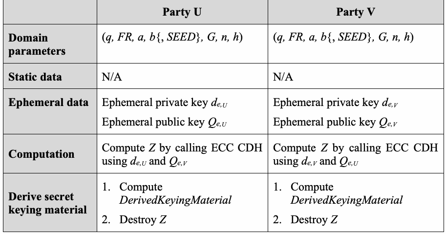
| 当事者U | 当事者V | |
| ドメイン | (q, FR, a, b{, SEED}, G, n, h) | (q, FR, a, b{, SEED}, G, n, h) |
| パラメータ | ||
| 静的データ | 該当なし | 該当なし |
| エフェメラルデータ | エフェメラル秘密鍵 d e,U エフェメラル公開鍵 Q e,U | エフェメラル秘密鍵 d e,V エフェメラル公開鍵 Q e,V |
| 計算 | ECC CDHを用いてZを計算： d and Q e,U e,V | ECC CDHを用いてZを計算： d and Q e,V e,U |
| 秘密鍵素材の導出 | 1. DerivedKeyingMaterialを計算 2. Zを破棄 | 1. DerivedKeyingMaterialを計算 2. Zを破棄 |
原本PDFの抜粋画像

6.1.2.3 Key Confirmation for C(2e, 0s) Schemes
6.1.2.3 C(2e, 0s)スキームの鍵確認
In a C(2e, 0s) key-agreement scheme, none of the parties contributes a static key pair. Only ephemeral key pairs are used to derive the secret value Z. Without a trusted association with an identifier of either party, key confirmation cannot achieve the expected purposes. Therefore, in this Recommendation, key confirmation is not incorporated for the C(2e, 0s) key-agreement schemes.
C(2e, 0s)鍵合意スキームでは、どの当事者も静的鍵ペアを提供しない。秘密値Zの導出にはエフェメラル鍵ペアのみを使用する。いずれかの当事者の識別子との信頼できる関連付けがなければ、鍵確認は期待される目的を達成できない。したがって、本勧告ではC(2e, 0s)鍵合意スキームに鍵確認を組み込まない。
6.2 Schemes Using One Ephemeral Key Pair, C(1e) Schemes
6.2 1つのエフェメラル鍵ペアを使用するスキーム、C(1e)スキーム
未レビュー訳This category consists of two subcategories that are determined by the use (or non-use) of a static key pair by each of the parties. Only party U generates an ephemeral key pair. In the first subcategory, both party U and party V use a static key pair, and party U also generates an ephemeral key pair (see Section 6.2.1). In the second subcategory, party U generates an ephemeral key pair, but uses no static key pair; party V uses only a static key pair (see Section 6.2.2).
このカテゴリは、各当事者が静的鍵ペアを使用するかどうかによって決まる2つのサブカテゴリから成る。エフェメラル鍵ペアを生成するのは当事者Uのみである。最初のサブカテゴリでは、当事者UとVの両方が静的鍵ペアを使用し、当事者Uはさらにエフェメラル鍵ペアを生成する（Section 6.2.1参照）。2番目では、当事者Uはエフェメラル鍵ペアを生成するが静的鍵ペアは使用せず、当事者Vは静的鍵ペアのみを使用する（Section 6.2.2参照）。
未レビュー訳6.2.1 C(1e, 2s) Schemes
6.2.1 C(1e, 2s)スキーム
未レビュー訳Figure_8 depicts a typical flow for a C(1e, 2s) scheme. For these schemes, party U uses both static and ephemeral private/public key pairs. Party V uses only a static private/public key
図8は、C(1e, 2s)スキームの典型的なフローを示す。これらのスキームでは、当事者Uは静的およびエフェメラル秘密鍵／公開鍵ペアの両方を使用する。当事者Vは静的秘密鍵／公開鍵
未レビュー訳pair. Party U and party V obtain each other’s static public keys in a trusted manner. Party U
ペアのみを使用する。当事者UとVは互いの静的公開鍵を信頼できる方法で取得する。当事者Uは
未レビュー訳also sends its ephemeral public key to party V. A shared secret is generated by both parties
さらにエフェメラル公開鍵を当事者Vに送信する。両当事者は、利用可能な静的鍵とエフェメラル鍵を
未レビュー訳using the available static and ephemeral keys. The secret keying material is derived using the
用いて共有秘密を生成する。秘密鍵素材は、
未レビュー訳shared secret.
共有秘密を用いて導出する。
未レビュー訳U
未レビュー訳V
未レビュー訳C(1e, 2s)方式の鍵交換フロー
U’s Static Public Key
Uの静的公開鍵
未レビュー訳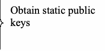
UからVへの静的公開鍵の配布
Obtain static public
静的公開鍵を取得する
未レビュー訳keys
鍵
未レビュー訳VからUへの静的公開鍵の配布
V’s Static Public Key
Vの静的公開鍵
未レビュー訳UからVへのエフェメラル公開鍵の送信
U’s Ephemeral Public Key
Uのエフェメラル公開鍵
未レビュー訳U sends an ephemeral
Uはエフェメラル
未レビュー訳public key
公開鍵を送信する
未レビュー訳Figure 8: C(1e, 2s) schemes: party U contributes a static and an ephemeral key pair
図8：C(1e, 2s)スキーム：当事者Uは静的鍵ペアとエフェメラル鍵ペアを提供し、
未レビュー訳while party V contributes only a static key pair
当事者Vは静的鍵ペアのみを提供する。
未レビュー訳Assumptions: In order to execute a C(1e, 2s) key-establishment scheme in compliance with
前提条件：この勧告に準拠してC(1e, 2s)鍵確立スキームを実行するには、
未レビュー訳this Recommendation, the following assumptions shall be true.
以下の前提条件が満たされなければならない。
未レビュー訳1.Each party has an authentic copy of the same set of domain parameters, D. These parameters are approved for use in the intended application (see Section 5.5.1). For FFC schemes, D = (p, q, g{, SEED, counter}); for ECC schemes, D = (q, FR, a, b{, SEED}, G, n, h). Furthermore, each party has obtained assurance of the validity of these domain parameters as specified in Section 5.5.2.
1.各当事者は同一のドメインパラメータ集合Dの真正な複製を持ち、意図された用途での使用が承認されている（Section 5.5.1参照）。FFCスキームではD = (p, q, g{, SEED, counter})、ECCスキームではD = (q, FR, a, b{, SEED}, G, n, h)である。さらに各当事者はSection 5.5.2に従い、これらのドメインパラメータの有効性保証を得ている。
未レビュー訳2.Each party has been designated as the owner of a static key pair that was generated as specified in Section 5.6.1 using the set of domain parameters, D. For FFC schemes, the static key pair is (x, y); for ECC schemes, the static key pair is (d , Q ). Each party s s
2.各当事者は、ドメインパラメータ集合Dを用いてSection 5.6.1に従い生成された静的鍵ペアの所有者として指定されている。FFCスキームでは静的鍵ペアは(x, y)、ECCスキームでは(dₛ, Qₛ)である。各当事者
未レビュー訳has obtained assurance of the validity of its own static public key as specified in Section 5.6.2.1.3. Each party has also obtained assurance of its possession of the correct value for its own private key as specified in Section 5.6.2.1.5.
はSection 5.6.2.1.3に従って自身の静的公開鍵の有効性保証を得ている。また、Section 5.6.2.1.5に従って自身の秘密鍵の正しい値を保有している保証も得ている。
未レビュー訳3.The parties have agreed upon an approved key-derivation method, as well as an approved algorithm to be used with that method (e.g., a hash function) and other associated parameters to be used for key derivation (see Section 5.8).
3.当事者は、承認済みの鍵導出方式、およびその方式で使用する承認済みアルゴリズム（例：ハッシュ関数）と、鍵導出に使用するその他の関連パラメータについて合意している（Section 5.8参照）。
未レビュー訳4.If key confirmation is used, the parties have also agreed upon an approved MAC and associated parameters, including the lengths of MacKey and MacTag (see Section 5.9.3). If party V provides key confirmation to party U, the parties have agreed upon the form of Nonce , which should be a random nonce (see Section 5.4). V
4.鍵確認を使用する場合、当事者はSection 5.9.3に従ってMacKeyおよびMacTagの長さを含む承認済みMACと関連パラメータにも合意している。当事者Vが当事者Uに鍵確認を提供する場合、両当事者はNonce_Vの形式について合意している。このノンスはランダムであることが望ましい（Section 5.4参照）。
未レビュー訳5.Prior to or during the key-agreement process, each party receives the other party’s
5.鍵共有プロセスの前または実行中に、各当事者は相手方の
未レビュー訳static public key in a trusted manner (e.g., from a certificate signed by a trusted CA
静的公開鍵を信頼できる方法で受信する（例：信頼されたCAが署名した証明書から、
未レビュー訳or directly from the other party, who is trusted by the recipient). Each party has
または受信者が信頼する相手方から直接受け取る）。各当事者は
未レビュー訳obtained assurance of the validity of the other party’s static public key as specified in
Section 5.6.2.2.1に従って相手方の静的公開鍵の有効性保証を
未レビュー訳Section 5.6.2.2.1.
得ている。
未レビュー訳6.The recipient of a static public key has obtained assurance that its (claimed) owner is
6.静的公開鍵の受信者は、その（主張された）所有者が
未レビュー訳(or was) in possession of the corresponding static private key, as specified in Section
対応する静的秘密鍵を
未レビュー訳5.6.2.2.3.
保有している（または保有していた）ことの保証をSection 5.6.2.2.3に従って得ている。
未レビュー訳7.When an identifier is used to label a party during the key-agreement process, that
7.鍵共有プロセス中に当事者を識別するため識別子を使用する場合、その
未レビュー訳identifier has a trusted association to that party’s static public key. (In other words,
識別子は当該当事者の静的公開鍵と信頼できる形で関連付けられている（言い換えると、
未レビュー訳whenever both the identifier and static public key of one participant are employed in
鍵共有プロセスで参加者の識別子と静的公開鍵の両方が使用される場合は常に、
未レビュー訳the key-agreement process, they are associated in a manner that is trusted by the other
これらは他方の参加者が信頼する方法で関連付けられている。
未レビュー訳participant.) When an identifier is used to label a party during the key-agreement
）。鍵共有プロセス中に当事者を識別するため識別子を使用する
未レビュー訳process, both parties are aware of the particular identifier employed for that purpose.
場合、両当事者はその目的で用いる特定の識別子を認識している。
未レビュー訳6.2.1.1 dhHybridOneFlow, C(1e, 2s, FFC DH) Scheme
6.2.1.1 dhHybridOneFlow、C(1e, 2s, FFC DH)スキーム
未レビュー訳This section describes the dhHybridOneFlow scheme. Assurance of secure key establishment
この節ではdhHybridOneFlowスキームを説明する。このスキームによる安全な鍵確立の保証は、
未レビュー訳using this scheme can only be obtained when the assumptions in Section 6.2.1 are true. In
Section 6.2.1の前提条件が満たされている場合に限り得られる。
未レビュー訳particular, it is assumed that party U has obtained the static public key y of party V, and
特に、当事者Uは当事者Vの静的公開鍵yVを取得しており、
未レビュー訳V
未レビュー訳party V has obtained the static public key y
当事者Vは当事者Uの静的公開鍵y
未レビュー訳of party U.
を取得していると仮定する。
未レビュー訳U
未レビュー訳In this scheme, each party has different actions, which are presented separately below.
このスキームでは、各当事者の動作が異なるため、以下に別々に示す。
However, note that parties U and V must use identical orderings of the bit strings that are
ただし、当事者UとVは鍵導出方式に入力するビット列の順序を
未レビュー訳input to the key-derivation method.
同一にしなければならないことに注意する。
未レビュー訳Party U shall execute the following actions to a) establish a shared secret value Z with party
当事者Uは、a) 当事者Vとの共有秘密値Zを確立し、
未レビュー訳V, and b) derive secret keying material from Z. Actions: Party U generates a shared secret and derives secret keying material as follows:
b) Zから秘密鍵素材を導出するため、以下の動作を実行しなければならない。動作：当事者Uは次のように共有秘密を生成し、鍵素材を導出する。
未レビュー訳1.Generate an ephemeral key pair (r , t ) from the domain parameters D as specified U U in Section 5.6.1.1. Send the public key t to party V. U
1.ドメインパラメータDからSection 5.6.1.1に従ってエフェメラル鍵ペア(rU, tU)を生成し、公開鍵tUを当事者Vに送信する。
未レビュー訳2.Use the FFC DH primitive in Section 5.7.1.1 to derive a shared secret Z from the set s of domain parameters D, party U’s static private key x , and party V’s static public U
2.Section 5.7.1.1のFFC DHプリミティブを用い、ドメインパラメータ集合D、当事者Uの静的秘密鍵xU、および当事者Vの静的公開鍵
未レビュー訳key y . If the call to the FFC DH primitive outputs an error indicator, destroy the
yVから共有秘密Zₛを導出する。FFC DHプリミティブがエラー標識を出力した場合、
未レビュー訳yV
未レビュー訳ephemeral private key r , and destroy the results of all intermediate calculations used
エフェメラル秘密鍵rUを破棄し、計算試行で使用したすべての中間計算結果を
未レビュー訳rU
未レビュー訳in the attempted computation of Z ; then output an error indicator, and exit this s process without performing the remaining actions.
破棄する。次にエラー標識を出力し、Zₛの計算を
未レビュー訳3.Use the FFC DH primitive to derive a shared secret Z from the set of domain e parameters D, party U’s ephemeral private key r and party V’s static public key y . U, V If this call to the FFC DH primitive outputs an error indicator, destroy Z and the s ephemeral private key r , and destroy the results of all intermediate calculations used U in the attempted computation of Z ; then output an error indicator, and exit this e process without performing the remaining actions.
3.行わず、残りの動作を実行せずにこのプロセスを終了する。FFC DHプリミティブを用い、ドメインパラメータ集合D、当事者Uのエフェメラル秘密鍵rU、および当事者Vの静的公開鍵yVから共有秘密Zₑを導出する。この呼び出しがエラー標識を出力した場合、Zₛ、エフェメラル秘密鍵rU、およびZₑの計算試行で使用したすべての中間計算結果を破棄し、エラー標識を出力して残りの動作を実行せずに終了する。
未レビュー訳4.Compute the shared secret Z = Z || Z . Destroy Z and Z . e s e s
4.共有秘密Z = Zₑ || Zₛを計算する。ZₑおよびZₛを破棄する。
未レビュー訳5.Use the agreed-upon key-derivation method to derive secret keying material with the
5.合意済みの鍵導出方式を用いて、
未レビュー訳specified length from the shared secret value Z and other input (see Section 5.8). If
共有秘密値Zおよびその他の入力から指定された長さの秘密鍵素材を導出する（Section 5.8参照）。
未レビュー訳the key-derivation method outputs an error indicator, destroy all copies of Z and the
鍵導出方式がエラー標識を出力した場合、Zのすべての複製と
未レビュー訳ephemeral private key r ; then output an error indicator, and exit this process without
エフェメラル秘密鍵rUを破棄し、エラー標識を出力して、このプロセスを
未レビュー訳U
未レビュー訳performing the remaining actions.
残りの動作を実行せずに終了する。
未レビュー訳6.Destroy r and all copies of the shared secret Z. U
6.rUおよび共有秘密Zのすべての複製を破棄する。
未レビュー訳7.Output the derived keying material.
7.導出した鍵素材を出力する。
未レビュー訳Output: The derived keying material or an error indicator.
出力：導出された鍵素材またはエラー標識。
未レビュー訳Party V shall execute the following actions to a) establish a shared secret value Z with party
当事者Vは、a) 当事者Uとの共有秘密値Zを確立し、
未レビュー訳U, and b) derive secret keying material from Z.
b) Zから秘密鍵素材を導出するため、以下の動作を実行しなければならない。
未レビュー訳Actions: Party V derives secret keying material as follows:
動作：当事者Vは次のように秘密鍵素材を導出する。
未レビュー訳1.Receive an ephemeral public key t (purportedly) from party U. If t is not received,
1.当事者Uからエフェメラル公開鍵tU（とされるもの）を受信する。tUを受信しなかった場合、
未レビュー訳tU
未レビュー訳U
未レビュー訳then output an error indicator, and e
その後、エラー標識を出力し、
未レビュー訳xit this process without performi
このプロセスを終了して残りの
未レビュー訳ng the remaining
動作を実行せずに
未レビュー訳actions.
終了する。
未レビュー訳2.Verify that t is a valid ephemeral public key for the parameters D as specified in
2.Section 5.6.2.3に従ってtUがパラメータDに対する有効なエフェメラル公開鍵であることを検証する。
未レビュー訳tU
未レビュー訳Section 5.6.2.3. If assurance of public key validity cannot be obtained, then output an
公開鍵の有効性保証を得られない場合、エラー標識を出力し、
未レビュー訳error indicator, and exit this process without performing the remaining actions.
残りの動作を実行せずにこのプロセスを終了する。
未レビュー訳3.Use the FFC DH primitive in Section 5.7.1.1 to derive a shared secret value Zs from
3.Section 5.7.1.1のFFC DHプリミティブを用いて、次から共有秘密Zₛを導出する：
未レビュー訳the set of domain parameters D, party V’s static private key xV, and party U’s static
ドメインパラメータ集合D、当事者Vの静的秘密鍵xV、および当事者Uの静的
未レビュー訳public key y . If the call to the FFC DH primitive outputs an error indicator, destroy
公開鍵yU。FFC DHプリミティブがエラー標識を出力した場合、
未レビュー訳yU
未レビュー訳the results of all intermediate calculations used in the attempted computation of Z ;
Zₛの計算試行で使用したすべての中間計算結果を
未レビュー訳Zₛ
未レビュー訳then output an error indicator, and exit this process without performing the remaining actions.
破棄し、エラー標識を出力して残りの動作を実行せずに終了する。
未レビュー訳4.Use the FFC DH primitive to derive a shared secret Z from the set of domain e parameters D, party V’s static private key x , and party U’s ephemeral public key t . V U If this call to the FFC DH primitive outputs an error indicator, destroy Z , and destroy s the results of all intermediate calculations used in the attempted computation of Z ; e then output an error indicator, and exit this process without performing the remaining actions.
4.FFC DHプリミティブを用いて、ドメインパラメータ集合D、当事者Vの静的秘密鍵xV、および当事者Uのエフェメラル公開鍵tUから共有秘密Zₑを導出する。この呼び出しがエラー標識を出力した場合、ZₛおよびZₑの計算試行に使用したすべての中間計算結果を破棄し、エラー標識を出力して残りの動作を実行せずに終了する。
未レビュー訳5.Compute the shared secret Z = Z || Z . Destroy Z and Z . e s e s
5.共有秘密Z = Zₑ || Zₛを計算する。ZₑおよびZₛを破棄する。
未レビュー訳6.Use the agreed-upon key-derivation method to derive secret keying material with the specified length from the shared secret value Z and other input (see Section 5.8). If the key-derivation method outputs an error indicator, destroy all copies of Z; output an error indicator and exit this process without performing the remaining action.
6.合意済みの鍵導出方式を用い、共有秘密値Zおよびその他の入力から指定された長さの秘密鍵素材を導出する（Section 5.8参照）。鍵導出方式がエラー標識を出力した場合、Zのすべての複製を破棄し、エラー標識を出力して残りの動作を実行せずにこのプロセスを終了する。
未レビュー訳7.Destroy all copies of the shared secret Z and output the derived keying material.
7.共有秘密Zのすべての複製を破棄し、導出した鍵素材を出力する。
Output: The derived keying material or an error indicator. Note: Key confirmation can be incorporated into this scheme. See Section 6.2.1.5 for details. dhHybridOneFlow is summarized in Table 15.
出力：導出された鍵素材またはエラー標識。注：このスキームには鍵確認を組み込むことができる。詳細はSection 6.2.1.5を参照。dhHybridOneFlowを表15に要約する。
未レビュー訳Table 15: dhHybridOneFlow key-agreement scheme summary
表15：dhHybridOneFlow鍵共有スキームの要約
未レビュー訳| Party U | Party V | |
| Domain | (p, q, g{, SEED, counter}) | (p, q, g{, SEED, counter}) |
| parameters | ||
| Static data | Static private key x U Static public key y U | Static private key x V Static public key y V |
| Ephemeral data | Ephemeral private key r U Ephemeral public key t U | N/A |
| Computation | 1. Compute Z by calling FFC s DH using x and y U V 2. Compute Z by calling FFC e DH using r and y U V 3. Compute Z = Z || Z e s | 1. Compute Z by calling FFC s DH using x and y V U 2. Compute Z by calling FFC e DH using x and t V U 3. Compute Z = Z || Z e s |
| Derive secret keying material | 1. Compute DerivedKeyingMaterial 2. Destroy Z | 1. Compute DerivedKeyingMaterial 2. Destroy Z |
原本PDFの抜粋画像
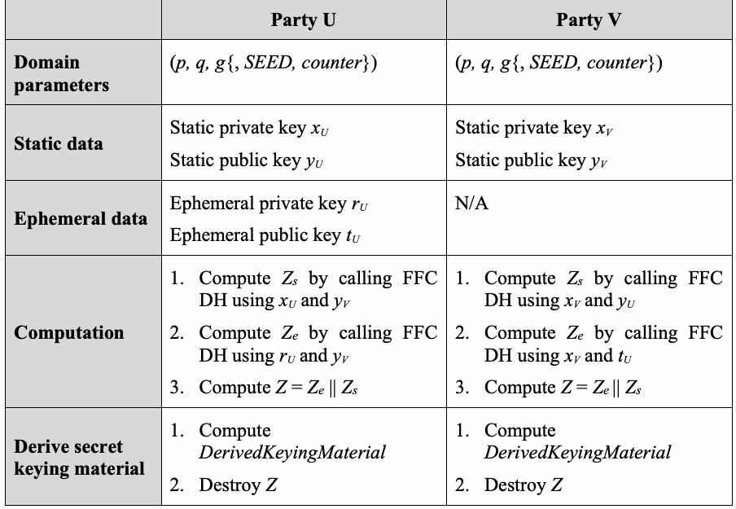
| 当事者U | 当事者V | |
| ドメイン | (p, q, g{, SEED, counter}) | (p, q, g{, SEED, counter}) |
| パラメータ | ||
| 静的データ | 静的秘密鍵 x U 静的公開鍵 y U | 静的秘密鍵 x V 静的公開鍵 y V |
| エフェメラルデータ | エフェメラル秘密鍵 r U エフェメラル公開鍵 t U | 該当なし |
| 計算 | 1. FFC DHを用いてZₛを計算： x and y U V 2. FFC DHを用いてZₑを計算： r and y U V 3. Z = Zを計算： || Z e s | 1. FFC DHを用いてZₛを計算： x and y V U 2. FFC DHを用いてZₑを計算： x and t V U 3. Z = Zを計算： || Z e s |
| 秘密鍵素材の導出 | 1. DerivedKeyingMaterialを計算 2. Zを破棄 | 1. DerivedKeyingMaterialを計算 2. Zを破棄 |
原本PDFの抜粋画像

6.2.1.2 (Cofactor) One-Pass Unified Model, C(1e, 2s, ECC CDH) Scheme
6.2.1.2（コファクタ）One-Pass Unified Model、C(1e, 2s, ECC CDH)スキーム
This section describes the One-Pass Unified Model scheme. Assurance of secure key establishment using this scheme can only be obtained when the assumptions in Section 6.2.1 are true. In particular, it is assumed that party U has obtained the static public key Q of
この節ではOne-Pass Unified Modelスキームを説明する。このスキームで安全な鍵確立を保証できるのは、Section 6.2.1の前提条件が満たされる場合に限られる。特に、当事者Uは静的公開鍵Q
未レビュー訳s,V
ₛ,V
未レビュー訳party V, and party V has obtained the static public key Q
（当事者Vの鍵）を取得しており、当事者Vは当事者Uの静的公開鍵Q
未レビュー訳of party U. s,U
ₛ,Uを取得していると仮定する。
未レビュー訳In this scheme, each party has different actions, which are presented separately below. However, note that parties U and V must use identical orderings of the bit strings that are input to the key-derivation method.
このスキームでは各当事者の動作が異なるため、以下に別々に示す。ただし、当事者UとVは鍵導出方式に入力するビット列の順序を同一にしなければならない。
未レビュー訳Party U shall execute the following actions to a) establish a shared secret value Z with party V, and b) derive secret keying material from Z. Actions: Party U generates a shared secret and derives secret keying material as follows:
当事者Uは、a) 当事者Vとの共有秘密値Zを確立し、b) Zから秘密鍵素材を導出するため、以下の動作を実行しなければならない。動作：当事者Uは次のように共有秘密を生成し、鍵素材を導出する。
未レビュー訳1.Generate an ephemeral key pair (d ,Q ) from the domain parameters D as specified e,U e,U in Section 5.6.1.2. Send the public key Q to V. e,U
1.ドメインパラメータDからSection 5.6.1.2に従ってエフェメラル鍵ペア(dₑ,U, Qₑ,U)を生成し、公開鍵Qₑ,Uを当事者Vに送信する。
未レビュー訳2.Use the ECC CDH primitive in Section 5.7.1.2 to derive a shared secret Z from the s set of domain parameters D, party U’s static private key d , and party V’s static
2.Section 5.7.1.2のECC CDHプリミティブを用いて、次から共有秘密Zₛを導出する：
未レビュー訳s,U
ドメインパラメータ集合D、当事者Uの静的秘密鍵dₛ,U、および
未レビュー訳public key Q . If the call to the ECC CDH primitive outputs an error indicator,
当事者Vの静的公開鍵Qₛ,V。ECC CDHプリミティブがエラー標識を出力した場合、
未レビュー訳s,V
Qₛ,V
未レビュー訳d e s t ro y t h e
破棄する。
未レビュー訳e p h e m er a l
エフェメラル
未レビュー訳p r i v a te k e y
秘密鍵
未レビュー訳d , a n d d
dₑ,Uおよび
未レビュー訳es t ro y t h e
さらに破棄する。
未レビュー訳re s u l ts o f
計算結果を
未レビュー訳a ll i n te rm e d
すべての中間
未レビュー訳i a t e
計算に
未レビュー訳e,U
dₑ,U
未レビュー訳ca l c u la ti o n s
使用した
未レビュー訳u s e d in t h e
計算の
未レビュー訳a t t e m pt e d
試行に
未レビュー訳co m p u t a tio
おける
未レビュー訳n o f
計算
未レビュー訳Z
未レビュー訳s; t h en o u t p
ₛ。続いてエラー標識を
未レビュー訳ut a n e rr o r
出力し、エラー
未レビュー訳in di c a t o r ,
標識を
未レビュー訳and exit this process without performing the remaining actions.
残りの動作を実行せずにこのプロセスを終了する。
未レビュー訳3.Use the ECC CDH primitive to derive a shared secret Z , from the set of domain e
3.ECC CDHプリミティブを用いて、ドメインパラメータ集合D、当事者Uのエフェメラル秘密鍵dₑ,U、および当事者Vの静的公開鍵Qₛ,Vから共有秘密Zₑを導出する。
未レビュー訳parameters D, party U’s ephemeral private key d
ドメイン
未レビュー訳, and party V’s static public key
当事者Uのエフェメラル秘密鍵dₑ,U
未レビュー訳e,U
e,U
未レビュー訳Qₛ,V
未レビュー訳. If t h is c a ll
から共有秘密Zₑを導出する。この呼び出し
未レビュー訳t o t h e
がECC CDH
未レビュー訳E
未レビュー訳C
未レビュー訳C
未レビュー訳CD
CD
未レビュー訳H
未レビュー訳pr i m i t i v e o u
プリミティブがエラー
未レビュー訳tp u t s a n e rr
標識を出力
未レビュー訳o r i n d i c a to r ,
した場合、
未レビュー訳d es t r o y
破棄する。
未レビュー訳Zₛ
未レビュー訳a n d
および
未レビュー訳Zₑ
未レビュー訳s ,V
の計算試行に
未レビュー訳th e ep h e m er
おけるエフェメラル
未レビュー訳a l p r iv a t e
秘密鍵
未レビュー訳ke y d , a nd
dₑ,Uを
未レビュー訳d e s t r o y t h e
さらに
未レビュー訳re s u l ts o f a ll
Zₑの
未レビュー訳i n t e r m e d i a te
計算に
未レビュー訳c a l c ul a ti o n s
使用したすべての
未レビュー訳e,U
dₑ,U
未レビュー訳used in the attempted computation of Z ; then output an error indicator, and exit this
中間計算結果も破棄する。エラー標識を出力して残りの動作を実行せずにこの
未レビュー訳Zₑ
未レビュー訳process without performing the remaining actions.
プロセスを終了する。
未レビュー訳4.Compute the shared secret Z = Z || Z . Destroy Z and Z . e s e s
4.共有秘密Z = Zₑ || Zₛを計算する。ZₑおよびZₛを破棄する。
未レビュー訳5.Use the agreed-upon key-derivation method to derive secret keying material with the
5.合意済みの鍵導出方式を用いて、
未レビュー訳specified length from the shared secret value Z and other input (see Section 5.8). If
共有秘密値Zおよびその他の入力から指定された長さの秘密鍵素材を導出する（Section 5.8参照）。
未レビュー訳the key-derivation method outputs an error indicator, destroy all copies of Z and the ephemeral private key d ; then output an error indicator, and exit this process
鍵導出方式がエラー標識を出力した場合、Zのすべての複製とエフェメラル秘密鍵
未レビュー訳e,U
dₑ,Uを
未レビュー訳without performing the remaining actions.
破棄し、エラー標識を出力して残りの動作を実行せずにこのプロセスを終了する。
未レビュー訳6.Destroy d and all copies of the shared secret Z.
6.dₑ,Uおよび共有秘密Zのすべての複製を破棄する。
未レビュー訳e,U
dₑ,U
未レビュー訳7.Output the derived keying material.
7.導出した鍵素材を出力する。
未レビュー訳Output: The derived keying material or an error indicator.
出力：導出された鍵素材またはエラー標識。
未レビュー訳Party V shall execute the following actions to a) establish a shared secret value Z with party
当事者Vは、a) 当事者Uとの共有秘密値Zを確立し、
未レビュー訳U, and b) derive secret keying material from Z.
b) Zから秘密鍵素材を導出するため、以下の動作を実行しなければならない。
未レビュー訳Actions: Party V derives secret keying material as follows:
動作：当事者Vは次のように秘密鍵素材を導出する。
未レビュー訳1.Receive an ephemeral public key Q (purportedly) from party U. If Q is not e,U e,U received, then output an error indicator, and exit this process without performing the remaining actions.
1.当事者Uからエフェメラル公開鍵Qₑ,U（とされるもの）を受信する。Qₑ,Uが受信されなかった場合、エラー標識を出力して残りの動作を実行せずにこのプロセスを終了する。
未レビュー訳2.Verify that Q is a valid ephemeral public key for the parameters D as specified in e,U Section 5.6.2.3. If assurance of public key validity cannot be obtained, then output an error indicator, and exit this process without performing the remaining actions.
2.Section 5.6.2.3に従ってQₑ,UがパラメータDに対する有効なエフェメラル公開鍵であることを検証する。公開鍵の有効性保証を得られない場合、エラー標識を出力して残りの動作を実行せずに終了する。
未レビュー訳3.Use the ECC CDH primitive in Section 5.7.1.2 to derive a shared secret Z from the s set of domain parameters D, party V’s static private key d , and party U’s static s,V public key Q . If the call to the ECC CDH primitive outputs an error indicator, s,U destroy the results of all intermediate calculations used in the attempted computation of Z ; then output an error indicator, and exit this process without performing the s remaining actions.
3.Section 5.7.1.2のECC CDHプリミティブを用いて、ドメインパラメータ集合D、当事者Vの静的秘密鍵dₛ,V、および当事者Uの静的公開鍵Qₛ,Uから共有秘密Zₛを導出する。この呼び出しがエラー標識を出力した場合、Zₛの計算試行で使用したすべての中間計算結果を破棄し、エラー標識を出力して残りの動作を実行せずに終了する。
未レビュー訳4.Use the ECC CDH primitive to derive a shared secret Z from the set of domain e parameters D, party V’s static private key d , and party U’s ephemeral public key s,V Q . If this call to the ECC CDH primitive outputs an error indicator, destroy Z , and s e,U destroy the results of all intermediate calculations used in the attempted computation of Z ; then output an error indicator, and exit this process without performing the e
4.ECC CDHプリミティブを用いて、ドメインパラメータ集合D、当事者Vの静的秘密鍵dₛ,V、および当事者Uのエフェメラル公開鍵Qₑ,Uから共有秘密Zₑを導出する。この呼び出しがエラー標識を出力した場合、Zₑおよび計算試行で使用したすべての中間計算結果を破棄し、エラー標識を出力して残りの動作を実行せずに終了する。
未レビュー訳remaining actions.
残りの動作を実行せずにこのプロセスを終了する。
未レビュー訳5.Compute the shared secret Z = Ze || Zs. Destroy Ze and Zs.
5.共有秘密Z = Zₑ || Zₛを計算する。ZₑおよびZₛを破棄する。
未レビュー訳6.Use the agreed-upon key-derivation method to derive secret keying material with the
6.合意済みの鍵導出方式を用いて、
未レビュー訳specified length from the shared secret value Z and other input (see Section 5.8). If
共有秘密値Zおよびその他の入力から指定された長さの秘密鍵素材を導出する（Section 5.8参照）。
未レビュー訳the key-derivation method outputs an error indicator, destroy all copies of Z; then
鍵導出方式がエラー標識を出力した場合、Zのすべての複製を破棄し、
未レビュー訳output an error indicator, and exit this process without performing the remaining
エラー標識を出力して、残りの
未レビュー訳action.
動作を
未レビュー訳7.Destroy all copies of the shared secret Z and output the derived keying material.
7.共有秘密Zのすべての複製を破棄し、導出した鍵素材を出力する。
未レビュー訳Output: The derived keying material or an error indicator.
出力：導出された鍵素材またはエラー標識。
未レビュー訳Note: Key confirmation can be incorporated into this scheme. See Section 6.2.1.5 for
注：このスキームには鍵確認を組み込むことができる。詳細はSection 6.2.1.5を
未レビュー訳details.
参照。
未レビュー訳The One-Pass Unified Model is summarized in Table 16.
One-Pass Unified Modelを表16に要約する。
未レビュー訳Table 16: One-pass unified model key-agreement scheme summary
表16：One-Pass Unified Model鍵共有スキームの要約
未レビュー訳| Party U | Party V | |
| Domain | (q, FR, a, b{, SEED}, G, n, h) | (q, FR, a, b{, SEED}, G, n, h) |
| parameters | ||
| Static data | Static private key d s,U Static public key Q s,U | Static private key d s,V Static public key Q s,V |
| Ephemeral data | Ephemeral private key d e,U Ephemeral public key Q e,U | N/A |
| Computation | 1. Compute Z by calling ECC s CDH using d and Q s,U s,V 2. Compute Z by calling ECC e CDH using d and Q e,U s,V | 1. Compute Z by calling ECC DH s using d and Q s,V s,U 2. Compute Z by calling ECC DH e using d and Q s,V e,U |
原本PDFの抜粋画像
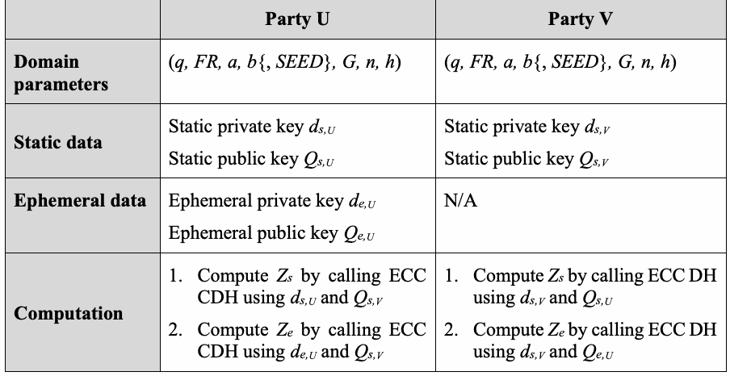
| 当事者U | 当事者V | |
| ドメイン | (q, FR, a, b{, SEED}, G, n, h) | (q, FR, a, b{, SEED}, G, n, h) |
| パラメータ | ||
| 静的データ | 静的秘密鍵 d s,U 静的公開鍵 Q s,U | 静的秘密鍵 d s,V 静的公開鍵 Q s,V |
| エフェメラルデータ | エフェメラル秘密鍵 d e,U エフェメラル公開鍵 Q e,U | 該当なし |
| 計算 | 1. ECC CDHを用いてZₛを計算： d and Q s,U s,V 2. ECC CDHを用いてZₑを計算： d and Q e,U s,V | 1. 計算 Z by calling ECC DH s を用いて d and Q s,V s,U 2. Compute Z by calling ECC DH e を用いて d and Q s,V e,U |
| Party U | Party V | |
| 3. Compute Z = Z || Z e s | 3. Compute Z = Z || Z e s | |
| Derive secret keying material | 1. Compute DerivedKeyingMaterial 2. Destroy Z | 1. Compute DerivedKeyingMaterial 2. Destroy Z |
原本PDFの抜粋画像
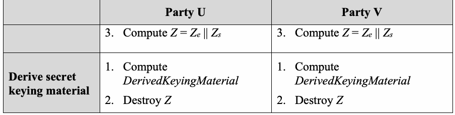
| 当事者U | 当事者V | |
| 3. Z = Zを計算： || Z e s | 3. Z = Zを計算： || Z e s | |
| 秘密鍵素材の導出 | 1. DerivedKeyingMaterialを計算 2. Zを破棄 | 1. DerivedKeyingMaterialを計算 2. Zを破棄 |
原本PDFの抜粋画像
6.2.1.3 MQV1, C(1e, 2s, FFC MQV) Scheme
6.2.1.3 MQV1、C(1e, 2s, FFC MQV)スキーム
未レビュー訳This section describes the MQV1 scheme. Assurance of secure key establishment using this
この節ではMQV1スキームを説明する。このスキームで安全な鍵確立を保証できるのは
未レビュー訳scheme can only be obtained when the assumptions in Section 6.2.1 are true. In particular, it
Section 6.2.1の前提条件が満たされる場合に限られる。特に、
未レビュー訳is assumed that party U has obtained the static public key yV of party V, and party V has
当事者Uは当事者Vの静的公開鍵yVを取得しており、当事者Vは
未レビュー訳obtained the static public key y
当事者Uの静的公開鍵y
未レビュー訳of party U. U
Uを取得していると仮定する。
未レビュー訳In this scheme, each party has different actions, which are presented separately below.
このスキームでは各当事者の動作が異なるため、以下に別々に示す。
未レビュー訳However, note that parties U and V must use identical orderings of the bit strings that are
ただし、当事者UとVは鍵導出方式に入力するビット列の順序を
未レビュー訳input to the key-derivation method.
同一にしなければならない。
未レビュー訳Party U shall execute the following actions in order to a) establish a shared secret value Z
当事者Uは、a) 共有秘密値Zを確立し、
未レビュー訳with party V, and b) derive secret keying material from Z.
当事者Vとの間で、b) Zから秘密鍵素材を導出するため、次の動作を実行しなければならない。
未レビュー訳Actions: Party U generates a shared secret and derives secret keying material as follows:
動作：当事者Uは次のように共有秘密を生成し、秘密鍵素材を導出する。
未レビュー訳1.Generate an ephemeral key pair (r t ) from the domain parameters D as specified in U, U
1.ドメインパラメータDからSection 5.6.1.1に従ってエフェメラル鍵ペア(rU, tU)を生成する。
未レビュー訳Section 5.6.1.1. Send the public key t
Section 5.6.1.1に従い、公開鍵t
未レビュー訳to V. U
Uを当事者Vに送信する。
未レビュー訳2.Use the MQV1 form of the FFC MQV primitive in Section 5.7.2.1.2 to derive a
2.Section 5.7.2.1.2のFFC MQVプリミティブのMQV1形式を用いて、
未レビュー訳shared secret Z from the set of domain parameters D, party U’s static private key x ,
ドメインパラメータ集合D、当事者Uの静的秘密鍵xU、
未レビュー訳U
未レビュー訳party V’s static public key y
当事者Vの静的公開鍵yV
未レビュー訳, party U’s ephemeral private key r
、当事者Uのエフェメラル秘密鍵rU
未レビュー訳, party U’s
、当事者Uの
未レビュー訳エフェメラル秘密鍵
未レビュー訳rU
未レビュー訳ephemeral public key t
と公開鍵tU
未レビュー訳, and (for a second time) party V’s static public key y
、さらに（2回目として）当事者Vの静的公開鍵yV
未レビュー訳. If the
から共有秘密Zを導出する。
未レビュー訳yU
未レビュー訳yV
未レビュー訳call to the FFC MQV primitive outputs an error indicator, destroy the ephemeral
FFC MQVプリミティブがエラー標識を出力した場合、エフェメラル
未レビュー訳private key r
秘密鍵r
未レビュー訳, and destroy the results of all intermediate calculations used in the
Uを破棄し、
未レビュー訳rU
未レビュー訳attempted computation of Z; then output an error indicator, and exit this process
計算試行で使用したすべての中間計算結果を破棄する。その後エラー標識を出力し、
未レビュー訳without performing the remaining actions.
残りの動作を実行せずにこのプロセスを終了する。
未レビュー訳3.Use the agreed-upon key-derivation method to derive secret keying material with the
3.合意済みの鍵導出方式を用いて、
未レビュー訳specified length from the shared secret value Z and other input (see Section 5.8). If
共有秘密値Zおよびその他の入力から指定された長さの秘密鍵素材を導出する（Section 5.8参照）。
未レビュー訳the key-derivation method outputs an error indicator, destroy all copies of Z and the
鍵導出方式がエラー標識を出力した場合、Zのすべての複製と
未レビュー訳ephemeral private key rU; then output an error indicator, and exit this process without
エフェメラル秘密鍵rUを破棄し、エラー標識を出力して残りの動作を実行せずに
未レビュー訳performing the remaining actions.
残りの動作を実行する。
未レビュー訳4.Destroy r and all copies of the shared secret Z. U
4.rUおよび共有秘密Zのすべての複製を破棄する。
未レビュー訳5.Output the derived keying material.
5.導出した鍵素材を出力する。
未レビュー訳Output: The derived keying material or an error indicator.
出力：導出された鍵素材またはエラー標識。
未レビュー訳Party V shall execute the following actions to a) establish a shared secret value Z with party U, and b) derive secret keying material from Z.
当事者Vは、a) 当事者Uとの共有秘密値Zを確立し、b) Zから秘密鍵素材を導出するため、以下の動作を実行しなければならない。
未レビュー訳Actions: Party V derives secret keying material as follows:
動作：当事者Vは次のように秘密鍵素材を導出する。
1.Receive an ephemeral public key t (purportedly) from party U. If t is not received, U U then output an error indicator, and exit this process without performing the remaining actions.
1.当事者Uからエフェメラル公開鍵tU（とされるもの）を受信する。tUが受信されなかった場合、エラー標識を出力して残りの動作を実行せずにこのプロセスを終了する。
未レビュー訳2.Verify that t is a valid ephemeral public key for the parameters D as specified in U Section 5.6.2.3. If assurance of public key validity cannot be obtained, then output an error indicator, and exit without performing the remaining actions.
2.Section 5.6.2.3に従ってtUがパラメータDに対する有効なエフェメラル公開鍵であることを検証する。公開鍵の有効性保証を得られない場合、エラー標識を出力して残りの動作を実行せずに終了する。
未レビュー訳3.Use the MQV1 form of the FFC MQV primitive in Section 5.7.2.1.2 to derive a shared secret Z from the set of domain parameters D, party V’s static private key x , V party U’s static public key y , party V’s static private key x (for a second time), party U V
3.Section 5.7.2.1.2のFFC MQVプリミティブのMQV1形式を用いて、ドメインパラメータ集合D、当事者Vの静的秘密鍵xV、当事者Uの静的公開鍵yU、当事者Vの静的秘密鍵xV（2回目）、当事者U
未レビュー訳V’s static public key y , and party U’s ephemeral public key t If the call to the FFC
の静的公開鍵yU、および当事者Uのエフェメラル公開鍵tUから共有秘密Zを導出する。FFC
未レビュー訳MQVプリミティブ
未レビュー訳がエラー標識を出力した場合、
未レビュー訳MQV primitive outputs an error indicator, destroy the results of all intermediate
計算試行で使用したすべての中間
未レビュー訳calculations used in the attempted computation of Z; then output an error indicator,
計算結果を破棄する。続いてエラー標識を出力し、
未レビュー訳and exit this process without performing the remaining actions.
残りの動作を実行せずにこのプロセスを終了する。
未レビュー訳4.Use the agreed-upon key-derivation method to derive secret keying material with the
4.合意済みの鍵導出方式を用いて、
未レビュー訳specified length from the shared secret value Z and other input (see Section 5.8). If
共有秘密値Zおよびその他の入力から指定された長さの秘密鍵素材を導出する（Section 5.8参照）。
未レビュー訳the key-derivation method outputs an error indicator, destroy all copies of Z; then
鍵導出方式がエラー標識を出力した場合、Zのすべての複製を破棄し、
未レビュー訳output an error indicator, and exit this process without performing the remaining
エラー標識を出力して、残りの
未レビュー訳action.
動作を実行せずにこのプロセスを終了する。
未レビュー訳5.Destroy all copies of the shared secret Z and output DerivedKeyingMaterial.
5.共有秘密Zのすべての複製を破棄し、DerivedKeyingMaterialを出力する。
Output: The bit string DerivedKeyingMaterial of length L bits or an error indicator.
出力：長さLビットのビット列DerivedKeyingMaterial、またはエラー標識。
Note: Key confirmation can be incorporated into this scheme. See Section 6.2.1.5 for
注：このスキームには鍵確認を組み込むことができる。詳細はSection 6.2.1.5を
未レビュー訳details.
参照。
未レビュー訳MQV1 is summarized in Table 17.
MQV1を表17に要約する。
Table 17: MQV1 key-agreement scheme summary.
表17：MQV1鍵共有スキームの要約
未レビュー訳| Party U | Party V | |
| Domain | (p, q, g{, SEED, counter}) | (p, q, g{, SEED, counter}) |
| parameters | ||
| Static data | Static private key x U Static public key y U | Static private key x V Static public key y V |
| Ephemeral data | Ephemeral private key r U Ephemeral public key t U | N/A |
| Computation | C Compute Z by calling FFC MQV using x , y , r , t , and y (again) U V U U V | Compute Z by calling FFC MQV using x , y , x (again), y , and t V U V V U |
原本PDFの抜粋画像
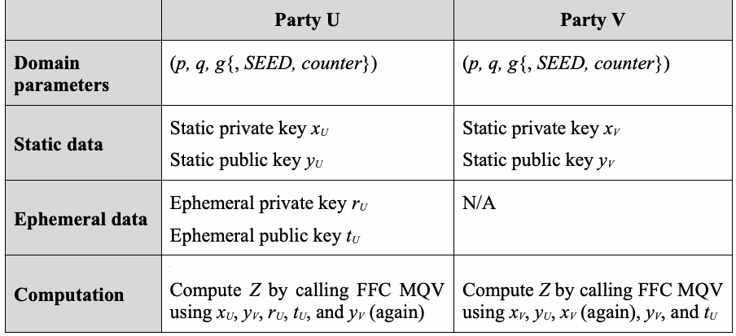
| 当事者U | 当事者V | |
| ドメイン | (p, q, g{, SEED, counter}) | (p, q, g{, SEED, counter}) |
| パラメータ | ||
| 静的データ | 静的秘密鍵 x U 静的公開鍵 y U | 静的秘密鍵 x V 静的公開鍵 y V |
| エフェメラルデータ | エフェメラル秘密鍵 r U エフェメラル公開鍵 t U | 該当なし |
| 計算 | C FFC MQVを用いてZを計算： x , y , r , t , and y (再度) U V U U V | FFC MQVを用いてZを計算： x , y , x (再度), y , and t V U V V U |
| Derive secret keying material | 1. Compute DerivedKeyingMaterial 2. Destroy Z | 1. Compute DerivedKeyingMaterial 2. Destroy Z |
原本PDFの抜粋画像
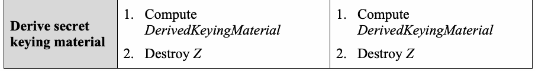
| Derive secret keying material | 1. Compute DerivedKeyingMaterial 2. Destroy Z | 1. Compute DerivedKeyingMaterial 2. Destroy Z |
原本PDFの抜粋画像

6.2.1.4 One-Pass MQV, C(1e, 2s, ECC MQV) Scheme
6.2.1.4 One-Pass MQV、C(1e, 2s, ECC MQV)スキーム
未レビュー訳This section describes the One-Pass MQV scheme. Assurance of secure key establishment using this scheme can only be obtained when the assumptions in Section 6.2.1 are true. In particular, it is assumed that party U has obtained the static public key Q of party V, and
この節ではOne-Pass MQVスキームを説明する。このスキームで安全な鍵確立を保証できるのは、Section 6.2.1の前提条件が満たされる場合に限られる。特に、当事者Uは当事者Vの静的公開鍵Qₛ,Vを取得しており、
未レビュー訳s,V
s,V
未レビュー訳party V has obtained the static public key Q of party U.
当事者Vは当事者Uの静的公開鍵Qₛ,Uを取得していると仮定する。
未レビュー訳s,U
s,U
未レビュー訳In this scheme, each party has different actions, which are presented separately below.
このスキームでは各当事者の動作が異なるため、以下に別々に示す。
未レビュー訳However, note that party U and party V must use identical orderings of the bit strings that
ただし、当事者UとVは鍵導出方式に入力するビット列の順序を同一に
未レビュー訳are input to the key-derivation method.
しなければならないことに注意する。
未レビュー訳Party U shall execute the following actions to a) establish a shared secret value Z with party
当事者Uは、a) 当事者Vとの共有秘密値Zを確立し、
未レビュー訳V, and b) derive secret keying material from Z.
b) Zから秘密鍵素材を導出するため、以下の動作を実行しなければならない。
未レビュー訳Actions: Party U generates a shared secret and derives secret keying material as follows:
動作：当事者Uは次のように共有秘密を生成し、秘密鍵素材を導出する。
未レビュー訳1. G
1. エフェメラル鍵ペアを
未レビュー訳e n e ra t e an e
生成する。
未レビュー訳p h e m er a l k e
エフェメラル
未レビュー訳y p a ir ( d
鍵ペア(dₑ,U, Qₑ,U)
未レビュー訳Q
未レビュー訳U)
U)
未レビュー訳f ro m t h e d
ドメインパラメータ
未レビュー訳om ain parameters D as specified
Dから
未レビュー訳, e,U e,
, e,U e,
未レビュー訳Section
未レビュー訳5.6.1.2
未レビュー訳e c ti o n 5. 6 .1 .
に
未レビュー訳従う。
未レビュー訳. S
公開鍵
未レビュー訳e n d t h e p u b
Qₑ,Uを
未レビュー訳li c k e y
当事者V
未レビュー訳に送信する。
未レビュー訳to p a r ty
当事者
未レビュー訳V
未レビュー訳へ。
未レビュー訳e, U
e, U
未レビュー訳2.Use the One-Pass MQV form of the ECC MQV primitive in Section 5.7.2.3.2 to
2.Section 5.7.2.3.2のECC MQVプリミティブのOne-Pass MQV形式を用いて、
未レビュー訳derive a shared secret value Z from the set of domain parameters D, party U’s static
ドメインパラメータ集合D、当事者Uの静的秘密鍵dₛ,U、
未レビュー訳private key d , party V’s static public key Q , party U’s ephemeral private key d ,
当事者Vの静的公開鍵Qₛ,V、当事者Uのエフェメラル秘密鍵dₑ,U、
未レビュー訳s, U
s, U
未レビュー訳s ,V
s ,V
未レビュー訳e , U
e , U
未レビュー訳party U’s eph
当事者Uの
未レビュー訳e meral public key Q , and (fo
エフェメラル公開鍵Qₑ,U
未レビュー訳r a second time) party V’s static pub
および（2回目の）当事者Vの静的公開
未レビュー訳l i c
鍵
未レビュー訳e,U
e,U
未レビュー訳k ey
鍵
未レビュー訳Qₛ,V
未レビュー訳から共有秘密Zを導出する。
未レビュー訳この
未レビュー訳f t h e c a ll t o
呼び出しが
未レビュー訳the
ECC
未レビュー訳EC
EC
未レビュー訳C
未レビュー訳M
未レビュー訳Q
未レビュー訳V
未レビュー訳p r im i t ive o u
プリミティブがエラー
未レビュー訳t p ut s a n er ro
標識を出力
未レビュー訳r i nd i c a t o r,
した場合、
未レビュー訳d e s tr o y th e
当事者Uの
未レビュー訳s, V ep he m e r a l p r iv a te
エフェメラル秘密鍵
未レビュー訳k ey d ,
dₑ,U
未レビュー訳an d de str o y
を
未レビュー訳t h e re su l t s
破棄し、
未レビュー訳o f a ll in te r
計算
未レビュー訳m e d i a t e c a
試行において
未レビュー訳lc u l at io n s
使用した
未レビュー訳e,U
e,U
未レビュー訳used in the attempted computation of Z; then output an error indicator, and exit this
すべての中間計算結果を破棄する。続いてエラー標識を出力し、残りの動作を実行せずにこの
未レビュー訳process without performing the remaining actions.
プロセスを終了する。
未レビュー訳3.Use the agreed-upon key-derivation method to derive secret keying material with the
3.合意済みの鍵導出方式を用いて、
未レビュー訳specified length from the shared secret value Z and other input (see Section 5.8). If
共有秘密値Zおよびその他の入力から指定された長さの秘密鍵素材を導出する（Section 5.8参照）。
未レビュー訳the key-derivation method outputs an error indicator, destroy all copies of Z and the
鍵導出方式がエラー標識を出力した場合、Zのすべての複製と
未レビュー訳ephemeral private key d ; then output an error indicator, and exit this process
エフェメラル秘密鍵dₑ,Uを破棄し、エラー標識を出力してこのプロセスを終了する。
未レビュー訳e,U
dₑ,U
未レビュー訳without performing the remaining actions.
残りの動作を実行せずに。
未レビュー訳4.Destroy d and all copies of the shared secret Z.
4.dₑ,Uおよび共有秘密Zのすべての複製を破棄する。
未レビュー訳e,U
dₑ,U
未レビュー訳5.Output the derived keying material.
5.導出した鍵素材を出力する。
未レビュー訳Output: The derived keying material or an error indicator.
出力：導出された鍵素材またはエラー標識。
未レビュー訳Party V shall execute the following actions to a) establish a shared secret value Z with party U, and b) derive shared secret keying material from Z. Actions: Party V derives secret keying material as follows:
当事者Vは、a) 当事者Uとの共有秘密値Zを確立し、b) Zから秘密鍵素材を導出するため、次の動作を実行しなければならない。動作：当事者Vは秘密鍵素材を導出する。
未レビュー訳1.Receive an ephemeral public key Q (purportedly) from party U. If Q is not e,U e,U received, then output an error indicator, and exit this process without performing the remaining actions.
1.当事者Uからエフェメラル公開鍵Qₑ,U（とされるもの）を受信する。Qₑ,Uが受信されなかった場合、エラー標識を出力して残りの動作を実行せずにこのプロセスを終了する。
未レビュー訳2.Verify that Q is a valid ephemeral public key for the parameters D as specified in e,U Section 5.6.2.3.2 or 5.6.2.3.3. If assurance of public key validity cannot be obtained, then output an error indicator, and exit without performing the remaining actions.
2.Section 5.6.2.3.2または5.6.2.3.3に従って、Qₑ,UがパラメータDに対する有効なエフェメラル公開鍵であることを検証する。公開鍵の有効性保証を得られない場合、エラー標識を出力して残りの動作を実行せずに終了する。
未レビュー訳3.Use the One-Pass MQV form of the ECC MQV primitive in Section 5.7.2.3.2 to derive a shared secret value Z from the set of domain parameters D, party V’s static private key d , party U’s static public key Q , party V’s static private key d (for a s,V s,U s,V second time), party V’s static public key Q , and party U’s ephemeral public key s,V Q . If the call to the ECC MQV primitive outputs an error indicator, destroy the
3.Section 5.7.2.3.2のECC MQVプリミティブのOne-Pass MQV形式を用いて、ドメインパラメータ集合D、当事者Vの静的秘密鍵dₛ,V、当事者Uの静的公開鍵Qₛ,U、当事者Vの静的秘密鍵dₛ,V（2回目）、当事者Vの静的公開鍵Qₛ,V、および当事者Uのエフェメラル公開鍵Qₑ,Uから共有秘密Zを導出する。ECC MQVプリミティブがエラー標識を出力した場合、
未レビュー訳e,U
Qₑ,U
未レビュー訳results of all intermediate calculations used in the attempted computation of Z; then
計算試行で使用したすべての中間計算
未レビュー訳output an error indicator, and exit this process without performing the remaining
結果を破棄し、エラー標識を出力して残りの
未レビュー訳actions.
動作を実行せずにこのプロセスを終了する。
未レビュー訳4.Use the agreed-upon key-derivation method to derive secret keying material with the
4.合意済みの鍵導出方式を用いて、
未レビュー訳specified length from the shared secret value Z and other input (see Section 5.8). If
共有秘密値Zおよびその他の入力から指定された長さの秘密鍵素材を導出する（Section 5.8参照）。
未レビュー訳the key-derivation method outputs an error indicator, destroy all copies of Z; then
鍵導出方式がエラー標識を出力した場合、Zのすべての複製を破棄し、
未レビュー訳output an error indicator, and exit this process without performing the remaining
エラー標識を出力して残りの動作を実行せずにこのプロセスを終了する。
未レビュー訳action.
動作を実行せずに。
未レビュー訳5.Destroy all copies of the shared secret Z and output the derived keying material.
5.共有秘密Zのすべての複製を破棄し、導出した鍵素材を出力する。
未レビュー訳Output: The derived keying material or an error indicator.
出力：導出された鍵素材またはエラー標識。
未レビュー訳Note: Key confirmation can be incorporated into this scheme. See Section 6.2.1.5 for
注：このスキームには鍵確認を組み込むことができる。詳細はSection 6.2.1.5を
未レビュー訳details.
参照。
未レビュー訳The One-Pass MQV scheme is summarized in Table 18.
One-Pass MQVを表18に要約する。
未レビュー訳Table 18: One-pass MQV model key-agreement scheme summary
表18：One-Pass MQV鍵共有スキームの要約
未レビュー訳| Party U | Party V | |
| Domain | (q, FR, a, b{, SEED}, G, n, h) | (q, FR, a, b{, SEED}, G, n, h) |
| parameters | ||
| Static data | Static private key d s,U Static public key Q s,U | Static private key d s,V Static public key Q s,V |
| Ephemeral data | Ephemeral private key d e,U Ephemeral public key Q e,U | N/A |
| Computation | Compute Z by calling ECC MQV using d , Q , d , Q , and Q s,U s,V e,U e,U s,V (again) | Compute Z by calling ECC MQV using d s,V , Q s,U , d s,V (again), Q s,V , and Q e,U |
原本PDFの抜粋画像
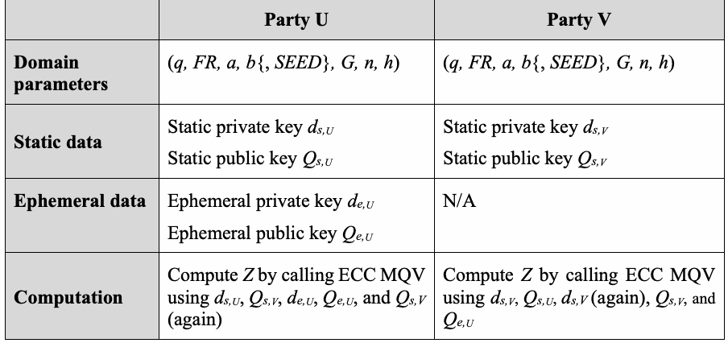
| 当事者U | 当事者V | |
| ドメイン | (q, FR, a, b{, SEED}, G, n, h) | (q, FR, a, b{, SEED}, G, n, h) |
| パラメータ | ||
| 静的データ | 静的秘密鍵 d s,U 静的公開鍵 Q s,U | 静的秘密鍵 d s,V 静的公開鍵 Q s,V |
| エフェメラルデータ | エフェメラル秘密鍵 d e,U エフェメラル公開鍵 Q e,U | 該当なし |
| 計算 | ECC MQVを用いてZを計算： d , Q , d , Q , and Q s,U s,V e,U e,U s,V (再度) | ECC MQVを用いてZを計算： d s,V , Q s,U , d s,V (再度), Q s,V , and Q e,U |
| Party U | Party V | |
| Derive secret Keying material | 1. Compute DerivedKeyingMaterial 2. Destroy Z | 1. Compute DerivedKeyingMaterial 2. Destroy Z |
原本PDFの抜粋画像
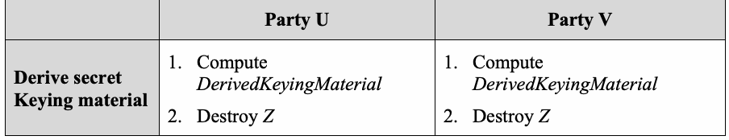
| 当事者U | 当事者V | |
| 秘密鍵素材の導出 | 1. DerivedKeyingMaterialを計算 2. Zを破棄 | 1. DerivedKeyingMaterialを計算 2. Zを破棄 |
原本PDFの抜粋画像

6.2.1.5 Incorporating Key Confirmation into a C(1e, 2s) Scheme
6.2.1.5 C(1e, 2s)スキームへの鍵確認の組み込み
未レビュー訳The subsections that follow illustrate how to incorporate key confirmation (as described in Section 5.9) into the C(1e, 2s) key-agreement schemes described above. Note that party V cannot act as a key-confirmation recipient unless a nonce (Nonce ) is provided by party V to
以下の各節では、前述のC(1e, 2s)鍵共有スキームに、Section 5.9で説明する鍵確認を組み込む方法を示す。なお、ノンス（Nonce_V）が当事者Vから
未レビュー訳V
未レビュー訳party U and is used (in addition to the shared secret Z) as input to the key-derivation method
当事者Uに提供され、スキームが使用する鍵導出方式への入力として（共有秘密Zに加えて）使用されない限り、当事者Vは鍵確認の受信者にはなれない。
未レビュー訳employed by the scheme. This would be accomplished by including (a copy of) Nonce in
これは、Nonce_V（の複製）を
未レビュー訳V
未レビュー訳the OtherInput provided to the KDM, as part of the FixedInfo (see Section 5.8), in addition
FixedInfoの一部としてKDMに与えるOtherInputに含めることで実現できる（Section 5.8参照）。さらに
未レビュー訳to using (a copy of) Nonce
Nonce_V（の複製）を
未レビュー訳as the EphemData
EphemDataとして使用し、
未レビュー訳employed in the MacTag computations for
MacTagの計算に
未レビュー訳V
未レビュー訳Nonce_Vを
未レビュー訳key confirmation.
鍵確認
未レビュー訳The flow depictions separate the key-establishment flow from the key-confirmation flow.
フロー図では鍵確立の流れと鍵確認の流れを分けている。
未レビュー訳The depictions and accompanying discussions presume that the assumptions of the scheme
図と付随する説明は、スキームの前提条件が
未レビュー訳have been satisfied, that the key-agreement transaction has proceeded successfully through
満たされ、鍵共有トランザクションが鍵導出まで正常に進み、
未レビュー訳key derivation, and that the received MacTags are successfully verified as specified in
受信したMacTagがSection 5.2.2に従って正常に検証される
未レビュー訳Section 5.2.2.
ことを前提としている。
未レビュー訳6.2.1.5.1 C(1e, 2s) Scheme with Unilateral Key Confirmation Provided by Party U to
6.2.1.5.1 当事者Uから当事者Vへの一方向鍵確認を伴うC(1e, 2s)スキーム
未レビュー訳Party V
当事者V
未レビュー訳Figure_9 depicts a typical flow for a C(1e, 2s) scheme with unilateral key confirmation from
図9は、当事者Uから当事者Vへの一方向鍵確認を伴うC(1e, 2s)スキームの典型的なフローを示す。
未レビュー訳party U to party V. In this situation, party U and party V assume the roles of key-confirmation
この場合、当事者UとVはそれぞれ鍵確認
未レビュー訳provider and recipient, respectively. Since party V does not contribute an ephemeral public
提供者と受信者の役割を担う。当事者Vは鍵共有プロセス中にエフェメラル公開
未レビュー訳key during the key-agreement process, a nonce (Nonce ) shall be provided by party V to
鍵を提供しないため、ノンス（Nonce_V）を当事者Vから当事者Uに提供
未レビュー訳V
未レビュー訳party U and used (in addition to the shared secret Z) as input to the key-derivation method
し、スキームで使用する鍵導出方式への入力（共有秘密Zに加えて）として
未レビュー訳employed by the scheme. Nonce is also used as EphemData during MacTag computations.
用いなければならない。Nonce_VはMacTagの計算時にEphemDataとしても使用する。
未レビュー訳V
未レビュー訳V
未レビュー訳The successful completion of the key-confirmation process provides party V with assurance
鍵確認プロセスが正常に完了すると、当事者Vは
未レビュー訳that party U has derived the same secret Z value. If Nonce is a random nonce, then party V
当事者Uが同じ秘密値Zを導出した保証を得る。Nonce_Vがランダムノンスなら、当事者Vは
未レビュー訳V
未レビュー訳also obtains assurance that party U has actively participated in the process; see Section 5.4
当事者Uがプロセスに能動的に参加したことの保証も得る。ノンスに必要な長さとセキュリティ強度についてはSection 5.4を参照。
未レビュー訳for a discussion of the length and security strength required for the nonce.
ノンスに必要な長さとセキュリティ強度に関する議論についてはSection 5.4を参照。
未レビュー訳U
未レビュー訳V
未レビュー訳当事者UからVへの一方向鍵確認フロー
U’s Static Public Key
Uの静的公開鍵
未レビュー訳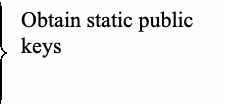
UとVの静的公開鍵取得フロー
Obtain static public keys
静的公開鍵を取得
未レビュー訳Vの静的公開鍵をUに配布
V’s Static Public Key
Vの静的公開鍵
未レビュー訳Uのエフェメラル公開鍵送信
U’s Ephemeral Public Key
Uのエフェメラル公開鍵
未レビュー訳U sends an ephemeral public key
Uはエフェメラル公開鍵を送信する
未レビュー訳VからUへのノンス送信
NonceV
Nonce_V
未レビュー訳V sends a nonce
Vはノンスを送信する
未レビュー訳UからVへのMacTag送信
MacTag U
MacTag_U
未レビュー訳U’s key
Uの鍵
未レビュー訳confirmation
確認
未レビュー訳Figure 9: C(1e, 2s) scheme with unilateral key confirmation from party U to party V
図9：当事者Uから当事者Vへの一方向鍵確認を伴うC(1e, 2s)スキーム
未レビュー訳To provide (and receive) key confirmation (as described in Section 5.9.1), party U (and party
Section 5.9.1で説明する鍵確認を提供（および受信）するため、当事者U（および当事者
未レビュー訳V) set
V）は次のように設定する。
未レビュー訳EphemData
EphemData
未レビュー訳= EphemPubKey
= EphemPubKey
未レビュー訳, and EphemData
、EphemData
未レビュー訳= Nonce .
= Nonce_V。
未レビュー訳U
未レビュー訳U
未レビュー訳V
未レビュー訳V
未レビュー訳Party U provides MacTag
当事者UはMacTag
未レビュー訳to party V (as specified in Section 5.9.1, with P = U and R = V), U
_UをSection 5.9.1に規定するとおり（P = U、R = Vとして）当事者Vに提供する。
未レビュー訳where MacTag
MacTag_U
未レビュー訳is computed (as specified in Section 5.2.1) using
はSection 5.2.1に規定するとおり、次を用いて計算する。
未レビュー訳U
未レビュー訳MacData = “KC_1_U” || ID || ID || EphemPubKey || Nonce {|| Text }.
MacData = “KC_1_U” || ID_U || ID_V || EphemPubKey_U || Nonce_V {|| Text_U}.
未レビュー訳U
未レビュー訳U V
U、V
未レビュー訳U
未レビュー訳V U
V、U
未レビュー訳Party V (the key-confirmation recipient) uses the same format for MacData to compute its
当事者V（鍵確認の受信者）はMacDataに同じ形式を使用して
未レビュー訳U
未レビュー訳own version of MacTag and then verifies that the newly computed MacTag matches the
MacTag_Uの自身の値を計算し、新たに計算したMacTagが
未レビュー訳U
未レビュー訳value provided by party U.
当事者Uから提供された値と一致することを検証する。
未レビュー訳Party U shall destroy its copy of MacKey immediately after computing MacTag . Party V
当事者UはMacTag_Uを計算した直後にMacKeyの複製を破棄しなければならない。当事者Vは
未レビュー訳U
未レビュー訳shall immediately destroy its copy of MacKey after determining whether or not the received
受信値と新たに計算したMacTagが一致するかどうかを判定した後、直ちにMacKeyの複製を破棄しなければならない。
未レビュー訳and newly computed MacTag values match. If they do not match, then party V shall also
一致しない場合、当事者Vはさらに
未レビュー訳U
未レビュー訳destroy the KeyData portion of the DerivedKeyingMaterial (see Section 5.9.1) and notify party U that MacTag could not be verified. In this case, party U shall also destroy the
DerivedKeyingMaterialのKeyData部分（Section 5.9.1参照）を破棄し、MacTagを検証できなかったことを当事者Uに通知しなければならない。この場合、当事者Uも
未レビュー訳U KeyData portion of the DerivedKeyingMaterial.
DerivedKeyingMaterialのKeyData部分を破棄しなければならない。
未レビュー訳6.2.1.5.2 C(1e, 2s) Scheme with Unilateral Key Confirmation Provided by Party V to
6.2.1.5.2 当事者Vから当事者Uへの一方向鍵確認を伴うC(1e, 2s)スキーム
未レビュー訳Party U
当事者U
未レビュー訳Figure_10 depicts a typical flow for a C(1e, 2s) scheme with unilateral key confirmation from party V to party U. In this scenario, party V and party U assume the roles of key-confirmation provider and recipient, respectively. The successful completion of the key-confirmation process provides party U with a) assurance that party V has derived the same secret Z value, and b) assurance that party V has actively participated in the process.
図10は、当事者Vから当事者Uへの一方向鍵確認を伴うC(1e, 2s)スキームの典型的なフローを示す。この場合、当事者VとUはそれぞれ鍵確認提供者および受信者の役割を担う。鍵確認プロセスが正常に完了すると、当事者Uは、a) 当事者Vが同じ秘密値Zを導出したこと、およびb) 当事者Vがプロセスに能動的に参加したことの保証を得る。
未レビュー訳U
未レビュー訳V
未レビュー訳当事者VからUへの一方向鍵確認フロー
U’s Static Public Key
Uの静的公開鍵
未レビュー訳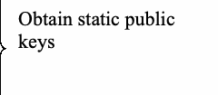
静的公開鍵の取得フロー
Obtain static public
静的公開鍵を取得
未レビュー訳keys
鍵
未レビュー訳Vの静的公開鍵をUに配布
V’s Static Public Key
Vの静的公開鍵
未レビュー訳Uのエフェメラル公開鍵を送信
U sends an ephemeral
Uはエフェメラル
未レビュー訳U’s Ephemeral Public Key
Uのエフェメラル公開鍵
未レビュー訳public key
公開鍵を送信する
未レビュー訳VからUに送られるMacTag
MacTag
MacTag
未レビュー訳V
未レビュー訳V’s key-
Vの鍵
未レビュー訳confirmation
確認
未レビュー訳Figure 10: C(1e, 2s) scheme with unilateral key confirmation from party V to party U
図10：当事者Vから当事者Uへの一方向鍵確認を伴うC(1e, 2s)スキーム
未レビュー訳To provide (and receive) key confirmation (as described in Section 5.9.1), both parties set
鍵確認を提供（および受信）するため、両当事者は次のように設定する。
未レビュー訳EphemData = Null, and EphemData = EphemPubKey .
EphemData = Null、およびEphemData = EphemPubKey_U。
未レビュー訳V
未レビュー訳U
未レビュー訳U
未レビュー訳Party V provides MacTag to party U (as specified in Section 5.9.1, with P = V and R = U),
当事者VはSection 5.9.1に規定するとおり（P = V、R = Uとして）、MacTag_Vを当事者Uに提供する。
未レビュー訳V
未レビュー訳where MacTag is computed (as specified in Section 5.2.1) using
MacTag_VはSection 5.2.1に規定するとおり、次を用いて計算する。
未レビュー訳V
未レビュー訳MacData
MacData
未レビュー訳= “KC_1_V” || ID
= “KC_1_V” || ID
未レビュー訳|| ID
|| ID
未レビュー訳|| Null || EphemPubKey
|| Null || EphemPubKey
未レビュー訳{|| Text }.
{|| Text_V}。
未レビュー訳V
未レビュー訳V U
V、U
未レビュー訳U
未レビュー訳V
未レビュー訳Party U (the key-confirmation recipient) uses the same format for MacData to compute its
当事者U（鍵確認の受信者）はMacDataに同じ形式を使用して、
未レビュー訳V
未レビュー訳own version of MacTag , and then verifies that the newly computed MacTag matches the
MacTag_Vの自身の値を計算し、新たに計算したMacTagが
未レビュー訳V
未レビュー訳value provided by party V.
当事者Vから提供された値と一致することを検証する。
未レビュー訳Party V shall destroy its copy of MacKey immediately after computing MacTag . Party U
当事者VはMacTag_Vを計算した直後にMacKeyの複製を破棄しなければならない。当事者Uは
未レビュー訳V
未レビュー訳shall immediately destroy its copy of MacKey after determining whether or not the received and newly computed MacTag values match. If they do not match, then party U shall also
受信した値と新たに計算したMacTagの一致を判定した後、直ちにMacKeyの複製を破棄しなければならない。一致しない場合、当事者Uはさらに
未レビュー訳V
未レビュー訳destroy the KeyData portion of the DerivedKeyingMaterial (see Section 5.9.1) and notify party V that MacTag could not be verified. In this case, party V shall also destroy the
DerivedKeyingMaterialのKeyData部分（Section 5.9.1参照）を破棄し、MacTagを検証できなかったことを当事者Vに通知しなければならない。この場合、当事者Vも
未レビュー訳V KeyData portion of the DerivedKeyingMaterial.
DerivedKeyingMaterialのKeyData部分を破棄しなければならない。
未レビュー訳6.2.1.5.3 C(1e, 2s) Scheme with Bilateral Key Confirmation
6.2.1.5.3 双方向鍵確認を伴うC(1e, 2s)スキーム
未レビュー訳Figure_11 depicts a typical flow for a C(1e, 2s) scheme with bilateral key confirmation. In this method, party U and party V assume the roles of both the provider and the recipient to obtain bilateral key confirmation. Since party V does not contribute an ephemeral public key during the key-agreement process, a nonce (Nonce ) shall be provided by party V to party U V and used (in addition to the shared secret Z) as input to the key-derivation method employed by the scheme. Nonce is also used as the EphemData during MacTag computations. The
図11は双方向鍵確認を伴うC(1e, 2s)スキームの典型的なフローを示す。この方式では、当事者UとVが提供者および受信者の両方の役割を担い、双方向鍵確認を実現する。当事者Vは鍵共有プロセス中にエフェメラル公開鍵を提供しないため、ノンス（Nonce_V）を当事者Vから当事者Uに提供し、スキームが用いる鍵導出方式への入力（共有秘密Zに加えて）として使用する。Nonce_VはMacTagの計算時にEphemDataとしても使用する。
未レビュー訳V
未レビュー訳V
未レビュー訳successful completion of the key-confirmation process provides each party with assurance that the other party has derived the same secret Z value. Party U obtains assurance that party V has actively participated in the process; if Nonce is a random nonce, then party V also
鍵確認プロセスが正常に完了すると、各当事者は相手方が同じ秘密値Zを導出した保証を得る。当事者Uは当事者Vがプロセスに能動的に参加した保証を得る。Nonce_Vがランダムノンスである場合、当事者Vも当事者Uが能動的に参加した保証を得る。
未レビュー訳Nonce_V
未レビュー訳obtains assurance that party U has actively participated in the process; see Section 5.4 for a discussion of the length and security strength required for the nonce.
ノンスに必要な長さおよびセキュリティ強度についてはSection 5.4を参照。
未レビュー訳U
未レビュー訳V
未レビュー訳U’s Static Public Key
Uの静的公開鍵
未レビュー訳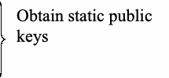
静的公開鍵の取得と鍵確認を含む双方向フロー
Obtain static public
静的公開鍵を取得
未レビュー訳keys
鍵
未レビュー訳V’s Static Public Key
Vの静的公開鍵
未レビュー訳U sends an ephemeral
Uはエフェメラル
未レビュー訳U’s Ephemeral Public Key
Uのエフェメラル公開鍵
未レビュー訳public key
公開鍵を送信する
未レビュー訳当事者UからVへのエフェメラル公開鍵送信
Nonce
Nonce_V
未レビュー訳, MacTag V V
、MacTag_V
未レビュー訳V’s key confirmation
Vのノンス付き鍵確認
未レビュー訳with a nonce
ノンスを伴う
未レビュー訳MacTag U
MacTag_U
未レビュー訳U’s key confirmation
Uの鍵確認
未レビュー訳Figure 11: C(1e, 2s) scheme with bilateral key confirmation
図11：双方向鍵確認を伴うC(1e, 2s)スキーム
未レビュー訳To provide bilateral key confirmation (as described in Section 5.9.2), party U and party V
双方向鍵確認を提供するため（Section 5.9.2参照）、当事者UとVは
未レビュー訳exchange and verify MacTags that have been computed (as specified in Sections 5.2.1) using
Section 5.2.1に従って計算したMacTagを交換し、次を用いて検証する。
未レビュー訳EphemData = EphemPubKey and EphemData = Nonce .
EphemData = EphemPubKey_U、およびEphemData = Nonce_V。
未レビュー訳U
未レビュー訳U
未レビュー訳V
未レビュー訳V
未レビュー訳Party V provides MacTagV to party U (as specified in Sections 5.9.1 and 5.9.2, with P = V
当事者VはSection 5.9.1および5.9.2に従い（P = V
未レビュー訳and R = U); MacTag is computed by party V (and verified by U) using
、R = Uとして）、MacTag_Vを当事者Uに提供する。MacTag_Vは当事者Vが計算し、当事者Uが検証する。計算には
未レビュー訳V
未レビュー訳MacData = “KC_2_V” || ID || ID || Nonce || EphemPubKey {|| Text }.
MacData = “KC_2_V” || ID_V || ID_U || Nonce_V || EphemPubKey_U {|| Text_V}.
未レビュー訳V
未レビュー訳V U
V、U
未レビュー訳V
未レビュー訳U V
U、V
未レビュー訳Party U provides MacTag to party V (as specified in Sections 5.9.1 and 5.9.2, with P = U
当事者UはSection 5.9.1および5.9.2に従い（P = U
未レビュー訳U
未レビュー訳and R = V); MacTag is computed by party U (and verified by party V) using
、R = Vとして）、MacTag_Uを当事者Uが計算し、当事者Vが検証する。計算には
未レビュー訳U
未レビュー訳MacData = “KC_2_U” || ID || ID || EphemPubKey || Nonce {|| Text }.
MacData = “KC_2_U” || ID_U || ID_V || EphemPubKey_U || Nonce_V {|| Text_U}.
未レビュー訳U
未レビュー訳U V
U、V
未レビュー訳U
未レビュー訳V U
V、U
未レビュー訳Note that in Figure_11 party V’s nonce (Nonce ) and the MacTag (MacTag ) are depicted as V
図11では当事者Vのノンス（Nonce_V）とMacTag_Vが、
未レビュー訳V
未レビュー訳being sent in the same message (to reduce the number of passes in the combined key-agreement/key-confirmation process). They may also be sent separately (as long as Nonce
（鍵共有／鍵確認を組み合わせたプロセスのパス数を減らすため）同一メッセージで送信されるものとして示されている。Nonce_Vが
未レビュー訳V
未レビュー訳is sent before the MacTags are exchanged). The MacTag and MacTag can be sent in any
MacTagの交換より前に送信される限り、別々に送信してもよい。MacTag_VとMacTag_Uは任意の
未レビュー訳V
未レビュー訳U
未レビュー訳order, as long as Nonce is available to generate and verify both MAC tags.
順序で送信できる。ただし、両方のMACタグの生成および検証時にNonce_Vが使用可能であること。
未レビュー訳V
未レビュー訳Each party shall destroy its copy of MacKey immediately after 1) using it to generate a MAC tag to be sent to the other party and 2) determining whether or not the MAC tag received from the other party matches the MAC tag that it computed. However, if either party is not able to verify the received MAC tag, that party shall also destroy the KeyData portion of the DerivedKeyingMaterial (see Section 5.9.1) and notify the other party of the failure. In this case, the other party shall destroy both the MacKey (if it has not already done so) as well as
各当事者は、1) 相手方に送信するMACタグの生成にMacKeyを使用した後、および2) 受信MACタグが自身の計算したタグと一致するかを判定した後、直ちにMacKeyの複製を破棄しなければならない。受信したMACタグを検証できない当事者は、さらにDerivedKeyingMaterialのKeyData部分（Section 5.9.1参照）を破棄し、失敗を相手方に通知しなければならない。この場合、相手方はさらにMacKey（未破棄の場合）と
未レビュー訳the KeyData portion of the DerivedKeyingMaterial.
DerivedKeyingMaterialのKeyData部分を破棄しなければならない。
未レビュー訳6.2.2 C(1e, 1s) Schemes
6.2.2 C(1e, 1s)スキーム
未レビュー訳For each of the C(1e, 1s) schemes, party U generates an ephemeral key pair, but uses no
各C(1e, 1s)スキームでは、当事者Uがエフェメラル鍵ペアを生成するが、静的鍵ペアは使用しない。
未レビュー訳static key pair; party V has only a static key pair. Party U obtains party V’s static public key
当事者Vは静的鍵ペアのみを持つ。当事者Uは当事者Vの静的公開鍵を
未レビュー訳in a trusted manner (for example, from a certificate signed by a trusted CA or directly from
信頼できる方法で取得し（例：信頼されたCAが署名した証明書、または信頼された当事者Vから直接取得）、
未レビュー訳party V, who is trusted) and sends its ephemeral public key to party V. The parties compute
自身のエフェメラル公開鍵を当事者Vに送信する。両当事者は
未レビュー訳a shared secret using their private keys and the other party’s public key. Each party uses the
自身の秘密鍵と相手方の公開鍵を用いて共有秘密を計算する。各当事者は
未レビュー訳shared secret to derive secret keying material (see Figure 12).
共有秘密を用いて秘密鍵素材を導出する（図12参照）。
未レビュー訳U
未レビュー訳V
未レビュー訳V’s Static Public Key
Vの静的公開鍵
未レビュー訳U obtains V’s static
UはVの静的
未レビュー訳public key
公開鍵を取得する
未レビュー訳Vの静的公開鍵をUが取得し、Uのエフェメラル鍵を送るフロー
U’s Ephemeral Public Key
Uのエフェメラル公開鍵
未レビュー訳U sends an ephemeral
Uはエフェメラル
未レビュー訳public key
公開鍵を送信する
未レビュー訳Figure 12: C(1e, 1s) schemes: party U contributes an ephemeral key pair, and party V
図12：C(1e, 1s)スキーム：当事者Uはエフェメラル鍵ペアを提供し、当事者Vは
未レビュー訳contributes a static key pair
静的鍵ペアを提供する
未レビュー訳Assumptions: In order to execute a C(1e, 1s) key-establishment scheme in compliance with this Recommendation, the following assumptions shall be true.
前提条件：この勧告に準拠してC(1e, 1s)鍵確立スキームを実行するには、以下の前提条件が満たされなければならない。
未レビュー訳1.Each party has an authentic copy of the same set of domain parameters, D. These parameters are either approved for use in the intended application (see Section 5.5.1). For FFC schemes, D = (p, q, g{, SEED, counter}); for ECC schemes, D = (q, FR, a, b{, SEED}, G, n, h). Furthermore, each party has obtained assurance of the validity of these domain parameters as specified in Section 5.5.2.
1.各当事者は同一のドメインパラメータ集合Dの真正な複製を持ち、意図された用途での使用が承認されている（Section 5.5.1参照）。FFCスキームではD = (p, q, g{, SEED, counter})、ECCスキームではD = (q, FR, a, b{, SEED}, G, n, h)である。さらに各当事者はSection 5.5.2に従ってこれらのドメインパラメータの有効性保証を得ている。
未レビュー訳2.Party V has been designated as the owner of a static key pair that was generated as specified in Section 5.6.1 using the set of domain parameters, D. For FFC schemes, the static key pair is (x, y); for ECC schemes, the static key pair is (d , Q ). Party V s s has obtained assurance of the validity of its own static public key as specified in Section 5.6.2.1. Party V has obtained assurance of its possession of the correct value of its own private key as specified in Section 5.6.2.1.5.
2.当事者Vは、ドメインパラメータ集合Dを用いてSection 5.6.1に従い生成された静的鍵ペアの所有者として指定されている。FFCスキームでは静的鍵ペアは(x, y)、ECCスキームでは(dₛ, Qₛ)である。当事者V
未レビュー訳3.The parties have agreed upon an approved key-derivation method, as well as an approved algorithm to be used with that method (e.g., a hash function) and other associated parameters to be used (see Section 5.8).
3.当事者は、承認済みの鍵導出方式、およびその方式で使用する承認済みアルゴリズム（例：ハッシュ関数）とその他の関連パラメータに合意している（Section 5.8参照）。
4.If key confirmation is used, the parties have also agreed upon an approved MAC and associated parameters, including the lengths of MacKey and MacTag (see Section
4.鍵確認を使用する場合、当事者はSection
未レビュー訳5.9.3).
5.9.3に従い、MacKeyおよびMacTagの長さを含む承認済みMACと関連パラメータにも合意している。
未レビュー訳5.Prior to or during the key-agreement process, party U receives party V’s static public
5.鍵共有プロセスの前または実行中に、当事者Uは当事者Vの静的公開
未レビュー訳key in a trusted manner (e.g., from a certificate signed by a trusted CA or directly
鍵を信頼できる方法で受信する（例：信頼されたCAが署名した証明書から、または
未レビュー訳from party V, who is trusted by the recipient). Party U has obtained assurance of the
受信者が信頼する当事者Vから直接受け取る）。当事者Uは
未レビュー訳validity of party V’s static public key as specified in Section 5.6.2.2.1.
Section 5.6.2.2.1に従って当事者Vの静的公開鍵の有効性保証を得ている。
未レビュー訳6.When an identifier is used to label either party during the key-agreement process,
6.鍵共有プロセス中にいずれかの当事者を識別する識別子を使う場合、
未レビュー訳both parties are aware of the identifier employed for that purpose. In particular, when
両当事者はその目的で使う識別子を認識している。特に、
未レビュー訳an identifier is used to label party V during the key-agreement process, that identifier
鍵共有プロセス中に当事者Vを識別する識別子を使用する場合、その識別子は
未レビュー訳has a trusted association to party V’s static public key. (In other words, whenever
当事者Vの静的公開鍵と信頼できる形で関連付けられている。言い換えると、
未レビュー訳both the identifier and static public key of one participant are employed in the key-
鍵共有プロセスで参加者の識別子と静的公開鍵の両方が使用される場合、
未レビュー訳agreement process, they are associated in a manner that is trusted by the other
これらは他方の参加者が信頼する方法で関連付けられている。
未レビュー訳participant.) When an identifier is used to label party U during the key-agreement
鍵共有プロセス中に当事者Uを識別する識別子を使用する場合、
未レビュー訳process, it has been selected/assigned in accordance with the requirements of the
その識別子は
未レビュー訳protocol relying upon the use of the key-agreement scheme.
鍵共有スキームの利用に依拠するプロトコルの要件に従って選択／割当てされている。
未レビュー訳The following is an assumption for using the derived keying material for purposes beyond
以下は、
未レビュー訳the C(1e,1s) scheme itself.
C(1e, 1s)スキーム自体を超える目的で導出した鍵素材を使用する際の前提条件である。
未レビュー訳Party U has obtained assurance that party V is (or was) in possession of the
当事者Uは、
未レビュー訳appropriate static private key, as specified in Section 5.6.2.2.3.
Section 5.6.2.2.3に規定するとおり、当事者Vが適切な静的秘密鍵を保有している（または保有していた）保証を得ている。
未レビュー訳6.2.2.1 dhOneFlow, C(1e, 1s, FFC DH) Scheme
6.2.2.1 dhOneFlow、C(1e, 1s, FFC DH)スキーム
This section describes the dhOneFlow scheme. Assurance of secure key establishment using
この節ではdhOneFlowスキームを説明する。このスキームを用いて安全な鍵確立を保証できるのは
未レビュー訳this scheme can only be obtained when the assumptions in Section 6.2.2 are true. In
Section 6.2.2の前提条件が満たされる場合に限られる。
未レビュー訳particular, it is assumed that party U has obtained the static public key yV of party V.
特に、当事者Uは当事者Vの静的公開鍵yVを取得していると仮定する。
未レビュー訳In this scheme, each party has different actions, which are presented separately below. However, note that parties U and V must use identical orderings of the bit strings that are input to the key-derivation method. Party U shall execute the following actions to a) establish a shared secret value Z with party V, and b) derive secret keying material from Z. Actions: Party U generates a shared secret and derives secret keying material as follows:
このスキームでは各当事者の動作が異なるため、以下に別々に示す。ただし、当事者UとVは鍵導出方式に入力するビット列の順序を同一にしなければならない。当事者Uは、a) 当事者Vとの共有秘密値Zを確立し、b) Zから秘密鍵素材を導出するため、以下の動作を実行しなければならない。動作：当事者Uは次のように共有秘密を生成し、鍵素材を導出する。
未レビュー訳1.Generate an ephemeral key pair (r t ) from the domain parameters D as specified in U, U Section 5.6.1.1. Send the public key t to party V. U
1.ドメインパラメータDからSection 5.6.1.1に従ってエフェメラル鍵ペア(rU, tU)を生成する。公開鍵tUを当事者Vに送信する。
未レビュー訳2.Use the FFC DH primitive in Section 5.7.1.1 to derive a shared secret Z from the set of domain parameters D, party U’s ephemeral private key r , and party V’s static U public key y . If the call to the FFC DH primitive outputs an error indicator, destroy V the ephemeral private key r , and destroy the results of all intermediate calculations U used in the attempted computation of Z; then output an error indicator, and exit this process without performing the remaining actions.
2.Section 5.7.1.1のFFC DHプリミティブを用い、ドメインパラメータ集合D、当事者Uのエフェメラル秘密鍵rU、および当事者Vの静的公開鍵yVから共有秘密Zを導出する。この呼び出しがエラー標識を出力した場合、エフェメラル秘密鍵rUと、計算試行で使用したすべての中間計算結果を破棄し、エラー標識を出力して残りの動作を実行せずに終了する。
未レビュー訳3.Use the agreed-upon key-derivation method to derive secret keying material with the specified length from the shared secret value Z and other input (see Section 5.8). If the key-derivation method outputs an error indicator, destroy all copies of Z and the
3.合意済みの鍵導出方式を用いて、共有秘密値Zおよびその他の入力から指定された長さの秘密鍵素材を導出する（Section 5.8参照）。鍵導出方式がエラー標識を出力した場合、Zのすべての複製と
未レビュー訳ephemeral private key r
エフェメラル秘密鍵rU
未レビュー訳; then output an error indicator, and exit this process without
を破棄し、エラー標識を出力してこのプロセスを終了する。
未レビュー訳rU
未レビュー訳performing the remaining actions.
残りの動作を実行せずに。
未レビュー訳4.Destroy r and all copies of the shared secret Z.
4.rUおよび共有秘密Zのすべての複製を破棄する。
未レビュー訳rU
未レビュー訳5.Output the derived keying material.
5.導出した鍵素材を出力する。
未レビュー訳Output: The derived keying material or an error indicator.
出力：導出された鍵素材またはエラー標識。
Party V shall execute the following actions to a) establish a shared secret value Z with party
当事者Vは、a) 当事者Uとの共有秘密値Zを確立し、
未レビュー訳U, and b) derive secret keying material from Z.
b) Zから秘密鍵素材を導出するため、以下の動作を実行しなければならない。
未レビュー訳Actions: Party V derives secret keying material as follows:
動作：当事者Vは次のように秘密鍵素材を導出する。
1.Receive an ephemeral public key t (purportedly) from party U. If t is not received,
1.当事者Uからエフェメラル公開鍵tU（とされるもの）を受信する。tUが受信されなかった場合、
未レビュー訳tU
未レビュー訳U
未レビュー訳then output an error indicator, and e
エラー標識を出力し、
未レビュー訳xit this process without performi
このプロセスを終了して残りの
未レビュー訳ng the remaining
動作を実行せずに
未レビュー訳actions.
終了する。
未レビュー訳2.Verify that t is a valid ephemeral public key for the parameters D as specified in
2.Section 5.6.2.3に従い、tUがパラメータDに対する有効なエフェメラル公開鍵であることを検証する。
未レビュー訳tU
未レビュー訳Section 5.6.2
Section 5.6.2
未レビュー訳.3. If assurance of public key validity cannot be obtained, then output an
.3に従う。公開鍵の有効性保証を得られない場合、エラー標識を出力して
未レビュー訳error indicator, and exit this process without performing the remaining actions.
残りの動作を実行せずにこのプロセスを終了する。
未レビュー訳3.Use the FFC DH primitive in Section 5.7.1.1 to derive a shared secret Z from the set
3.Section 5.7.1.1のFFC DHプリミティブを用いて、次から共有秘密Zを導出する：
未レビュー訳of domain parameters D, party V’s static private key xV, and party U’s ephemeral
ドメインパラメータ集合D、当事者Vの静的秘密鍵xV、および当事者Uのエフェメラル
未レビュー訳public key t
公開鍵tU
未レビュー訳. If the call to the FFC DH primitive outputs an error indicator, destroy
。FFC DHプリミティブがエラー標識を出力した場合、
未レビュー訳tU
未レビュー訳the results of all intermediate calculations used in the attempted computation of Z;
計算試行で使用したすべての中間計算結果を
未レビュー訳then output an error indicator, and exit this process without performing the remaining
破棄し、エラー標識を出力して残りの動作を実行せずに
未レビュー訳actions.
このプロセスを終了する。
未レビュー訳4.Use the agreed-upon key-derivation method to derive secret keying material with the
4.合意済みの鍵導出方式を用いて
未レビュー訳specified length from the shared secret value Z and other input (see Section 5.8). If the key-derivation method outputs an error indicator, destroy all copies of Z; then output an error indicator, and exit this process without performing the remaining action.
、共有秘密Zおよびその他の入力から指定された長さの秘密鍵素材を導出する（Section 5.8参照）。鍵導出方式がエラー標識を出力した場合、Zのすべての複製を破棄し、エラー標識を出力して残りの動作を実行せずにこのプロセスを終了する。
未レビュー訳5.Destroy all copies of the shared secret Z and output the derived keying material.
5.共有秘密Zのすべての複製を破棄し、導出した鍵素材を出力する。
Output: The derived keying material or an error indicator.
出力：導出された鍵素材またはエラー標識。
未レビュー訳Note: Key confirmation can be incorporated into this scheme. See Section 6.2.2.3 for details. dhOneFlow is summarized in Table 19. Table 19: dhOneFlow key-agreement scheme summary
注：このスキームには鍵確認を組み込むことができる。詳細はSection 6.2.2.3を参照。dhOneFlowを表19に要約する。表19：dhOneFlow鍵共有スキームの要約
未レビュー訳| Party U | Party V | |
| Domain | (p, q, g{, SEED, counter}) | (p, q, g{, SEED, counter}) |
| parameters | ||
| Static data | N/A | Static private key x V Static public key y V |
| Ephemeral data | Ephemeral private key r U Ephemeral public key t U | N/A |
| Computation | Compute Z by calling FFC DH using r and y U V | Compute Z by calling FFC DH using x and t V U |
| Derive secret material | 1. Compute DerivedKeyingMaterial 2. Destroy Z | 1. Compute DerivedKeyingMaterial 2. Destroy Z |
原本PDFの抜粋画像
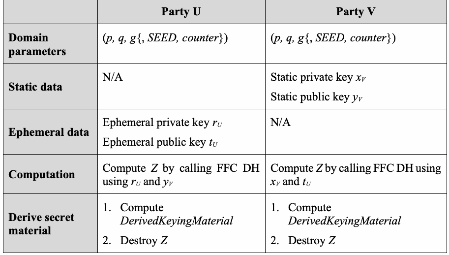
| 当事者U | 当事者V | |
| ドメイン | (p, q, g{, SEED, counter}) | (p, q, g{, SEED, counter}) |
| パラメータ | ||
| 静的データ | 該当なし | 静的秘密鍵 x V 静的公開鍵 y V |
| エフェメラルデータ | エフェメラル秘密鍵 r U エフェメラル公開鍵 t U | 該当なし |
| 計算 | FFC DHを用いてZを計算： r and y U V | FFC DHを用いてZを計算： x and t V U |
| 秘密素材の導出 | 1. DerivedKeyingMaterialを計算 2. Zを破棄 | 1. DerivedKeyingMaterialを計算 2. Zを破棄 |
原本PDFの抜粋画像
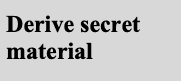
6.2.2.2 (Cofactor) One-Pass Diffie-Hellman, C(1e, 1s, ECC CDH) Scheme
6.2.2.2（コファクタ）One-Pass Diffie-Hellman、C(1e, 1s, ECC CDH)スキーム
This section describes the One-Pass Diffie-Hellman scheme. Assurance of secure key
この節ではOne-Pass Diffie-Hellmanスキームを説明する。安全な鍵
未レビュー訳establishment using this scheme can only be obtained when the assumptions in Section 6.2.2
確立をこのスキームで保証できるのは、Section 6.2.2の前提条件が
未レビュー訳are true. In particular, it is assumed that party U has obtained the static public key Q
満たされる場合に限られる。特に当事者Uは静的公開鍵Q
未レビュー訳of
未レビュー訳s,V
ₛ,V（当事者Vの鍵）
未レビュー訳party V.
を取得していると仮定する。
未レビュー訳In this scheme, each party has different actions, which are presented separately below.
このスキームでは各当事者の動作が異なるため、以下に別々に示す。
未レビュー訳However, note that parties U and V must use identical orderings of the bit strings that are
ただし、当事者UとVは鍵導出方式に入力するビット列の順序を
未レビュー訳input to the key-derivation method.
同一にしなければならない。
未レビュー訳Party U shall execute the following actions to a) establish a shared secret value Z with party
当事者Uは、a) 当事者Vとの共有秘密値Zを確立し、
未レビュー訳V, and b) derive secret keying material from Z.
b) Zから秘密鍵素材を導出するため、以下の動作を実行しなければならない。
未レビュー訳Actions: Party U generates a shared secret and derives secret keying material as follows:
動作：当事者Uは次のように共有秘密を生成し、秘密鍵素材を導出する。
1.Generate an ephemeral key pair (d ,Q ) from the domain parameters D as specified e,U e,U in Section 5.6.1.2. Send the public key Q to party V. e,U
1.ドメインパラメータDからSection 5.6.1.2に従ってエフェメラル鍵ペア(dₑ,U, Qₑ,U)を生成する。公開鍵Qₑ,Uを当事者Vに送信する。
未レビュー訳2.Use the ECC CDH primitive in Section 5.7.1.2 to derive a shared secret Z from the set of domain parameters D, party U’s ephemeral private key d , and party V’s static e,U public key Q . If this call to the ECC CDH primitive outputs an error indicator, s,V destroy the ephemeral private key d , and destroy the results of all intermediate e,U
2.Section 5.7.1.2のECC CDHプリミティブを用いて、ドメインパラメータ集合D、当事者Uのエフェメラル秘密鍵dₑ,U、および当事者Vの静的公開鍵Qₛ,Vから共有秘密Zを導出する。ECC CDHプリミティブがエラー標識を出力した場合、エフェメラル秘密鍵dₑ,Uと、計算試行で使用したすべての中間計算結果を破棄し、エラー標識を出力して残りの動作を実行せずに終了する。
未レビュー訳calculations used in the attempted computation of Z; then output an error indicator, and exit this process without performing the remaining actions.
計算試行で使用したすべての中間計算結果を破棄し、エラー標識を出力して残りの動作を実行せずにこのプロセスを終了する。
未レビュー訳3.Use the agreed-upon key-derivation method to derive secret keying material with the specified length from the shared secret value Z and other input (see Section 5.8). If the key-derivation method outputs an error indicator, destroy all copies of Z and the ephemeral private key d ; then output an error indicator, and exit this process e,U without performing the remaining actions.
3.合意済みの鍵導出方式を用い、共有秘密値Zおよびその他の入力から指定された長さの秘密鍵素材を導出する（Section 5.8参照）。鍵導出方式がエラー標識を出力した場合、Zのすべての複製とエフェメラル秘密鍵dₑ,Uを破棄し、エラー標識を出力して残りの動作を実行せずに終了する。
未レビュー訳4.Destroy d and all copies of the shared secret Z. e,U
4.dₑ,Uおよび共有秘密Zのすべての複製を破棄する。
未レビュー訳5.Output the derived keying material.
5.導出した鍵素材を出力する。
未レビュー訳Output: The derived keying material or an error indicator.
出力：導出された鍵素材またはエラー標識。
未レビュー訳Party V shall execute the following actions to a) establish a shared secret value Z with party
当事者Vは、a) 当事者Uとの共有秘密値Zを確立し、
未レビュー訳U, and b) derive secret keying material from Z.
b) Zから秘密鍵素材を導出するため、以下の動作を実行しなければならない。
未レビュー訳Actions: Party V derives secret keying material as follows:
動作：当事者Vは次のように秘密鍵素材を導出する。
未レビュー訳1.Receive an ephemeral public key Q (purportedly) from party U. If Q is not
1.当事者Uからエフェメラル公開鍵Qₑ,U（とされるもの）を受信する。Qₑ,Uが
未レビュー訳e,U
Qₑ,U
未レビュー訳e,U
e,U
未レビュー訳received, then output an error indicator, and exit this process without performing the
受信されなかった場合、エラー標識を出力し、残りの動作を実行せずに
未レビュー訳remaining actions.
このプロセスを終了する。
未レビュー訳2.Verify that Qe,U is a valid ephemeral public key for the parameters D as specified in
2.Section 5.6.2.3に従ってQₑ,Uが有効なエフェメラル公開鍵であることを検証する。
未レビュー訳Section 5.6.2.3. If assurance of public key validity cannot be obtained, then output an
公開鍵の有効性保証を得られない場合、エラー標識を出力し、
未レビュー訳error indicator, and exit without performing the remaining actions.
残りの動作を実行せずにこのプロセスを終了する。
未レビュー訳3.Use the ECC CDH primitive in Section 5.7.1.2 to derive a shared secret Z from the
3.Section 5.7.1.2のECC CDHプリミティブを用いて、次から共有秘密Zを導出する：
未レビュー訳set of domain parameters D, party V’s static private key d , and party U’s ephemeral
ドメインパラメータ集合D、当事者Vの静的秘密鍵dₛ,V、および当事者Uのエフェメラル
未レビュー訳s ,V
dₛ,V
未レビュー訳public key Qe,U. If this call to the ECC CDH primitive
公開鍵Qₑ,U。ECC CDHプリミティブ
未レビュー訳o utputs an error indicator,
がエラー標識を出力した場合、
未レビュー訳destroy the results of all intermediate calculations used in the attempted computation
Zの計算試行で使用したすべての中間計算結果を
未レビュー訳of Z; then output an error indicator, and exit this process without performing the
破棄し、エラー標識を出力して残りの動作を実行せずに
未レビュー訳remaining actions.
このプロセスを終了する。
未レビュー訳4.Use the agreed-upon key-derivation method to derive secret keying material with the
4.合意済みの鍵導出方式を用いて
未レビュー訳specified length from the shared secret value Z and other input (see Section 5.8). If
共有秘密値Zおよびその他の入力から指定された長さの秘密鍵素材を導出する（Section 5.8参照）。
未レビュー訳the key-derivation method outputs an error indicator, destroy all copies of Z; then
鍵導出方式がエラー標識を出力した場合、Zのすべての複製を破棄し、
未レビュー訳output an error indicator, and exit this process without performing the remaining
エラー標識を出力して残りの動作を実行せずにこのプロセスを終了する。
未レビュー訳action.
動作を実行せずに。
未レビュー訳6.Destroy all copies of the shared secret Z and output the derived keying material.
6.共有秘密Zのすべての複製を破棄し、導出した鍵素材を出力する。
未レビュー訳Output: The derived keying material or an error indicator.
出力：導出された鍵素材またはエラー標識。
未レビュー訳Note: Key confirmation can be incorporated into this scheme. See Section 6.2.2.3 for details. The One-Pass Diffie-Hellman is summarized in Table 20.
注：このスキームには鍵確認を組み込むことができる。詳細はSection 6.2.2.3を参照。One-Pass Diffie-Hellmanを表20に要約する。
未レビュー訳Table 20: One-pass Diffie-Hellman key-agreement scheme summary
表20：One-Pass Diffie-Hellman鍵共有スキームの要約
未レビュー訳| Party U | Party V | |
| Domain | (q, FR, a, b{, SEED}, G, n, h) | (q, FR, a, b{, SEED}, G, n, h) |
| parameters | ||
| Static data | N/A | Static private key d s,V Static public key Q s,V |
| Ephemeral data | Ephemeral private key d e,U Ephemeral public key Q e,U | N/A |
| Computation | Compute Z by calling ECC CDH using d and Q e,U s,V | Compute Z by calling ECC CDH using d and Q s,V e,U |
| Derive secret keying material | 1. Compute DerivedKeyingMaterial 2. Destroy Z | 1. Compute DerivedKeyingMaterial 2. Destroy Z |
原本PDFの抜粋画像
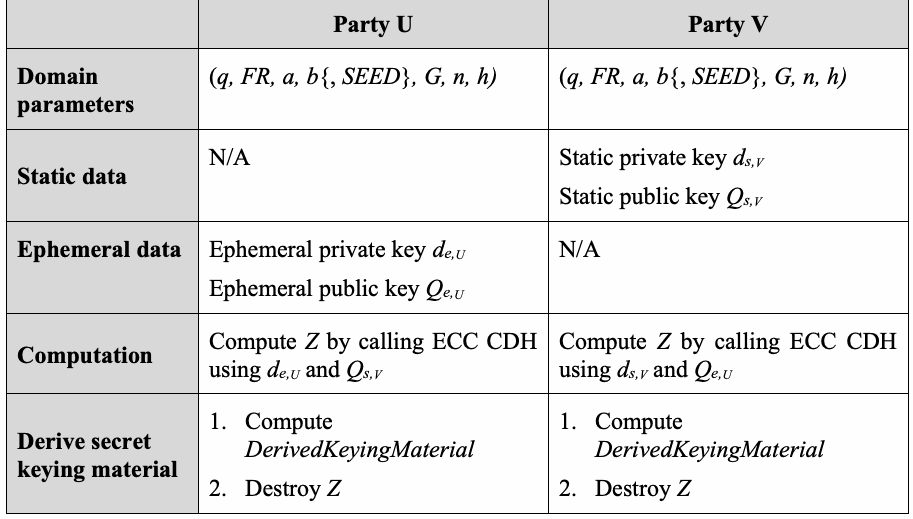
| 当事者U | 当事者V | |
| ドメイン | (q, FR, a, b{, SEED}, G, n, h) | (q, FR, a, b{, SEED}, G, n, h) |
| パラメータ | ||
| 静的データ | 該当なし | 静的秘密鍵 d s,V 静的公開鍵 Q s,V |
| エフェメラルデータ | エフェメラル秘密鍵 d e,U エフェメラル公開鍵 Q e,U | 該当なし |
| 計算 | ECC CDHを用いてZを計算： d and Q e,U s,V | ECC CDHを用いてZを計算： d and Q s,V e,U |
| 秘密鍵素材の導出 | 1. DerivedKeyingMaterialを計算 2. Zを破棄 | 1. DerivedKeyingMaterialを計算 2. Zを破棄 |
原本PDFの抜粋画像
6.2.2.3 Incorporating Key Confirmation into a C(1e, 1s) Scheme
6.2.2.3 C(1e, 1s)スキームへの鍵確認の組み込み
The subsection that follows illustrates how to incorporate key confirmation (as described in
以下の節では、前述のC(1e, 1s)鍵共有スキームに、Section 5.9で説明する鍵確認を組み込む方法を示す。
未レビュー訳Section 5.9) into the C(1e, 1s) key-agreement schemes described above. Note that only
Section 5.9参照。
未レビュー訳unilateral key confirmation from party V to party U is specified, since only party V has a
ここでは当事者Vから当事者Uへの一方向鍵確認のみを規定する。
未レビュー訳static key pair that is used in the key-establishment process.
これは、鍵確立プロセスで使用する静的鍵ペアを持つのが当事者Vのみであるためである。
未レビュー訳The flow depiction separates the key-establishment flow from the key-confirmation flow.
フロー図では鍵確立の流れと鍵確認の流れを分けている。
The depiction and accompanying discussion presumes that the assumptions of the scheme
図と付随する説明は、スキームの前提条件が
未レビュー訳have been satisfied, that the key-agreement transaction has proceeded successfully through
満たされ、鍵共有トランザクションが鍵導出まで正常に進み、
未レビュー訳key derivation, and that the received MacTag is successfully verified as specified in Section
受信したMacTagがSection
未レビュー訳5.2.2.
5.2.2に従って正常に検証されることを前提とする。
未レビュー訳6.2.2.3.1 C(1e, 1s) Scheme with Unilateral Key Confirmation Provided by Party V to
6.2.2.3.1 当事者Vから当事者Uへの一方向鍵確認を伴うC(1e, 1s)スキーム
未レビュー訳Party U
当事者U
未レビュー訳Figure_13 depicts a typical flow for a C(1e, 1s) scheme with unilateral key confirmation
図13は、当事者Vから当事者Uへの一方向鍵確認を伴うC(1e, 1s)スキームの典型的なフローを示す。
未レビュー訳from party V to party U. In this scenario, party V and party U assume the roles of the key-
当事者Vから当事者Uへの
未レビュー訳confirmation provider and recipient, respectively. The successful completion of the key-
鍵確認提供者および受信者の役割をそれぞれ担う。鍵確認プロセスが正常に完了すると、
未レビュー訳confirmation process provides party U with a) assurance that party V has derived the same secret Z value, and b) assurance that party V has actively participated in the process.
当事者Uは、a) 当事者Vが同じ秘密値Zを導出したこと、およびb) 当事者Vが能動的に参加したことの保証を得る。
未レビュー訳U
未レビュー訳V
未レビュー訳Vの静的鍵取得を含む一方向鍵確認フロー
V’s Static Public Key
Vの静的公開鍵
未レビュー訳U obtains V’s static public key
UはVの静的公開鍵を取得する
未レビュー訳Uのエフェメラル公開鍵送信
U’s Ephemeral Public Key
Uのエフェメラル公開鍵
未レビュー訳U sends an ephemeral public key
Uはエフェメラル公開鍵を送信する
未レビュー訳VからUへのMacTag送信
MacTag
MacTag
未レビュー訳V
未レビュー訳V’s key-confirmation
Vの鍵確認
未レビュー訳Figure 13: C(1e, 1s) scheme with unilateral key confirmation from party V to party U
図13：当事者Vから当事者Uへの一方向鍵確認を伴うC(1e, 1s)スキーム
未レビュー訳To provide (and receive) key confirmation (as described in Section 5.9.1), both parties set
Section 5.9.1で説明する鍵確認を提供（および受信）するため、両当事者は次のように設定する。
未レビュー訳EphemData = Null, and EphemData = EphemPubKey .
EphemData = Null、およびEphemData = EphemPubKey_U。
未レビュー訳V
未レビュー訳U
未レビュー訳U
未レビュー訳Party V provides MacTag to party U (as specified in Section 5.9.1, with P = V and R = U),
当事者Vは、Section 5.9.1に規定するとおり（P = V、R = Uとして）、MacTag_Vを当事者Uに提供する。
未レビュー訳V
未レビュー訳where MacTag is computed (as specified in Section 5.2.1) using
MacTag_VはSection 5.2.1に従って次を用いて計算する。
未レビュー訳V
未レビュー訳MacData
MacData
未レビュー訳= “KC_1_V” || ID
= “KC_1_V” || ID
未レビュー訳|| ID
|| ID
未レビュー訳|| Null || EphemPubKey
|| Null || EphemPubKey
未レビュー訳{|| Text }.
{|| Text_V}.
未レビュー訳V
未レビュー訳V U
V、U
未レビュー訳U
未レビュー訳V
未レビュー訳Party U (the key-confirmation recipient) uses the same format for MacData
当事者U（鍵確認の受信者）はMacDataに同じ形式を使用して
未レビュー訳to compute its V
MacData_V
未レビュー訳own version of MacTag
自身のMacTag_Vを計算し、
未レビュー訳and then verifies that the newly computed MacTag matches the V
新たに計算したMacTagが
未レビュー訳value provided by V.
当事者Vから提供された値と一致することを検証する。
未レビュー訳Party V shall destroy its copy of MacKey immediately after computing MacTag
当事者VはMacTag_Vを計算した直後にMacKeyの複製を破棄しなければならない。当事者Uは
未レビュー訳. Party U
MacTag_V
未レビュー訳V
未レビュー訳shall immediately destroy its copy of MacKey after determining whether or not the received
受信値と新たに計算したMacTagの一致を判定した後、直ちにMacKeyの複製を破棄しなければならない。一致しない場合、当事者Uはさらに
未レビュー訳and newly computed MacTag values match. If they do not match, then party U shall also
V
未レビュー訳V
未レビュー訳destroy the KeyData portion of the DerivedKeyingMaterial (see Section 5.9.1) and notify
DerivedKeyingMaterialのKeyData部分（Section 5.9.1参照）を破棄し、検証できなかったことを当事者Vに通知する。この場合、当事者Vも
未レビュー訳party V that MacTag could not be verified. In this case, party V shall also destroy the
DerivedKeyingMaterialの
未レビュー訳V
未レビュー訳KeyData portion of the DerivedKeyingMaterial.
KeyData部分を破棄しなければならない。
未レビュー訳6.3 C(0e, 2s) Schemes
6.3 C(0e, 2s)スキーム
未レビュー訳In this category, the parties use only static key pairs. Each party obtains the other party’s static public key. A nonce, Nonce , is sent by party U to party V to ensure that the derived
このカテゴリでは、当事者は静的鍵ペアのみを使用する。各当事者は相手方の静的公開鍵を取得する。ノンスNonceを当事者Uから当事者Vに送信し、導出される
未レビュー訳U
未レビュー訳keying material is different for each key-establishment transaction. This would be accomplished by including (a copy of) Nonce in the OtherInput provided to the KDM, as U part of the FixedInfo (see Section 5.8). The parties calculate the shared secret using their own static private key and the other party’s static public key. Secret keying material is derived using the key-derivation method, the shared secret, and the nonce (see Figure 14).
鍵素材が鍵確立トランザクションごとに異なるようにする。これはNonce_U（の複製）をFixedInfoの一部としてKDMに渡すOtherInputに含めることで実現できる（Section 5.8参照）。当事者は自身の静的秘密鍵と相手方の静的公開鍵を使って共有秘密を計算する。秘密鍵素材は鍵導出方式、共有秘密、およびノンスを用いて導出する（図14参照）。
未レビュー訳U
未レビュー訳V
未レビュー訳U’s Static Public Key
Uの静的公開鍵
未レビュー訳Obtain static public
静的公開鍵を取得する
未レビュー訳V’s Static Public Key
Vの静的公開鍵
未レビュー訳keys
鍵
未レビュー訳Nonce U
Nonce_U
未レビュー訳U sends a nonce
Uはノンスを送信する
未レビュー訳Figure 14: C(0e, 2s) schemes: each party contributes only a static key pair
図14：C(0e, 2s)スキーム：各当事者が静的鍵ペアのみを提供する
未レビュー訳Assumptions: In order to execute a C(0e, 2s) key-establishment scheme in compliance with
前提条件：この勧告に準拠してC(0e, 2s)鍵確立スキームを実行するには、
未レビュー訳this Recommendation, the following assumptions shall be true.
以下の前提条件が満たされなければならない。
未レビュー訳1.Each party has an authentic copy of the same set of domain parameters, D. These
1.各当事者は同一のドメインパラメータ集合Dの真正な複製を持つ。これらの
未レビュー訳parameters are either approved for use in the intended application (see Section
パラメータは意図された用途での使用が承認されている（Section
未レビュー訳5.5.1). For FFC schemes, D = (p, q, g{, SEED, counter}); for ECC schemes, D = (q,
5.5.1参照）。FFCスキームではD = (p, q, g{, SEED, counter})、ECCスキームではD = (q,
未レビュー訳FR, a, b{, SEED}, G, n, h). Furthermore, each party has assurance of the validity of
FR, a, b{, SEED}, G, n, h)である。さらに各当事者は
未レビュー訳these domain parameters as specified in Section 5.5.2.
Section 5.5.2に従って、これらのドメインパラメータの有効性保証を得ている。
未レビュー訳2.Each party has been designated as the owner of a static key pair that was generated
2.各当事者は、ドメインパラメータ集合Dを用いてSection 5.6.1に従い生成された静的鍵ペアの所有者として指定されている。
未レビュー訳as specified in Section 5.6.1 using the set of domain parameters, D. For FFC schemes,
FFCスキームでは静的鍵ペアは(x, y)、
未レビュー訳the static key pair is (x, y); for ECC schemes, the static key pair is (d , Q ). Each party
ECCスキームでは静的鍵ペアは(dₛ, Qₛ)である。各当事者
未レビュー訳s s
s s
未レビュー訳has obtained assurance of the validity of its own static public key as specified in
はSection 5.6.2.1.3に従い自身の静的公開鍵の有効性保証を得ている。各当事者は
未レビュー訳Section 5.6.2.1.3. Each party has obtained assurance of its possession of the correct
自身の秘密鍵の正しい値を保有している保証を
未レビュー訳value for its own private key as specified in Section 5.6.2.1.5.
Section 5.6.2.1.5に従って得ている。
未レビュー訳3.The parties have agreed upon an approved key-derivation method (see Section 5.8),
3.当事者は承認済みの鍵導出方式（Section 5.8参照）と、
未レビュー訳as well as an approved algorithm used with the method (e.g., a hash function) and
その方式で用いる承認済みアルゴリズム（例：ハッシュ関数）および
未レビュー訳other associated parameters to be used. In addition, the parties have agreed on the
その他の関連パラメータについて合意している。さらに当事者は
未レビュー訳form of the nonce (see Section 5.4), which should be a random nonce.
ノンスの形式（Section 5.4参照）にも合意しており、ノンスはランダムであることが望ましい。
未レビュー訳4.If key confirmation is used, the parties have also agreed upon an approved MAC and
4.鍵確認を使用する場合、当事者は承認済みMACおよび
未レビュー訳associated parameters, including the lengths of MacKey and MacTag (see Section 5.9.3). If party V provides key confirmation to party U, the parties have agreed upon the form of Nonce , which should be a random nonce.
関連パラメータ（MacKeyおよびMacTagの長さを含む、Section 5.9.3参照）にも合意している。当事者Vが当事者Uに鍵確認を提供する場合、ノンスNonce_Vの形式についても合意しており、これはランダムノンスであることが望ましい。
未レビュー訳Nonce_V
未レビュー訳5.Prior to or during the key-agreement process, each party receives the other party’s static public key in a trusted manner (e.g., from a certificate signed by a trusted CA or directly from the other party, who is trusted by the recipient). Each party has obtained assurance of the validity of the other party’s static public key as specified in Section 5.6.2.2.1.
5.鍵共有プロセスの前または実行中に、各当事者は信頼できる方法（例：信頼されたCAが署名した証明書、または受信者が信頼する相手方から直接取得）で相手方の静的公開鍵を受信する。各当事者はSection 5.6.2.2.1に従って相手方の静的公開鍵の有効性保証を得ている。
未レビュー訳6.The recipient of a static public key has obtained assurance that its (claimed) owner is (or was) in possession of the corresponding static private key, as specified in Section 5.6.2.2.3.
6.静的公開鍵の受信者は、その（主張された）所有者が対応する静的秘密鍵を保有している（または保有していた）保証をSection 5.6.2.2.3に従って得ている。
未レビュー訳7.When an identifier is used to label a party during the key-agreement process, that identifier has a trusted association with that party’s static public key. (In other words, whenever both the identifier and static public key of one participant are employed in the key-agreement process, they are associated in a manner that is trusted by the other participant.) When an identifier is used to label a party during the key-agreement process, both parties are aware of the particular identifier employed for that purpose.
7.鍵共有プロセス中に当事者を識別する識別子を使用する場合、その識別子は当該当事者の静的公開鍵と信頼できる形で関連付けられている。つまり、識別子と参加者の静的公開鍵を両方使用する場合、それらは相手方が信頼する方法で関連付けられる。識別子を用いて当事者を識別する場合、両当事者はその目的で使用される識別子を認識している。
未レビュー訳6.3.1 dhStatic, C(0e, 2s, FFC DH) Scheme
6.3.1 dhStatic、C(0e, 2s, FFC DH)スキーム
未レビュー訳This section describes the dhStatic scheme. Assurance of secure key establishment using this
この節ではdhStaticスキームを説明する。このスキームによる安全な鍵確立を保証できるのは
未レビュー訳scheme can only be obtained when the assumptions in Section 6.3 are true. In particular, it
Section 6.3の前提条件が満たされる場合に限られる。特に、
未レビュー訳is assumed that party U has obtained the static public key yV of party V, and party V has
当事者Uは当事者Vの静的公開鍵yVを取得し、当事者Vは
未レビュー訳obtained the static public key yU of party U.
当事者Uの静的公開鍵yUを取得していると仮定する。
未レビュー訳In this scheme, each party has different actions, which are presented separately below.
このスキームでは各当事者の動作が異なるため、以下に別々に示す。
未レビュー訳However, note that parties U and V must use identical orderings of the bit strings that are
ただし、当事者UとVは鍵導出方式に入力するビット列の順序を
未レビュー訳input to the key-derivation method.
同一にしなければならないことに注意する。
未レビュー訳Party U shall execute the following actions to a) establish a shared secret value Z with party
当事者Uは、a) 当事者Vとの共有秘密値Zを確立し、
未レビュー訳V, and b) derive secret keying material from Z.
b) Zから秘密鍵素材を導出するため、以下の動作を実行しなければならない。
未レビュー訳Actions: Party U generates a shared secret and derives secret keying material as follows:
動作：当事者Uは次のように共有秘密を生成し、秘密鍵素材を導出する。
未レビュー訳1.Obtain a nonce, Nonce (see Section 5.4). Send Nonce to party V.
1.Section 5.4のとおりノンスNonce_Uを取得する。当事者VにNonce_Uを送信する。
未レビュー訳Nonce_U
未レビュー訳Nonce_U
未レビュー訳2.Use the FFC DH primitive in Section 5.7.1.1 to derive a shared secret Z from the set
2.Section 5.7.1.1のFFC DHプリミティブを用いて、次から共有秘密Zを導出する：
未レビュー訳of domain parameters D, party U’s static private key x
ドメインパラメータ集合D、当事者Uの静的秘密鍵xU
未レビュー訳, and party V’s static public U
、当事者Vの静的公開
未レビュー訳key y
鍵yV
未レビュー訳. If the call to the FFC DH primitive outputs an error indicator, destroy Nonce
。FFC DHプリミティブがエラー標識を出力した場合、Nonce
未レビュー訳を
未レビュー訳V
未レビュー訳U
未レビュー訳and destroy the results of all intermediate calculations used in the attempted
破棄し、計算試行で使用したすべての中間計算結果も
未レビュー訳computation of Z; then output an error indicator, and exit this process without
破棄する。続いてエラー標識を出力し、
未レビュー訳performing the remaining actions.
残りの動作を実行せずにこのプロセスを終了する。
未レビュー訳3.Use the agreed-upon key-derivation method to derive secret keying material with the
3.合意済みの鍵導出方式を用いて、
未レビュー訳specified length from the shared secret value Z, NonceU and other input (see Section
共有秘密値Z、Nonce_Uおよびその他の入力から指定された長さの秘密鍵素材を導出する（Section
未レビュー訳5.8). If the key-derivation method outputs an error indicator, destroy all copies of Z;
5.8参照）。鍵導出方式がエラー標識を出力した場合、Zのすべての複製を破棄し、
未レビュー訳then output an error indicator, and exit this process without performing the remaining
エラー標識を出力して残りの動作を実行せずにこのプロセスを終了する。
未レビュー訳actions.
残りの動作を実行せずに。
未レビュー訳4.Destroy all copies of the shared secret Z and output the derived keying material.
4.共有秘密Zのすべての複製を破棄し、導出した鍵素材を出力する。
未レビュー訳Output: The derived keying material bits or an error indicator.
出力：導出された鍵素材のビット列またはエラー標識。
未レビュー訳Party V shall execute the following actions to a) establish a shared secret value Z with party U, and b) derive secret keying material from Z. Actions: Party V derives secret keying material as follows:
当事者Vは、a) 当事者Uとの共有秘密値Zを確立し、b) Zから秘密鍵素材を導出するため、以下の動作を実行しなければならない。動作：当事者Vは秘密鍵素材を導出する。
未レビュー訳1.Obtain party U’s nonce, Nonce from party U. If Nonce is not available, then output U, U an error indicator, and exit this process without performing the remaining actions.
1.当事者UからNonce_Uを受け取る。Nonce_Uを取得できない場合、エラー標識を出力し、残りの動作を実行せずにこのプロセスを終了する。
未レビュー訳2.Use the FFC DH primitive in Section 5.7.1.1 to derive a shared secret from the set of domain parameters D, party V’s static private key x and party U’s static public key V, y If the call to the FFC DH primitive outputs an error indicator, destroy the results U. of all intermediate calculations used in the attempted computation of Z; then output an error indicator, and exit this process without performing the remaining actions.
2.Section 5.7.1.1のFFC DHプリミティブを用いて、ドメインパラメータ集合D、当事者Vの静的秘密鍵xV、および当事者Uの静的公開鍵yUから共有秘密を導出する。FFC DHプリミティブがエラー標識を出力した場合、計算試行で使用したすべての中間計算結果を破棄し、エラー標識を出力して残りの動作を実行せずにこのプロセスを終了する。
未レビュー訳3.Use the agreed-upon key-derivation method to derive secret keying material with the specified length from the shared secret value Z, Nonce , and other input (see Section U 5.8). If the key-derivation method outputs an error indicator, destroy all copies of Z; then output an error indicator, and exit this process without performing the remaining action.
3.合意済みの鍵導出方式を用いて、共有秘密値Z、Nonce_Uおよびその他の入力から指定された長さの秘密鍵素材を導出する（Section 5.8参照）。鍵導出方式がエラー標識を出力した場合、Zのすべての複製を破棄し、エラー標識を出力して残りの動作を実行せずに終了する。
未レビュー訳4.Destroy all copies of the shared secret Z and output the derived keying material.
4.共有秘密Zのすべての複製を破棄し、導出した鍵素材を出力する。
Output: The derived keying material or an error indicator.
出力：導出された鍵素材またはエラー標識。
Note: Key confirmation can be incorporated into this scheme. See Section 6.3.3 for details.
注：このスキームには鍵確認を組み込むことができる。詳細はSection 6.3.3を参照。
未レビュー訳dhStatic is summarized in Table 21.
dhStaticを表21に要約する。
未レビュー訳Table 21: dhStatic key-agreement scheme summary
表21：dhStatic鍵共有スキームの要約
未レビュー訳| Party U | Party V | |
| Domain | (p, q, g{, SEED, counter}) | (p, q, g{, SEED, counter}) |
| parameters | ||
| Static data | Static private key x U Static public key y U | Static private key x V Static public key y V |
| Ephemeral | Nonce U | |
| data | ||
| Computation | Compute Z by calling FFC DH using x ,and y U V | Compute Z by calling FFC DH using x , and y V U |
| Derive secret keying material | 1. Compute DerivedKeyingMaterial using Z and Nonce U 2. Destroy Z | 1. Compute DerivedKeyingMaterial using Z and Nonce U 2. Destroy Z |
原本PDFの抜粋画像
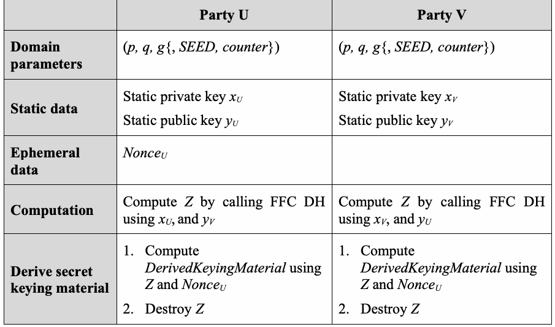
| 当事者U | 当事者V | |
| ドメイン | (p, q, g{, SEED, counter}) | (p, q, g{, SEED, counter}) |
| パラメータ | ||
| 静的データ | 静的秘密鍵 x U 静的公開鍵 y U | 静的秘密鍵 x V 静的公開鍵 y V |
| エフェメラル | Nonce U | |
| データ | ||
| 計算 | FFC DHを用いてZを計算： x ,and y U V | FFC DHを用いてZを計算： x , and y V U |
| 秘密鍵素材の導出 | 1. DerivedKeyingMaterialを計算 を用いて Z and Nonce U 2. Zを破棄 | 1. DerivedKeyingMaterialを計算 を用いて Z and Nonce U 2. Zを破棄 |
原本PDFの抜粋画像

6.3.2 (Cofactor) Static Unified Model, C(0e, 2s, ECC CDH) Scheme
6.3.2（コファクタ）Static Unified Model、C(0e, 2s, ECC CDH)スキーム
This section describes the Static Unified Model scheme. Assurance of secure key establishment using this scheme can only be obtained when the assumptions in Section 6.3 are true. In particular, it is assumed that party U has obtained the static public key Q of
この節ではStatic Unified Modelスキームを説明する。このスキームによる安全な鍵確立を保証できるのは、Section 6.3の前提条件が満たされる場合に限られる。特に、当事者Uは静的公開鍵Q
未レビュー訳s,V
ₛ,V
未レビュー訳party V, and party V has obtained the static public key Q of party U.
（当事者Vの鍵）を取得し、当事者Vは当事者Uの静的公開鍵Qₛ,U
未レビュー訳s,U
を取得していると仮定する。
未レビュー訳In this scheme, each party has different actions, which are presented separately below. However, note that parties U and V must use identical orderings of the bit strings that are input to the key-derivation method.
このスキームでは各当事者の動作が異なるため、以下に別々に示す。ただし、当事者UとVは鍵導出方式に入力するビット列の順序を同一にしなければならない。
未レビュー訳Party U shall execute the following actions to a) establish a shared secret value Z with party V, and b) derive secret keying material from Z. Actions: Party U generates a shared secret and derives secret keying material as follows:
当事者Uは、a) 当事者Vとの共有秘密値Zを確立し、b) Zから秘密鍵素材を導出するため、以下の動作を実行しなければならない。動作：当事者Uは次のように共有秘密と鍵素材を導出する。
未レビュー訳1.Obtain a nonce, Nonce (see Section 5.4). Send Nonce to party V. U U
1.Section 5.4のとおりノンスNonce_Uを取得し、当事者Vに送信する。
未レビュー訳2.Use the ECC CDH primitive in Section 5.7.1.2 to derive a shared secret Z from the set of domain parameters D, party U’s static private key d , and party V’s static s,U public key Q . If the call to the ECC CDH primitive outputs an error indicator,
2.Section 5.7.1.2のECC CDHプリミティブを用いて、ドメインパラメータ集合D、当事者Uの静的秘密鍵dₛ,Uおよび当事者Vの静的
未レビュー訳s,V
公開鍵Qₛ,Vから共有秘密Zを導出する。ECC CDHプリミティブがエラー標識を出力した場合、
未レビュー訳destroy the results of all intermediate calculations used in the attempted computation
計算試行で使用したすべての中間計算結果を
未レビュー訳of Z; then output an error indicator, and exit this process without performing the
破棄し、エラー標識を出力して残りの動作を実行せずに
未レビュー訳remaining actions.
このプロセスを終了する。
未レビュー訳3.Use the agreed-upon key-derivation method to derive secret keying material with the
3.合意済みの鍵導出方式を用いて、
未レビュー訳specified length from the shared secret value Z, Nonce , and other input (see Section
共有秘密値Z、Nonce_Uおよびその他の入力から指定された長さの秘密鍵素材を導出する（Section
未レビュー訳Nonce_U
未レビュー訳5.8). If the key-derivation method outputs an error indicator, destroy all copies of Z;
5.8参照）。鍵導出方式がエラー標識を出力した場合、Zのすべての複製を破棄し、
未レビュー訳then output an error indicator, and exit this process without performing the remaining
エラー標識を出力して残りの動作を実行せずにこのプロセスを終了する。
未レビュー訳actions.
残りの動作を実行せずに。
未レビュー訳4.Destroy Nonce and all copies of the shared secret Z.
4.Nonce_Uおよび共有秘密Zのすべての複製を破棄する。
未レビュー訳Nonce_U
未レビュー訳5.Output the derived keying material.
5.導出した鍵素材を出力する。
未レビュー訳Output: The derived keying material or an error indicator.
出力：導出された鍵素材またはエラー標識。
未レビュー訳Party V shall execute the following actions to a) establish a shared secret value Z, with party
当事者Vは、a) 当事者Uとの共有秘密値Zを確立し、
未レビュー訳U, and b) derive secret keying material from Z.
b) Zから秘密鍵素材を導出するため、以下の動作を実行しなければならない。
未レビュー訳Actions: Party V derives secret keying material as follows:
動作：当事者Vは次のように秘密鍵素材を導出する。
未レビュー訳1.Obtain party U’s nonce, Nonce from party U. If Nonce is not available, then output U, U
1.当事者UからNonce_Uを取得する。Nonce_Uを取得できない場合、
未レビュー訳an error indicator, and exit this process without performing the remaining actions.
エラー標識を出力して残りの動作を実行せずにこのプロセスを終了する。
未レビュー訳2.Use the ECC CDH primitive in Section 5.7.1.2 to derive a shared secret Z from the
2.Section 5.7.1.2のECC CDHプリミティブを用いて、次から共有秘密Zを導出する：
未レビュー訳set of domain parameters D, party V’s static private key d and party U’s static
ドメインパラメータ集合D、当事者Vの静的秘密鍵dₛ,V
未レビュー訳s,V,
、
未レビュー訳public key Q If the call to the ECC CDH primitive outputs an error indicator,
当事者Uの静的公開鍵Qₛ,U
未レビュー訳s,U.
。ECC CDHプリミティブがエラー標識を出力した場合、
未レビュー訳destroy the results of all intermediate calculations used in the attempted computation
計算試行で使用したすべての中間計算結果を
未レビュー訳of Z; then output an error indicator, and exit this process without performing the
破棄し、エラー標識を出力して残りの動作を実行せずに
未レビュー訳remaining actions.
このプロセスを終了する。
未レビュー訳3.Use the agreed-upon key-derivation method to derive secret keying material with the specified length from the shared secret value Z, Nonce , and other input (see Section U 5.8). If the key-derivation method outputs an error indicator, destroy all copies of Z; then output an error indicator, and exit this process without performing the remaining action.
3.合意済みの鍵導出方式を用いて、共有秘密値Z、Nonce_Uおよびその他の入力から指定された長さの秘密鍵素材を導出する（Section 5.8参照）。鍵導出方式がエラー標識を出力した場合、Zのすべての複製を破棄し、エラー標識を出力して残りの動作を実行せずにこのプロセスを終了する。
未レビュー訳4.Destroy all copies of the shared secret Z and output the derived keying material.
4.共有秘密Zのすべての複製を破棄し、導出した鍵素材を出力する。
未レビュー訳Output: The derived keying material or an error indicator.
出力：導出された鍵素材またはエラー標識。
未レビュー訳Note: Key confirmation can be incorporated into this scheme. See Section 6.3.3 for details. Static Unified Model is summarized in Table 22. Table 22: Static unified model key-agreement scheme summary
注：このスキームには鍵確認を組み込むことができる。詳細はSection 6.3.3を参照。Static Unified Modelを表22に要約する。表22：Static Unified Model鍵共有スキームの要約
未レビュー訳| Party U | Party V | |
| Domain | (q, FR, a, b{, SEED}, G, n, h) | (q, FR, a, b{, SEED}, G, n, h) |
| parameters | ||
| Static data | Static private key d s,U Static public key Q s,U | Static private key d s,V Static public key Q s,V |
| Ephemeral data | Nonce U | |
| Computation | Compute Z by calling ECC CDH using d , and Q s,U s,V | Compute Z by calling ECC CDH using d , and Q s,V s,U |
| Derive secret keying material | 1. Compute DerivedKeyingMaterial using Nonce U 2. Destroy Z | 1. Compute DerivedKeyingMaterial using Nonce U 2. Destroy Z |
原本PDFの抜粋画像
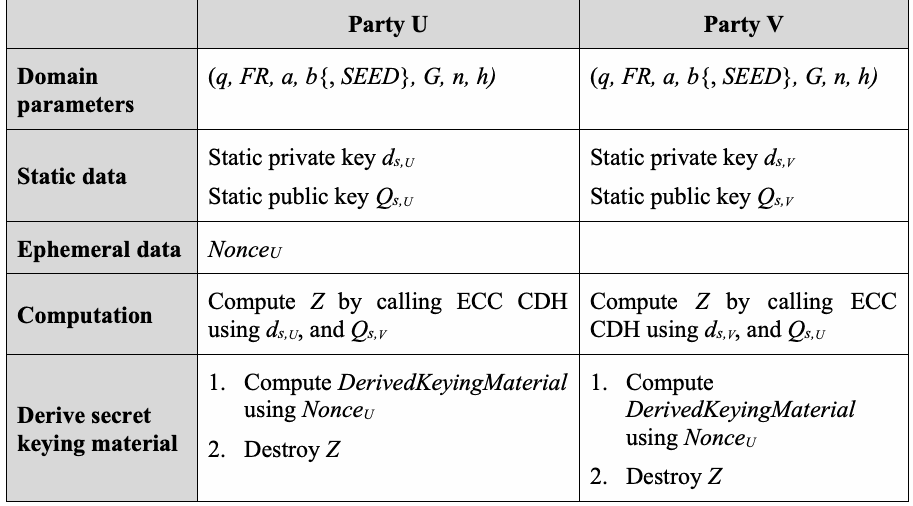
| 当事者U | 当事者V | |
| ドメイン | (q, FR, a, b{, SEED}, G, n, h) | (q, FR, a, b{, SEED}, G, n, h) |
| パラメータ | ||
| 静的データ | 静的秘密鍵 d s,U 静的公開鍵 Q s,U | 静的秘密鍵 d s,V 静的公開鍵 Q s,V |
| エフェメラルデータ | Nonce U | |
| 計算 | ECC CDHを用いてZを計算： d , and Q s,U s,V | ECC CDHを用いてZを計算： d , and Q s,V s,U |
| 秘密鍵素材の導出 | 1. DerivedKeyingMaterialを計算 を用いて Nonce U 2. Zを破棄 | 1. DerivedKeyingMaterialを計算 を用いて Nonce U 2. Zを破棄 |
原本PDFの抜粋画像

6.3.3 Incorporating Key Confirmation into a C(0e, 2s) Scheme
6.3.3 C(0e, 2s)スキームへの鍵確認の組み込み
The subsections that follow illustrate how to incorporate key confirmation (as described in
以下の各節では、
未レビュー訳Section 5.9) into the C(0e, 2s) key-agreement schemes described above. Note that party V
Section 5.9で説明する鍵確認を前述のC(0e, 2s)鍵共有スキームに組み込む方法を示す。なお当事者Vは、
未レビュー訳cannot act as a key confirmation unless a nonce (Nonce
ノンス（Nonce
未レビュー訳) is provided by party V to party U V
_V）が当事者Vから当事者Uに提供され、
未レビュー訳and is used (in addition to the shared secret Z) as input to the key-derivation method
スキームが用いる鍵導出方式への入力として、共有秘密Zに加えて使用されない限り、鍵確認を受けることができない。
未レビュー訳employed by the scheme. This would be accomplished by including (a copy of) Nonce in
これを実現するには、Nonce_V（の複製）を
未レビュー訳V
未レビュー訳the OtherInput provided to the KDM, as part of the FixedInfo (see Section 5.8), in addition
Section 5.8に従ってFixedInfoの一部としてKDMに与えるOtherInputに含め、さらに
未レビュー訳to using (a copy of) NonceV as the EphemDataV employed in the MacTag computations for
MacTag計算でEphemData_Vとして使用するNonce_V（の複製）も含める。
未レビュー訳key confirmation.
鍵確認。
未レビュー訳The flow depictions separate the key-establishment flow from the key-confirmation flow.
フロー図では鍵確立の流れと鍵確認の流れを分けている。
The depictions and accompanying discussions presume that the assumptions of the scheme
図および付随する説明は、スキームの前提条件が
未レビュー訳have been satisfied, that the key-agreement transaction has proceeded successfully through
満たされ、鍵共有トランザクションが鍵導出まで正常に進み、
未レビュー訳key derivation, and that the received MacTags are successfully verified as specified in
受信したMacTagがSection 5.2.2に従って正常に検証される
未レビュー訳Section 5.2.2.
ことを前提とする。
未レビュー訳6.3.3.1 C(0e, 2s) Scheme with Unilateral Key Confirmation Provided by Party
6.3.3.1 当事者Uから当事者Vへの一方向鍵確認を伴うC(0e, 2s)スキーム
未レビュー訳U to Party V
当事者Uから当事者Vへの
未レビュー訳Figure_15 depicts a typical flow for a C(0e, 2s) scheme with unilateral key confirmation from party U to party V. In this scenario, party U and party V assume the roles of key-confirmation provider and recipient, respectively. A nonce (Nonce ) shall be provided by
図15は当事者Uから当事者Vへの一方向鍵確認を伴うC(0e, 2s)スキームの典型的なフローを示す。この場合、当事者UとVはそれぞれ鍵確認提供者および受信者の役割を担う。
未レビュー訳Nonce_V
未レビュー訳party V to party U and used (in addition to the shared secret Z and the nonce provided by party U) as input to the key-derivation method employed by the scheme. Nonce is also used
Nonce_Vを当事者Vから当事者Uに提供し、当事者Uが提供するノンスおよび共有秘密Zとともに、スキームの鍵導出方式への入力として使用する。Nonce_Vは
未レビュー訳Nonce_V
未レビュー訳as the EphemData during MacTag computations. The successful completion of the key-
MacTagの計算時にEphemDataとしても
未レビュー訳Nonce_V
未レビュー訳confirmation process provides party V with assurance that party U has derived the same secret Z value. If Nonce is a random nonce, then party V also obtains assurance that party
鍵確認プロセスが正常に完了すると、当事者Vは当事者Uが同じ秘密値Zを導出した保証を得る。Nonce_Vがランダムノンスの場合、当事者Vは当事者
未レビュー訳Nonce_V
未レビュー訳U has actively participated in the process; see Section 5.4 for a discussion of the length and security strength required for the nonce.
Uがプロセスに能動的に参加した保証も得る。ノンスの必要な長さとセキュリティ強度についてはSection 5.4を参照。
未レビュー訳U
未レビュー訳V
未レビュー訳U’s Static Public Key
Uの静的公開鍵
未レビュー訳Obtain static
静的公開鍵を取得
未レビュー訳public keys
公開鍵
未レビュー訳V’s Static Public Key
Vの静的公開鍵
未レビュー訳Nonce U
Nonce_U
未レビュー訳U sends a nonce
Uはノンスを送信する
未レビュー訳Nonce V
Nonce_V
未レビュー訳V sends a nonce
Vはノンスを送信する
未レビュー訳MacTagU
MacTag_U
未レビュー訳U’s key confirmation
Uの鍵確認
未レビュー訳Figure 15: C(0e, 2s) scheme with unilateral key confirmation from party U to party V
図15：当事者Uから当事者Vへの一方向鍵確認を伴うC(0e, 2s)スキーム
未レビュー訳To provide (and receive) key confirmation (as described in Section 5.9.1), party U (and party
Section 5.9.1で説明する鍵確認を提供（および受信）するため、当事者U（および当事者
未レビュー訳V) set
V）は次のように設定する。
未レビュー訳EphemData
EphemData
未レビュー訳= Nonce
= Nonce
未レビュー訳, and EphemData
、EphemData
未レビュー訳= Nonce .
= Nonce_V。
未レビュー訳U
未レビュー訳U
未レビュー訳V
未レビュー訳V
未レビュー訳Party U provides MacTag
当事者UはMacTag
未レビュー訳to party V (as specified in Section 5.9.1, with P = U and R = V), U
_UをSection 5.9.1に規定するとおり（P = U、R = Vとして）当事者Vに提供する。
未レビュー訳where MacTagU is computed (as specified in Section 5.2.1) using
MacTag_UはSection 5.2.1に規定するとおり次を用いて計算する。
未レビュー訳MacData = “KC_1_U” || ID || ID || Nonce || Nonce {|| Text }.
MacData = “KC_1_U” || ID_U || ID_V || Nonce_U || Nonce_V {|| Text_U}.
未レビュー訳U
未レビュー訳U V
U、V
未レビュー訳U
未レビュー訳V U
V、U
未レビュー訳Party V (the key-confirmation recipient) uses the same format for MacData
当事者V（鍵確認の受信者）はMacDataに同じ形式を使用する。
未レビュー訳to compute its
それを用いてMacTag_Uの
未レビュー訳U
未レビュー訳own version of MacTag and then verifies that the newly computed MacTag matches the
自身の値を計算し、新たに計算したMacTagが
未レビュー訳U
未レビュー訳value provided by party U. Party U shall destroy its copy of MacKey immediately after computing MacTag . Party V
当事者Uが提供した値と一致することを検証する。当事者UはMacTag_Uを計算した直後にMacKeyの複製を破棄しなければならない。当事者Vは
未レビュー訳MacTag_U
未レビュー訳shall immediately destroy its copy of MacKey after determining whether or not the received and newly computed MacTag values match. If they do not match, then party V shall also
受信した値と新たに計算したMacTagの一致を判定した後、直ちにMacKeyの複製を破棄しなければならない。一致しない場合、当事者Vはさらに
未レビュー訳U
未レビュー訳destroy the KeyData portion of the DerivedKeyingMaterial (see Section 5.9.1) and notify party U that MacTag could not be verified. In this case, party U shall also destroy the
DerivedKeyingMaterialのKeyData部分（Section 5.9.1参照）を破棄し、MacTagを検証できなかったことを当事者Uに通知しなければならない。この場合、当事者Uも
未レビュー訳U KeyData portion of the DerivedKeyingMaterial.
DerivedKeyingMaterialのKeyData部分を破棄しなければならない。
未レビュー訳6.3.3.2 C(0e, 2s) Scheme with Unilateral Key Confirmation Provided by Party
6.3.3.2 当事者Vから当事者Uへの一方向鍵確認を伴うC(0e, 2s)スキーム
未レビュー訳V to Party U
当事者U
未レビュー訳Figure_16 depicts a typical flow for a C(0e, 2s) scheme with unilateral key confirmation from party V to party U. In this situation, party V and party U assume the roles of key-confirmation provider and recipient, respectively. The successful completion of the key-confirmation process provides party U with assurance that party V has derived the same secret Z value; if Nonce is a random nonce, then party U also obtains assurance that party
図16は当事者Vから当事者Uへの一方向鍵確認を伴うC(0e, 2s)スキームの典型的なフローを示す。この場合、当事者VとUはそれぞれ鍵確認提供者および受信者の役割を担う。鍵確認プロセスが正常に完了すると、当事者Uは当事者Vが同じ秘密値Zを導出した保証を得る。Nonce_Vがランダムノンスの場合、当事者Uはさらに
未レビュー訳Nonce_V
未レビュー訳V has actively participated in the process; see Section 5.4 for a discussion of the length and security strength required for the nonce.
当事者Vがプロセスに能動的に参加した保証を得る。ノンスに必要な長さとセキュリティ強度についてはSection 5.4を参照。
未レビュー訳U
未レビュー訳V
未レビュー訳U’s Static Public Key
Uの静的公開鍵
未レビュー訳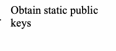
当事者UとVの静的公開鍵の取得フロー
Obtain static public
静的公開鍵を取得する
未レビュー訳V’s Static Public Key
Vの静的公開鍵
未レビュー訳keys
鍵
未レビュー訳Nonce U
Nonce_U
未レビュー訳U sends a nonce
Uはノンスを送信する
未レビュー訳Uのノンス送信とVからUへの鍵確認フロー
MacTagV
MacTag_V
未レビュー訳V’s key confirmation
Vの鍵確認
未レビュー訳Figure 16: C(0e, 2s) scheme with unilateral key confirmation from party V to party U
図16：当事者Vから当事者Uへの一方向鍵確認を伴うC(0e, 2s)スキーム
未レビュー訳To provide (and receive) key confirmation (as described in Section 5.9.1), both parties set
Section 5.9.1で説明する鍵確認を提供（および受信）するため、両当事者は次のように設定する。
未レビュー訳EphemData = Null, and EphemData = Nonce .
EphemData = Null、およびEphemData = Nonce_V。
未レビュー訳Nonce_V
未レビュー訳U
未レビュー訳U
未レビュー訳Party V provides MacTagV to party U (as specified in 5.9.1, with P = V and R = U), where MacTagV is computed (as specified in Section 5.2.1) using
当事者Vは、Section 5.9.1に規定するとおり（P = V、R = Uとして）MacTag_Vを当事者Uに提供する。MacTag_VはSection 5.2.1に従って次を用いて計算する。
未レビュー訳MacData = “KC_1_V” || ID || ID || Null || Nonce {|| Text }.
MacData = “KC_1_V” || ID_V || ID_U || Null || Nonce_V {|| Text_V}.
未レビュー訳Nonce_V
未レビュー訳V U
V、U
未レビュー訳U V
U、V
未レビュー訳Party U (the key-confirmation recipient) uses the same format for MacData to compute its
当事者U（鍵確認の受信者）はMacDataに同じ形式を使用して
未レビュー訳V
未レビュー訳own version of MacTag , and then verifies that the newly computed MacTag matches the
自身のMacTag_Vを計算し、新たに計算したMacTagが
未レビュー訳V
未レビュー訳value provided by party V.
当事者Vから提供された値と一致することを検証する。
未レビュー訳Party V shall destroy its copy of MacKey immediately after computing MacTag . Party U
当事者VはMacTag_Vを計算した直後にMacKeyの複製を破棄しなければならない。当事者Uは
未レビュー訳V
未レビュー訳shall immediately destroy its copy of MacKey after determining whether or not the received and newly computed MacTag values match. If they do not match, then party U V shall also destroy the KeyData portion of the DerivedKeyingMaterial (see Section 5.9.1) and notify party V that MacTag could not be verified. In this case, party V shall also
当事者Uは受信値と新たに計算したMacTagが一致するか判定した後、直ちにMacKeyの複製を破棄しなければならない。一致しない場合、当事者UはさらにDerivedKeyingMaterialのKeyData部分（Section 5.9.1参照）を破棄し、MacTagを検証できなかったことを当事者Vに通知しなければならない。この場合、当事者Vも
未レビュー訳V destroy the KeyData portion of the DerivedKeyingMaterial.
DerivedKeyingMaterialのKeyData部分を破棄しなければならない。
未レビュー訳6.3.3.3 C(0e, 2s) Scheme with Bilateral Key Confirmation
6.3.3.3 双方向鍵確認を伴うC(0e, 2s)スキーム
未レビュー訳Figure_17 depicts a typical flow for a C(0e, 2s) scheme with bilateral key confirmation. In this method, party U and party V assume the roles of both the provider and the recipient in order to obtain bilateral key confirmation. A nonce (Nonce ) shall be provided by party V to
図17は双方向鍵確認を伴うC(0e, 2s)スキームの典型的なフローを示す。この方式では、当事者UとVが提供者と受信者の両方の役割を担い、双方向鍵確認を実現する。ノンス（Nonce_V）を当事者Vから
未レビュー訳Nonce_V
未レビュー訳party U and used (in addition to the shared secret Z and the nonce, Nonce , provided by party
当事者Uに提供し、鍵導出方式への入力（共有秘密Zおよび当事者
未レビュー訳U
未レビュー訳U) as input to the key-derivation method employed by the scheme. Nonce is also used as
が提供するNonce_Uに加えて）として使用する。Nonce_Vは
未レビュー訳V
未レビュー訳the EphemData during MacTag computations. The successful completion of the key-
MacTagの計算時にEphemDataとしても使用する。鍵確認プロセスが
未レビュー訳V
未レビュー訳confirmation process provides each party with assurance that the other party has derived the same secret Z value. If Nonce is a random nonce, then party U obtains assurance that party
正常に完了すると、各当事者は相手方が同じ秘密値Zを導出した保証を得る。Nonce_Uがランダムノンスであれば当事者Uは当事者
未レビュー訳U
未レビュー訳V has actively participated in the process; if Nonce is a random nonce, then party V obtains V assurance that party U has actively participated in the process. See Section 5.4 for a
Vが能動的に参加した保証を得る。Nonce_Vがランダムノンスであれば当事者Vは当事者Uが能動的に参加した保証を得る。ノンスに必要な長さとセキュリティ強度についてはSection 5.4を
未レビュー訳discussion about the length and security strength required for the nonce.
参照。
未レビュー訳U
未レビュー訳V
未レビュー訳U’s Static Public Key
Uの静的公開鍵
未レビュー訳Obtain static public
静的公開鍵を取得
未レビュー訳keys
鍵
未レビュー訳V’s Static Public Key
Vの静的公開鍵
未レビュー訳静的公開鍵の交換を含む双方向鍵確認フロー
Nonce
Nonce_V
未レビュー訳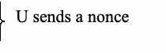
UからVへのノンス送信
U
未レビュー訳U sends a nonce
Uはノンスを送信する
未レビュー訳VからUへのノンス付き鍵確認フロー
Nonce , MacTag
Nonce_V、MacTag_V
未レビュー訳V
未レビュー訳V
未レビュー訳V sends a nonce with
Vはノンスと
未レビュー訳key-confirmation
鍵確認を送信する
未レビュー訳UからVへのMacTag送信
MacTag
MacTag_U
未レビュー訳U
未レビュー訳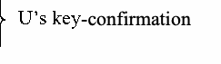
UからVへの鍵確認フロー
U’s key-confirmation
Uの鍵確認
未レビュー訳Figure 17: C(0e, 2s) scheme with bilateral key confirmation
図17：双方向鍵確認を伴うC(0e, 2s)スキーム
未レビュー訳To provide bilateral key confirmation (as described in Section 5.9.2), party U and party V
双方向鍵確認を提供するため（Section 5.9.2参照）、当事者UとVは
未レビュー訳exchange and verify MacTags that have been computed (as specified in Section 5.2.1) using
Section 5.2.1に従って計算したMacTagを交換し、次を用いて検証する。
未レビュー訳EphemData = Nonce , and EphemData = Nonce .
EphemData = Nonce_U、およびEphemData = Nonce_V。
未レビュー訳Nonce_U
未レビュー訳Nonce_U
未レビュー訳Nonce_V
未レビュー訳Nonce_V
未レビュー訳Party V provides MacTag to party U (as specified in Sections 5.9.1 and 5.9.2, with P = V
当事者VはSection 5.9.1および5.9.2に従い（P = V
未レビュー訳V
未レビュー訳and R = U); MacTag is computed by party V (and verified by party U) using
、R = Uとして）、MacTag_Vを当事者Uに提供する。MacTag_Vは当事者Vが計算し当事者Uが検証する。計算には
未レビュー訳MacTag_V
未レビュー訳MacData = “KC_2_V” || ID || ID || Nonce || Nonce {|| Text }.
MacData = “KC_2_V” || ID_V || ID_U || Nonce_V || Nonce_U {|| Text_V}.
未レビュー訳Nonce_V
未レビュー訳V U
V、U
未レビュー訳V
未レビュー訳U V
U、V
未レビュー訳Party U provides MacTag to party V (as specified in Sections 5.9.1 and 5.9.2, with P = U
当事者UはSection 5.9.1および5.9.2に従い（P = U
未レビュー訳U
未レビュー訳and R = V); MacTag is computed by party U (and verified by party V) using
、R = Vとして）、MacTag_Uを当事者Uが計算し当事者Vが検証する。計算には
未レビュー訳MacTag_U
未レビュー訳MacData = “KC_2_U” || ID || ID || Nonce || Nonce {|| Text }.
MacData = “KC_2_U” || ID_U || ID_V || Nonce_U || Nonce_V {|| Text_U}.
未レビュー訳Nonce_U
未レビュー訳U V
U、V
未レビュー訳U
未レビュー訳V U
V、U
未レビュー訳Note that in Figure 17, party V’s nonce (Nonce ) and the MacTag (MacTag ) are depicted V
図17では当事者Vのノンス（Nonce_V）とMacTag_Vが、
未レビュー訳Nonce_V
未レビュー訳as being sent in the same message (to reduce the number of passes in the combined key-agreement/key-confirmation process). They can also be sent in other orders and combinations (as long as Nonce and Nonce are available to generate and verify both MAC
（鍵共有／鍵確認を組み合わせた処理のパス数を減らすため）同一メッセージで送信されるものとして示される。Nonce_UとNonce_Vが両方のMACタグの生成および検証に使用できる限り、これらは別の順序または組合せで送信してもよい。
未レビュー訳Nonce_U
未レビュー訳Nonce_V
未レビュー訳tags). Each party shall destroy its copy of MacKey immediately after 1) using it to generate a MAC tag to be sent to the other party and 2) determining whether or not the MAC tag received from the other party matches the MAC tag that it computed. However, if either party is not able to verify the received MAC tag, that party shall also destroy the KeyData portion of the DerivedKeyingMaterial (see Section 5.9.1) and notify the other party of the failure. In this case, the other party shall destroy both the MacKey (if it has not already done so) as well as
各当事者は、1) 相手方に送信するMACタグの生成にMacKeyを使用した後、および2) 相手方から受信したMACタグが自身で計算したMACタグと一致するかを判定した後、直ちにMacKeyの複製を破棄しなければならない。受信したMACタグを検証できない当事者は、さらにDerivedKeyingMaterialのKeyData部分（Section 5.9.1参照）を破棄し、失敗を相手方に通知しなければならない。この場合、相手方はMacKey（未破棄の場合）に加えて
未レビュー訳the KeyData portion of the DerivedKeyingMaterial.
DerivedKeyingMaterialのKeyData部分も破棄しなければならない。
未レビュー訳7. Rationale for Selecting a Specific Scheme
7. 特定のスキームを選択する根拠
未レビュー訳The subsections that follow present possible justifications for selecting schemes from each subcategory, C(ie, js). The proffered rationales are intended to provide the user and/or developer with some information that may help when deciding the key-agreement scheme to be used. The rationales include brief discussions of basic security properties, but do not constitute an in-depth analysis of all possible security properties of all schemes under all adversary models. The specific security properties that are cited will depend on such considerations as whether a static key is used, whether an ephemeral key is used, how the shared secret is calculated, and whether key confirmation can be incorporated into a scheme. In general, the security properties cited for a subcategory of schemes are exhibited by each scheme within that subcategory; when this is not the case, the exceptions are identified.
以下の各節では、各サブカテゴリC(iₑ, jₛ)からスキームを選択する際に考えられる根拠を示す。これらの根拠は、使用する鍵共有スキームを決める際に利用者および／または開発者の参考となる情報を提供することを意図している。基本的なセキュリティ特性について簡潔に説明するが、あらゆる敵対者モデルの下で、すべてのスキームが持ち得るすべてのセキュリティ特性を詳細に分析するものではない。取り上げる特性は、静的鍵やエフェメラル鍵の使用、共有秘密の計算方法、スキームへの鍵確認の組込み可否などに左右される。一般に、あるサブカテゴリのスキームに挙げられた特性はそのサブカテゴリ内の各スキームに当てはまる。例外がある場合は明示する。
A scheme should not be chosen based solely on the number of security properties it may
スキームは、持つ可能性のあるセキュリティ特性の数だけを基準に選択すべきではない。
未レビュー訳possess. Rather, a scheme should be selected based on how well the scheme fulfills system
むしろ、システム要件をどれほど満たすかに基づいて選択するべきである。
未レビュー訳requirements. For instance, if messages are exchanged over a large-scale network where each
例えば、大規模ネットワーク上でメッセージを交換し、各
未レビュー訳exchange consumes a considerable amount of time, a scheme with fewer exchanges during
交換にかなりの時間を要する場合、
未レビュー訳a single key-agreement transaction might be preferable to a scheme with more exchanges,
1回の鍵共有トランザクション中の交換回数が少ないスキームの方が、交換回数の多いスキームより
未レビュー訳even though the latter may possess more security benefits. It is important to keep in mind
望ましい場合がある。後者の方がセキュリティ上の利点を多く持つ可能性があるとしても同様である。
未レビュー訳that a key-agreement scheme may be a component of a larger protocol that offers additional
鍵共有スキームは、鍵共有スキーム単独で提供される保証を超える追加の
未レビュー訳security-related assurances beyond those provided by the key-agreement scheme alone. For
セキュリティ関連の保証を提供する、より大きなプロトコルの構成要素である場合があることを念頭に置くことが重要である。
未レビュー訳example, the protocol may include specific features that limit opportunities for accidental or
例えば、プロトコルには鍵共有コンポーネントの偶発的または
未レビュー訳intentional misuse of the key-agreement component of the protocol. Protocols, per se, are not
意図的な誤用の機会を制限する特定機能が含まれることがある。プロトコルそのものは
未レビュー訳specified in this Recommendation.
この勧告では規定しない。
未レビュー訳Important Note: In order to provide concise descriptions of security properties possessed
重要な注記：各スキームが持つセキュリティ特性を簡潔に説明するため、
未レビュー訳by the various schemes, it is necessary to make some assumptions concerning the format and
鍵導出中に入力として使用されるデータの形式と種類について、いくつかの前提を
未レビュー訳type of data that is used as input during key derivation. These assumptions are made solely
置く必要がある。これらの前提は
未レビュー訳for the purposes of Sections 7.1 through 7.5; they are not intended to preclude the options
Section 7.1から7.5の目的に限って置くものであり、この勧告の他の箇所で
未レビュー訳specified elsewhere in this Recommendation. When discussing the security properties of a
規定される選択肢を排除する意図はない。
未レビュー訳subcategory of schemes, it is assumed that the FixedInfo input to a key-derivation method
特定の鍵共有トランザクションで使用する鍵導出方式へのFixedInfo入力は、
未レビュー訳employed during a particular key-agreement transaction uses either the concatenation format
連結形式またはASN.1形式（Sections 5.8.2.1.1および5.8.2.1.2参照）を使用すると仮定する。さらにFixedInfoには、
未レビュー訳or the ASN.1 format (see Sections 5.8.2.1.1 and 5.8.2.1.2). It is also assumed that FixedInfo
トランザクションの参加者を十分具体的に識別する識別子、トランザクション中に使用する鍵共有スキームの識別子、および
未レビュー訳includes sufficiently specific identifiers for the participants in the transaction, an identifier
追加の入力（例：
未レビュー訳for the key-agreement scheme being used during the transaction, and additional input (e.g.,
ノンス、エフェメラル公開鍵、
未レビュー訳a nonce, ephemeral public key, and/or session identifier) that may provide assurance to one
および／またはセッション識別子）が含まれ、
未レビュー訳or both participants that the derived keying material will reflect the specific context in which
そのトランザクション特有のコンテキストを導出鍵素材に反映する保証を、一方または
未レビュー訳the transaction occurs (see Section 5.8.2 and Appendix B for further discussion concerning
両方の参加者に提供する可能性がある（FixedInfoに含めるのが適切なコンテキスト固有情報の詳細はSection 5.8.2およびAppendix B参照）。一般にFixedInfoに事前共有秘密を含めてもよいが、以下のセキュリティ特性分析では含むとは仮定しない。承認済みの抽出後展開型鍵導出手順（SP 800-56C参照）を用いる場合、このFixedInfoは鍵展開ステップのContext入力として使用すると仮定する。最後に、トランザクションで必要とされるノンスはすべてランダムノンスであり、Section 5.4の推奨事項に従って生成されたランダムビット列の要素を含むと仮定する。
未レビュー訳context-specific information that may be appropriate for inclusion in FixedInfo). In general, FixedInfo may include pre-shared secrets, but that is not assumed to be the case in the analysis of security properties that follows. In cases where an approved extraction-then-expansion key-derivation procedure is employed (see SP 800-56C), it is assumed that this FixedInfo is used as the Context input during the key-expansion step. Finally, it is assumed that all required nonces employed during the transaction are random nonces that contain a component consisting of a random bit string formed in accordance with the recommendations of Section 5.4.
FixedInfoには事前共有秘密を含めてもよいが、以下のセキュリティ特性分析では含むとは仮定しない。承認済みの抽出後展開型鍵導出手順（SP 800-56C参照）を用いる場合、このFixedInfoは鍵展開ステップのContext入力として使うと仮定する。最後に、トランザクションで必要とされるすべてのノンスはランダムノンスであり、Section 5.4の推奨事項に従って生成されたランダムビット列要素を含むと仮定する。
未レビュー訳7.1 Rationale for Choosing a C(2e, 2s) Scheme
7.1 C(2e, 2s)スキームを選択する根拠
These schemes require each participant to own a static key pair that is used in their key-agreement transaction. Static key pairs can provide the participants with some level of assurance that they have correctly identified the party with whom they will be establishing keying material if the transaction is successfully completed. In the case of a key-agreement transaction based on the Full Unified model or dhHybrid1 scheme, each participant has assurance that no unintended entity (i.e., no entity other than the owners of the static key pairs involved in the transaction) could employ a Diffie-Hellman primitive (see Section 5.7.1) to compute Z , the static component of the shared secret Z s without knowledge of one of the static private keys employed during the transaction. Absent the compromise of Zs or one of those static private keys, each participant can be confident of
これらのスキームでは、各参加者は鍵共有トランザクションで使用する静的鍵ペアを所有する必要がある。トランザクションが正常に完了すれば、静的鍵ペアによって、参加者は鍵素材を確立する相手を正しく識別したという一定の保証を得られる。Full Unified ModelまたはdhHybrid1に基づくトランザクションでは、各参加者は、トランザクションで使用された静的秘密鍵のいずれかを知らない限り、意図しない第三者（すなわち、当該トランザクションで用いる静的鍵ペアの所有者以外の主体）がDiffie-Hellmanプリミティブ（Section 5.7.1参照）を用いて共有秘密Zの静的成分Zₛを計算できないという保証を得る。Zₛまたは静的秘密鍵のいずれかが漏えいしていない限り、各参加者は鍵確立トランザクションにおける相手方を正しく識別したと確信できる。
未レビュー訳correctly identifying the other participant in the key-establishment transaction. The level of
確信の程度は、
未レビュー訳confidence is commensurate with the specificity of the identifiers that are associated with the
静的公開鍵と関連付けられ、鍵導出時の入力に用いられる識別子の具体性、
未レビュー訳static public keys (and are used as input during the key-derivation process), the degree of
それらの識別子と静的公開鍵との関連付けに対する
未レビュー訳trust in the association between those identifiers and static public keys, the assurance of
信頼度、
未レビュー訳validity of the domain parameters and static public keys, and the availability of evidence that
ドメインパラメータと静的公開鍵の有効性保証、ならびに
未レビュー訳the keying material has been correctly derived.
鍵素材が正しく導出されたことを示す証拠の有無に見合う。
未レビュー訳Similarly, in the case of a key-agreement transaction based on Full MQV or MQV2, each
同様に、Full MQVまたはMQV2に基づく鍵共有トランザクションでは、各
未レビュー訳participant has assurance that no unintended entity could use a DLC primitive to compute
参加者は、意図しない第三者がDLCプリミティブを用いて
未レビュー訳the shared secret Z without knowledge of either a static private key or a private-key-
共有秘密Zを計算するには、静的秘密鍵、またはトランザクションで使用する秘密鍵に依存した暗黙署名のいずれかを知る必要があるという保証を得る。
未レビュー訳dependent implicit signature employed during the transaction. (The term “implicit signature”
（「暗黙署名」とは、
未レビュー訳refers to those quantities denoted S
MQVの説明で記号S
未レビュー訳and implicitsig
およびimplicitsig
未レビュー訳in the descriptions of the MQV
と表記される量を指す。
未レビュー訳A
未レビュー訳A
未レビュー訳primitives in Section 5.7.2.1 and Section 5.7.2.3, respectively.) Absent the compromise of Z,
Section 5.7.2.1およびSection 5.7.2.3の各プリミティブの記述を参照。）Z、
未レビュー訳a static private key, or an implicit signature, each participant can be confident of correctly
静的秘密鍵、または暗黙署名が漏えいしていない限り、各参加者は相手方を正しく識別したと確信できる。前述と同様に、確信の程度は、
未レビュー訳identifying the other participant in the key-establishment transaction. As above, the level of
静的公開鍵に関連付けられ、鍵導出時の入力となる識別子の具体性、
未レビュー訳confidence is commensurate with the specificity of the identifiers that are associated with the static public keys (and are used as input during the key-derivation process), the degree of
識別子と静的公開鍵との関連付けに対する信頼度、
未レビュー訳trust in the association between those identifiers and static public keys, the assurance of
ドメインパラメータおよび静的公開鍵の有効性保証、ならびに
未レビュー訳validity of the domain parameters and static public keys, and the availability of evidence that
鍵素材が正しく導出されたことを示す証拠の有無に
未レビュー訳the keying material has been correctly derived.
見合う。
未レビュー訳These schemes also require each participant to generate an ephemeral key pair that is used
これらのスキームでは、各参加者はトランザクションで使用するエフェメラル鍵ペアも生成する。
未レビュー訳in their transaction, providing each participant with assurance that the resulting shared secret
これによって、各参加者は結果として得られる共有秘密
未レビュー訳(and the keying material derived from it) will vary from one of their C(2e, 2s) transactions
（およびそこから導出される鍵素材）が、あるC(2e, 2s)トランザクションから次のトランザクションへ
未レビュー訳to the next.
変化するという保証を得る。
未レビュー訳Each participant in a C(2e, 2s) transaction has assurance that the value of the resulting shared
C(2e, 2s)トランザクションの各参加者は、トランザクション完了後のある時点で自身の静的秘密鍵だけが漏えいしても、結果として得られた共有秘密Zが完全に明らかになることはないという保証を得る。
未レビュー訳secret Z will not be completely revealed to an adversary who is able to compromise (only) their static private keys at some time after the transaction is completed. (The adversary would, however, be able to compute Z , the static component of the shared secret, if the key-
ただし、
未レビュー訳Zₛ（共有秘密の静的成分）は、
未レビュー訳agreement transaction was based on the Full Unified model or dhHybrid1 scheme.) This assurance is commensurate with the confidence that a participant has that neither of the ephemeral private keys employed in the transaction will be compromised. By generating their ephemeral key pairs as close to the time of use as possible and destroying the ephemeral private keys after their use, the participants reduce the risk of such a compromise.
トランザクションがFull Unified ModelまたはdhHybrid1に基づく場合、漏えいする秘密鍵だけで計算され得る。この保証は、トランザクションで用いたエフェメラル秘密鍵のいずれも漏えいしないという参加者の確信に見合う。エフェメラル鍵ペアを使用時点にできるだけ近い時点で生成し、使用後にエフェメラル秘密鍵を破棄することで、参加者は漏えいリスクを低減する。
未レビュー訳If a particular entity’s static private key is acquired by an adversary, then the adversary could masquerade as that entity while engaging in any C(2e, 2s) key-agreement transaction that permits the use of the compromised key pair. If an MQV scheme (MQV2 or Full MQV) will be employed during a transaction with an adversary who is in possession of a compromised static private key (or a compromised implicit signature corresponding to that static private key), the adversary is limited to masquerading as the owner of the compromised key pair (or as the owner of the static key pair corresponding to the compromised implicit signature). The use of the Full Unified model or dhHybrid1 scheme, however, offers the adversary additional opportunities for masquerading: If an adversary compromises an entity’s static private key, then the adversary may be able to impersonate any other entity during a Full Unified model-or dhHybrid1-based key-agreement transaction with that entity. Also, the compromise of Z ,
ある主体の静的秘密鍵を敵対者が取得すると、その鍵ペアの使用が認められるC(2e, 2s)鍵共有トランザクションで、その主体になりすますことができる。MQVスキーム（MQV2またはFull MQV）を、漏えいした静的秘密鍵（またはその静的秘密鍵に対応する漏えいした暗黙署名）を保持する敵対者とのトランザクションで用いる場合、敵対者は漏えいした鍵ペア（または暗黙署名に対応する静的鍵ペア）の所有者になりすますことに限られる。しかし、Full Unified ModelまたはdhHybrid1では、敵対者になりすましの追加機会を与える。ある主体の静的秘密鍵を敵対者が漏えいさせた場合、Full Unified ModelまたはdhHybrid1に基づく鍵共有トランザクションで、その主体と通信する他の任意の主体になりすませる可能性がある。また、Full Unified ModelまたはdhHybrid1で2者が形成した共有秘密の静的成分Zₛが漏えいすると、同じスキームと同じ2つの静的鍵ペアに依存する将来の鍵共有トランザクションで、敵対者は一方の当事者として他方になりすませる。
未レビュー訳Zₛ
未レビュー訳the static component of a shared secret that was (or would be) formed by two parties using
2者が
未レビュー訳the Full Unified Model or dhHybrid1 scheme will permit an adversary to masquerade as
Full Unified ModelまたはdhHybrid1スキームを用いて形成した共有秘密の静的成分が漏えいすると、敵対者は
未レビュー訳either party to the other party in key-agreement transactions that rely on the same scheme
同じスキーム
未レビュー訳and the same two static key pairs.
および同じ2組の静的鍵ペアを用いる鍵共有トランザクションで、一方の当事者になりすまして他方と通信できる。
未レビュー訳Key confirmation can be provided in either or both directions as part of a C(2e, 2s) scheme
C(2e, 2s)スキームでは、
未レビュー訳by using the methods specified in Section 6.1.1.5. This allows the key confirmation recipient
Section 6.1.1.5で規定する方法を用い、いずれか一方または両方向の鍵確認を提供できる。これにより鍵確認の受信者は、
未レビュー訳to obtain assurance that the key-confirmation provider has possession of the MacKey derived
鍵確認提供者が共有秘密Zから導出されたMacKeyを保有し、
未レビュー訳from the shared secret Z and has used it with the appropriate MacData to compute the
適切なMacDataとともに使って受信したMacTagを計算した保証を得られる。
未レビュー訳received MacTag. In the absence of some compromise of secret information (e.g., a static
秘密情報（例：静的
未レビュー訳private key or a static component of Z), a key-confirmation recipient can obtain assurance
秘密鍵またはZの静的成分）の漏えいがなければ、鍵確認の受信者は、
未レビュー訳that the appropriate identifier has been used to label the key-confirmation provider and that
適切な識別子を用いて鍵確認提供者をラベル付けしたこと、および
未レビュー訳the provider is the owner of the static public key associated with that identifier. A key-
提供者がその識別子に関連付けられた静的公開鍵の所有者であることを保証できる。鍵
未レビュー訳confirmation recipient can also receive assurance of active (and successful) participation by
確認の受信者はさらに、
未レビュー訳the key-confirmation provider in the key-agreement transaction.
鍵共有トランザクションにおいて提供者が能動的に（かつ正常に）参加した保証も得られる。
未レビュー訳7.2 Rationale for Choosing a C(2e, 0s) Scheme
7.2 C(2e, 0s)スキームを選択する根拠
These schemes require each participant to generate an ephemeral key pair that is used in their
これらのスキームでは、各参加者が鍵共有トランザクションで使用するエフェメラル鍵ペアを生成する必要がある。
未レビュー訳key-agreement transaction. No static key pairs are employed. Because the ephemeral private
静的鍵ペアは使わない。共有秘密の計算に使うエフェメラル秘密
未レビュー訳keys used in the computation of their shared secret are destroyed immediately after use, these
鍵は使用直後に破棄されるため、これらの
未レビュー訳schemes offer assurance to each party that the shared secret Z computed during a legitimate
スキームは、正当な
未レビュー訳C(2e, 0s) transaction (i.e., one that involves two honest parties and is not influenced by an
C(2e, 0s)トランザクション（すなわち、誠実な2者が関与し、敵対者の影響を受けない取引）で計算された共有秘密Zが、
未レビュー訳adversary) is protected against any compromise of shared secrets and/or private keys
他の（過去または将来の）トランザクションに関連する共有秘密および／または秘密鍵の漏えいから
未レビュー訳associated with other (prior or future) transactions.
保護されるという保証を各当事者に与える。
未レビュー訳Unlike a static public key, which is assumed to have a trusted association with an identifier
所有者の識別子と信頼できる関連付けがあると想定される静的公開鍵とは異なり、
未レビュー訳for its owner, there is no assumption of a trusted association between an ephemeral public
エフェメラル公開鍵と識別子との間に信頼できる関連付けがあるとは想定しない。
未レビュー訳key and an identifier. Thus, these schemes, by themselves, offer no assurance to either party of the accuracy of any identifier that may be used to label the entity with whom they have established a shared secret. The use of C(2e, 0s) schemes may be appropriate in applications where any trusted association desired/required between an identifier and an ephemeral public key is enforced by methods external to the scheme (e.g., in the protocol incorporating the key-agreement scheme). This Recommendation does not specify the incorporation of key confirmation in a C(2e, 0s) scheme.
したがって、これらのスキーム単独では、共有秘密を確立した相手を示す識別子の正確性を、いずれの当事者にも保証しない。識別子とエフェメラル公開鍵との信頼できる関連付けをスキーム外の方法（例：鍵共有スキームを組み込むプロトコル）で強制するアプリケーションでは、C(2e, 0s)スキームが適切な場合がある。この勧告ではC(2e, 0s)スキームへの鍵確認の組み込みを規定しない。
未レビュー訳7.3 Rationale for Choosing a C(1e, 2s) Scheme
7.3 C(1e, 2s)スキームを選択する根拠
These schemes require each participant to own a static key pair that is used in their key-agreement transaction; in addition, the participant acting as party U is required to generate and use an ephemeral key pair. Different assurances are provided to the participants by the utilization of a C(1e, 2s) scheme, depending upon which one acts as party U and which one acts as party V. The use of static key pairs in the key-agreement transaction can provide the participants with some level of assurance that they have correctly identified the party with whom they will be establishing keying material if the transaction is successfully completed. In the case of a transaction based on the One-Pass Unified model or dhHybridOneflow
これらのスキームでは、各参加者は鍵共有トランザクションで使用する静的鍵ペアを所有する必要がある。さらに当事者Uとなる参加者は、エフェメラル鍵ペアを生成して使用する必要がある。C(1e, 2s)スキームの利用によって参加者が得る保証は、どちらがU、どちらがVを担うかにより異なる。鍵共有トランザクションに静的鍵ペアを用いることで、トランザクションが正常に完了した場合に、参加者は鍵素材を確立する相手を正しく識別したという一定の保証を得られる。One-Pass Unified ModelまたはdhHybridOneFlowに基づくトランザクションでは、
未レビュー訳scheme, each participant has assurance that no unintended entity (i.e., no entity other than
参加者は、意図しない第三者（すなわち、鍵確立トランザクションで使用する静的鍵ペアの所有者以外の主体）が
未レビュー訳the owners of the static key pairs involved in the key-establishment transaction) could
Diffie-Hellmanプリミティブ（Section 5.7.1参照）を用いて共有秘密の静的成分
未レビュー訳employ a Diffie-Hellman primitive (see Section 5.7.1) to compute Z , the static component
Zₛ
未レビュー訳s
未レビュー訳of the shared secret Z, without knowledge of one of the static private keys employed during
共有秘密Zの静的成分を、トランザクションで使用された静的秘密鍵のいずれかを知らずに計算できないという保証を得る。
未レビュー訳the transaction. Absent the compromise of Z or one of those static private keys, each s
Zまたは静的秘密鍵のいずれかが漏えいしていない限り、各
未レビュー訳participant can be confident of correctly identifying the other participant in the key-
参加者は鍵確立トランザクションにおいて相手を正しく識別したと確信できる。確信の程度は、
未レビュー訳establishment transaction. The level of confidence is commensurate with the specificity of
静的公開鍵に関連付けられ、鍵導出時の入力として用いられる識別子の具体性、
未レビュー訳the identifiers that are associated with the static public keys (and are used as input during the
識別子と静的公開鍵との関連付けに対する
未レビュー訳key-derivation process), the degree of trust in the association between those identifiers and
信頼度、ドメインパラメータと静的公開鍵の有効性保証、
未レビュー訳static public keys, the assurance of validity of the domain parameters and static public keys,
ならびに鍵素材が正しく導出されたことを示す証拠の
未レビュー訳and the availability of evidence that the keying material has been correctly derived.
有無に見合う。
未レビュー訳Similarly, in the case of a key-agreement transaction based on the One-Pass MQV or MQV1
同様に、One-Pass MQVまたはMQV1に基づく鍵共有トランザクションでは、各参加者は、意図しない主体がDLCプリミティブを用いて
未レビュー訳scheme, each participant has assurance that no unintended entity could use a DLC primitive
共有秘密Zを計算するには、
未レビュー訳to compute the shared secret Z without knowledge of either the static private key of one of
参加者のいずれかの静的秘密鍵、または
未レビュー訳the participants in the transaction or the private-key dependent implicit signature employed
トランザクション中に当事者Uが使用する秘密鍵依存の暗黙署名を知る必要があるという保証を得る。
未レビュー訳by party U during the transaction. (The term “implicit signature” refers to those quantities
（「暗黙署名」とは、
未レビュー訳denoted S
S
未レビュー訳and implicitsig
およびimplicitsig
未レビュー訳in the descriptions of the MQV primitives in Section 5.7.2.1 and
と表記される量を指し、MQVプリミティブの記述ではSection 5.7.2.1および
未レビュー訳A
未レビュー訳A
未レビュー訳Section 5.7.2.3, respectively.) Absent the compromise of Z, a static private key, or party U’s
Section 5.7.2.3にそれぞれ示す。）Z、静的秘密鍵、または当事者Uの
未レビュー訳implicit signature, each participant can be confident of correctly identifying the other
暗黙署名が漏えいしていない限り、各参加者は相手方を正しく識別したと確信できる。
未レビュー訳participant in the key-establishment transaction. As above, the level of confidence is
前述と同様に、確信の程度は、
未レビュー訳commensurate with the specificity of the identifiers that are associated with the static public
静的公開鍵に関連付けられ、鍵導出時に入力される識別子の具体性、
未レビュー訳keys (and are used as input during the key-derivation process), the degree of trust in the
識別子と静的公開鍵の関連付けに対する信頼度、
未レビュー訳association between those identifiers and static public keys, the assurance of validity of the
ドメインパラメータおよび静的公開鍵の有効性保証、ならびに
未レビュー訳domain parameters and static public keys, and the availability of evidence that the keying
鍵素材が正しく導出されたことを示す証拠の
未レビュー訳material has been correctly derived.
有無に見合う。
未レビュー訳Party U, whose ephemeral key pair is used in the computations, has assurance that the resulting shared secret will vary from one C(1e, 2s) transaction to the next such transaction with the same party V. The participant acting as party V cannot obtain such assurance, in general, since party V’s contribution to the computation of Z is static. Party V can, however, obtain assurance that the derived keying material will vary if, for example, party V contributes a nonce that is used as input to the key-derivation method employed during these transactions (as is required when party V is a recipient in a key-confirmation process performed as specified in this Recommendation). The assurance of freshness of the derived keying material that can be obtained in this way by the participant acting as party V is commensurate with the participant’s assurance that a different nonce will be contributed during each such transaction. The compromise of the static private key used by party U does not, by itself, compromise the shared secret computed during any legitimate C(1e, 2s) transaction (i.e., a transaction involving two honest parties). Likewise, the compromise of only the ephemeral private key used by party U would not compromise the shared secret Z for that transaction. However, the compromise of an entity’s static private key may lead to the compromise of the shared secrets computed during past, current, and future C(1e, 2s) transactions in which that entity acts as party V (regardless of the static or ephemeral keys used by the entity acting as party U); to compromise those shared secrets, the adversary must also acquire the public keys contributed
計算でエフェメラル鍵ペアを使う当事者Uは、同じ当事者VとのあるC(1e, 2s)トランザクションから次のトランザクションへ、結果の共有秘密が変化する保証を得る。一般に当事者Vは、Zの計算への寄与が静的であるため、その保証を得られない。ただし当事者Vは、例えば、これらのトランザクションで使う鍵導出方式への入力としてノンスを提供することで、導出鍵素材が変化する保証を得られる。この勧告に規定する鍵確認プロセスの受信者となる当事者Vには、そのようなノンスの提供が必要である。当事者Vがこの方法で得る導出鍵素材の新鮮性の保証は、各トランザクションで異なるノンスが提供されるという確信に見合う。当事者Uが使用した静的秘密鍵の漏えいだけでは、正当なC(1e, 2s)トランザクション（すなわち、誠実な2者が関与するトランザクション）で計算された共有秘密は漏えいしない。同様に、当事者Uが使用したエフェメラル秘密鍵だけの漏えいでも、そのトランザクションの共有秘密Zは漏えいしない。ただし、ある主体の静的秘密鍵が漏えいすると、その主体が当事者Vを担う過去・現在・将来のC(1e, 2s)トランザクションで計算された共有秘密が漏えいする可能性がある（当事者U側が使った静的鍵またはエフェメラル鍵の種類は問わない）。その共有秘密を漏えいさせるには、敵対者は当該トランザクションで当事者Uが提供した公開鍵も取得する必要がある。
未レビュー訳by whomever acts as party U in those transactions.
当該トランザクションで当事者Uとなった者が提供した公開鍵も取得する必要がある。
未レビュー訳If an adversary learns a particular entity’s static private key, then, in addition to
敵対者がある主体の静的秘密鍵を知ると、
未レビュー訳masquerading as that particular entity, the adversary may be able to impersonate any other
その主体になりすますだけでなく、
未レビュー訳entity while acting as party U in a C(1e, 2s) transaction in which the owner of the
漏えいした静的秘密鍵の所有者が当事者VとなるC(1e, 2s)トランザクションで、他の任意の
未レビュー訳compromised static private key acts as party V. Similarly, the compromise of the static
主体になりすまして当事者Uとして行動できる場合がある。同様に、静的
未レビュー訳component, Zs, of a shared secret formed by two entities using the One-Pass Unified Model
共有秘密の静的成分Zₛが漏えいすると、
未レビュー訳or dhHybrid1OneFlow scheme will permit an adversary to masquerade as either entity (while
One-Pass Unified ModelまたはdhHybridOneFlowを用いる2者のうち、一方になりすまし（
未レビュー訳acting as party U) to the other entity (acting as party V) in future key-agreement transactions
当事者Uとして行動し）、同じ方式と同じ2組の静的鍵ペアに依存する将来のトランザクションで、
未レビュー訳that rely on the same scheme and the same two static key pairs. If the MQV1 or One-Pass
他方（当事者Vとして行動）に対してなりすますことができる。MQV1またはOne-Pass
未レビュー訳MQV scheme will be employed during a key-agreement transaction with an adversary who
MQVを、
未レビュー訳is in possession of a compromised implicit signature corresponding to a static private key,
ある静的秘密鍵に対応する漏えい済み暗黙署名を持つ敵対者とのトランザクションで用いる場合、
未レビュー訳the adversary may be able to masquerade as the owner of that static key pair while acting as
敵対者はその静的鍵ペアの所有者になりすまして当事者Uとして行動できる場合がある。
未レビュー訳party U (provided that the static key pair is compatible with the domain parameters employed
（当該トランザクションで使用するドメインパラメータと静的鍵ペアに互換性がある場合。）
未レビュー訳during the transaction).
トランザクション中に）。
未レビュー訳Key confirmation can be provided in either or both directions as part of a C(1e, 2s) scheme
C(1e, 2s)スキームでは、
未レビュー訳by using the methods specified in Section 6.2.1.5. This allows the key confirmation recipient
Section 6.2.1.5に規定する方法を用い、いずれか一方向または両方向に鍵確認を提供できる。これにより鍵確認の受信者は、
未レビュー訳to obtain assurance that the key-confirmation provider has possession of the MacKey derived
鍵確認提供者が共有秘密Zから導出されたMacKeyを保有し、
未レビュー訳from the shared secret Z and has used it with the appropriate MacData to compute the
適切なMacDataと共に使用して受信したMacTagを計算した保証を得る。
未レビュー訳received MacTag. In the absence of a compromise of secret information (e.g., a static private
秘密情報（例：静的秘密
未レビュー訳key or a static component of Z), a key-confirmation recipient can obtain assurance that the
鍵またはZの静的成分）の漏えいがなければ、鍵確認の受信者は
未レビュー訳appropriate identifier has been used to label the key confirmation provider and that the
適切な識別子を用いて提供者をラベル付けした保証、および
未レビュー訳provider is the owner of the static public key associated with that identifier. A key-
提供者がその識別子に対応する静的公開鍵の所有者であるという保証を得られる。鍵確認
未レビュー訳confirmation recipient can also receive assurance of active (and successful) participation by
の受信者はさらに、
未レビュー訳the key-confirmation provider in the key-agreement transaction.
鍵共有トランザクションで鍵確認提供者が能動的に（かつ正常に）参加した保証を受けられる。
未レビュー訳7.4 Rationale for Choosing a C(1e, 1s) Scheme
7.4 C(1e, 1s)スキームを選択する根拠
In these schemes, the participant acting as party U is required to generate and use an ephemeral key pair, while the participant acting as party V is required to own a static key pair that is used in the key-agreement transaction. Different assurances are provided to the participants by the utilization of a C(1e, 1s) scheme, depending upon which one acts as party U and which one acts as party V.
これらのスキームでは、当事者Uを担う参加者はエフェメラル鍵ペアを生成して使用し、当事者Vを担う参加者は鍵共有トランザクションで使用する静的鍵ペアを所有する必要がある。C(1e, 1s)スキームの利用による保証は、どちらがUまたはVを担うかによって異なる。
The use of a static public key attributed to party V can provide the participant acting as party U with some level of assurance that he has correctly identified the party with whom he will be establishing keying material if the transaction is successfully completed. Whether the transaction is based on the One-Pass Diffie-Hellman or dhOneflow scheme, the participant acting as party U has assurance that no unintended entity (i.e., no entity other than himself and the owner of the static public key attributed to party V) could employ a Diffie-Hellman primitive (see Section 5.7.1) to compute the shared secret Z without knowledge of one of the private keys employed during the transaction. Absent the compromise of Z or one of those private keys, the participant acting as party U can be confident of correctly identifying the other participant in the key-establishment transaction as the owner of the static public key attributed to party V. The level of confidence is commensurate with the
当事者Vに帰属する静的公開鍵を使用すると、トランザクションが正常に完了した場合、当事者Uを担う参加者は鍵素材を確立する相手を正しく識別したという一定の保証を得られる。トランザクションがOne-Pass Diffie-HellmanまたはdhOneFlowに基づく場合、当事者Uは、当事者U自身および当事者Vに帰属する静的公開鍵の所有者以外の意図しない主体が、トランザクションで用いた秘密鍵のいずれかを知らずにDiffie-Hellmanプリミティブ（Section 5.7.1参照）を用いて共有秘密Zを計算できないという保証を得る。Zまたは秘密鍵のいずれかが漏えいしていない限り、当事者Uは鍵確立トランザクションで当事者Vに帰属する静的公開鍵の所有者を正しく識別したと確信できる。確信の程度は、
未レビュー訳specificity of the identifier that is associated with the static public key attributed to party V
当事者Vに帰属する静的公開鍵に関連付けられ、鍵導出時に入力として使用される識別子の具体性
未レビュー訳(and is used as input during the key-derivation process), the degree of trust in the association
、その識別子と静的公開鍵の関連付けに対する信頼度、
未レビュー訳between that identifier and the static public key, the assurance of validity of the domain
ドメインパラメータと静的公開鍵の有効性保証、
未レビュー訳parameters and static public key, and the availability of evidence that the keying material has
ならびに鍵素材が正しく導出されたことを示す証拠の
未レビュー訳been correctly derived.
有無に見合う。
未レビュー訳The participant acting as party V has no such assurance, in general, since he has no assurance
当事者Vを担う参加者は一般に、そのような保証を得ない。
未レビュー訳concerning the accuracy of any identifier that may be used to label party U (unless the
これは当事者Uを示すために使用される識別子の正確性を保証できないためである（
未レビュー訳protocol using this scheme includes additional elements that establish a trusted association
このスキームを使用するプロトコルが、
未レビュー訳between an identifier for party U and the ephemeral public key that party U contributes to
当事者Uの識別子と当事者Uがトランザクションで提供するエフェメラル公開鍵との間に
未レビュー訳the transaction).
信頼できる関連付けを確立する追加要素を含む場合を除く）。
未レビュー訳The participant acting as party U, whose ephemeral key pair is used in the computations, has
計算に使うエフェメラル鍵ペアを持つ当事者Uは、
未レビュー訳assurance that the resulting shared secret will vary from one C(1e, 1s) transaction to the next.
あるC(1e, 1s)トランザクションから次のトランザクションへ共有秘密が変化する保証を得る。
未レビュー訳The participant acting as party V has no such assurance, since party V’s contribution to the
当事者Vはその保証を得られない。これは当事者VのZ計算への寄与が
未レビュー訳computation of Z is static.
静的であるためである。
未レビュー訳There is no assurance provided to either participant that the security of the shared secret is
どちらの参加者にも、共有秘密の安全性が秘密鍵の漏えいから
未レビュー訳protected against the compromise of a private key. A compromise of the ephemeral private
保護されるという保証はない。C(1e, 1s)トランザクションで使われたエフェメラル秘密鍵が漏えいすると、その
未レビュー訳key used in a C(1e, 1s) transaction only compromises the shared secret resulting from that
トランザクションから得た共有秘密のみが漏えいする。
未レビュー訳particular transaction (and by generating the ephemeral key pair as close to the time of use
当事者Uがエフェメラル鍵ペアを使用時点にできるだけ近い時点で生成し、
未レビュー訳as possible and destroying the ephemeral private key after its use, the participant acting as
使用後にエフェメラル秘密鍵を破棄することで、その漏えいリスクを低減する。
未レビュー訳party U reduces the risk of such a compromise). However, the compromise of an entity’s
ただし、ある主体の
未レビュー訳static private key may lead to the compromise of shared secrets resulting from past, current,
静的秘密鍵が漏えいすると、その主体が当事者Vとなる過去、現在および将来のC(1e, 1s)トランザクションで得た共有秘密が漏えいする可能性がある
未レビュー訳and future C(1e, 1s) transactions in which that entity acts as party V (no matter what party
（当事者Uの役割を誰が担うかは問わない）。
未レビュー訳plays the role of party U); to compromise those shared secrets, the adversary must also
それらの共有秘密を漏えいさせるには、敵対者は
未レビュー訳acquire the ephemeral public keys contributed by whomever acts as party U in those
各トランザクションで当事者Uが提供したエフェメラル公開鍵も取得する必要がある。さらに、
未レビュー訳transactions. In addition, if an adversary learns a particular entity’s static private key, the
各トランザクションで当事者Uが提供したエフェメラル公開鍵も取得する必要がある。さらに、
未レビュー訳adversary may be able to impersonate that particular entity while acting as party V in a C(1e, 1s) transaction that employs compatible domain parameters. The participant acting as party V may provide key confirmation to party U as specified in Section 6.2.2.3. This allows the participant acting as party U (who is the key confirmation recipient) to obtain assurance that party V has possession of the MacKey derived from the shared secret Z and has used it with the appropriate MacData to compute the received MacTag. In the absence of a compromise of secret information (e.g., a private key), the participant acting as party U can obtain assurance that the appropriate identifier has been used to label party V, and that the participant acting as party V is indeed the owner of the static public key associated with that identifier. Under such circumstances, the participant acting as party U can also receive assurance of the active (and successful) participation in the key-agreement transaction by the owner of the static public key attributed to party V. This Recommendation does not specify the incorporation of key confirmation from party U to party V in a C(1e, 1s) scheme.
敵対者がある主体の静的秘密鍵を知ると、互換性のあるドメインパラメータを用いるC(1e, 1s)トランザクションで当事者Vとして行動し、その主体になりすますことができる場合がある。当事者Vとして行動する参加者は、Section 6.2.2.3に規定する鍵確認を当事者Uに提供できる。これにより、鍵確認の受信者である当事者Uは、当事者Vが共有秘密Zから導出されたMacKeyを保持し、適切なMacDataとともに用いて受信したMacTagを計算したという保証を得る。秘密情報（例：秘密鍵）が漏えいしていない場合、当事者Uは、当事者Vを示す適切な識別子が用いられ、当事者Vがその識別子に関連付けられた静的公開鍵の所有者であるという保証を得られる。このような状況では、当事者Uは、当事者Vに帰属する静的公開鍵の所有者が鍵共有トランザクションに能動的かつ正常に参加したという保証も得られる。この勧告は、C(1e, 1s)スキームにおける当事者Uから当事者Vへの鍵確認の組み込みを規定しない。
未レビュー訳7.5 Rationale for Choosing a C(0e, 2s) Scheme
7.5 C(0e, 2s)スキームを選択する根拠
These schemes require each participant to own a static key pair that is used in their key-agreement transaction; in addition, the participant acting as party U is required to generate a
これらのスキームでは、各参加者は鍵共有トランザクションで用いる静的鍵ペアを所有する必要がある。さらに、当事者Uを担う参加者は
未レビュー訳nonce, which is sent to party V and used (by both participants) as input to their chosen key-
当事者Vに送信し、両参加者が選択した鍵
未レビュー訳derivation method.
導出方式への入力として使用するノンスを生成する必要がある。
未レビュー訳The use of static key pairs in the key-agreement transaction can provide the participants with
鍵共有トランザクションで静的鍵ペアを使うことにより、参加者は
未レビュー訳some level of assurance that they have correctly identified the party with whom they will be
トランザクションが正常に完了した場合に、鍵素材を確立する相手を正しく
未レビュー訳establishing keying material if the transaction is successfully completed.
識別したという一定の保証を得られる。
未レビュー訳Whether the transaction is based on the Static Unified Model or dhStatic scheme, each
トランザクションがStatic Unified ModelまたはdhStaticに基づく場合、各参加者は
未レビュー訳participant has assurance that no unintended entity (i.e., no entity other than the owners of
参加者は、意図しない主体（すなわち、
未レビュー訳the static key pairs employed in the transaction) could employ a Diffie-Hellman primitive
トランザクションで使われた静的鍵ペアの所有者以外の主体）がDiffie-Hellmanプリミティブ
未レビュー訳(see Section 5.7.1) to compute the static shared secret Z without knowledge of one of the
（Section 5.7.1参照）を用いて、静的共有秘密Zを計算できないという保証を得る。
未レビュー訳static private keys employed during the transaction. Absent the compromise of Z or one of
トランザクションで使用された静的秘密鍵のいずれかを知らない限りである。Zまたは
未レビュー訳those static private keys, each participant can be confident of correctly identifying the other
それらの静的秘密鍵が漏えいしていなければ、各参加者は鍵確立トランザクションにおいて相手を正しく識別したと確信できる。
未レビュー訳party in the key-establishment transaction. The level of confidence is commensurate with the
確信の程度は、
未レビュー訳specificity of the identifiers that are associated with the static public keys (and are used as
静的公開鍵に関連付けられた識別子の具体性（鍵導出プロセスの入力として用いる）、
未レビュー訳input during the key-derivation process), the degree of trust in the association between those
それらの識別子と静的公開鍵との関連付けに対する信頼度、
未レビュー訳identifiers and static public keys, the assurance of validity of the domain parameters and
ドメインパラメータおよび静的公開鍵の有効性に関する保証、
未レビュー訳static public keys, and the availability of evidence that the keying material has been correctly
ならびに鍵素材が正しく導出されたことを示す証拠の有無に見合う。
未レビュー訳derived.
導出された。
未レビュー訳Although the value of Z is the same in all C(0e, 2s) key-establishment transactions between
同じ2者間のすべてのC(0e, 2s)鍵確立トランザクションでは、（両参加者が同じ静的鍵ペアを使う限り）Zの値は同じであるが、
未レビュー訳the same two parties (as long as the two participants employ the same static key pairs), the
当該
未レビュー訳participant acting as party U, whose (required) nonce is used in the key-derivation
当事者Uは、（必須の）ノンスを鍵導出計算に使うため、
未レビュー訳computations, has assurance that the derived keying material will vary from one of their
導出された鍵素材が、当事者UのC(0e, 2s)トランザクションごとに
未レビュー訳C(0e, 2s) transactions to the next. In general, the participant acting as party V has no such
変化するという保証を得る。一般に、当事者Vはそのような保証を得ない。
未レビュー訳assurance – unless, for example, party V also contributes a nonce that is used as input to the
ただし、例えば当事者Vも、トランザクション中に使う鍵導出方式への入力となるノンスを提供する場合はこの限りでない。
未レビュー訳key-derivation method employed during the transaction (as is required when party V is a
（この勧告の規定に従って実行される鍵確認の受信者となる当事者Vには、その提供が求められる。）
未レビュー訳recipient of key confirmation performed as specified in this Recommendation). The assurance of freshness of the derived keying material that can be obtained by a participant in a C(0e, 2s) transaction is commensurate with the participant’s assurance that a different nonce will be contributed during each such transaction. If the static Z value formed by the two participants is ever compromised, then all of the keying material derived in past, current, and future C(0e, 2s) key-agreement transactions between these same two entities that employ these same static key pairs may be compromised as well, since the same Z value is used to derive keying material in each instance. However, to compromise the keying material from a particular transaction, the adversary must also acquire (at least) the nonce contributed by the participant that acted as party U in that transaction. The compromise of the static Z value may also permit an adversary to masquerade as either entity to the other entity in future C(0e, 2s) key-agreement transactions. If a particular entity’s static private key is compromised, then shared secrets resulting from current, prior and future C(0e, 2s) transactions involving that entity’s static key pair may be compromised, irrespective of the role (whether party U or party V) played by the compromised entity. Regardless of what entity acts in the other role when interacting with the compromised entity, the adversary may be able to compute the shared secret Z and proceed to compromise the derived keying material, as described above. To complete the attack against a transaction, the adversary must acquire (at least) the static public key
C(0e, 2s)トランザクションの参加者が得られる導出鍵素材の新鮮性の保証は、各トランザクションで異なるノンスが提供されるという参加者の保証に見合う。2者が形成した静的Z値が一度でも漏えいすると、同じ2者が同じ静的鍵ペアを用いる過去・現在・将来のC(0e, 2s)鍵共有トランザクションから導出される鍵素材はすべて漏えいする可能性がある。各回で同じZ値を使って鍵素材を導出するためである。ただし、特定のトランザクションの鍵素材を漏えいさせるには、敵対者は当該トランザクションで当事者Uとして行動した参加者が提供したノンスも（少なくとも）入手しなければならない。静的Z値の漏えいにより、敵対者は将来のC(0e, 2s)鍵共有トランザクションで一方の主体になりすまし、他方と通信できる可能性もある。ある主体の静的秘密鍵が漏えいすると、その主体の静的鍵ペアが関与する現在、過去および将来のC(0e, 2s)トランザクションから得られる共有秘密が漏えいする可能性がある。漏えいした主体が当事者Uと当事者Vのどちらを担ったかは問わない。漏えいした主体と通信する際にもう一方の役割を担う主体が誰であっても、敵対者は共有秘密Zを計算し、前述のとおり導出鍵素材を漏えいさせられる可能性がある。トランザクションに対する攻撃を完了するには、敵対者は少なくとも静的公開鍵も入手する必要がある。
未レビュー訳contributed by the other entity participating in that transaction with the compromised entity,
そのトランザクションで漏えいした主体とともに参加した他の主体が提供したもの、
未レビュー訳as well as the nonce contributed by whichever entity acted as party U during the transaction.
およびトランザクション中に当事者Uとなった主体が提供したノンスである。
未レビュー訳Of course, if a static private key has been compromised by an adversary, then (if the
もちろん、敵対者が静的秘密鍵を漏えいさせた場合、
未レビュー訳compromised key pair is of the type permitted by the scheme and domain parameters) the
（漏えいした鍵ペアが当該スキームおよびドメインパラメータで許可される型であれば）
未レビュー訳adversary may masquerade as the owner of the compromised static key pair in key-agreement
敵対者は他の任意の当事者との鍵共有トランザクションで、漏えいした静的鍵ペアの所有者になりすますことができる。
未レビュー訳transactions with any other party. In addition, the adversary may masquerade as any entity
さらに敵対者は、
未レビュー訳(whether acting as party U or party V) while engaging in a C(0e, 2s) key-agreement
漏えいした鍵ペアの所有者とC(0e, 2s)鍵共有
未レビュー訳transaction with the owner of the compromised key pair.
トランザクションを行う際、当事者Uまたは当事者Vのどちらとしても、任意の主体になりすますことができる。
未レビュー訳Key confirmation can be provided in either or both directions as part of a C(0e, 2s) scheme
C(0e, 2s)スキームの一部として、Section 6.3.3.1に規定する方法を用いて、
未レビュー訳by using the methods specified in Section 6.3.3.1. This allows the key confirmation recipient
いずれか一方向または両方向に鍵確認を提供できる。これにより鍵確認の受信者は、
未レビュー訳to obtain assurance that the key-confirmation provider has possession of the MacKey derived
鍵確認提供者が、共有秘密Zから導出されたMacKeyを保持し、
未レビュー訳from the shared secret Z and has used it with the appropriate MacData to compute the
適切なMacDataとともに用いて
未レビュー訳received MacTag. In the absence of a compromise of private information (e.g., a static private
受信したMacTagを計算したという保証を得られる。秘密情報（例：静的秘密鍵
未レビュー訳key or the static shared secret, Z), a key-confirmation recipient can obtain assurance that the
または静的共有秘密Z）が漏えいしていない場合、鍵確認の受信者は、
未レビュー訳appropriate identifier has been used to label the key-confirmation provider, and that the
鍵確認提供者を示す適切な識別子が用いられ、
未レビュー訳provider is the owner of the static public key associated with that identifier. A key-
提供者がその識別子に関連付けられた静的公開鍵の所有者であるという保証を得られる。鍵確認の
未レビュー訳confirmation recipient can also receive assurance of active (and successful) participation by
受信者は、鍵確認提供者が鍵共有トランザクションに能動的かつ正常に参加したという保証も
未レビュー訳the key-confirmation provider in the key-agreement transaction.
得られる。
未レビュー訳7.6 Summary of Assurances Associated with Key-Agreement Schemes
7.6 鍵共有スキームに関連する保証の概要
The security-related features discussed in the preceding subsections of Section 7 can be
Section 7の前節で説明したセキュリティ関連の特性は、
未レビュー訳summarized in terms of the following types of assurance that may be obtained when
次の種類の保証としてまとめられる。これらは
未レビュー訳participating in a key-agreement transaction.
鍵共有トランザクションへの参加時に得られる可能性がある。
未レビュー訳•Implicit Key Authentication (IKA): Assurance obtained by one party in a key-
•暗黙的鍵認証（IKA）：
未レビュー訳agreement transaction that only a specifically identified entity (the intended second party in that key-agreement transaction) could also derive the key(s) of interest.
鍵共有トランザクションにおいて、一方の当事者が得る保証。すなわち、特定された主体（当該トランザクションで意図された相手方）だけが対象鍵を導出できる。
未レビュー訳•Key Freshness (KF): Assurance obtained by one party in a key-agreement transaction that keying material derived during that transaction is statistically independent of the keying material derived during that party’s previous key-agreement transactions.
•鍵の新鮮性（KF）：鍵共有トランザクションで導出された鍵素材が、その当事者の以前の鍵共有トランザクションで導出された鍵素材と統計的に独立しているという、一方の当事者が得る保証。
未レビュー訳•Forward Secrecy (FS): Assurance obtained by one party in a key-agreement transaction that the keying material derived during that transaction is secure against the future compromise of the static private key-agreement keys (if any) of the participants.
•前方秘匿性（FS）：鍵共有トランザクションで導出された鍵素材が、参加者の静的な鍵共有秘密鍵（存在する場合）の将来の漏えいに対して安全であるという、一方の当事者が得る保証。
未レビュー訳•Key-Compromise Impersonation Resilience (K-CI): Assurance obtained by one party in a key-agreement transaction that the compromise of that party’s static private key-agreement key would not permit an adversary to impersonate the apparent second party in the key-agreement transaction.
•鍵漏えい偽装耐性（K-CI）：一方の当事者の静的な鍵共有秘密鍵が漏えいしても、敵対者が鍵共有トランザクションにおける見かけ上の相手方になりすますことはできないという、当該当事者が得る保証。
未レビュー訳•Key Confirmation (KC): Assurance obtained by one party in a key-agreement transaction that a specifically identified entity (the intended second party in that key-agreement transaction) has correctly derived, and is able to use, the key(s) of interest.
•鍵確認（KC）：特定された主体（鍵共有トランザクションで意図された相手方）が対象鍵を正しく導出し、それを使用できるという、一方の当事者が得る保証。
未レビュー訳Notes:
注記：
未レビュー訳A participant in a key-agreement transaction cannot hope to distinguish between the
鍵共有トランザクションの参加者は、他の主体の行為と、その主体の
未レビュー訳actions of another entity and the actions of those who share knowledge of that entity’s
秘密鍵共有鍵および／または、その主体が特定の鍵共有トランザクションに正常に参加するのに十分な他の秘密データを知る者の行為とを、区別できるとは限らない。以下で、
未レビュー訳private key-agreement key(s) and/or any other secret data sufficient for that entity’s
「特定された主体」への言及は、
未レビュー訳successful participation in a particular key-agreement transaction. In what follows,
その主体の
未レビュー訳references to a “specifically identified entity” must be interpreted as an umbrella term
秘密鍵（群）などを
未レビュー訳i n c lu d i n g a
正当に
未レビュー訳ll t ho se w h o
保有
未レビュー訳ar e le g i t i m a
している
未レビュー訳te ly i n p o ss e
すべての者であり、
未レビュー訳ss io n o f t h at
かつ
未レビュー訳e n t i t y ’s p ri v
その主体に代わって
未レビュー訳at e k e y (s ) ,
行動する
未レビュー訳e t c. ,
ことを
未レビュー訳a n d a r e t ru s
信頼された
未レビュー訳te d to a ct o
者を
未レビュー訳n th e e n t i t y’
含む
未レビュー訳s b eh a lf .
包括的な用語として解釈しなければならない。
未レビュー訳あらゆる
未レビュー訳n y a ss u ra n c
保証は、
未レビュー訳e o b t a i n e d
特定された主体の
未レビュー訳w i th r e sp e c t
行為に関して得られる
未レビュー訳t o t h e
ものであり、
未レビュー訳actions of a specifically identified entity is conditioned upon the assumption that the
次の前提に依存する。すなわち、
未レビュー訳identified entity’s relevant private/secret data has not been misused by a trusted party or
関連する秘密鍵／秘密データが信頼された当事者によって不正使用されておらず、また
未レビュー訳compromised by an adversary.
敵対者によって漏えいしていないことである。
未レビュー訳IKA assurance, as used in this Recommendation, does not address the potential
この勧告におけるIKA保証は、
未レビュー訳compromise of derived keying material because of misuse, mishandling, side-channel
不正使用、不適切な取扱い、サイドチャネルからの
未レビュー訳leakage, etc.
漏えいなどに起因する導出鍵素材の漏えいの可能性を扱わない。
未レビュー訳Similarly, assurance of forward secrecy (FS), as defined in this Recommendation, does
同様に、この勧告で定義する前方秘匿性（FS）の保証は、
未レビュー訳not address problems that may arise from sources other than the compromise of static
静的な鍵共有秘密鍵の漏えい以外の原因から生じる問題を
未レビュー訳private key-agreement keys. There can be, of course, other threats to the security of
扱わない。もちろん、導出鍵素材の安全性には、
未レビュー訳derived keying material, such as the use of derived keys in cryptographic algorithms or
漏えいした暗号アルゴリズムまたはデバイスで導出鍵を使うなど、
未レビュー訳devices that have been compromised. Improper storage or transport of keying material,
他の脅威も存在する。鍵素材の不適切な保管または転送、
未レビュー訳the failure to prevent the leakage of sensitive information during computations involving
導出鍵を用いる計算中の機微情報の漏えい防止の失敗、
未レビュー訳the derived keys, and/or inadequate methods for the timely destruction of sensitive data
および／または機微データ（エフェメラル秘密鍵や導出鍵そのものを含む）の
未レビュー訳(including ephemeral private keys and the derived keys themselves) are just a few
適時破棄を確実に行えないことは、
未レビュー訳examples of problems that could lead to an eventual compromise of keying material
特定のトランザクションで導出された鍵素材の最終的な漏えいにつながり得る
未レビュー訳derived during a particular transaction.
問題の例の一部にすぎない。
未レビュー訳FS assurance is (trivially) obtained when using a C(2e, 0s) scheme in a key-agreement transaction. The derived keying material is secure against any future compromise of static private key-agreement keys because no such keys are employed by the participants. A protocol may incorporate a C(2e, 0s) scheme as a means of securing its key-establishment component against the possibility of a future compromise of various long-term secret/private keys used (e.g., for authentication purposes) by protocol participants.
鍵共有トランザクションでC(2e, 0s)スキームを使う場合、FS保証は（自明に）得られる。参加者は静的な鍵共有秘密鍵を一切使わないため、導出鍵素材はそのような鍵の将来の漏えいから保護される。プロトコル参加者が認証などに用いる長期秘密鍵／秘密鍵が将来漏えいする可能性に対し、鍵確立要素を保護する手段として、プロトコルにC(2e, 0s)スキームを組み込んでもよい。
未レビュー訳The notion of key-compromise impersonation resilience (K-CI), as defined in this Recommendation, is not applicable to C(2e, 0s) schemes, because neither party employs a static private key-agreement key that an adversary might acquire and employ in a masquerade attempt. K-CI assurance is not applicable to C(1e, 1s) schemes either. Only party V has a static key pair, and whether the static private key is compromised or not, the use of (only) an ephemeral key pair by party U cannot provide party V with assurance of the accuracy of any identifier that may be associated with party U. The notion of key-compromise impersonation resilience is only applicable to schemes in which each party is expected to employ a static private key-agreement key. In the definition of KC assurance, this Recommendation’s requirement that it be a specifically identified entity who demonstrates the ability to use (some portion of) the
この勧告で定義する鍵漏えい偽装耐性（K-CI）の概念は、C(2e, 0s)スキームには適用されない。敵対者が入手して偽装に使える静的な鍵共有秘密鍵を、いずれの当事者も使用しないためである。K-CI保証はC(1e, 1s)スキームにも適用されない。静的鍵ペアを持つのは当事者Vだけであり、静的秘密鍵が漏えいしているかどうかにかかわらず、当事者Uがエフェメラル鍵ペアのみを使っても、当事者Vに当事者Uに関連付けられた識別子の正確性を保証できない。鍵漏えい偽装耐性の概念は、各当事者が静的な鍵共有秘密鍵を使うことが想定されるスキームにのみ適用される。KC保証の定義において、この勧告は、（対象鍵の一部の）使用能力を実証する者が特定された主体であることを求める。
未レビュー訳derived keying material is a stricter condition than is sometimes found in the literature.
導出された鍵素材には、文献で見られることのある条件より厳しい条件が適用される。
未レビュー訳In this Recommendation, KC assurance presupposes IKA assurance with respect to (at
この勧告では、KC保証は（少なくとも）
未レビュー訳least) the MAC key used in the key-confirmation computations.
鍵確認計算で使うMAC鍵に関するIKA保証を前提とする。
未レビュー訳KC assurance can be obtained in accordance with this Recommendation by incorporating
この勧告に従うKC保証は、
未レビュー訳key-confirmation into a key-agreement scheme in which the KC provider is expected to
KC提供者が
未レビュー訳use a static private key-agreement key, and the KC recipient is expected to contribute
静的な鍵共有秘密鍵を使うことが想定され、KC受信者は
未レビュー訳ephemeral data that affects the values of both the derived MacKey and the MacData used
導出されたMacKeyとMacDataの両方の値に影響するエフェメラルデータを提供することが想定される鍵共有スキームに、
未レビュー訳to compute a key-confirmation MacTag.
鍵確認を組み込むことで得られる。
未レビュー訳The following table shows which types of assurance can be obtained by which participants
次の表は、適切に実装されたスキームを用いて、
未レビュー訳in a key-agreement transaction by using appropriately implemented schemes from the
鍵共有トランザクションの参加者が得られる保証の種類を示す。
未レビュー訳indicated scheme subcategories. The previous assumptions in Section 7 concerning the
そのスキームは、
未レビュー訳format and content of FixedInfo, the specificity of identifiers bound to static public keys, the
示されたスキームサブカテゴリに属する。Section 7の前提、すなわち
未レビュー訳randomness of nonces, etc., still hold.
FixedInfoの形式と内容、静的公開鍵に結び付く識別子の具体性、ノンスのランダム性なども引き続き適用される。
未レビュー訳Table 23: Summary of assurances
表23：保証の概要
未レビュー訳| Scheme Subcategory | Sections | Assurance that can be Obtained by the Indicated Parties | ||||
| IKA KF FS K-CI KC | ||||||
| C(2e, 2s) | 6.1.1, 7.1 | U & V | U & V | U & V | U* & V* | U & V |
| C(2e, 0s) | 6.1.2, 7.2 | – | U & V | U & V | N/A | – |
| C(1e, 2s) | 6.2.1, 7.3 | U & V | U & V** | – | U | U & V |
| C(1e, 1s) | 6.2.2, 7.4 | U | U | – | N/A | U |
| C(0e, 2s) | 6.3, 7.5 | U & V | U & V** | – | – | U & V** |
原本PDFの抜粋画像

| スキームサブカテゴリ | 節 | 各当事者が得られる保証 | ||||
| IKA KF FS K-CI KC | ||||||
| C(2e, 2s) | 6.1.1, 7.1 | U & V | U & V | U & V | U* & V* | U & V |
| C(2e, 0s) | 6.1.2, 7.2 | – | U & V | U & V | N/A | – |
| C(1e, 2s) | 6.2.1, 7.3 | U & V | U & V** | – | U | U & V |
| C(1e, 1s) | 6.2.2, 7.4 | U | U | – | N/A | U |
| C(0e, 2s) | 6.3, 7.5 | U & V | U & V** | – | – | U & V** |
原本PDFの抜粋画像

原本PDFの抜粋画像

* K-CI assurance can be obtained using a C(2e, 2s) scheme only when the key-agreement scheme employed is either C(2e, 2s, FFC MQV) or C(2e, 2s, ECC MQV). ** The indicated type of assurance can be obtained by party V only if party V exercises the option of contributing a random nonce that is employed in key derivation and (when desired) key confirmation, as specified in this Recommendation.
* K-CI保証は、使用する鍵共有スキームがC(2e, 2s, FFC MQV)またはC(2e, 2s, ECC MQV)である場合に限り、C(2e, 2s)スキームで得られる。** 当該種類の保証を当事者Vが得られるのは、この勧告に従って鍵導出および（必要に応じて）鍵確認に使うランダムノンスを提供する選択肢を当事者Vが行使する場合に限る。
未レビュー訳8. Key Recovery
8. 鍵回復
未レビュー訳For some applications, the secret keying material used to protect data may need to be recovered (for example, if the normal reference copy of the secret keying material is lost or corrupted). In this case, either the secret keying material or sufficient information to reconstruct the secret keying material needs to be available (for example, the keys, domain parameters and other inputs to the scheme used to perform the key-establishment process). Keys used during the key-establishment process shall be handled in accordance with the following:
一部のアプリケーションでは、データ保護に使う秘密鍵素材を回復する必要がある（例えば、通常の参照用コピーが失われた、または破損した場合）。その場合、秘密鍵素材そのもの、またはそれを再構成するのに十分な情報（例えば、鍵確立プロセスで使ったスキームへの鍵、ドメインパラメータ、その他の入力）を利用できなければならない。鍵確立プロセス中に使う鍵は、次のとおり取り扱わなければならない。
未レビュー訳1.A static key pair may be saved.
1.静的鍵ペアは保存してもよい。
未レビュー訳2.An ephemeral public key may be saved.
2.エフェメラル公開鍵は保存してもよい。
3.An ephemeral private key shall be destroyed after use and, therefore, shall not be
3.エフェメラル秘密鍵は使用後に破棄しなければならず、したがって回復可能な状態にしてはなら
未レビュー訳recoverable.
ない。
未レビュー訳4.A symmetric key may be saved.
4.対称鍵は保存してもよい。
Note: This implies that keys derived from schemes where both parties generate ephemeral
注：これは、両当事者がエフェメラル
未レビュー訳key pairs (i.e., the C(2e, 2s) and C(2e, 0s) schemes) cannot be made recoverable by
鍵ペアを生成するスキーム（すなわちC(2e, 2s)およびC(2e, 0s)スキーム）から導出された鍵は、
未レビュー訳reconstruction of the secret keying material by parties requiring the ephemeral private key in
エフェメラル秘密鍵を計算に必要とする当事者が秘密鍵素材を再構成することによって
未レビュー訳their calculations. For those schemes where only party U generates an ephemeral key pair
回復できないことを意味する。エフェメラル鍵ペアを生成するのが当事者Uだけである
未レビュー訳(i.e., the C(1e, 2s) and C(1e, 1s schemes), only party V can recover the secret keying material
スキーム（すなわちC(1e, 2s)およびC(1e, 1s)スキーム）では、当事者Vだけが秘密鍵素材を
未レビュー訳by reconstruction.
再構成によって回復できる。
未レビュー訳General guidance on key recovery and the protections required for each type of key is
鍵回復および各種鍵に必要な保護に関する一般的な指針は、
未レビュー訳provided in SP 800-57.
SP 800-57に示されている。
未レビュー訳9. Implementation Validation
9. 実装の検証
未レビュー訳When the NIST Cryptographic Algorithm Validation Program (CAVP) and the Cryptographic Module Validation Program (CMVP) have established a validation program for this Recommendation, a vendor shall have its implementation tested and validated by the CAVP and CMVP to claim conformance to this Recommendation. Information on the CAVP is available at https://csrc.nist.gov/Projects/Cryptographic-Algorithm-Validation-Program; information on the CMVP is available at https://csrc.nist.gov/projects/cryptographic-module-validation-program. An implementation claiming conformance to this Recommendation shall include one or more of the following capabilities:
NIST暗号アルゴリズム検証プログラム（CAVP）および暗号モジュール検証プログラム（CMVP）がこの勧告の検証プログラムを確立した場合、ベンダーはこの勧告への適合を主張するため、その実装をCAVPおよびCMVPによって試験・検証しなければならない。CAVPの情報は https://csrc.nist.gov/Projects/Cryptographic-Algorithm-Validation-Program に、CMVPの情報は https://csrc.nist.gov/projects/cryptographic-module-validation-program にある。この勧告への適合を主張する実装は、次の能力を1つ以上備えなければならない。
未レビュー訳•Domain parameter generation or selection as specified in Section 5.5.1.
•Section 5.5.1に規定するドメインパラメータの生成または選択。
•Explicit domain parameter validation as specified in Section 5.5.2, item 2.
•Section 5.5.2項目2に規定する明示的なドメインパラメータ検証。
•Key pair generation as specified in Section 5.6.1; documentation shall include how
•Section 5.6.1に規定する鍵ペア生成。文書には、
未レビュー訳assurance of domain parameter validity is expected to be achieved by the key pair
鍵ペアの所有者がドメインパラメータの有効性をどのように
未レビュー訳owner.
保証するかを含める。
未レビュー訳•Explicit public-key validation as specified in Sections 5.6.2.3.1 and 5.6.2.3.2 for FFC
•FFCスキームではSection 5.6.2.3.1および5.6.2.3.2に規定する明示的な公開鍵検証、
未レビュー訳schemes or as specified in Sections 5.6.2.3.3 or 5.6.2.3.4 for ECC schemes.
またはECCスキームではSection 5.6.2.3.3もしくは5.6.2.3.4に規定する検証。
未レビュー訳•A key-agreement scheme from Section 6, together with an approved key-derivation
•Section 6の鍵共有スキームと、
未レビュー訳method from SP 800-56C. If key confirmation is also claimed, the appropriate key-
SP 800-56Cの承認済み鍵導出方式。鍵確認も主張する場合は、該当する
未レビュー訳confirmation technique from Section 5.9 shall be used. Documentation shall include
Section 5.9の鍵確認方式を用いなければならない。文書には、
未レビュー訳how assurance of private-key possession and assurance of domain-parameter and
秘密鍵の保有、およびドメインパラメータと
未レビュー訳public-key validity are expected to be achieved by both the owner and the recipient.
公開鍵の有効性を、所有者と受信者の双方がどのように保証するかを含める。
未レビュー訳An implementer shall also identify the appropriate specifics of the implementation,
実装者は、実装の具体的な詳細も特定しなければならない。
未レビュー訳including:
これには次を含む。
未レビュー訳•The security strength(s) of supported cryptographic algorithms;
•サポートする暗号アルゴリズムのセキュリティ強度。
•The domain parameter generation method or the selected domain parameters (see
•ドメインパラメータの生成方法、または選択したドメインパラメータ（
未レビュー訳Section 5.5.1);
Section 5.5.1参照）。
未レビュー訳•The hash function(s) used, if applicable (see Section 5.1);
•該当する場合、使用するハッシュ関数（Section 5.1参照）。
•The MAC algorithm(s) used, if applicable (see Section 5.2), including
•該当する場合、使用するMACアルゴリズム（Section 5.2参照）。これには
未レビュー訳- The MAC key length(s) (see Section 5.9.3), and
MAC鍵長（Section 5.9.3参照）、および
未レビュー訳- The MAC tag length(s) (see Section 5.9.3);
MACタグ長（Section 5.9.3参照）を含む。
未レビュー訳•The type of cryptography supported: FFC and/or ECC;
•サポートする暗号方式の種類：FFCおよび／またはECC。
•The key-establishment schemes supported (see Section 6);
•サポートする鍵確立スキーム（Section 6参照）。
•The key-derivation method(s), including the format of FixedInfo (see Section 5.8 and
•サポートする鍵導出方式（FixedInfoの形式を含む。Section 5.8および
未レビュー訳SP 800-56C);
SP 800-56C参照）。
未レビュー訳•The type(s) of nonces supported (see Section 5.4);
•サポートするノンスの種類（Section 5.4参照）。
未レビュー訳•The supported approved FFC domain parameters (if FFC schemes are supported) (see Section 5.5.1.1);
•サポートする承認済みFFCドメインパラメータ（FFCスキームをサポートする場合。Section 5.5.1.1参照）。
未レビュー訳•The supported approved ECC domain parameters (if ECC schemes are supported) (see Section 5.5.1.2); and
•サポートする承認済みECCドメインパラメータ（ECCスキームをサポートする場合。Section 5.5.1.2参照）。および
未レビュー訳•The key-confirmation technique(s) supported, if applicable (see Section 5.9).
•該当する場合、サポートする鍵確認方式（Section 5.9参照）。
未レビュー訳Appendix A: References
付録A：参考文献
未レビュー訳A.1 Normative References
A.1 規範的参考文献
未レビュー訳[ANS X9.42] American National Standard X9.42-2003 (R2013), Public Key Cryptography
[ANS X9.42] 米国規格X9.42-2003（R2013）、金融サービス業界向け公開鍵暗号：離散対数暗号を用いた共通鍵合意。
未レビュー訳for the Financial Services Industry: Agreement of Symmetric Keys Using Discrete Logarithm Cryptography.
金融サービス業界向けの離散対数暗号を用いた共通鍵合意。
未レビュー訳[ANS X9.63] American National Standard X9.63-2011 (R2017), Key Cryptography for the
[ANS X9.63] 米国規格X9.63-2011（R2017）、金融サービス業界向け公開鍵暗号：楕円曲線暗号を用いた鍵合意および鍵転送。
未レビュー訳Financial Services Industry: Public Key Cryptography for the Financial Services Industry: Key Agreement and Key Transport Using Elliptic Curve Cryptography.
金融サービス業界向け：楕円曲線暗号による鍵合意および鍵転送。
未レビュー訳[FIPS 140] Federal Information Processing Standard 140-2, Security Requirements for
[FIPS 140] 連邦情報処理規格140-2、暗号モジュールのセキュリティ要件、
未レビュー訳Cryptographic Modules, May 25, 2001.
2001年5月25日。
未レビュー訳https://doi.org/10.6028/NIST.FIPS.140-2
https://doi.org/10.6028/NIST.FIPS.140-2
未レビュー訳[FIPS 140 Annex A]
[FIPS 140 Annex A]
未レビュー訳Approved Security Functions.
承認済みセキュリティ機能。
未レビュー訳[FIPS 140 Annex D]
[FIPS 140 Annex D]
未レビュー訳Approved Key Establishment Techniques.
承認済み鍵確立技法。
未レビュー訳[FIPS 140 IG]
[FIPS 140 IG]
未レビュー訳National Institute of Standards and Technology, Communicationes Security
米国国立標準技術研究所、通信セキュリティ
未レビュー訳Establishment, Implementation Guidance for FIPS 140-2 and the
局、FIPS 140-2および
未レビュー訳Cryptographic Module Validation Program, March 27, 2018,
暗号モジュール検証プログラムの実装ガイダンス、2018年3月27日、
未レビュー訳https://csrc.nist.gov/CSRC/media/Projects/Cryptographic-Module-
https://csrc.nist.gov/CSRC/media/Projects/Cryptographic-Module-
未レビュー訳Validation-Program/documents/fips140-2/FIPS1402IG.pdf.
Validation-Program/documents/fips140-2/FIPS1402IG.pdf.
未レビュー訳[FIPS 180] Federal Information Processing Standard 180-4, Secure Hash Standard,
[FIPS 180] 連邦情報処理規格180-4、セキュアハッシュ標準、
未レビュー訳August 2015. https://doi.org/10.6028/NIST.FIPS.180-4
2015年8月。https://doi.org/10.6028/NIST.FIPS.180-4
未レビュー訳[FIPS 186] Federal Information Processing Standard 186-4, Digital Signature Standard,
[FIPS 186] 連邦情報処理規格186-4、デジタル署名標準、
未レビュー訳July 2013. https://doi.org/10.6028/NIST.FIPS.186-4
2013年7月。https://doi.org/10.6028/NIST.FIPS.186-4
未レビュー訳[FIPS 197] Federal Information Processing Standard 197, Advanced Encryption
[FIPS 197] 連邦情報処理規格197、高度暗号化標準（AES）、
未レビュー訳Standard, November 2001. https://doi.org/10.6028/NIST.FIPS.197
2001年11月。https://doi.org/10.6028/NIST.FIPS.197
未レビュー訳[FIPS 198] Federal Information Processing Standard 198-1, The Keyed-Hash Message
[FIPS 198] 連邦情報処理規格198-1、鍵付きハッシュメッセージ認証コード
未レビュー訳Authentication Code (HMAC), July 2008.
（HMAC）、2008年7月。
未レビュー訳https://doi.org/10.6028/NIST.FIPS.198-1
https://doi.org/10.6028/NIST.FIPS.198-1
未レビュー訳[FIPS 202] Federal Information Processing Standard 202, SHA-3 Standard: Permutation-
[FIPS 202] 連邦情報処理規格202、SHA-3標準：置換ベースのハッシュおよび拡張出力関数、2015年8月。https://doi.org/10.6028/NIST.FIPS.202
未レビュー訳Based Hash and Extendable-Output Functions, August 2015. https://doi.org/10.6028/NIST.FIPS.202
[FIPS 202] 連邦情報処理規格202、SHA-3標準：置換ベースのハッシュおよび拡張出力関数、2015年8月。https://doi.org/10.6028/NIST.FIPS.202
未レビュー訳[RFC 3526] More Modular Exponential (MODP) Diffie-Hellman groups for Internet Key Exchange (IKE), May 2003, see https://tools.ietf.org/html/rfc3526.
[RFC 3526] More Modular Exponential (MODP) Diffie-Hellman groups for Internet Key Exchange (IKE)、2003年5月。参照：https://tools.ietf.org/html/rfc3526
[RFC 4492] Elliptic Curve Cryptography (ECC) Cipher Suites for Transport Layer Security (TLS), May 2006, see https://tools.ietf.org/html/rfc4492. [RFC 5903] Elliptic Curve Groups Modulo a Prime (ECP Groups) for IKE and IKEv2, June 2010, see https://tools.ietf.org/html/rfc5903. [RFC 7919] Negotiated Finite Field Diffie-Hellman Ephemeral Parameters, August 2016,
[RFC 4492] Transport Layer Security（TLS）用楕円曲線暗号（ECC）暗号スイート、2006年5月。https://tools.ietf.org/html/rfc4492 [RFC 5903] IKEおよびIKEv2向け素数体上の楕円曲線グループ（ECPグループ）、2010年6月。https://tools.ietf.org/html/rfc5903 [RFC 7919] TLS向け交渉済みFFDHEグループ。
未レビュー訳see https://tools.ietf.org/html/rfc7919.
https://tools.ietf.org/html/rfc7919
未レビュー訳[SECG] Standards for Efficient Cryptography Group, see http://www.secg.org/. [SEC2] Standards for Efficient Cryptography, SEC 2: Recommended Elliptic Curve
[SECG] 効率的暗号標準化グループ。http://www.secg.org/ [SEC2] 効率的暗号標準、SEC 2：推奨楕円曲線
未レビュー訳Domain Parameters, September 2000, see http://www.secg.org/SEC2-Ver-1.0.pdf.
ドメインパラメータ、2000年9月。http://www.secg.org/SEC2-Ver-1.0.pdf
未レビュー訳[SP 800-38B] Special Publication 800-38B, Recommendation for Block Cipher Modes of
[SP 800-38B] 特別刊行物800-38B、ブロック暗号モードの勧告：認証用CMACモード、
未レビュー訳Operation: The CMAC Mode for Authentication, May 2005, with updates
2005年5月、2016年10月更新。
未レビュー訳dated October 2016. https://doi.org/10.6028/NIST.SP.800-38B
https://doi.org/10.6028/NIST.SP.800-38B
未レビュー訳[SP 800-38C] Special Publication 800-38C, Recommendation for Block Cipher Modes of
[SP 800-38C] 特別刊行物800-38C、ブロック暗号モードの勧告：認証と機密性のためのCCMモード、2004年5月、
未レビュー訳Operation: the CCM Mode for Authentication and Confidentiality, May 2004,
2007年7月更新。
未レビュー訳with updates dated July 2007. https://doi.org/10.6028/NIST.SP.800-38C
https://doi.org/10.6028/NIST.SP.800-38C
未レビュー訳[SP 800-38F] Special Publication 800-38F, Recommendation for Block Cipher Modes of
[SP 800-38F] 特別刊行物800-38F、ブロック暗号モードの勧告：鍵ラッピング方式、2012年12月。
未レビュー訳Operation: Methods for Key Wrapping, December 2012.
鍵ラッピング方式、2012年12月。
未レビュー訳https://doi.org/10.6028/NIST.SP.800-38F
https://doi.org/10.6028/NIST.SP.800-38F
未レビュー訳[SP 800-52] Special Publication 800-52 Revision 2 (DRAFT), Guidelines for the
[SP 800-52] 特別刊行物800-52改訂2（ドラフト）、
未レビュー訳Selection, Configuration and Use of Transport Layer Security (TLS)
Transport Layer Security（TLS）実装の選択、設定および使用に関するガイドライン、
未レビュー訳Implementations, November 15, 2017.
2017年11月15日。
未レビュー訳https://csrc.nist.gov/publications/detail/sp/800-52/rev-2/draft
https://csrc.nist.gov/publications/detail/sp/800-52/rev-2/draft
未レビュー訳[SP 800-56B] Special Publication 800-56B Revision 1, Recommendation for Pair-Wise
[SP 800-56B] 特別刊行物800-56B改訂1、整数因数分解暗号を用いるペアワイズ鍵確立スキームの勧告、
未レビュー訳Key-Establishment Schemes Using Integer Factorization Cryptography,
整数因数分解暗号を用いるペアワイズ鍵確立スキームの勧告、
未レビュー訳September 2014. https://doi.org/10.6028/NIST.SP.800-56Br1
2014年9月。https://doi.org/10.6028/NIST.SP.800-56Br1
未レビュー訳[SP 800-56C] Special Publication 800-56C Revision 1, Recommendation for Key
[SP 800-56C] 特別刊行物800-56C改訂1、鍵確立スキームにおける鍵導出方式の勧告、
未レビュー訳Derivation Methods in Key Establishment Schemes, April 2018.
2018年4月。
未レビュー訳https://doi.org/10.6028/NIST.SP.800-56Cr1
https://doi.org/10.6028/NIST.SP.800-56Cr1
未レビュー訳[SP 800-57] Special Publication 800-57 Part 1 Revision 4, Recommendation for Key
[SP 800-57] 特別刊行物800-57 Part 1改訂4、鍵管理の勧告、
未レビュー訳Management, January 2016. https://doi.org/10.6028/NIST.SP.800-57pt1r4
2016年1月。https://doi.org/10.6028/NIST.SP.800-57pt1r4
未レビュー訳[SP 800-89] Special Publication (SP) 800-89, Recommendation for Obtaining
[SP 800-89] 特別刊行物800-89、デジタル署名アプリケーションの保証取得に関する勧告、
未レビュー訳Assurances for Digital Signature Applications, November 2006.
2006年11月。
未レビュー訳https://doi.org/10.6028/NIST.SP.800-89
https://doi.org/10.6028/NIST.SP.800-89
未レビュー訳[SP 800-90] Special Publication 800-90 series:
[SP 800-90] 特別刊行物800-90シリーズ：
未レビュー訳Special Publication 800-90A Revision 1, Recommendation for Random Number Generation Using Deterministic Random Bit Generators, June 2015. https://doi.org/10.6028/NIST.SP.800-90Ar1
特別刊行物800-90A改訂1、決定論的乱数ビット生成器を用いる乱数生成の勧告、2015年6月。https://doi.org/10.6028/NIST.SP.800-90Ar1
未レビュー訳Special Publication 800-90B, Recommendation for the Entropy Sources Used for Random Bit Generation, January 2018. https://doi.org/10.6028/NIST.SP.800-90B Special Publication 800-90C (DRAFT), Recommendation for Random Bit Generator (RBG) Constructions, April 2016. https://csrc.nist.gov/publications/detail/sp/800-90c/draft
特別刊行物800-90B、乱数ビット生成に用いるエントロピー源の勧告、2018年1月。https://doi.org/10.6028/NIST.SP.800-90B 特別刊行物800-90C（ドラフト）、乱数ビット生成器（RBG）構成の勧告、2016年4月。https://csrc.nist.gov/publications/detail/sp/800-90/c/draft
未レビュー訳[SP 800-108] Special Publication 800-108, Recommendation for Key Derivation Using
[SP 800-108] 特別刊行物800-108、疑似ランダム関数を用いた鍵導出の勧告、
未レビュー訳Pseudorandom Functions, October 2009. https://doi.org/10.6028/NIST.SP.800-108
2009年10月。https://doi.org/10.6028/NIST.SP.800-108
未レビュー訳[SP 800-131A] Special Publication 800-131A Revision 1, Transitions: Recommendation
[SP 800-131A] 特別刊行物800-131A改訂1、暗号アルゴリズムおよび鍵長の使用移行に関する勧告：
未レビュー訳for Transitioning the Use of Cryptographic Algorithms and Key Lengths,
暗号アルゴリズムおよび鍵長の使用移行、
未レビュー訳November 2015. https://doi.org/10.6028/NIST.SP.800-131Ar1
2015年11月。https://doi.org/10.6028/NIST.SP.800-131Ar1
未レビュー訳[SP 800-133] Special Publication 800-133, Recommendation for Cryptogrsphic Key
[SP 800-133] 特別刊行物800-133、暗号鍵生成の勧告、
未レビュー訳Generation, December 2012. https://doi.org/10.6028/NIST.SP.800-133
2012年12月。https://doi.org/10.6028/NIST.SP.800-133
未レビュー訳[SP 800-135] Special Publication 800-135 Revision 1, Recommendation for Existing
[SP 800-135] 特別刊行物800-135改訂1、既存アプリケーション固有の鍵導出関数の勧告、
未レビュー訳Application-Specific Key Derivation Functions, December 2011.
2011年12月。
未レビュー訳https://doi.org/10.6028/NIST.SP.800-135r1
https://doi.org/10.6028/NIST.SP.800-135r1
未レビュー訳[SP 800-185] Special Publication 800-185, SHA-3 Derived Functions: cSHAKE, KMAC,
[SP 800-185] 特別刊行物800-185、SHA-3派生関数：cSHAKE、KMAC、
未レビュー訳TupleHash, and ParallelHash, December 2016.
TupleHashおよびParallelHash、2016年12月。
未レビュー訳https://doi.org/10.6028/NIST.SP.800-185
https://doi.org/10.6028/NIST.SP.800-185
未レビュー訳[SP 800-186] Special Publication 800-186 (DRAFT), Recommendations for Discrete
[SP 800-186] 特別刊行物800-186（ドラフト）、離散対数に基づく暗号の楕円曲線ドメインパラメータに関する勧告、［今後
未レビュー訳Logarithm-Based Cryptography Elliptic Curve Domain Parameters, [future
楕円曲線ドメインパラメータに関する勧告、［今後
未レビュー訳release].
公開予定］。
未レビュー訳A.2 Informative References
A.2 参考情報
未レビュー訳[BM 1998] S. Blake-Wilson, A. Menezes, Unknown Key-Share Attacks on the Station-
[BM 1998] S. Blake-Wilson、A. Menezes、「ステーション間（STS）プロトコルに対する未知鍵共有攻撃」、
未レビュー訳to-Station (STS) Protocol, Technical Report CORR 98-42, University of
技術報告CORR 98-42、ウォータールー大学、
未レビュー訳Waterloo, 1998. Available at: http://cacr.math.uwaterloo.ca.
1998年。入手先：http://cacr.math.uwaterloo.ca
未レビュー訳[CMU 2009] S. Chatterjee, A. Menezes, and B. Ustaoglu, Reusing Static Keys in Key
[CMU 2009] S. Chatterjee、A. Menezes、B. Ustaoglu、「鍵合意プロトコルにおける静的鍵の再利用」、
未レビュー訳Agreement Protocols, INDOCRYPT 2009, LNCS Vol. 5922, pp. 39–56,
INDOCRYPT 2009、LNCS第5922巻、39–56頁、
未レビュー訳Springer-Verlag,
Springer-Verlag、
未レビュー訳2009.
2009年。
未レビュー訳Available
入手
未レビュー訳at:
先：
未レビュー訳http://www.cacr.math.uwaterloo.ca/techreports/2009/cacr2009-36.pdf .
http://www.cacr.math.uwaterloo.ca/techreports/2009/cacr2009-36.pdf
未レビュー訳[CBH 2005] K. R. Choo, C. Boyd, and Y. Hitchcock, On Session Key Construction in
[CBH 2005] K. R. Choo、C. Boyd、Y. Hitchcock、「証明可能安全な鍵確立プロトコルにおけるセッション鍵構成」、
未レビュー訳Provably-Secure Key Establishment Protocols, LNCS, Vol. 3715, pp. 116-131, Springer-Verlag, 2005. Extended version available at: http://eprint.iacr.org/2005/206.pdf.
LNCS第3715巻、116–131頁、Springer-Verlag、2005年。拡張版の入手先：http://eprint.iacr.org/2005/206.pdf
未レビュー訳[ISO/IEC 8825-1]
[ISO/IEC 8825-1]
未レビュー訳Information technology -- ASN.1 encoding rules: Specification of Basic Encoding Rules (BER), Canonical Encoding Rules (CER) and Distinguished Encoding Rules (DER), 2008.
情報技術—ASN.1符号化規則：基本符号化規則（BER）、正規符号化規則（CER）および識別符号化規則（DER）の仕様、2008年。
未レビュー訳[Menezes 2007] A. Menezes, Another look at HMQV. Journal of Mathematical Cryptology,
[Menezes 2007] A. Menezes、「HMQVの再検討」、Journal of Mathematical Cryptology、
未レビュー訳Vol.1(1), pp. 47-64, 2007
第1巻（1）、47–64頁、2007年。
未レビュー訳[RBB 2001] P. Rogaway, M. Bellare, D. Boneh, Evaluation of Security Level of
[RBB 2001] P. Rogaway、M. Bellare、D. Boneh、「暗号のセキュリティレベル評価：
未レビュー訳Cryptography: ECMQVS (from SEC 1), Jan. 2001. Available at: http://www.ipa.go.jp/security/enc/CRYPTREC/fy15/doc/1069_ks-ecmqv.pdf.
ECMQVS（SEC 1より）」、2001年1月。入手先：http://www.ipa.go.jp/security/enc/CRYPTREC/fy15/doc/1069_ks-ecmqv.pdf
未レビュー訳原本PDFの抜粋画像

It is strongly recommended that identifiers for both parties to a key-agreement transaction be included among the data input to the key-derivation method – as a simple and efficient means of binding those identifiers to the derived keying material (see Sections 5.8). The inclusion of sufficiently-specific identifiers for party U and party V provides assurance that the keying material derived by those parties will be different from the keying material that is derived by other parties (or by the same parties acting in opposite roles). As a result, key-agreement schemes gain resilience against unknown-key-share attacks and/or other exploitation techniques that depend on some type of confusion over the role played by each
鍵共有トランザクションにおける両当事者の識別子を鍵導出方式への入力データに含め、識別子を導出鍵素材に結び付ける単純かつ効率的な手段とすることを強く推奨する（Section 5.8参照）。当事者Uについて十分に具体的な識別子を含めることで、当事者UとVの役割を区別できる。
未レビュー訳party (e.g., party U versus party V). See, for example, references [CBH 2005], [Menezes
（例えば当事者Uと当事者Vの区別）。例えば、参考文献[CBH 2005]、[Menezes
未レビュー訳2007], [RBB 2001], [BM 1998], and [CMU 2009], which all recommend the inclusion of
2007]、[RBB 2001]、[BM 1998]および[CMU 2009]を参照。いずれも、
未レビュー訳identifiers in the key-derivation method as a means of eliminating certain vulnerabilities.
特定の脆弱性を排除する方法として、鍵導出方式に識別子を含めることを推奨している。
未レビュー訳In addition to identifiers, the inclusion of other context-specific information in the key-
識別子に加え、その他のコンテキスト固有情報を
未レビュー訳derivation input data can be used to draw finer distinctions between key-agreement
鍵導出入力データに含めることで、
未レビュー訳transactions, providing assurance that parties will not derive the same keying material unless
鍵共有トランザクション間をより細かく区別できる。これにより、
未レビュー訳they agree on all of the included information. This can protect against attacks that rely on
当事者が含まれるすべての情報に合意しない限り、同じ鍵素材を導出しないという保証を得られる。
未レビュー訳confusion concerning the context in which key-establishment takes place and/or how the
これは、鍵確立の状況および／または
未レビュー訳derived keying material is to be used, see [CMU 2009]. Examples of additional context-
導出鍵素材の使用方法についての混同を利用する攻撃への防御となる（[CMU 2009]参照）。追加のコンテキスト固有情報の例として、
未レビュー訳specific information include (but are not limited to) the protocol employing the key-
鍵導出方式を用いるプロトコル、
未レビュー訳derivation method, protocol-defined session numbers, the key-agreement scheme that was
プロトコルで定義されたセッション番号、共有秘密Zの生成に使った鍵共有スキーム、
未レビュー訳employed to produce the shared secret Z, any ephemeral public keys and/or nonces
鍵共有トランザクション中に交換したエフェメラル公開鍵および／またはノンス、
未レビュー訳exchanged during the key-agreement transaction, the bit length of the derived keying
導出鍵素材のビット長、
未レビュー訳material, and its intended use (see Section 5.8.2).
その用途（Section 5.8.2参照）が挙げられる。
未レビュー訳Protocols employing an approved key-agreement scheme may employ alternative methods
承認済み鍵共有スキームを用いるプロトコルでは、
未レビュー訳to bind participant identifiers (and/or other context-specific data) to the derived keying
参加者識別子（および／または他のコンテキスト固有データ）を導出鍵素材に
未レビュー訳material or otherwise provide assurance that the participants in a key-agreement transaction
結び付ける別の方法を用いてもよい。または、
未レビュー訳share the same view of the context in which the keying material was established (including
役割や識別子を含め、鍵素材を確立した状況について、鍵共有トランザクションの参加者が同じ認識を共有することを保証してもよい。
未レビュー訳their respective roles and identifiers). However, this Recommendation makes no statement
ただし、この勧告は
未レビュー訳as to the adequacy of these other methods.
こうした他の方法の妥当性については何ら述べない。
未レビュー訳Appendix C: Data Conversions (Normative)
付録C：データ変換（規範）
未レビュー訳C.1 Integer-to-Byte String Conversion
C.1 整数からバイト列への変換
未レビュー訳Input: A non-negative integer C and the intended length n of the byte string
入力：非負整数Cおよびバイト列の所定の長さn。
未レビュー訳satisfying
次を満たす：
未レビュー訳28n > C.
2^(8n) > C。
未レビュー訳When called from an FFC Scheme, n = t / 8 bytes, where t = log p and p
FFCスキームから呼び出される場合、n = ⌈t/8⌉バイトであり、t = ⌈log₂ p⌉。ここでp
未レビュー訳is the large prime field order. Output: A byte string S of length n bytes.
は大きな素数体の位数である。出力：長さnバイトのバイト列S。
未レビュー訳1. J = C.
1. J_{n+1} = C.
未レビュー訳2.For i = n to 1 by -1
2.2. iをnから1まで−1ずつ減らしながら、次を行う。
未レビュー訳2.1 J
2.1 J_i =
未レビュー訳= (J
⌊J_{i+1}
未レビュー訳)/256.
/256⌋.
未レビュー訳2.2 A = J − (J • 256).
2.2 A_i = J_{i+1} − (J_i • 256).
未レビュー訳2.3 Si = (ai1, ai2, ai3, ai4, ai5, ai6, ai7, ai8),
2.3 S_i = (a_{i1}, a_{i2}, a_{i3}, a_{i4}, a_{i5}, a_{i6}, a_{i7}, a_{i8}),
未レビュー訳The 8-bit binary representation of the non-negative integer
非負整数A_iの8ビット二進表現を次のとおりとする。
未レビュー訳Ai = ai1 27+ai2 26+ai3 25+ai4 24+ai5 23+ai6 22+ai7 2+ai8.
A_i = a_{i1}2^7+a_{i2}2^6+a_{i3}2^5+a_{i4}2^4+a_{i5}2^3+a_{i6}2^2+a_{i7}2+a_{i8}.
未レビュー訳3.Let S , S , …, S be the bytes of S from leftmost to rightmost. 1 2 n
3.3. S₁、S₂、…、Sₙを、Sの左端から右端までのバイトとする。
未レビュー訳4.Output S.
4.4. Sを出力する。
未レビュー訳C.2 Field-Element-to-Byte String Conversion
C.2 体要素からバイト列への変換
未レビュー訳Input: An element in the field Fq.
入力：体Fqの要素α。
未レビュー訳Output: A byte string S of length n = t / 8 bytes, where t = log q.
出力：長さn = ⌈t/8⌉バイトのバイト列S。ここでt = ⌈log₂ q⌉。
未レビュー訳1.If q is an odd prime, then must be an integer in the interval [0, q − 1]; shall be
1.qが奇素数の場合、αは区間[0, q − 1]内の整数でなければならない。αは
未レビュー訳converted to a byte string of length n bytes using the technique specified in Appendix
付録C.1で規定した方法を用いて、長さnバイトのバイト列に
未レビュー訳C.1 above.
変換する。
未レビュー訳2.If q = 2m, then it is assumed that is (already) represented as a bit string of length m,
2.q = 2ᵐの場合、αは（すでに）長さmビットのビット列として表現されているものとする。
未レビュー訳with each bit indicating the coefficient (0 or 1) of a specific element of a particular
各ビットは、特定の基底に属する要素の係数（0または1）を示す。
未レビュー訳basis for GF(2m) viewed as a vector space over GF(2).
その基底はGF(2ᵐ)をGF(2)上のベクトル空間として見たものである。
未レビュー訳Let s , s , …, s be the bits of from leftmost to rightmost. Let S , S , …, S be the
s_1, s_2, …, s_mをαの左端から右端までのビットとする。
未レビュー訳C.3 Field-Element-to-Integer Conversion
C.3 体要素から整数への変換
未レビュー訳Input: An element in the field F .
入力：体F
未レビュー訳qの要素α。
未レビュー訳Output: An integer x.
出力：整数x。
未レビュー訳1.If q is an odd prime, then x = (no conversion is required).
1.qが奇素数の場合、x = α（変換は不要）。
未レビュー訳2.If q = 2m, then must be a bit string of length m bits. Let s , s , …, s be the bits of 1 2 m from leftmost to rightmost. shall be converted to an integer x satisfying:
2.q = 2ᵐの場合、αは長さmビットのビット列でなければならない。αの左端から右端までのビットをs₁、s₂、…、sₘとする。αは次を満たす整数xに
未レビュー訳 x = 2(m−i) s
x = ∑_{i=1}^{m} 2^{m−i}s_i。
未レビュー訳for i = 1 to m.
ただし、iは1からmまで。
未レビュー訳C.4 Conversion of a Bit String to an Integer
C.4 ビット列から整数への変換
未レビュー訳An n-long sequence of bits { x
nビット列{x_1
未レビュー訳, , xn } is converted to an integer by the rule
…, x_n}を次の規則で整数に変換する： (x_1 • 2^{n−1}) + (x_2 • 2^{n−2}) + … + (x_{n−1} • 2) + x_n。
未レビュー訳Note that the first bit of a sequence corresponds to the most significant bit of the
列の最初のビットは対応する整数の最上位ビットに、
未レビュー訳corresponding integer, and the last bit corresponds to the least significant bit.
最後のビットは最下位ビットに対応することに注意する。
未レビュー訳Input:
入力：
未レビュー訳1.b1, b2, , bn The bit string to be converted.
1.b₁, b₂, …, bₙ。変換するビット列。
未レビュー訳Output:
出力：
未レビュー訳1.C The requested integer representation of the bit string.
1.C。ビット列を表す所定の整数。
未レビュー訳Process:
手順：
未レビュー訳1.
未レビュー訳1.Let (b1, b2, , bn) be the bits of b from leftmost to rightmost.
1.(b_1, b_2, …, b_n)をbの左端から右端までのビットとする。
未レビュー訳2.𝐶 = ∑𝑛 2(𝑛−𝑖) 𝑏 .
2.2. C = ∑_{i=1}^{n} 2^{n−i}b_i。
未レビュー訳3.Return C.
3.3. Cを返す。
未レビュー訳The binary length of an integer C is defined as the smallest integer n satisfying C < 2n.
整数Cの二進長は、C < 2ⁿを満たす最小の整数nとして定義する。
未レビュー訳Appendix D: Approved ECC Curves and FFC Safe-prime Groups
付録D：承認済みECC曲線およびFFC安全素数群
未レビュー訳This appendix contains lists of approved elliptic curves and safe-prime groups for key establishment. Warning: Additions to these lists may appear in the FIPS 140 Implementation Guidance document, Section D.13 (IG D.13) before the next revision of this document (i.e., SP
この付録では、鍵確立用の承認済み楕円曲線および安全素数群を列挙する。注意：これらのリストへの追加は、本書の次回改訂前にFIPS 140実装ガイダンスのSection D.13（IG D.13）に掲載される場合がある。
未レビュー訳8900-56A).
8900-56A）。
未レビュー訳Note: entries in the same row refer to the same elliptic curve under different names. Absence of equivalent entries is indicated by “-”. Table 24: Appoved elliptic curves for ECC key-agreement.
注：同じ行の項目は、異なる名称で表される同一の楕円曲線を示す。同等の項目がない場合は「-」で示す。表24：ECC鍵共有用の承認済み楕円曲線。
未レビュー訳| Referenced in: | FIPS 186-4 SP 800-56A | TLS (RFC 4492) (SP 800-52) | IPsec w/ IKE v2 (RFC 5903) | Targeted Security Strengths that can be Supported |
| Specified in: | SP 800-18629 | SEC 2 | RFC 5903 | |
| P-224 | secp224r1 | - | s = 112 | |
| P-256 | secp256r1 | secp256r1 | 112 s 128 | |
| P-384 | secp384r1 | secp384r1 | 112 s 192 | |
| P-521 | secp521r1 | secp521r1 | 112 s 256 | |
| K-233 | sect233k1 | - | 112 s 128 | |
| K-283 | sect283k1 | - | 112 s 128 | |
| K-409 | sect409k1 | - | 112 s 192 | |
| K-571 | sect571k1 | - | 112 s 256 | |
| B-233 | sect233r1 | - | 112 s 128 | |
| B-283 | sect283r1 | - | 112 s 128 | |
| B-409 | sect409r1 | - | 112 s 192 | |
| B-571 | sect571r1 | - | 112 s 256 |
原本PDFの抜粋画像
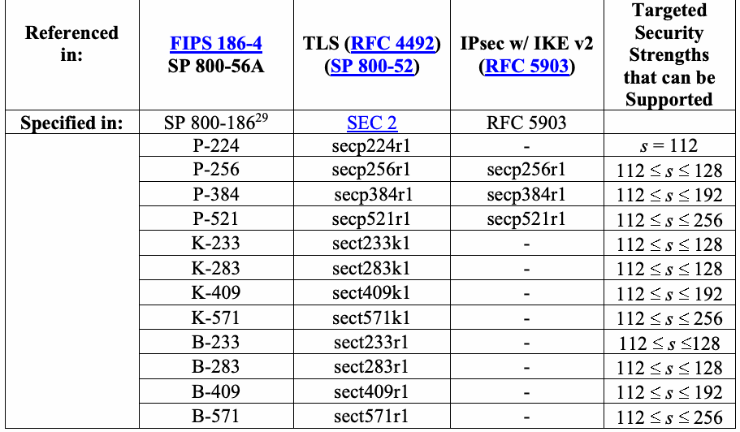
| 参照先： | FIPS 186-4 SP 800-56A | TLS (RFC 4492) (SP 800-52) | IPsec w/ IKE v2 (RFC 5903) | サポート可能な目標セキュリティ強度 |
| 規定元： | SP 800-18629 | SEC 2 | RFC 5903 | |
| P-224 | secp224r1 | - | s = 112 | |
| P-256 | secp256r1 | secp256r1 | 112 ≤ s ≤ 128 | |
| P-384 | secp384r1 | secp384r1 | 112 ≤ s ≤ 192 | |
| P-521 | secp521r1 | secp521r1 | 112 ≤ s ≤ 256 | |
| K-233 | sect233k1 | - | 112 ≤ s ≤ 128 | |
| K-283 | sect283k1 | - | 112 ≤ s ≤ 128 | |
| K-409 | sect409k1 | - | 112 ≤ s ≤ 192 | |
| K-571 | sect571k1 | - | 112 ≤ s ≤ 256 | |
| B-233 | sect233r1 | - | 112 ≤ s ≤128 | |
| B-283 | sect283r1 | - | 112 ≤ s ≤ 128 | |
| B-409 | sect409r1 | - | 112 ≤ s ≤ 192 | |
| B-571 | sect571r1 | - | 112 ≤ s ≤ 256 |
Finite Field Cryptography Groups for Key Establishment: The following safe-prime
鍵確立用有限体暗号群：以下の安全素数
未レビュー訳groups are defined in RFC 3526 and RFC 7919 for use with key-agreement schemes that
群はRFC 3526およびRFC 7919で定義され、
未レビュー訳employ either the FFC DH or FFC MQV primitives.
FFC DHまたはFFC MQVプリミティブを用いる鍵共有スキームで使用する。
未レビュー訳The domain parameters for these groups have the form ( p, q = (p −1)/2, g = 2 ); the explicit
これらの群のドメインパラメータは(p, q = (p − 1)/2, g = 2)の形式である。明示的な
未レビュー訳values for p are provided in the RFCs.
pの値は各RFCに記載されている。
未レビュー訳Table 25: Approved IKE groups for FFC key agreement.
表25：FFC鍵共有用の承認済みIKEグループ。
未レビュー訳| IKE v2 (RFC 3526) | Targeted Security Strengths that can be Supported |
| MODP-2048 (ID=14) | s = 112 |
| MODP-3072 (ID=15) | 112 s 128 |
| MODP-4096 (ID=16) | 112 s 152* |
| MODP-6144 (ID=17) | 112 s 176* |
| MODP-8192 (ID=18) | 112 s 200* |
原本PDFの抜粋画像
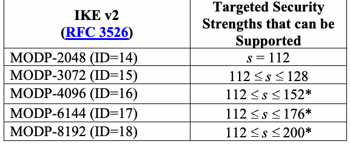
| IKE v2 (RFC 3526) | サポート可能な目標セキュリティ強度 |
| MODP-2048 (ID=14) | s = 112 |
| MODP-3072 (ID=15) | 112 ≤ s ≤ 128 |
| MODP-4096 (ID=16) | 112 ≤ s ≤ 152* |
| MODP-6144 (ID=17) | 112 ≤ s ≤ 176* |
| MODP-8192 (ID=18) | 112 ≤ s ≤ 200* |
Table 26: Approved TLS groups for FFC key agreement.
表26：FFC鍵共有用の承認済みTLSグループ。
未レビュー訳| TLS (RFC 7919) | Targeted Security Strengths that can be Supported |
| ffdhe2048 (ID = 256) | s = 112 |
| ffdhe3072 (ID = 257) | 112 s 128 |
| ffdhe4096 (ID = 258) | 112 s 152* |
| ffdhe6144 (ID = 259) | 112 s 176* |
| ffdhe8192 (ID = 260) | 112 s 200* |
原本PDFの抜粋画像
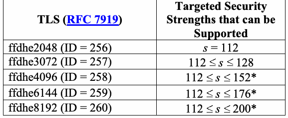
| TLS (RFC 7919) | サポート可能な目標セキュリティ強度 |
| ffdhe2048 (ID = 256) | s = 112 |
| ffdhe3072 (ID = 257) | 112 ≤ s ≤ 128 |
| ffdhe4096 (ID = 258) | 112 ≤ s ≤ 152* |
| ffdhe6144 (ID = 259) | 112 ≤ s ≤ 176* |
| ffdhe8192 (ID = 260) | 112 ≤ s ≤ 200* |
* The maximum security strength estimates were calculated using formula in Section 7.5
* 最大セキュリティ強度の推定値は、FIPS 140 IGのSection 7.5の式を用いて算出し、8ビットの最も近い倍数に
未レビュー訳of the FIPS 140 IG and rounded to the nearest multiple of eight bits.
丸めた。
未レビュー訳Appendix E: Revisions (Informative)
付録E：改訂履歴（参考情報）
未レビュー訳The original version of this document was published in March, 2006. In March, 2007, the following revision was made to allow the dual use of keys during certificate requests: In Section 5.6.4.2, the second item was originally as follows: “A static key pair may be used in more than one key-establishment scheme. However, one static public/private key pair shall not be used for different purposes (for example, a digital signature key pair is not to be used for key establishment or vice
本書の初版は2006年3月に公開された。2007年3月には、証明書申請時に鍵を二重用途で使用できるよう、次の改訂を行った。Section 5.6.4.2の第2項目は、当初次のとおりだった：「静的鍵ペアは複数の鍵確立スキームで使用してもよい。ただし、1つの静的公開鍵／秘密鍵ペアを異なる目的に使用してはならない（例えば、デジタル署名用鍵ペアを鍵確立または鍵転送に使用してはならない）」。
未レビュー訳versa).” The item was changed to the following, where the changed text is indicated in italics: “A static key pair may be used in more than one key-establishment scheme. However, one static public/private key pair shall not be used for different purposes (for
これを次のように変更した（変更箇所はイタリック体で示す）。「静的鍵ペアは複数の鍵確立スキームで使用してもよい。ただし、1つの静的公開鍵／秘密鍵ペアを異なる目的に使用してはならない（例えば、デジタル署名用鍵ペアを鍵確立または鍵転送に使用してはならない。
未レビュー訳example, a digital signature key pair is not to be used for key establishment or vice
ただし、次の場合は例外となり得る：
未レビュー訳versa) with the following possible exception: when requesting the (initial) certificate
公開静的鍵確立鍵の（初回）証明書を申請する際、
未レビュー訳for a public static key-establishment key, the key establishment private key associated
公開鍵に対応する鍵確立秘密鍵を
未レビュー訳with the public key may be used to sign the certificate request. See SP 800-57, Part 1
証明書申請への署名に使用してもよい。鍵の用途についてはSP 800-57 Part 1
未レビュー訳on Key Usage for further information.”
を参照。」
未レビュー訳In May 2013, the following revisions were made;
2013年5月に、次の改訂を行った。
未レビュー訳•Abstract – The March 2007 version cites ANS X9.42 and X9.63; this version directly
•要旨：2007年3月版ではANS X9.42およびX9.63を引用していたが、本版では
未レビュー訳provides information on the key establishment schemes (DH, MQV) and the
鍵確立スキーム（DH、MQV）および
未レビュー訳underlying mathematics structure (discrete logs on finite field, elliptic curve).
その基礎となる数学的構造（有限体および楕円曲線上の離散対数）に関する情報を直接記載した。
未レビュー訳•Section 3.1 – Added definitions of assumption, binding, bit string, byte, byte string,
•Section 3.1：仮定、結合、ビット列、バイト、バイト列、
未レビュー訳destroy, key-establishment pair, key-wrapping key, trusted association; removed
破棄、鍵確立ペア、鍵ラッピング鍵、信頼された関連付けを定義に追加し、
未レビュー訳definitions on assurance of identifier, initiator, responder, (instead initiator and
識別子の保証、開始者および応答者の定義を削除した。
未レビュー訳responder, all the schemes are defined in terms of party U and party V, see revision
全スキームを開始者／応答者でなく当事者UおよびVで定義するため（Section 4の改訂参照）。鍵素材の用語を導出鍵素材（
未レビュー訳in Section 4), extended keying material to derived keying material (derived from the
共有秘密から導出）および転送鍵素材（送信者が鍵転送
未レビュー訳shared secret) and transported keying material (generated by the sender in a key-
スキームで生成）に変更した
未レビュー訳transport scheme.)
。
未レビュー訳•Section 3.2 – The notations, C(ie), C(ie, js), MAC(MacKey, MacData), MacTag,
•Section 3.2：表記C(iₑ)、C(iₑ, jₛ)、MAC(MacKey, MacData)、MacTag、
未レビュー訳T_bitlen(X), were introduced; the notation |x | is removed.
T_bitlen(X)を導入し、|x|の表記を削除した。
未レビュー訳•Section 3.2 – Notations Z, Ze, Zs are used for both FFC and ECC and therefore moved
•Section 3.2：Z、Zₑ、Zₛの表記をFFCとECCの両方に用いるため、
未レビュー訳up as general notations.
一般表記として前方に移動した。
未レビュー訳•Section 3.2 – The terms GF(p), GF(p)* were introduced for FFC.
•Section 3.2：FFC用に用語GF(p)、GF(p)*を導入した。
•Section 4 – Used party U and party V to name the parties, rather than user the initiator and responder as the parties. Discussions about identifiers vs. identity and binding have been moved to Section 4.1.
•Section 4：当事者を開始者・応答者ではなく当事者UおよびVと呼ぶことにした。識別子とアイデンティティ、結合に関する議論はSection 4.1に移した。
未レビュー訳•Section 4.1 – Added discussions on the concept of a trusted association;
•Section 4.1：信頼された関連付けの概念に関する説明を追加した。
未レビュー訳•Section 5 – Table 1 in March 2007 version has been removed; the information is now provided in Tables 6 and 7 in Section 5.8.1, and Tables 8 and 9 in Section 5.9.3.
•Section 5：2007年版の表1を削除し、情報をSection 5.8.1の表6、7およびSection 5.9.3の表8、9に掲載した。
•Section 5.2 – Provided more details on MAC inputs (MacKey and MacData). Added text that MACs can be used for key derivation, as well as key confirmation. Added SP 800-38B (CMAC) as an approved MAC. Refers to the new Tables 6 and 7.
•Section 5.2：MAC入力（MacKeyおよびMacData）の詳細を追加した。MACを鍵導出にも鍵確認にも使用できる旨を追加し、承認済みMACとしてSP 800-38B（CMAC）を追加した。新しい表6および7を参照。
未レビュー訳•Section 5.2.1 - MacLen now is a parameter, rather than an input variable. Refers to new Tables 8 and 9, instead of old Tables 1 and 2. Discusses the truncation of the MAC output.
•Section 5.2.1：MacLenを入力変数ではなくパラメータとした。旧表1、2ではなく新表8、9を参照し、MAC出力の切り詰めについて説明した。
未レビュー訳•Section 5.4 – More discussion has been added about the use of nonces, including new requirements and recommendations.
•Section 5.4：新しい要件と推奨事項を含め、ノンスの使用に関する説明を追加した。
•Section 5.5.1.1 – Added the requirement that the leftmost bit of p and q be a 1. Table 1 has been shortened to address just the values of p and q; information about the hash
•Section 5.5.1.1：pおよびqの最上位ビットを1とする要件を追加した。表1をpおよびqの値に限定し、ハッシュ関数に関する情報は
未レビュー訳function is now provided in Tables 6 and 7 of Section 5.8.1, and in Tables 8 and 9 of
Section 5.8.1の表6、7および
未レビュー訳Section 5.9.3.
Section 5.9.3の表8、9に掲載した。
未レビュー訳•Section 5.5.1.2 – More information is provided about elliptic curves. More details
•Section 5.5.1.2：楕円曲線についての情報を追加し、パラメータ値の詳細を
未レビュー訳are provided on parameter values. Table 2 has been shorted to just address n and h;
示した。表2をnおよびhのみに限定し、
未レビュー訳information about the hash function is now provided in Tables 6 and 7 of Section
ハッシュ関数に関する情報はSection 5.8.1の表
未レビュー訳5.8.1, and in Tables 8 and 9 of Section 5.9.3.
6、7およびSection 5.9.3の表8、9に掲載した。
未レビュー訳•Section 5.5.2 – A note about parameters generated by using SHA-1has been removed.
•Section 5.5.2：SHA-1を用いて生成したパラメータに関する注記を削除した。
The validation methods are referred to other documents (FIPS 186 and ANS X9.62).
検証方法は他の文書（FIPS 186およびANS X9.62）を参照するようにした。
It is not a right place for such statement.
このような記述を置くのに適切な場所ではないためである。
未レビュー訳•Section 5.6 has been reorganized to make it clearer to understand key generation and
•Section 5.6を再構成し、鍵生成と
未レビュー訳obtaining the required assurances.
必要な保証の取得を理解しやすくした。
未レビュー訳•Section 5.6.1.1 – FFC key-pair generation has been revised to require a randomly
•Section 5.6.1.1：FFC鍵ペア生成を改訂し、秘密鍵に予測不能性を求める代わりに、
未レビュー訳selected integer in the interval [2, q−2], rather than requiring a private key for FFC
区間[2, q−2]から無作為に選択した整数を要求するようにした。FFC
未レビュー訳key pair generation to be unpredictable and generated by an approved RNG.
鍵ペア生成では、承認済みRNGで秘密鍵を予測不能に生成することを求めていた。
未レビュー訳Generation in accordance with FIPS 186-3 (as referenced therein) fulfills these
参照先のFIPS 186-3に従った生成は、これらの
未レビュー訳requirements.
要件を満たす。
未レビュー訳•Section 5.6.1.2 – ECC key-pair generation has been revised to require a randomly
•Section 5.6.1.2：ECC鍵ペア生成を改訂し、秘密鍵に予測不能性を求める代わりに、
未レビュー訳selected integer in the interval [2, n−2], rather than requiring a private key for ECC
区間[2, n−2]から無作為に選択した整数を要求するようにした。ECC
未レビュー訳key pair generation to be unpredictable and generated by an approved RNG.
鍵ペア生成では、承認済みRNGで秘密鍵を予測不能に生成することを求めていた。
未レビュー訳Generation in accordance with FIPS 186-3 (as referenced therein) fulfills these
参照先のFIPS 186-3に従った生成は、これらの
未レビュー訳requirements.
要件を満たす。
未レビュー訳•New Section 5.6.2 – Discusses assurances and why they are required. Added Tables
•新しいSection 5.6.2：保証とその必要性について説明し、保証の種類をまとめた
未レビュー訳3, 4, and 5 which summarize types of assurance.
表3、4、5を追加した。
未レビュー訳•New Section 5.6.2.1 – Discusses the assurances required by a key-pair owner about its own key pair, including owner assurance of correct generation, static and ephemeral public-key validity, pair-wise consistency and private-key possession.
•新しいSection 5.6.2.1：鍵ペア所有者自身の鍵ペアに関して必要な保証を説明した。これには、正しい生成、静的およびエフェメラル公開鍵の有効性、ペアごとの一貫性、秘密鍵の保有に関する所有者の保証を含む。
•New Section 5.6.2.2 – Discusses the assurances required by a public-key recipient, including static and ephemeral public-key validity, and static and ephemeral private-key possession.
•新しいSection 5.6.2.2：公開鍵の受信者に必要な保証を説明した。これには、静的およびエフェメラル公開鍵の有効性、静的およびエフェメラル秘密鍵の保有を含む。
未レビュー訳•New Sections 5.6.3.2 and 5.6.3.3 – Different requirements are included for static and ephemeral key pairs. Included a case that an agent may act on behalf of a system user.
•新しいSections 5.6.3.2および5.6.3.3：静的鍵ペアとエフェメラル鍵ペアに異なる要件を設けた。代理人がシステム利用者に代わって行動できるケースを追加した。
未レビュー訳•Section 5.7 – Added requirements to destroy all values if there is an error and to destroy intermediate calculations have been added for each FFC and ECC primitive. Conversion calls have been added to convert to a string. Note that this removed such statements for the action steps for each scheme in Section 6.
•Section 5.7：エラー時にすべての値を破棄する要件、およびFFCとECCの各プリミティブで中間計算を破棄する要件を追加した。文字列への変換呼出しを追加した。これにより関連する記述を削除した。
未レビュー訳•Section 5.8 – Key derivation has been divided into one-step key-derivation methods (Section 5.8.1), an extract-then-expand key-derivation procedure (Section 5.8.2) and application-specific key-derivation methods (Section 5.8.3).
•Section 5.8：鍵導出を、1段階鍵導出方式（Section 5.8.1）、抽出後に展開する鍵導出手順（Section 5.8.2）、およびアプリケーション固有の鍵導出方式（Section 5.8.3）に分けた。
•Section 5.8.1 – Instead of using a hash function, the one-step method is now defined
•Section 5.8.1：1段階方式をハッシュ関数ではなく関数Hで定義した。
未レビュー訳with a function H, which can be a hash function or an HMAC with an approved hash
Hはハッシュ関数、または承認済みハッシュ関数を用いるHMACとすることができる。
未レビュー訳function. Added tables defining minimum length for the hash functions with regard
各パラメータセットに対するハッシュ関数の最小長を定める表を追加し、
未レビュー訳to each parameter set; and added more complete discussions about OtherInfo,
OtherInfoについて、
未レビュー訳including the concatenation and ASN.1 formats included in the previous version.
前版にあった連結形式およびASN.1形式を含め、より完全な説明を追加した。
未レビュー訳HMAC with an approved hash function is now approved for key derivation, in
承認済みハッシュ関数を用いるHMACを、
未レビュー訳addition to the hash function specified in the previous version.
前版に規定されたハッシュ関数に加え、鍵導出に承認した。
未レビュー訳•Section 5.8.1 – Split Table 1 (for FFC) to Table 1 (Section 5.5.1.1), Table 6 (Section
•Section 5.8.1：FFC用の表1を、表1（Section 5.5.1.1）、表6（Section
未レビュー訳5.8.1) and Table 8 (Section 5.9.3), where Table 1 is for FFC parameter-size sets,
5.8.1）および表8（Section 5.9.3）に分割した。表1はFFCパラメータサイズセット、
未レビュー訳Table 6 is for the function H used for key derivation and Table 8 is about the MAC
表6は鍵導出に用いる関数H、表8はMAC
未レビュー訳key length and MAC tag length. In the new tables, added row on “Maximum security
鍵長およびMACタグ長を扱う。新しい表に「最大セキュリティ
未レビュー訳strength supported”.
強度」を追加した。
未レビュー訳•Section 5.8.1 – In Table 6, changed the minimum output length for function H from
•Section 5.8.1：表6で、関数Hの最小出力長を
未レビュー訳128 to 112 for FFC parameter set.
FFCパラメータセットについて128から112に変更した。
未レビュー訳•Section 5.8.1 - Split Table 2 (for ECC) to Table 2 (Section 5.5.1.2), Table 7 (Section
•Section 5.8.1：ECC用の表2を、表2（Section 5.5.1.2）、表7（Section
未レビュー訳5.8.1) and Table 9 (Section 5.9.3), where Table 2 is for ECC parameter-size sets,
5.8.1）および表9（Section 5.9.3）に分割した。表2はECCパラメータサイズセット、
未レビュー訳Table 7 is for the function H used for key derivation, and Table 9 is about the MAC
表7は鍵導出に用いる関数H、表9はMAC
未レビュー訳key length and MAC tag length. In the new tables, added row on “Maximum security
鍵長およびMACタグ長を扱う。新しい表に「最大セキュリティ
未レビュー訳strength supported”.
強度」の行を追加した。
未レビュー訳•Section 5.8.2 – Added reference to an approved two-step method – an extraction-
•Section 5.8.2：承認済みの2段階方式、すなわち抽出後に展開する方式への参照を
未レビュー訳then-expansion method – that is specified in SP 800-56C.
追加した。この方式はSP 800-56Cに規定されている。
未レビュー訳•Section 5.8.3 – Added reference to the application-specific key-derivation methods
•Section 5.8.3：アプリケーション固有の鍵導出方式への参照を追加した。これらは
未レビュー訳provided in SP 800-135.
SP 800-135に記載されている。
未レビュー訳•Moved general introduction of key confirmation to Section 5.9 – Incorporates the material from Section 8 (with additional introductory material).
•鍵確認の一般的な導入説明をSection 5.9に移し、追加の導入説明とともに旧Section 8の内容を取り込んだ。
•New Section 5.9.1.1 – Emphasizes more clearly that a nonce is required if there is no ephemeral key; added guidance on what to do if key confirmation fails.
•新しいSection 5.9.1.1：エフェメラル鍵がない場合はノンスが必須であること、および鍵確認に失敗した場合の処理指針を明確化した。
未レビュー訳•New Section 5.9.2 – Emphasizes that if no ephemeral key is used, then a nonce is required.
•新しいSection 5.9.2：エフェメラル鍵を使わない場合はノンスが必須であることを明確化した。
•New Section 5.9.3 – Discussions about the security strength of the MacTag are provided, along with tables on the minimum MacKey length and MacLen values.
•新しいSection 5.9.3：MacTagのセキュリティ強度を説明し、MacKeyの最小長およびMacLen値に関する表を追加した。
•New Section 5.9.3 – Table 8, changed the minimum MacLen, that is, MacTag length to 64 bits for all the parameter sets of FFC.
•新しいSection 5.9.3：表8でFFCのすべてのパラメータセットについて、最小MacLen、すなわちMacTag長を64ビットに変更した。
未レビュー訳•New Section 5.9.3 – Table 9, changed the minimum MacLen, that is, MacTag length to 64 bits for all the parameter sets of ECC.
•新しいSection 5.9.3：表9でECCのすべてのパラメータセットについて、最小MacLen、すなわちMacTag長を64ビットに変更した。
•Section 6 – The notation C(ie) replaces C(i), and C(ie, js) replaces C(i, j). If party U does not contribute a static key, then the requirement for a non-null identifier is now transaction dependent, rather than required. Rationale for choosing the C(ie, js) schemes has been moved to a new Section 8, instead of after each class of schemes.
•Section 6：表記C(ie)がC(i)に置き換わり、C(ie, js)がC(i, j)に置き換わった。当事者Uが静的鍵を提供しない場合、nullでない識別子の要件は必須ではなく、トランザクションに依存するようになった。C(ie, js)スキームを選択する根拠は、各スキーム群の後ろではなく、新しいSection 8に移した。
未レビュー訳Assumptions are specified for each type of scheme, rather than prerequisites.
前提条件ではなく、スキームの種類ごとに仮定を定めた。
•Section 6.1.1 (and similarly for Sections 6.2.1, 6.2.2 and 6.3) –Added a new
•Section 6.1.1（ならびにSections 6.2.1、6.2.2および6.3）：新たな
未レビュー訳assumption that if an identifier is used as a label, then the identifier must have a
仮定を追加した。識別子をラベルとして使う場合、その識別子は当事者の静的鍵と
未レビュー訳trusted association to that party’s static key. The discussion on the need for a trusted
信頼された関連付けを持たなければならない。信頼された
未レビュー訳association has been added.
関連付けが必要な理由についての説明を追加した。
未レビュー訳•Section 6.1.1.1 (dhHybrid1) – More guidance is provided about error handling.
•Section 6.1.1.1（dhHybrid1）：エラー処理に関する指針を追加した。
Specifically allows the reuse of an ephemeral key pair in a broadcast scenario. This
ブロードキャストの状況でエフェメラル鍵ペアを再利用することを明示的に許可した。これは
未レビュー訳is also provided in Sections 6.1.1.2, 6.1.1.3 and 6.1.1.4.
Sections 6.1.1.2、6.1.1.3および6.1.1.4にも追加した。
未レビュー訳•New Section 6.1.1.5 (and similarly in new Sections 6.1.2.3, 6.2.1.5, 6.2.2.3 and 6.3.3)
•新しいSection 6.1.1.5（ならびに新しいSections 6.1.2.3、6.2.1.5、6.2.2.3および6.3.3）：
未レビュー訳– Key confirmation is incorporated to each applied subcategory of schemes. This
各スキームサブカテゴリに鍵確認を組み込んだ。この
未レビュー訳material was previously provided in Section 8.4 of the previous version.
内容は前版のSection 8.4に記載されていた。
未レビュー訳•Section 6.2.1 (C(1e,2s) schemes) – Added additional assumptions which were
•Section 6.2.1（C(1e, 2s)スキーム）：前版の前提条件に
未レビュー訳included in the previous prerequisites. This includes obtaining assurance of static
含まれていた追加の仮定を追加した。これには鍵ペア所有者の静的
未レビュー訳public key validity and private keys possession of the key-pair owner.
公開鍵の有効性および秘密鍵の保有に関する保証の取得を含む。
未レビュー訳•Section 7 – Has been revised to specify DLC-based key-agreement and key transport
•Section 7：DLCベースの鍵共有および鍵転送を
未レビュー訳in the same key-establishment transaction, with party U acting as the key-transport
同一の鍵確立トランザクションで行うよう改訂した。当事者Uが鍵転送の
未レビュー訳sender. In addition, optional key confirmation from party V to party U following the
送信者となる。また、
未レビュー訳key-transport process has been specified.
鍵転送後に当事者Vから当事者Uへの任意の鍵確認を規定した。
未レビュー訳•Section 8 – The rationale for choosing each scheme type has been moved from
•Section 8：各スキーム種別を選択する根拠を
未レビュー訳Section 6 of the previous version. A new section on the rationale associated with key
前版のSection 6から移した。鍵
未レビュー訳transport has been included.
転送の根拠に関する新しい節を追加した。
未レビュー訳•All figures are replaced to reflect the content, text, and terminology changes.
•すべての図を、内容、本文および用語の変更を反映したものに置き換えた。
•Old Appendix A, Summary of Differences between this Recommendation and ANS X9 Standards, was removed. Note that X9.42 was withdrawn, while X9.63 has modified to be consistent with this Recommendation.
•旧付録A「本勧告とANS X9規格との差異の概要」を削除した。X9.42は廃止され、X9.63は本勧告と整合するよう改訂されたことに注意。
•Appendix B – The requirement of including identifiers as part of the OtherInfo is replaced with text that. it is strongly recommended that identifiers for both parties to a key-agreement transaction be included among the data input to a key-derivation method. A paragraph has been added stating that there may be other ways to bind
•付録B：OtherInfoの一部として識別子を含める要件を置き換え、鍵共有トランザクションの両当事者の識別子を鍵導出方式の入力データに含めることを強く推奨する旨の説明を加えた。
未レビュー訳identifiers to derived keying material, but the recommendation makes no statement on the adequacy of this.
導出鍵素材への識別子の結合について、本勧告はその妥当性について何ら述べない。
未レビュー訳•The new Appendix A includes all the informative references, which was in Appendix D in March 2007 version.
•新しい付録Aには、2007年3月版の付録Dにあった参考文献（informative references）をすべて収録した。
•The old Appendix E becomes Appendix D and the changes on March 2007 version are added as listed here.
•旧付録Eを付録Dとし、2007年3月版に対する変更をここに列挙した。
In 2018, the following revisions were made:
2018年に、次の改訂を行った。
未レビュー訳1.Inserted hyperlinks for sections, references and definitions.
1.節、参考文献および定義へのハイパーリンクを挿入した。
2.Text about key transport and broadcasting has been removed, except for a short
2.鍵転送およびブロードキャストに関する本文を削除した。ただし、
未レビュー訳discussion of key transport in Section 4.3.
Section 4.3の鍵転送に関する短い説明を除く。
未レビュー訳3.Tables 1, 2 6 and 7: Changed column 1, row 1 to "Targeted security strength" instead
3.表1、2、6および7：第1列第1行を「最大セキュリティ強度対応」ではなく「目標セキュリティ強度」に
未レビュー訳of "Maximum security strength supported"
変更した。
未レビュー訳4.Section 3.1: Added definitions for critical security parameter, cryptographic module
4.Section 3.1：重要セキュリティパラメータ（critical security parameter）、暗号モジュール（cryptographic module）
未レビュー訳and MacOutputBits. Updated the definition of destroy, integrity, key-derivation
およびMacOutputBitsの定義を追加した。destroy（破棄）、integrity（完全性）、key-derivation（鍵導出）
未レビュー訳procedure, key-establishment transaction, key-wrapping algorithm, key-wrapping
procedure（手順）、key-establishment transaction（鍵確立トランザクション）、key-wrapping algorithm（鍵ラッピングアルゴリズム）、key-wrapping（鍵ラッピング）
未レビュー訳key, MacTagBits, message authentication code, shared secret, symmetric key
鍵、MacTagBits、メッセージ認証コード、共有秘密、共通鍵
未レビュー訳algorithm, store-and-forward and targeted security strength. Modified the definition
アルゴリズム、ストアアンドフォワードおよび目標セキュリティ強度を追加した。次の定義を変更した。
未レビュー訳for fresh, and key confirmation, Mac tag.
新鮮性および鍵確認、Mac tag。
未レビュー訳5.Section 3.2: Inserted CSP, len(x), MacOutputBits and RBG. Removed H and HMAC-
5.Section 3.2：CSP、len(x)、MacOutputBitsおよびRBGを追加した。HおよびHMAC-
未レビュー訳hash. Modified MacTag. MacTagLen was changed to MacTagBits. (Uses of
hashを削除し、MacTagの定義を変更した。MacTagLenをMacTagBitsに変更した（
未レビュー訳MacOutputLen in the document were changed to MacOutputBits).
文書中のMacOutputLenの使用箇所をMacOutputBitsに変更した）。
未レビュー訳6.Section 4: Inserted additional paragraphs the security of a key-establishment scheme
6.Section 4：鍵確立スキームのセキュリティに関する段落を追加し、
未レビュー訳and explicit instructions for the destruction of certain potentially sensitive values.
特定の値を破棄する明示的な指示を追加した。
未レビュー訳Inserted a requirement that values explicitly required to be destroyed when leaving a
ルーチンを終了する際に明示的な破棄が求められる値（すなわち、ローカルに保存された機微データ）を、
未レビュー訳routine (i.e., potentially sensitive locally stored data) shall not be used or reused for
他の目的に使用または再利用してはならないという要件を
未レビュー訳any additional purpose.
追加した。
未レビュー訳7.Section 4.1, paragraph 2, mentioned that domain parameters may be from an
7.Section 4.1第2段落：ドメインパラメータは
未レビュー訳approved list. Paragraph 3: Explained what is meant by transporting in a "protected
承認済みリストから取得できると記載した。第3段落では「保護された
未レビュー訳manner."
方法で」転送することの意味を説明した。
未レビュー訳8.Section 5.1: Inserted a reference to FIPS 202.
8.Section 5.1：FIPS 202への参照を追加した。
9.Section 5.2: Paragraph 3 − added KMAC to the list of approved MACs. Paragraph 5
9.Section 5.2：第3段落に、承認済みMACの一覧へKMACを追加した。第5段落では
未レビュー訳− referred to SP 800-56C for the case where a MAC is used for key derivation.
MACを鍵導出に用いる場合についてSP 800-56Cを参照するようにした。
未レビュー訳10.Section 5.2.1, item 2: Changed “is required to” to “shall”. MacLen has been renamed to be MacTagBits for clarity.
10.Section 5.2.1項目2：「必要とされる」を「shall」に変更した。明確化のためMacLenをMacTagBitsに改称した。
未レビュー訳11.Section 5.5: Revised wording.
11.Section 5.5：表現を改訂した。
12.Section 5.5.1.1: Certain FFC groups defined in other standards are now approved for use, which are encouraged for use. The old parameter-size sets in Table 1 are now addressed as FIPS 186-type sets and recommended for use only in legacy applications. Parameter-size set FA was removed. Table 1 has been shortened to
12.Section 5.5.1.1：他の規格で定義された特定のFFC群を新たに承認し、その使用を推奨した。表1の旧パラメータサイズセットはFIPS 186型セットとして扱い、レガシーアプリケーションに限って使用を推奨することとした。パラメータサイズセットFAを削除した。表1を短縮し、
未レビュー訳address just the values of p and q; information about the hash function is now provided in Section 5.8.1 and Section 5.9.3. For the FIPS 186-type parameter-size sets, a requirement was added that the leftmost bit of p and q be a 1.
pとqの値のみを記載するようにした。ハッシュ関数の情報はSection 5.8.1およびSection 5.9.3に移した。FIPS 186型パラメータサイズセットについては、pおよびqの最上位ビットを1とする要件を追加した。
未レビュー訳13.Section 5.5.1.2: Removed the table of parameter-size sets. Elliptic curves will be specified in SP 800-186 (when available; will continue to be available in FIPS 186 until then). References to ASC X9.62 have been removed.
13.Section 5.5.1.2：パラメータサイズセットの表を削除した。楕円曲線はSP 800-186（利用可能になった時点。それまではFIPS 186で引き続き利用可能）に規定することとした。ASC X9.62への参照を削除した。
未レビュー訳14.Section 5.5.2: Inserted an assurance method that allows approved safe-prime groups of domain parameters.
14.Section 5.5.2：承認済み安全素数群のドメインパラメータを許可する保証方法を追加した。
15.Section 5.6.1.1: Added discussions about the generation of key pairs for both the approved safe-prime groups and the FIPS 186-type parameter-size sets. The FFC key-
15.Section 5.6.1.1：承認済み安全素数群およびFIPS 186型パラメータサイズセットの双方について、鍵ペア生成に関する説明を追加した。FFC鍵
未レビュー訳pair generation routines from FIPS 186-4 were added (with some modifications). A
ペア生成ルーチンをFIPS 186-4から追加した（いくつか変更を加えた）。
未レビュー訳reference to SP 800-133 is included for generating the keys.
鍵の生成にはSP 800-133を参照するようにした。
未レビュー訳16.Section 5.6.1.2: The ECC key-pair generation routines from FIPS 186-4 were added
16.Section 5.6.1.2：ECC鍵ペア生成ルーチンをFIPS 186-4から追加した
未レビュー訳(with some modifications).
（いくつか変更を加えた）。
未レビュー訳17.Section 5.6.2.1.2: Revised to accommodate the safe-prime groups.
17.Section 5.6.2.1.2：安全素数群に対応するよう改訂した。
18.Sections 5.6.2.1.3, 5.6.2.1.4 and 5.6.2.1.5: Revised for further clarity.
18.Sections 5.6.2.1.3、5.6.2.1.4および5.6.2.1.5：明確さを高めるため改訂した。
19.Section 5.6.2.1.4: The alternative test in method b was removed.
19.Section 5.6.2.1.4：方法bの代替試験を削除した。
20.Section 5.6.2.2.2: Revised to accommodate the safe-prime groups.
20.Section 5.6.2.2.2：安全素数群に対応するよう改訂した。
21.Section 5.6.2.3: Introductory text added.
21.Section 5.6.2.3：導入文を追加した。
22.Section 5.6.2.3.1: Now specified as a method for FFC full public-key validation. The
22.Section 5.6.2.3.1：FFC完全公開鍵検証の方法として規定し直した。
未レビュー訳comment on process step 1 has been revised for clarity.
手順1に関する注記を明確化のため改訂した。
未レビュー訳23.Section 5.6.2.3.2: New section added on FFC partial public-key validation.
23.Section 5.6.2.3.2：FFC部分公開鍵検証に関する新しい節を追加した。
24.Sections 5.6.2.3.1, 5.6.2.3.2 and 5.6.2.3.3: Added text to say that when an error is
24.Sections 5.6.2.3.1、5.6.2.3.2および5.6.2.3.3：エラーが
未レビュー訳found, the routine should be exited immediately without further processing.
見つかった場合は、それ以上処理せず直ちにルーチンを終了するように記述を追加した。
未レビュー訳25.Section 5.6.2.2.2: Changed “The recipient of another party’s ephemeral public key is
25.Section 5.6.2.2.2：「他の当事者のエフェメラル公開鍵の受信者は、保証を得ることが
未レビュー訳required to obtain assurance…” to “The recipient of another party’s ephemeral public
求められる」を、「他の当事者のエフェメラル公開鍵の受信者は、保証を
未レビュー訳key shall obtain assurance…”.
得なければならない」に変更した。
未レビュー訳26.Section 5.6.2.2.4, items 2 and 3: Added further clarifications.
26.Section 5.6.2.2.4の項目2および3：説明をさらに明確化した。
27.Section 5.6.3.2: Public keys generated using the approved safe primes shall not be
27.Section 5.6.3.2：承認済み安全素数を用いて生成した公開鍵をデジタル署名に
未レビュー訳used for digital signatures.
使用してはならないことを明記した。
未レビュー訳28.Section 5.6.3.3: Added further clarification to item 1 to state that the private key
28.Section 5.6.3.3：項目1をさらに明確化し、秘密鍵は
未レビュー訳needs to be protected until destroyed and is not to be backed up, archived or escrowed.
破棄されるまで保護し、バックアップ、アーカイブまたはエスクローに保管してはならないとした。
未レビュー訳29.Section 5.7.1.1: Clarified error handling in step 2, and added checks for z = p − 1 and z = 0.
29.Section 5.7.1.1：手順2のエラー処理を明確化し、z = p − 1およびz = 0の検査を追加した。
未レビュー訳30.Section 5.7.1.2: Clarified error handling in step 2.
30.Section 5.7.1.2：手順2のエラー処理を明確化した。
31.Section 5.7.2.1: Clarified error handling in step 6.
31.Section 5.7.2.1：手順6のエラー処理を明確化した。
32.Section 5.7.2.3: Clarified error handling in step 3.
32.Section 5.7.2.3：手順3のエラー処理を明確化した。
33.Section 5.8: Inserted a requirement that the shared secret shall be used only by an approved key-derivation method and shall not for any other purpose. Inserted an explicit statement that SP800-56A approves the key-derivation methods only for the derivation of keys from a shared secret.
33.Section 5.8：共有秘密は承認済み鍵導出方式のみで使用し、他の目的には使用してはならないという要件を追加した。また、SP 800-56Aが鍵導出方式を承認するのは、共有秘密から鍵を導出する用途に限ることを明記した。
34.Moved all key-derivation methods to SP 800-56C. Inserted a new section (Section 5.8.1) to describe how to call a key-derivation method and reorganized Section 5.8.
34.すべての鍵導出方式をSP 800-56Cに移した。鍵導出方式の呼び出し方を説明する新しい節（Section 5.8.1）を設け、Section 5.8を再構成した。
未レビュー訳35.To avoid confusion between the use of OtherInput and OtherInfo in the previous version of this document, OtherInfo was changed to FixedInfo; this information is used as fixed input to the key-derivation method. keydatalen was changed to L for (eventual) consistency between SP 800-56A/B/C and SP 800-108.
35.前版のOtherInputとOtherInfoの混同を避けるため、OtherInfoをFixedInfoに改称した。この情報は鍵導出方式への固定入力として用いる。SP 800-56A/B/CとSP 800-108の間で（将来的に）一貫させるため、keydatalenをLに変更した。
36.In the new Section 5.8.2.1, inserted text in SuppPubInfo and SuppPrivInfo that states
36.新しいSection 5.8.2.1で、SuppPubInfoおよびSuppPrivInfoについて、
未レビュー訳that, while an implementation may be capable of including these subfields, the
実装がこれらの下位フィールドを含める機能を備えていても、
未レビュー訳subfields may be null for a given transaction.
個々のトランザクションでは下位フィールドをnullにしてよいとする記述を追加した。
未レビュー訳37.Section 5.8.2.2 clarifies the interaction with the two-step key-derivation procedure in
37.Section 5.8.2.2では、2段階鍵導出手順との相互作用を明確にした。
未レビュー訳SP 800-56C.
SP 800-56C。
未レビュー訳38.Section 5.9.1: Changed “Each party is required to have an identifier…” to “Each
38.Section 5.9.1：「各当事者は識別子を持つことが求められる」を「各
未レビュー訳party shall have an identifier…”. Also, inserted text that discusses the EphemPubKey
当事者は識別子を持たなければならない」に変更した。また、EphemPubKey
未レビュー訳ᵢ
未レビュー訳string and conversions to FFC and ECC schemes.
文字列およびFFC/ECCスキームへの変換に関する説明を追加した。
未レビュー訳39.Section 5.9.1.1: Appended to Section 5.9.1, since there was no Section 5.9.1.2. Text
39.Section 5.9.1.1をSection 5.9.1に付加した。5.9.1.2が存在しなかったためである。説明
未レビュー訳was added to clarify the use of an ephemeral public key in the MacData.
を追加し、MacDataでのエフェメラル公開鍵の使用を明確化した。
未レビュー訳40.Section 5.9.1.1 (step 1) and 5.9.2: The requirement for a "random nonce" was
40.Section 5.9.1.1（手順1）および5.9.2：「ランダムノンス」の要件を
未レビュー訳changed to a requirement for a "nonce" to be consistent with Section 5.4 and the key
Section 5.4およびSection 6の鍵
未レビュー訳confirmation subsections of Section 6.
確認に関する各節と整合させるため、「ノンス」の要件に変更した。
未レビュー訳41.Section 5.9.3: Modified text to approve the use of KMAC as a MAC algorithm.
41.Section 5.9.3：KMACをMACアルゴリズムとして使えるよう、記述を変更した。
未レビュー訳Removed the domain parameter-size sets, referring to Section 5.5.1 for the domain
ドメインパラメータサイズセットを削除し、ドメイン
未レビュー訳parameter information. Provided text specifying that the MacKey length needs to be
パラメータ情報についてSection 5.5.1を参照するようにした。MacKey長は
未レビュー訳at least the supported security strength of the domain parameters and the Mac tag
ドメインパラメータのサポート対象セキュリティ強度以上、Macタグ
未レビュー訳length needs to be at least 64 bits. Also, added text and a table that identifies the
長は64ビット以上とする記述を追加した。また、
未レビュー訳approved MAC algorithms, values for MacOutputBits and the security strengths
承認済みMACアルゴリズム、MacOutputBitsの値、およびそれらがサポートできるセキュリティ強度を示す
未レビュー訳that they can support.
記述と表を追加した。
未レビュー訳42.Section 6.1.1: Modified the first assumption to refer to Section 5.5.1 for the domain
42.Section 6.1.1：最初の仮定からドメイン
未レビュー訳parameter information. Now refer to Section 5.9.3 for the minimum MacKey and Mac
パラメータ情報をSection 5.5.1に参照するよう変更した。最小MacKey長およびMac
未レビュー訳tag lengths.
タグ長についてSection 5.9.3を参照するよう変更した。
未レビュー訳43.Section 6.1.1.1-6.1.1.4: Clarified error handling.
43.Sections 6.1.1.1–6.1.1.4：エラー処理を明確化した。
44.Section 6.1.2: Modified the first assumption to refer to Section 5.5.1 for the domain parameter information. Now refer to Section 5.9.3 for the minimum MacKey and Mac tag lengths.
44.Section 6.1.2：最初の仮定からドメインパラメータ情報をSection 5.5.1に参照するよう変更した。最小MacKey長およびMacタグ長についてSection 5.9.3を参照するよう変更した。
未レビュー訳45.Section 6.1.2.1-6.1.2.2: Clarified error handling.
45.Sections 6.1.2.1–6.1.2.2：エラー処理を明確化した。
未レビュー訳46.Section 6.2.1: Modified the first assumption to refer to Section 5.5.1 for the domain parameter information. Now refer to Section 5.9.3 for the minimum MacKey and Mac tag lengths.
46.Section 6.2.1：最初の仮定を、ドメインパラメータ情報についてSection 5.5.1を参照するよう変更した。最小MacKey長およびMacタグ長についてはSection 5.9.3を参照するようにした。
47.Section 6.2.1.1-6.2.1.4: Clarified error handling.
47.Sections 6.2.1.1–6.2.1.4：エラー処理を明確化した。
48.Section 6.2.2: Modified the first assumption to refer to Section 5.5.1 for the domain parameter information. Now refer to Section 5.9.3 for the minimum MacKey and Mac tag lengths.
48.Section 6.2.2：最初の仮定からドメインパラメータ情報をSection 5.5.1に参照するよう変更した。最小MacKey長およびMacタグ長についてSection 5.9.3を参照するよう変更した。
未レビュー訳49.Section 6.2.2.1-6.2.2.2: Clarified error handling.
49.Sections 6.2.2.1–6.2.2.2：エラー処理を明確化した。
50.Section 6.3: Modified the first assumption to refer to Section 5.5.1 for the domain parameter information. Now refer to Section 5.9.3 for the minimum MacKey and Mac tag lengths.
50.Section 6.3：最初の仮定を、ドメインパラメータ情報についてSection 5.5.1を参照するよう変更した。最小MacKey長およびMacタグ長についてはSection 5.9.3を参照するようにした。
51.Section 6.31-6.3.2: Clarified error handling.
51.Section 6.31–6.3.2：エラー処理を明確化した。
52.Old Section 7: Removed.
52.旧Section 7：削除した。
53.Section 7.6 (old Section 8.6): Changed to be a summary of the properties discussed
53.Section 7.6（旧Section 8.6）：
未レビュー訳in Sections 7.1 - 7.5 for the schemes in this Recommendation.
本勧告のスキームについてSections 7.1～7.5で述べた特性の概要に変更した。
未レビュー訳54.Section 9 (old Section 10): Modified to refer to SP 800-56C for key-derivation
54.Section 9（旧Section 10）：鍵導出
未レビュー訳methods.
方式についてSP 800-56Cを参照するよう変更した。
未レビュー訳55.Appendix A: Updated the FIPS and SP references.
55.付録A：FIPSおよびSPの参考文献を更新した。
未レビュー訳56.Appendix B: Changed the title.
56.付録B：表題を変更した。
57.Appendix C.1: Changed the routine to specify the technique used in SP 800-56B;
57.付録C.1：SP 800-56Bで用いる技法を指定するようルーチンを変更した。
未レビュー訳the same results should be obtained.
同じ結果が得られるはずである。
未レビュー訳58.Appendix C.4: Added a bit string to integer conversion routine.
58.付録C.4：ビット列を整数に変換するルーチンを追加した。
59.Appendix D: Inserted an appendix listing the approved safe-prime groups and a table
59.付録D：承認済み安全素数群の一覧と、
未レビュー訳providing various names for the NIST-recommended elliptic curves currently
現在FIPS 186-4に規定されているNIST推奨楕円曲線のさまざまな名称を
未レビュー訳specified in FIPS 186-4. The curves will be moved to SP 800-186. The supported
示す表を掲載した付録を追加した。曲線はSP 800-186に移される。曲線および安全素数群の
未レビュー訳security strengths for the curves and the safe-prime groups is included in the tables.
サポート対象セキュリティ強度を表に含めた。
未レビュー訳